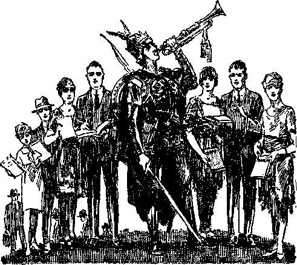
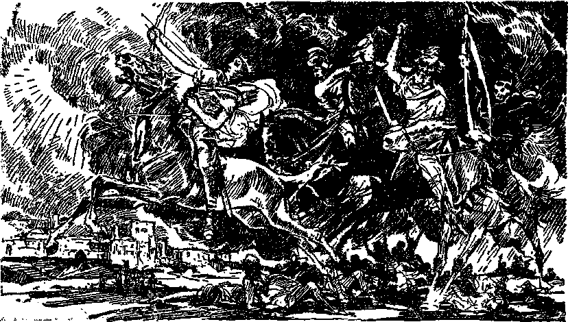
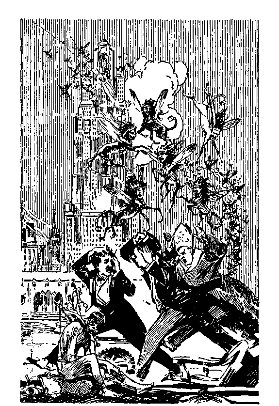
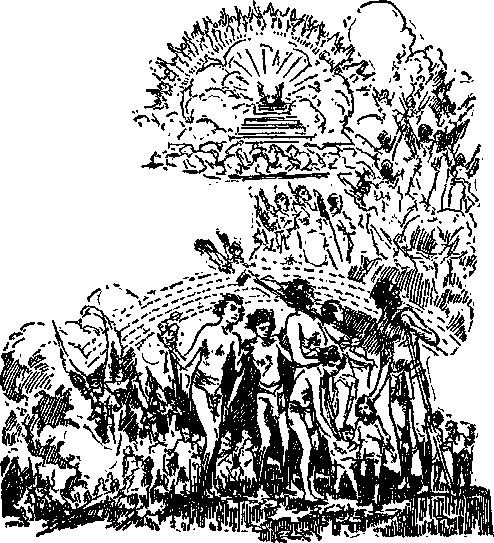
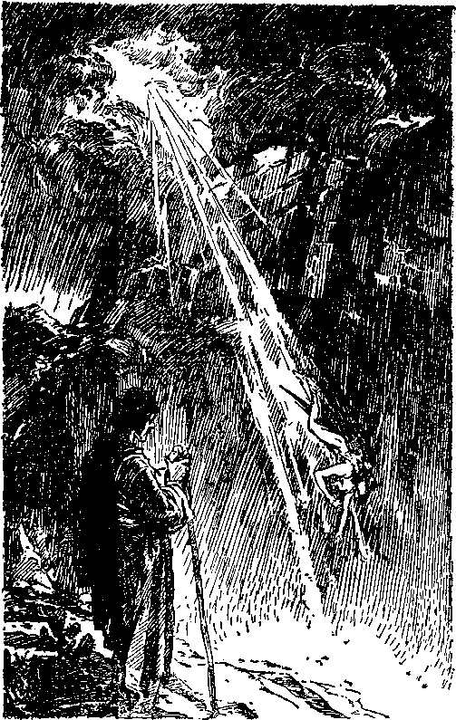
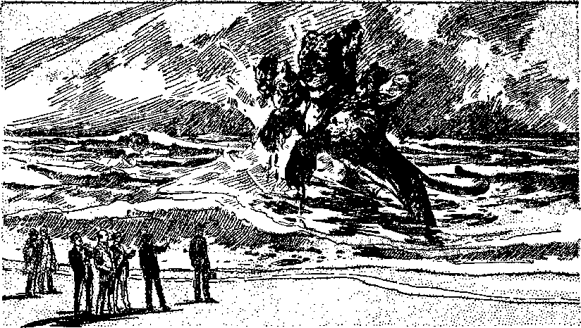
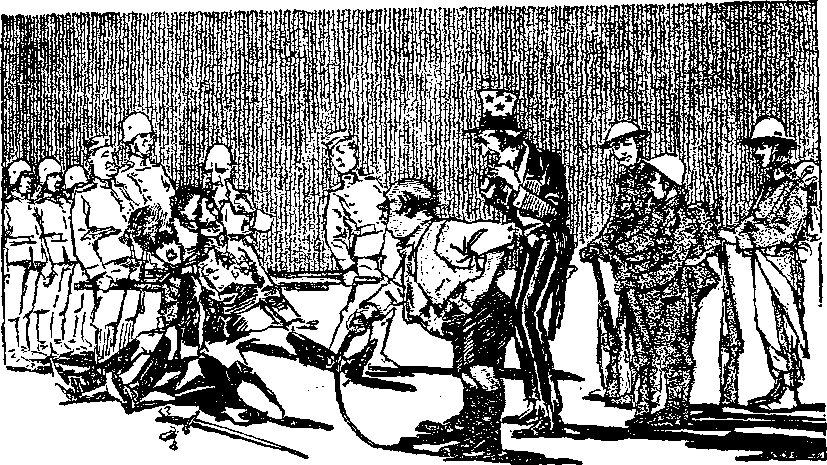
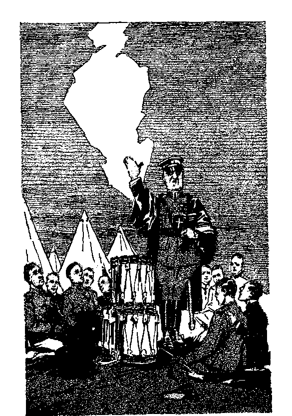
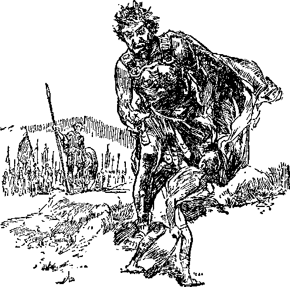

The physical facts set forth showing fulfilment of
THE REVELATION which God gave unto Jesus Christ to show unto his servants
IN TWO BOOKS
Comments by J. F. Rutherford Author of CREATION HARP OF GOD RECONCILIATION GOVERNMENT DELIVERANCE PROPHECY LIFE and other books
BOOK ONE
First printing 1,000,000 copies
Publishers
International Bible Students Association Watch. Tower Bible and Tract Society Brooklyn, New York, U. S. A.
London, Toronto, Sydney, Cape Town, Berne, Magdeburg, and in other countries
THE SOURCE OF
Light and Life
THIS book is dedicated
"O Send out thy light and thy truth; let them lead me; let them bring me unto thy holy hill
and to thy tabernacles."
Psalm 43:3
JEHOVAH makes known his purposes to his obedient creatures in his own due time. In obedience to his will his beloved Son came to earth and suffered death. God raised Jesus up out of death and exalted him to the highest place in the universe. Clothed with all power and authority and made the Executive Officer of Jehovah, Jesus knew that by and through his kingdom Satan and his organization would be destroyed, wickedness wiped out, and the word and name of his Father would be completely vindicated. Doubtless he was anxious to proceed to the completion of that glorious work; but Jehovah said to him, Wait until my due time to make the enemy thy footstool. Jesus knew that he was to have associated with him other faithful creatures taken from amongst men and made like unto himself and that these with him would constitute God’s ‘elect servant’.
When on earth, Jesus emphasized above all other things the importance of the kingdom of God. He told his faithful followers that he would go away and prepare a place for them and return and receive them. In heaven God gave Jesus Christ The Revelation, and he sent his angels and caused John to write The Revelation in sign language. No man then understood it, but the expressed will of God was that his servants should understand it in his due time. The Revelation would show his servants the things that must shortly come to pass, and those hearing and obeying the message of that Revelation would be greatly blessed.
All who love God, his beloved Son, and his kingdom, have been eager to understand The Revelation. Students have prayerfully and earnestly sought the meaning thereof. Prior to 1930 there never was a
6
satisfactory explanation of The Revelation published, the manifest reason being that it was not God’s due time for his servants to have an understanding thereof. The Scriptures were written chiefly for the aid, encouragement and comfort of the faithful on earth at the end of the world. Therefore it is to be expected that the feet members of Christ would be given an understanding of The Revelation while in the flesh.
The Scriptural and supporting evidence is now clear to his people that Christ Jesus came to his temple in 1918 and began to take account with his servants, and that those whom he found faithful he approved and made a part of "The Servant”. These are designated the remnant, to whom has been committed the testimony of Jesus Christ. Since that time the Lord has given to his people the key to the understanding of The Revelation. It now seems clear that it is God’s due time for his servants to understand that great prophecy so long clothed in mystery. A blessed time is therefore at hand for those who read and understand and obey.
With profound gratitude to God Light is published, setting out the text of The Revelation and a brief statement of the facts showing fulfilment of that great prophecy. For convenience it is issued in Books One and Two. No credit is due and none should be given to any man for what appears herein. The Revelation is God’s, given to his beloved Son for the benefit of his servants and sent to them by the angels of the Lord. Those who delight to feed upon the truth will read it with profit and joyfully pass it on to others that they too may be blessed and join in the song of praise to Jehovah’s name.
The Publisher
BOOK ONE
[BLANK]
LIGHT
Revelation
JEHOVAH God is light. He is the fountain of light and life. He made the heavens and the earth and gave the spirit of life to all of them that move and breathe. He made the mountains, weighed them in his balances, and set them forth as eternal monuments to his own majesty and for the wonder and admiration of his earthly creatures that love him. He made the sun to light the earth by day, and the moon and the stars to illuminate it at night. Each morning, and forever, he causes his beams of light to be lifted above the mountain peaks and to spread their arms across the heavens, bespeaking his unlimited power and infinite glory. There is no audible sound to disturb the awesome and profound silence that accompanies the dawning of his day. The beasts of the field and the birds of the air hold their peace, and even the winds are quiet.
Unseen is the Almighty Creator; yet he is manifest by his works. The space curtained by the outspread heavens of light is his tent. Since we cannot see the wind, how much less can human eyes behold him who walks upon its wings; yet we know that he is present. His clouds, like majestic chariots, ride above the mountains, reflecting his radiant splendor. The inspired words of the sweet singer are breathed in silence and deep devotion to the Most High: “Bless a
Jehovah, 0 my soul! Jehovah my God, thou art exceeding great, majesty and state hast thou put on: wrapping thyself in light as a mantle, stretching out the heavens as a tent-curtain: who layeth in the waters the beams of his upper-chambers, who maketh the clouds his chariot, who walketh on the wings of the wind. ’ ’—Ps. 104:1-3, Rotherham.
Long ago the Eternal God sent his beloved Son into this world of darkness and he was the Light of the world. His life-blood was poured out that men might see the light and live and that his Father’s name might be glorified. He was raised from the dead and brought life and immortality to light. Jehovah gave his word that his beloved Son would again come in power and glory, and set up his kingdom, and afford all men the opportunity to sec the light and to be restored and to live on earth; that then the name and the word of Jehovah should be vindicated. That time is at hand. Christ is placed upon his throne, and he then comes to his temple in the brightness of his glory with his countenance shining as the sun, for he is the Sun of righteousness. His shining shall never be dimmed. In due time the light shall illuminate all the living, and the earth shall be filled with the knowledge of the glory of Jehovah as the waters cover the great deep. Blessed are the wise who come to this day. If they continue wise they shall understand and rejoice.
REVELATION
The last book of the Bible is called Revelation. It is a part of the Word of God and is prophecy. It is to be expected that some of God’s anointed ones while on the earth would be favored with an understanding thereof. Its understanding must be due to the light from Jehovah shining upon the Head of the temple class and for the benefit of those who love him and his appearing at the temple.
“Revelation” literally means “unveiling”. It is the uncovering of things that have been fulfilled but which have not been understood according to the Scriptures; also the uncovering of things in course of fulfilment the meaning of which is now dawning upon the obedient children of God; and also at least a partial uncovering of things which are immediately to be fulfilled and understood by the grace of God. (Isa. 42:9) Jehovah committed to his glorified Son Christ Jesus the message which in due time must be made known unto his servant class. Jesus sent his faithful angel or deputy and caused his servant John to write down the message in code or symbols. The time comes to understand the message, and the Lord by his deputy makes the message understandable to those whom John represented.
The servant and apostle John was a very aged man when he wrote that book of symbols. He was the last survivor of all those who wrote under inspiration. He used the words “bear witness”, “testify” and “testimony” more than any other New Testament writer. To bear witness was his chief theme and work. John by the Lord’s grace foreshadowed or represented the faithful remnant who have tarried or remained unto the coming of the Lord Jesus Christ to his temple. Upon such God has bestowed his extraordinary “ grace and mercy”, which the name John signifies. When he wrote, John was in banishment on the Isle of Patmos because he had testified to God’s Word. The remnant is now in banishment by being ostracized from all others of earth because of their unswerving devotion to God and the giving of testimony to his name. John was "in the spirit on the Lord’s day” when he received the message to write. "This is the day which the Lord hath made,” and the remnant are on the earth and rejoicing in the spirit because the spirit of the Lord has been poured out upon all flesh devoted to him. The remnant now "see visions”; that is to say, are given an understanding of things not heretofore understood. A special blessing is the portion of the remnant deciphering the code signs of the book of Revelation; also those who love righteousness, and hear and obey what they understand, will be blessed. Those who ‘hate instruction and east the Word of the Lord behind them’, who take away from God’s Word of Revelation or who add thereto by adding the signs such as the pyramid of Gizeh, will not understand. "None of the wicked shall understand.”—Ps. 50:17; Dan. 12:10; Rev. 22:19.
The time for the fulfilment of the prophecy of Revelation seems to be from about 1879 forward until the kingdom is in full sway. It was about that date that the second presence of the Lord began to be observed, and that and other truths began to appear in The Watch Tower, which since then until now has been the means of communicating truth to those who love the Lord. All those who love God supremely believe that The Watch Tower was started and has been maintained by his power and grace. The time for the understanding of the prophecy of Revelation must necessarily be after the coming of the Lord to his temple. Those who do understand its meaning will see the great and blessed privilege of being witnesses to the Lord and to his name and purposes.
The fact of first importance in the Revelation, and now set before all of the spirit-begotten ones on earth, is the great and impressive truth that Jehovah’s Chief Officer, The Prince and rightful Ruler of the earth, Christ Jesus, is now present at the temple of God doing judgment work in his Father’s name. The mighty King and Judge is pictured as filled with the ‘new joy of the kingdom’ and has invited the approved ones to enter into his joy. His immaculate white hair and his glorious garments, appearing in the description, suggest his exaltation and that he comes in the power and glory of his Father. (Matt. 16:27) His eyes are ablaze with righteous judicial decrees, which cut in every direction and without partiality. He is accompanied by his “seven stars”, or myriads of angels, whom he has deputized to carry into execution his orders. (Matt. 25:31) And ‘they that be wise [and faithful servants] and turn many to righteousness’ are pictured as his candlesticks, or lamp-stands, to whom is given the privilege of holding forth the light of the Word of God and to whom are committed the kingdom interests on the earth.— Dan. 12:3; Matt. 13 :43.
The servant class, represented by John, by reason of the glorious vision is greatly awed and humbled and is prostrate in submission before the great Jehovah God. The Lord strengthens and encourages this class and says to them in substance: ‘Go and publish these things that you see, and tell the people what is about to come to pass.’ To economize space the Bible text is not here set out. We urge you to carefully read chapters one to three, inclusive, of the book of Revelation before proceeding further.
THE CHURCHES
Chapters two and three of Revelation deal with the churches. Unto “John to the seven churches which are in Asia” the message is sent “from him which is, and which was, and which is to come [that is, the Eternal Jehovah God]; and from the seven spirits [picturing completeness, the holy spirit of Jehovah] which are before his throne; and from Jesus Christ, who is the faithful witness” whose blood cleanses us from our sins.
The word “Asia” does not mean the Asiatic continent, but refers to Asia Minor, particularly that part that lies along the western coast, which in John’s day was a Roman province. The Isle of Patmos is about twenty miles off the coast of such province. The name “Asia” means “boggy”, and would well represent the churches at the time ‘when darkness covers the earth and gross darkness the people’ and at which time God says to his people: “Thy light is come, and the glory of the Lord is risen upon thcc. ’ ’—Isa. 60:1.
There are a number of reasons why the “seven churches” could not refer to epochs of time or the churches covering a period of time from the apostles unto the present. In the messages Jesus gives warning to Ephesus, Pergamos, Thyatira and Sardis that unless they clean up and improve their condition he will come upon them and judge them. The judgment of the Lord must begin when he comes to his temple for judgment, and not prior thereto. All seven churches or congregations mentioned as being in Asia Minor existed at the same time. Doubtless the unsatisfactory conditions described actually existed among the seven congregations in Asia Minor; but what would be the use of warning these particular congregations of the coming of the Judge if they represented periods of time covering the entire church from Pentecost to the kingdom? The seven congregations in Asia Minor went out of existence long before the coming of the Lord to judgment. Also from Pentecost till now the greater number of the professed churches or congregations have existed and have passed away long before the Lord comes to his temple for judgment. History shows that the professed church of Christ never cleaned up or ridded itself of the unsatisfactory conditions mentioned, but that such unsatisfactory conditions were found even in the true church when the Lord came to his temple.
The warning is: “Behold, I come quickly.” If the churches or congregations receive benefit from the message sent to them through John, then they must all be in existence at the same time and at the same time of the existence of the remnant whom John represented. Furthermore, if the Lord uncovers the meaning of these messages to the churches or congregations after coming to his temple, and after pouring out his spirit, whatever “the seven churches” represent must be contemporaneous with the life of Jehovah’s servant class during “the day of his preparation” for the final kattle which will destroy Satan’s organization. Jesus said that the wheat and the tares would be permitted to grow together until the end of the world, at which time he would come for judgment and for separating one from the other. There would have been no reason for the message of Revelation to the congregations which went out of existence centuries before the end of the world, and therefore there docs not seem to be any reason why these messages were intended for the church over that long period of time.
If John pictures the servant class at the end of the world (and there seems to be no doubt about that fact), then if follows that “the seven churches” or congregations do not embrace a period of time during the middle or dark ages or the time prior to the ‘sending of the Messenger before the Lord’s face to prepare the way before him’.—Mal. 3:1.
There were more than seven congregations or churches in Asia Minor at the time John wrote Revelation. Seven is a symbolic number meaning completeness in matters pertaining to spiritual things, and therefore “seven churches” would represent all the congregations existing at the same time and in which the conditions described doubtless existed in fact. The irresistible conclusion therefore is that “the seven churches” picture aspects or states of affairs or conditions existing at one and the same time in all the congregations embraced within the message given in the divine record. Every spirit-begotten one is marked by these conditions which have existed among the children of God within that period of time during which ‘the way was being prepared for the coming of God’s Messenger to the temple’, and by that which follows when he does come to the temple. This period of time would begin with the beginning of the manifestation of the second presence of the Lord, and end when the Lord is at his temple. Therefore the message to “the seven churches” applies from 1879 and thereafter. These wretched conditions or states of affairs among the spirit-begotten ones have been such as were illustrated by conditions actually existing among the churches in the Roman province of Asia Minor above mentioned. The Revelation manifestly is intended for the spirit-begotten ones on earth at the second coming of the Lord. Some of these would then meet with the approval of the Lord, while others in the congregations would be less approved or wholly disapproved. Let chapters two and three of Revelation, then, be carefully studied with the thought in mind that the messages therein contained apply specifically from approximately 1879 until the kingdom of God is in full sway.
The church at Ephesus is first addressed, and the angel thereof doubtless is one of the deputies assigned by the Lord to convey the message to the servant class. “Ephesus,” from the Greek, means “permitted”. Being the capital city of the province of Rome above mentioned it may well represent conditions existing in the church from the beginning of the second coming of the Lord until the coming to his temple, and applying particularly to the leaders or ciders of the church. Paul warned the elders of Ephesus and emphasized the importance of their being ensamples to the flock. From 1879 until 'the pouring out of the spirit upon all flesh’ the elders occupied the peculiar position of service to the Lord in the congregations. Some were faithful, and others less faithful. These leaders would inelude those described as pilgrims, who distributed tracts, gave public lectures, instructed the classes, and traveled from place to place, enduring long and wearying journeys, poor lodgings, ill-prepared food, and many other inconveniences. To these the message says: “I know thy works, and thy labour, and thy patience, and how thou canst not bear them which are evil.” These doubtless were the approved ones amongst the leaders. ‘The evil ones’ describes those who say they are servants of God but who are found to be liars.
Among the organizers of the Watch Tower Bible and Tract Society there were some who were wholly devoted to the Lord and continued faithful unto death and were examples of those who met the approval of the Lord. It was the privilege and duty of the original organizer of the Society and president thereof to take the lead in the preaching of the gospel in his time. He and those who stood faithfully with him came in contact with those who claimed to be preachers of the truth and some of whom accepted the truth and went about preaching it and yet afterwards were shown to be liars.
The faithful ones could not bear the evil ones. The known facts fully support this conclusion. The president of the Society, upon whom the responsibility rested for the management thereof, tried these professed ones and found them unfaithful. The ‘trying of them’ would be testing them according to the Word of God. The faithful ones patiently bore the trials that resulted, for the sake of the Lord’s name, and earnestly pressed on with the work committed to them. In that period of time the name of Jesus was emphasized more than the name of Jehovah. Therefore says the message: ‘For my name’s sake hast thou labored.’
To those among the leaders who were less pleasing to the Lord the message is: “I have somewhat against thee, because thou hast left thy first love.” Some of them set their hearts on going to heaven in 1914 and, this failing, they were disappointed and the test was too great for them. Prior to that time they had been laboring in the congregations under the direction of and in harmony with the Watch Tower Bible and Tract Society, but when 1914 passed the zeal of some of these cooled quickly, and upon the death of the president of the Society and editor of The, Watch Tower others ceased to identify themselves with the Society and they ‘left their first love’. As the Apostle Paul had previously said: “They received not the love of the truth.” They no longer loved God’s organization, but, being selfish, began to try to disrupt the Society and to obtain followers for themselves. They having a love of prominence and desire for a soft job, and being unable to obtain either, their zeal quickly cooled off. Prior to 1914 they expressed themselves as fulfilling the commandment of Jesus in Matthew 24:14 in preaching the gospel of the kingdom, but after 1916 they had no zeal therefor and no interest therein. The warning of the Lord was: “Repent, and do the first works; or else I will. . . remove thy candlestick out of his place.”
One of the last articles written and published by the original editor’ of The Watch Tower was a special warning to the elders and leaders. From that article is quoted the following:
‘ ‘ It causes real grief to write that much of the difficulty and danger to the church seems to lie at the door of the elders and deacons—not all, thank God, but apparently a small minority of them, judging from the queries which come to the office from time to time from the bewildered sheep. . . . The true, loyal servants in the church should be all the more appreciated by the Lord’s people in proportion as they realize the difference between true elders and . . , those who are untrue.”—Nov. 1, 1916, p. 327.
This is proof as to the Lord’s manner of directing the publication of his truth at the appropriate time.
Within less than a year of the publication of the foregoing there was a great falling away amongst the elders.
The “candlestick” mentioned manifestly means the opportunity for service to the Lord. The candlesticks (or lamp-stands) were not attached one to another, but were removable. This is agreeable to the parable of the “talents”, which represent opportunities of service, and which were taken away from the less faithful when the Lord came to his temple and were delivered to the faithful. (Matt. 25:28) When the test came upon the church in 1917 and 1918 many of those who had been leaders in the church dropped out and they were no longer permitted by the Lord to hold forth their lamp-stand or candlestick; that is to say, their opportunity for service came to an end. “The seven candlesticks” manifestly refers to all opportunities of service having to do with the kingdom interests on earth.
Then the faithful amongst the leaders were told: “Thou hatest the deeds of the Nicolaitanes, which I also hate.” The word “Nicolaitanes” has the thought of “boss”, or one who lords it over God’s people and uses them for a selfish purpose. Both the clergy in the nominal churches and the elders in the congregations of the Lord who pursue such a course would be included herein.
Then the message is addressed not merely to the elders but to all in the congregation, to wit, ‘ ‘ He that hath an ear [to hear], let him hear what the spirit [the spirit of Jehovah using Jesus as his mouthpiece] saith unto the churches.” Those who would heed the warning and overcome were told, “To [you] will I give to eat of the tree of life.” The “tree of life” is associated with the kingdom. The warning of the Lord is that “if any man shall take away from the words of the book of this prophecy, God shall take away his part from the tree of life, and out of the holy city”. (Bev. 22:19, R.V.) It represents everlasting life by means of the unfailing sustenance which the Lord provides for his own. Divine wisdom is likened unto a tree of life. (Prov. 3:13-18) Jehovah is the fountain of life, and even the 144,000 immortal ones will depend upon him that they may not “be hurt of the second death”. Hence the tree of life may well refer to the privilege which the church will enjoy in beholding the beauty and glory of Jehovah and inquiring continuously in his temple.—Ps. 27:4.
SMYRNA
The name “Smyrna” is the same as “myrrh”. It has a strong and agreeable smell, but a bitter taste. It was an ingredient of the holy anointing oil and was also used as a pleasant perfume. (Ps. 45: 7, 8; Esther 2:12) The next message is addressed to the congregation of Smyrna. (Rev. 2:8-11) The Smyrna church clearly represented the faithful anointed ones who are approved and anointed by the Lord after coming to his temple. This is supported by the fact that no word of reprimand or reproof is addressed to such in the message brought by the angel. The Lord did not once warn these of his coming to his temple to judge them. These, therefore, must be the ones that go to make up the “faithful and wise servant” class whom the Lord calls blessed. (Matt. 24: 45-47) When the Lord comes to his temple to take account with his servant he says to those whom he finds faithful: “I know thy works, and tribulation, and poverty, (but thou art rich) and I know the blasphemy of them which say they are Jews, and are not, but are the synagogue of Satan. Fear none of those things which thou shalt suffer: behold, the devil shall east some of you into prison, that ye may be tried; and ye shall have tribulation ten days: be thou faithful unto death, and I will give thee a crown of life.” (Rev. 2:9, 10) These enduring the contradiction of sinners and opposition have continued to serve the Lord amidst tribulation, which has been to them an evidence of the Lord’s approval, and they have rejoiced therein. They know that they are counted the offscourings of the world and are despised by ungodly men, but the Lord says to them: ‘Ye are not poor, as ye think, but ye are rich in God’s favor,’ because it is a privilege to suffer with Christ.—Phil. 1: 29.
The Lord commends them for their faithful devotion to him. Then he tells them that there are those who claim to be Jews (of Judah, giving praise to Jehovah) and are not; clearly meaning, those who claim to be followers of Christ but who at the same time speak evil against God’s organization and the method of carrying on his work and attempt to do injury against those who are faithfully trying to carry on God’s work. The Lord declares these are really Satan’s agents.
Then for the encouragement and comfort of those who continue faithful the Lord says: ‘Do not fear any of these things. The Devil shall cast some of you into prison that ye may be tried and ye shall have tribulation ten days; because the faithful servant must have experiences similar to those had by his Master.’ The “ten days” mentioned could not mean ten literal days, but symbolically means the completeness of all the time of their earthly existence during which they shall suffer tribulation at the hands of Satan. ‘Through much tribulation shall ye enter the kingdom. ’—Acts 14: 22.
Then note the further words of encouragement which the Lord uses in addressing Smyrna: “These things saith the first and the last, which was dead, and is alive.” This refers to life after death, which was spoken of in conjunction with the other words to the approved ones, and is of special encouragement because it indicates that such would be forever with the Lord if they continue faithful to the end. As a further and final encouragement to them the message is: “Be thou faithful unto death, and I will give thee the crown of life.” (Vs. 10, R.V.) That means the very pinnacle of life and also proves their immortality and glory with Christ Jesus. It means the complete victory over death, because “he that overeometh shall not be hurt of the second death”. (Vs. 11) This clearly shows that the test upon the faithful will be the greatest and will be such as will bring Jehovah’s approval to those who remain faithful, and is assurance that these will never deviate from their devotion to God. All of the remnant now wholly devoted to the Lord and who have the evidence of the Lord’s approval may be sure that continuing henceforth faithful unto death they shall have the blessed privilege of receiving that which is promised to Smyrna. The man who is thus tried and endures faithfully to the end shall receive the crown of life which the Lord hath promised to them that love him supremely.— Jas. 1:12.
PERGAMOS
A message is directed to the church in Pergamos. (Rev. 2:12-17) It refers to the conditions in the church existing at a time certain from the second presence of the Lord until the coming of the judgment of the church. “Pergamos” means a citadel, or fortress, an elevation or tower. It was about 1879 that the publication of The Watch Tower began, and a few years thereafter the Watch Tower Bible and Tract Society was organized, both of which have continued to this day to proclaim the message of the Lord’s kingdom. In the years that have followed the Watch Tower Bible and Tract Society has afforded a fortress or citadel into which those who love righteousness might flee from the hypocritical religions of the world. In that time it has been the only organization on earth that has been diligent in holding forth the truth of God’s Word. Within it have been some faithful and some less faithful and some traitors. The conditions represented by the church in Pergamos seem to synchronize in time with the Elijah work of the church. Now read the Scriptural record and see how well the known facts fit the prophecy.
He whose words cut sharper than a two-edged sword warns of his early coming for judgment. The Diaglolt reads: “I know where thou dwcllest, where the throne of the adversary is; and yet thou firmly rctainest my name.” Prior to 1918 the church had not been brought into “the secret place of the Most High”, and hence in reality was dwelling where Satan has his place of administration. During this period of time the truth was published chiefly in the English-speaking countries of Britain and America, which in fact form one earthly empire and are the place where Satan has maintained his chief office on earth. The Society was incorporated in the United States and Britain, and nowhere else. The opposition by Satan and his religious agencies has been great in those countries, yet there were some who ‘held fast the Lord’s name and did not deny the faith’. Restoration of the truth ‘once delivered to the apostles’ took place in these countries within that time. Those who came to a knowledge of the truth did not claim to be followers of any man, but held fast to the name of Christ. They did not organize a denomination, and they refused to take the name like unto any other denomination, and they withdrew from all the religious organizations of the earth.
As a further means of identification the divine record is: “Even in those days wherein Antipas was my faithful martyr, who was slain among you, where Satan dwelleth.” The name “Antipas” means “against all”; and therefore the name applies to those spirit-begotten ones who took a firm stand against all of Satan’s organization and on the side of the Lord. The work of the church in that period of time was foreshadowed by Elijah and was fulfilled in miniature by John the Baptist and also foreshadowed by John the Baptist. In 1918 the experience which came upon the Society was like unto the beheading of John the Baptist, and there ended the Elijah work. The prophecy and facts therefore locate the time and place, showing that the application is during the period of the Elijah work in particular.
Not all forming the Society were faithful, and such is indicated by the words of the prophecy, to wit: “But I have a few things against thee, because thou hast there them that hold the doctrine of Balaam, who taught Balac to cast a stumblingblock before the children of Israel, to eat things sacrificed unto idols, and to commit fornication.” (Vs. 14) This condition obtained shortly prior to the time the Refiner came to the temple and sat in judgment to purge “the sons of Levi”.
The clergy of the denominations are and have been devoted to the sacrifice unto their church organization idols, and they teaeh for hire as did Balaam, and they cause a stumblingblock to be placed in the way of their parishioners and cause an illicit relationship with the Devil’s organization. The same identical conditions existed in a measure within the ranks of the Society during the period of the Elijah work. Some in the Society would spare the clergy, even making excuse for them and pursuing a course of compromise with them and other members of the Devil’s organization, and cause others to stumble by representing to them that the clergy were doing a good work and should be dealt with gently. Some of these prominent ones in the Society were anxious to gain the approval of men, especially influential men, and to have the approval of men in the church, which is another way of using the Word of God as did Balaam, for hire. “Balac” means “one who licks, or laps”, and pictures those who ‘lick the hand’ of influential men for approval rather than to be true and faithful to the Lord. They take a compromising course, rather than taking a bold stand for the Lord, and thus cast a stumblingblock before others of God’s people.
The record furthermore says: ‘ Thou hast also them that hold the doctrine of the Nicolaitanes, which thing I hate.’ This means that amongst the compromisers were those who lorded it over God’s heritage and who “ran greedily after the error of Balaam for [hire] ”, (Jude 11) Those who have been long in present truth arc well acquainted with the facts supporting the above.
This period of time must shortly precede the time of the Lord’s coming to the temple for judgment, because the wording is: “Repent; or else I will come unto thee quickly, and will fight against them with the sword of my mouth.” (Vs. 16) Upon taking account with his servants the Lord pronounced adverse judgment against those who repented not, and he gathered them out or separated them from his true people. With the end of the Elijah work of the church quite a number were gathered out and became opponents of God’s organization on the earth and identified themselves with the “evil servant” class.—Matt. 25:26-28; 13:41; 24:48, 49.
The message is addressed to all of the church on earth at that time, to wit: “He that hath an ear, let him hear what the spirit [of God] saith unto the churches.” The conditions described are displeasing to the Lord at all times and with all persons, and apply to all who find themselves in such condition. Then concerning the faithful ones who stood firmly and who were carried over into the Elisha period of the church the Lord says: “ To him that overcometh will I give to eat of the hidden manna, and will give him a white stone, and in the stone a new name written, which no man knoweth saving he that receiveth it.” (Vs. 17) Manna was a divine provision for the sustenance of life. When Jesus was on earth he was the Manna or Bread that came down from heaven. (John 6: 51) Now he is the divine Bread of Life, and, being divine, is therefore hidden from human eyes. Hence the description, “the hidden manna.” He is the divinely provided One upon which the remnant now feed while in the wilderness condition, and this One is hidden from those who do not love God. This fact he now reveals to his remnant by his spirit and by his Father’s lightnings. “Manna” literally means “What is it?” Many who claim to be followers of Christ do not understand the meat and drink now being enjoyed by the remnant and they ask: ‘What is it that is now published by the Society?’ It is only the remnant who see present truth and rejoice in it. They are feeding upon this feast prepared for them in the presence of the enemy. This explains why many who claim to be followers of the Lord do not see present truth.
In addition to the hidden manna the Lord says: ‘I will give you a white stone.’ The word stone, as here used, is from the Greek word meaning “election” or “privilege to vote”. (Acts 26:10, Diag.) The Lord gives his vote for the approved ones, and this seems to correspond with the Lord’s confessing the names of such approved ones before his angels. (Luke 12:8) This may also identify such a one as an approved member of the Lord’s organization. And the approved one receives a new name, thus indicating a confidential relationship with the Lord which no man can infringe upon oi’ even know. ‘The Lord knows those who are his’; and here his promise is to establish a close and confidential relationship between the approved ones and himself, and all the opposition that might be brought against them could not in any way infringe upon their good name with the Lord. A good name with him is to be desired above all riches. These are really in the joy of the Lord. These faithful ones, brought over into the Elisha period of the church, rejoice to proclaim the King and his kingdom.
THYATIRA
The Son of God warns of swift and certain judgment coming upon those in the church in Thyatira, that is to say, upon those in the condition represented by Thyatira, and which is displeasing to the Lord. (Kev. 2:18-29) The weight of authority is, ‘'Thyatira” means “daughter”; and this is supported by the words of verse twenty. The work of spreading the truth continued to increase during the period pictured by the Prophet Elijah, and this increase was foretold in the words “the last [is] more than the first”. In that period of time, however, there developed a condition that was displeasing to the Lord; a female influence was there operating particularly toward the elders or leaders of the church and tending to draw husbands and brothers away from the true service of God, tending also to cause them to take a compromising position with Satan’s organization. Hence the Lord says: “But I have this against thee, Because thou lettest alone the woman Jezebel, who calls herself a prophetess; and she teaches and seduces my servants, to fornicate, and to eat idol-sacriflces.”—Vs. 20, Diaglott.
Jezebel, the wife of King Ahab of Israel, improperly influenced her husband. She is made prominent in the Scriptures in connection with Elijah. (1 Ki. 16:31; 19:1-3) Such strongly suggests that Thyatira pictures a condition existing in the church during the Elijah period thereof. It was in that period of time particularly that women attempted to make themselves prominent and influential in the church and were encouraged so to do by some of the leaders. One of the original incorporators of the Watch Tower Bible and Tract Society was a woman, the wife of the president thereof, and she insisted on editing The Watch Tote er and, being resisted, led other women to take a wrongful course against the Lord’s work. The Scriptural statement, “that woman Jezebel, which calleth herself a prophetess,” surely refers to certain female influence in the church exercised over leaders or men prominent therein.
Jesus is authority for the statement of truth that a man must love the Lord more than he loves his wife or any other creature, otherwise he is not worthy of the Lord’s favor. (Luke 14:26; Matt. 19:27-29) When female influence, whether it be that of wife, sweetheart, mother, or sister, causes a man to deviate from faithfulness and whole-hearted service to the Lord, that influence not only is wrong but will legd to destruction. The Lord likens such unto the wrongful influence exercised by Jezebel over the king which led to her destruction and to his. This scripture could not have reference to Babylon, because surely God never gave the Devil’s organization any ‘time to repent’; but it does refer to an improper condition existing in the true church, and exercised by women, and that wrongfully, which is illustrated by Jezebel.
There are and always have been good women in the church performing duties which the Lord assigned to them. There have been and are others who attempt to do that which they are not authorized to do. The good women serve as witnesses to the Lord. The others attempt to dictate to the men what they should do.
It is a fact well known by many that prior to the Lord’s coming to his temple certain women in the true church exercised great influence over men who were leaders or elders, causing them to compromise with Satan’s organization and to decline or refuse to take a bold and unequivocal stand for the Lord and his kingdom interests on the earth. Women also, by wrongfully exercising their influence, induced leaders or elders to refuse to ‘hold the Head’ and to become heady and to go contrary to God’s arrangement. They were swayed by passion or influence extraneous to the Word of God. Even to this day the same influence attempts to interfere with the Lord’s work. The condition was especially marked, however, during the Elijah period of the church. In that time classes were organized by women, and women in the church prepared lessons, sermons or discourses for the elders and directed them what to say. Ambitious women in the church influenced their husbands or some of the weaker brethren to carry out their own wishes with reference to the organization or conduct of the eccle-sia. Women in the church resorted to flattery of leaders and elders in order that they might influence them. Whether this was done knowingly or deliberately would make no difference, but it does show Satan’s attempt to disrupt the Lord’s organization, which the Lord foreknew and foretold. The Lord had pointed out that the woman has her place in the church, but her place is not to teaeh man nor attempt to influence man in his rightful performance of duty as a servant of the Lord. Women in the church have induced their husbands or others to compromise concerning God’s work in order that they might gratify some selfish desire or ambition. The true rule is that where the Lord places a man in a position to serve Him he cannot please the Lord and deviate therefrom one jot or tittle by being influenced therein by another, and particularly by a female. Paul commended the faithful service of the women in the church, but warned against their improper course.
The Lord announced that 'this work of iniquity’ should not prosper, but that, coming to judgment, he would pronounce such as “deadworks”. (Heb. 9:14) “Lo, I cast her into a bed.” (Vs. 22, Roth.') The flesh of Jezebel was consumed by dogs. Her prototype is cast into a bed which she desires, and all those into tribulation that yield to her influence and who do not repent. This tribulation seems to have befallen those who have been wrongfully influenced by women, and they arc not singing aloud the praises of Jehovah, but are crying in sorrow. “Behold, my servants shall sing for joy of heart, but ye shall cry for sorrow of heart, and shall howl for vexation of spirit. ’ ’—Isa. 65:14.
The anointed ones tpday see that there arc those who have been drawn away from the Lord and his service by female influence exercised in various ways, and those who have followed this wrongful course have reached the end of their service and their works are dead. In this connection the Lord said: “And all the churches shall know that I am he which searcheth the reins and hearts; and I will give unto every one of you according to your works.” (Vs. 23) We all know that the Lord Jesus is the Head of the church, and the course of action that he marked out must be followed, and he knows the motive that induces the action of each one. These words further prove that “all the churches” must be in existence at the same time when the message applies, and therefore the message to the church could not and does not cover a long epoch of time, but applies only at the second coming of the Lord. Its understanding can be had only after the Lord comes to his temple for judgment.
Now it can be seen that men who are leaders have been the ones especially who have compromised with the Devil’s organization and who are therefore the ones that have committed ‘fornication’ as mentioned. The question may be asked, How are the women, particularly in the church, tempted by the Devil? The answer is that they have been used in a special way to seduce the servants of the church by the wrongful exercise of their influence, thus causing the servants or leaders to be guilty of illicit relationship with the Devil’s organization and to compromise therewith for their own sustenance. A woman who would influence her husband to serve some part of the Devil’s organization in order that she might enjoy ease and comfort in the way of home or like things would be wrongfully inducing her husband. Where the Lord furnishes an opportunity for the husband to serve him, the wife should see to it, if she is devoted to the Lord, that she in no manner stands in the way of service, but, on the contrary, should cooperate in every way possible, because the greatest privilege that can be given to a man is to serve God and his Christ.
Then the Lord speaks of those who have not yielded to the improper influence but who have stedfastly maintained their integrity with the Lord, and says: “I will put upon you none other burden. But that which ye have already, hold fast till I come.” (Vss. 24, 25) The promise of the Lord is that the “Jezebel” workers would be separated from his approved ones when he would appear at his temple for judgment. Until then they were told to hold fast the faith, love,
and ministry committed to them, always contending for the faith first delivered to the saints. Then he adds words of encouragement to the faithful: “And he that overeometh, and keepeth my works unto the end, to him will I give power over the nations: and he shall rule them with a rod of iron; as the vessels of a potter shall they be broken to shivers: even as I received of my Father.”—Vss. 26, 27.
Keeping his works “unto the end” must mean to the end which comes after ‘this gospel of the kingdom has been preached to all the world as a witness’. Seeing that the church is now in the time in which the members thereof have a glimpse of the immediate future, may not these words of Jesus indicate that the overcoming remnant will be permitted to see Satan’s organization dashed to pieces and during that time and even thereafter have some work on the earth to the glory of the name of Jehovah? Jehovah seems to be addressing the same overcoming class who are members of Zion when he says through his prophet: “Arise, and thresh, 0 daughter of Zion: for I will make thine horn iron, and I will make thy hoofs brass, and thou shalt beat in pieces many people; and I will consecrate their gain unto the Lord, and their substance unto the Lord of the whole earth.”— Mic. 4:13.
The overcomers are then told that they shall have a position of honor with the “morning star”, evidently meaning Christ in glory. (Vss. 28,29; Rev. 22:16) And now for the encouragement of all the faithful remnant of the church on earth the Lord reveals these truths to them. Such today joyfully lift up the voice and sing unto Jehovah the new song.
SARDIS
The glorious Prince who is filled with Jehovah’s spirit, and who holds under his command all the holy angels, addresses a message to the Sardis church. (Rev. 3:1-6) One authority gives the meaning of the word Sardis as "prince of joy” or "song of joy”. Sardis was the ancient capital of Lydia, the residence of the royal and rich famed Croesus. The residents were in ill-repute among other nations for their voluptuous habits of living. From 1879 to 1918 marked the period of the Elijah work of the church. That was also a period of time for the amassing of the greatest wealth amongst men of the world. Money-making and the love of money especially marked that period. During that same time the truth was preached concerning the kingdom and the church on earth was in the midst of the money-mad rush. Doubtless many who came to a knowledge of the truth were affected thereby and were 'drowned in the sea’. (1 Tim. 6:9; Rev. 20:13) In that period of time many heard the truth and greatly rejoiced for a time and sang forth their joy to the Lord. Then the desire for material wealth and the case that it brings was permitted to cool the zeal of a number in the truth and cause their hand to slack and their tongues to remain silent.
The time approached for the Lord to appear at his temple for judgment and those in the church fulfilling the condition described concerning Sardis are addressed: "I know thy works, that thou hast a name that thou livest, and art dead.” Otherwise stated, they have had some works but without real faith. A faith without works is dead; and works without faith prompted by love are also of no value.—Jas, 2:26.
Paul tells those who give special credit and honor to men that they are carnally minded. (Rom. 8:6; 1 Cor. 3: 3, 4) In the period of time mentioned many claimed to believe the truth and accepted it as “the best religion yet”. They especially liked the social features of being with the “truth people”. They attended meetings and conventions; appeared pious and sanctimonious; claimed to be developing a sweet and beautiful character; would be seen at prominent gatherings, loving to entertain the favorite speakers at dinings, and occupying a prominent place at the public meetings; distributed some tracts; made some contributions to the funds needed; made somewhat of a display of their material wealth, which was supposed to give them a better standing than ‘the common herd’; and they loved to act as satellites of the most prominent amongst the elders and leaders. When any service was to be performed that required one to be in the limelight they sought such with eagerness. But when the brunt of the fight was to be borne they were not there. They were not willing to tell the truth out plainly concerning Satan’s organization, fearing they might offend some or make themselves appear ridiculous. The kingdom was not to them the real living issue. That such a condition has existed in the chureh during the past fifty years no one familiar with the facts has the slightest doubt. Therefore the Lord said through the Messenger: “For I have not found thy works fully performed.”—Vs. 2, Diag.
These thus described hold to the fundamental truths, but such faith could not survive without activity. Therefore the Lord says to them: “Be watchful, and strengthen the things which remain, that are ready to die.” Failing to perform their “reasonable service” (Rom. 12:1), which is not outward sanctimoniousness or shining amongst men, they were about to die, and they must awaken to their privileges. The Lord continues: ‘Remember therefore how thou hast received and heard; and hold fast, and change thy course of action.’ ‘Be sorry for the action that you have been taking, and become active,’ would be the real meaning. “For godly sorrow worketh repentance to salvation not to be repented of: but the sorrow of the world worketh death.” (2 Cor. 7:10) Failing to heed this warning such would receive the grace of God (that is, “the ministry of reconciliation”) in vain. (2 Cor. 5:18-6:3) Then the Lord tells them that should they fail to watch he would come to his temple unobserved by them and they would be ensnared by that to which their selfishness held. (Luke 21: 34, 35) That some in this condition would awaken and bestir themselves is clearly indicated by the fact that the Lord gives them warning, that they may have the opportunity thus to do.
Amongst them were those in a somewhat similar condition, to whom he says: ‘ ‘ Thou hast a few names even in Sardis which have not defiled their garments; and they shall walk with me in white: for they are worthy.” (Vs. 4) Such keep themselves unspotted from the world by refusing to be identified with the world and hating even their own fleshly weaknesses. (Jas. 1: 27; Jude 23) Clearly the promise is that those who would reform and devote themselves to the Lord he would cause to be identified with him, and ‘they should walk with him in white’, which would mean that they would walk worthy of their vocation and receive his approval.—Eph. 4:1.
Then they are told that the overcomers shall be clothed in white raiment and their name shall not be blotted out of the book of life. (Vs. 5) Manifestly this means that they would receive the Lord’s approval and that he would register them among his approved ones. He also says: “I will confess his name before my Father, and before his angels,” which would be further evidence of his approval and his acknowledgement before his angels and before Jehovah that they are members of his household. Therefore let all of the ‘Sardis company’ who have the spirit of Jehovah hear and take heed. (Luke 12: 8) The Lord is at his temple and even today there may be some in this condition who might be fully recovered to the Lord-
PHILADELPHIA
Jehovah’s beloved Son and great High Priest, addressing the church in Philadelphia, is described as ‘the holy and true One, and he that hath the key of David’, and is clothed with all power and authority to establish the kingdom. (Rev. 3:7-13) When he begins to exercise his royal authority, nothing can stop him; and when he shuts out Satan and his organization, never again can it be brought into existence.— Ps. 110:2-6.
‘‘Philadelphia” means “brotherlylove”,and therefore means the love of Christ which holds together the brethren in Christ and is the moving cause for their unselfish devotion to and service unto Jehovah. (2 Cor. 5:14-19) Those having such love joyfully perform the ministry of reconciliation committed unto them by Jehovah.
During the period of time from the beginning of the second presence of Christ until now there have been some amongst the consecrated who have put forth their best endeavors to serve God as his witnesses. True, some started in this way and became “weary in well-doing” and fell by the way, yet there are those who have all along borne the brunt of the fight and delighted to do the work that has been committed to them. They have not sought the approval of men in the church or outside of it. They have been targets for many who have claimed to be followers of Christ and who in fact have busied themselves with the Devil’s work of injuring the faithful workers. They have worked, not only in season, but out of season to themselves, always ready and anxious to do with their might what their hands have found to do, that the name of the Lord might be magnified. The language of Jesus shows that their efforts have been pleasing to him when he says: “I know thy works.” (Vs. 8) This is equivalent to saying: ‘You have been faithful according to your endowments.’ He takes note of them that they have followed in his footsteps and have not shunned to declare the truth, and that they have had and have manifested his spirit of love.
Then he tells them that they have kept his Word and have not denied his name; that there is service to do; that they have a little strength to do it and that he has set before them an open door and no man can shut it. The door here mentioned is not an entryway into heaven, nor into the kingdom, but manifestly means an opportunity to do some work in attending to the kingdom interests here on the earth. The time clearly seems to be shortly before the Lord appears at his temple for judgment, because he says: “Behold, I come quickly; hold that fast which thou hast, that no man take thy crown.” The loss of the crown or opportunity to be crowned would take place at judgment. The judgment at the temple would be adverse, and the kingdom interests would therefore be removed from the unfaithful and given to the faithful. The Lord, by the parable of the “talents”, showed that when he would judge his house at the coming to his temple there would be found a class that had been faithfully devoted to him and that such would be especially blessed by him. (Matt. 24:46) At that hearing he would say to the faithful: “Thou hast been faithful over a few things, I will make thee ruler over many things.”—Matt. 25:21.
He further showed that at that judgment some would lose their opportunity for any further service unto the Lord; hence their opportunity for the crown of life would be gone. (Matt. 25:28) Those who held fast what they had until the coming of the Lord to his temple, and who then received the approval of the Lord, and who there and after that time continued to serve faithfully through tribulation and, while being maligned and ill-treated, yet joyfully went on doing the will of God, and who thus continue unto death, shall receive the crown of life. (Rev. 2:10) But it is manifest that no one could hope to receive the crown of life who would turn back or who fails or refuses to avail himself of the opportunity of serving the Lord as it comes.
“Philadelphia” describes that condition of those in the church who are determined that nothing ‘shall separate them from the love of God which is in Christ Jesus our Lord’, (Rom. 8: 36-39) Coming to his temple the Lord said to such; “Behold, I have set before thee an open door, and no man can shut it.” Regardless of all opposition that Satan and his agents put forth, that door must remain open and the service of witnessing to the name of Jehovah will go on to the end. It would be well for those who oppose the service work to take notice that the work of the Lord will go forward and that their opposition cannot hinder it. Those who really love God have the privilege of doing that work and may be sure thereof so long as faithful. Let the faithful ones therefore take courage and rejoice.
Surely before the coming of the Lord to his temple there were many in the congregations of the church who claimed to be serving God and giving praise to his name and to the name of his beloved Son, and who therefore claimed to be Jews. The word Jew or Judean means ‘giving praise to God*. The Lord knew that their pretensions were false, that they did not really love God and his Christ; they were selfish; and therefore the Lord calls them “liars”. They were in the church, but are not described as those of Philadelphia. They are previously described herein.
While those described as of Philadelphia were faithfully trying to do God’s work others who claimed to be consecrated to the Lord consorted with the enemy to cause their brethren suffering, bodily pain, injustice, and even imprisonment. It was in 1917 that a great trial came upon the church, but by the grace of God some of the persecuted ones remained true and stedfastly held their integrity. In the light of these well-known facts note the words of Jesus: “Behold, I will make them of the synagogue of Satan, which say they are Jews, and are not, but do lie: behold, I will make them to come and worship before thy feet, and to know that I have loved thee.” (Vs. 9) The Lord will make known his love concerning those who remain faithful and true to his name. Even the hypocrites shall see this before the end.
About the time of the coming of the Lord to his temple there came upon ‘‘all the world” an hour of great temptation or putting to the test, and many fell away from God and his truth. Being cast out of heaven Satan hurries to prepare for the final battle at the earth. Every means known to him is brought into action to turn the people away from Jehovah God. The denominational church completely falls away. Many who had left the churches and had been brought to a knowledge of the truth became blind so that they could not see that Satan has an organization. They have ridiculed everything said concerning Satan’s organization, have opposed the Lord’s work, and have turned away and gone back into the world. Only a remnant of those first enlightened by the truth have remained firm, and to this little company the Lord commits ‘‘the testimony of Jesus Christ”.— Rev. 12:17.
When the Lord came to his temple he found these had patiently tried to serve him. The promise to those who had remained firm and stedfast is: ‘I will keep thee from the hour of temptation, because thou hast kept the word of my patience.’ (Vs. 10) Patience means constancy and stedfastness in the performance of duty amidst persecution and opposition, the one thus performing rejoicing in the fact that he knows he is doing the will of God; and he therefore rejoices even in tribulation. Jesus was patient in his devotion and service and he left an example for his true followers. (Heb. 12:2, 3) His word to them was and is: “In your patience possess ye your souls.” “He that shall endure unto the end, the same shall be saved.” “In the world ye shall have tribulation: but be of good cheer, I have overcome the world.” (Luke 21: 19; Matt. 24:13; John 16:33) “If we suffer, we shall also reign with him.” (2 Tim. 2:12) In the “hour of temptation” the Lord poured out his spirit upon his people and made them his ministers and brought them into the secret place of his organization, giving the promise that those that abide there shall be safe. “For in Mount Zion and in Jerusalem shall be deliverance, as the Lord hath said.”—Joel 2: 32.
The Lord’s lightnings flash at his temple and he illuminates those of the temple class, disclosing to them the open door that cannot be shut, and they joyfully enter and serve him with gladness of heart. He keeps his own in Zion now by giving them the opportunity of declaring the name of Jehovah and his kingdom. God puts his message in the mouth of such and sends them forth as his witnesses to sing his praises. All the professed ones in so-called Christendom have allied themselves with the Devil’s organization in this hour of great temptation. But the remnant alone stand firm and true. Not by their own strength do they stand, but by his grace. They continue faithful in devotion to him.
As the hour draws near for the Lord to appear at his temple he says to those who love him supremely: ‘If you overcome I will make you a pillar in the temple of my God and you shall go no more out; and I will write upon you the name of my God, and the name of his organization, the new name of Jerusalem which cometh down out of heaven from God, and I will write upon you my new name.’ (Rev. 3:12) Those who are constrained by the love of Christ, and are therefore wholly devoted to God and his service, and thus continue unto the end, shall be forever blessed. All of the church having the hearing ear are called upon to hear what the spirit of God through Christ now speaks to his people, and those who do hear and obey shall be given the name of the Melchizedek priesthood and be forever in Jehovah’s blessed organization.
LAODICEA
The way before Jehovah has been prepared and the Lord Jesus has come to his temple for judgment when the message to the Laodicean church applies. (Rev. 3:14-22) That the first work of the Lord would then be that of taking account with his servants is shown from the Scriptures. (Ps. 11:4, 5; Mal. 3:1-4; Matt. 25:14-29) This is further shown by the fact that the message is to the angel of the church of Laodicea. The word Laodicea means “judgment of the people”. The Scriptures expressly state that judgment must begin at the house of God. (1 Pet. 4:17) It is at the door of this house that Jesus stands and knocks and says: “If any man hear [obey] my voice, and open the door, I will come in to him, and will sup with him, and he with me.” (Vs. 20) This language shows that he is at the temple, or the house of the Lord.
Jesus is described in this message as “the faithful and true witness”; and now he has come to arouse those in the covenant with him to the importance of being witnesses of Jehovah, and he commits unto the approved ones his testimony which God has given him and these are commissioned to go forth as God’s witnesses. Jesus is the Head of the witness class, and all who would receive God’s approval must follow his example. Other scriptures show that just about the time the Lord comes to his temple God’s covenant people were drowsy and were not living up to their privileges as the witnesses of the Lord and therefore he was angry with them. (Isa. 12:1) Their being aroused, and their lips cleansed by the coal of fire, is another proof that the fault was with them relative to the witness work.—Isa. 6: 5-8.
There appears a conversation between Jehovah and his Chief Executive and the inquiry is made: ‘Who shall be sent as the witnesses?’ The zealous and faithful ones of the church respond to the invitation of the Lord and say: “Here am I; send me”; and the Lord sends them forth as his witnesses. (Isa. 6:8, 9; 43:10-12) At the same time there are others in the covenant, and in the church, who are yawning and drowsy and stretching themselves and have a desire for further slumber and ease. To such the Lord by his angels says: “I know thy works, that thou art neither cold nor hot: I would thou wert cold or hot.” —Rev. 3:15.
The time of the Lord’s coming to his temple when he began to take account with his servants, to whom he had committed the kingdom interests, is pictured by the parable of the talents. Shortly following that time there was a second outpouring of the holy spirit upon God’s covenant people regardless of sex or previous condition of service, as had been foretold by the Prophet Joel and by Peter the apostle. (Joel 2: 28-30; Acts 2:16-21) Then the vigorous, active, alert ones, pictured as “young men”, began to “see visions”, that is to say, to have a clearer understanding of the truth. They became zealous and active in obedience to the commandments of the Lord. At the same time there was another class in the church, pictured as ‘old men dreaming dreams’, because being languid and inactive, with little or no zeal for the Lord. They were dreaming of the good and easy time they would have when taken to heaven, and were subsisting upon the spiritual food received years prior thereto. They have not had a clear vision of the truth since the opening of the temple as the zealous ones of the Lord have. (Rev. 11:19) These dreamers have claimed to do some work, but have not been doing it according to the way God commanded. They have never seen and appreciated the clear distinction between Satan’s organization and God’s organization, and hence refuse to say anything concerning Satan’s organization and neglect to be zealous witnesses for the Lord. Their works consist of meditation, attending some class studies and again going over matters that the Lord gave the church years ago, and in doing what they say is the development of the graces and fruits of the spirit and a beautiful character. They do not understand or realize that the fruit of the spirit is love, which means an unstinted devotion to God and activity in his service accordingly. They fail to see that the fruit of the spirit can be manifested only by joyfully doing the will of God in obedience to his commandments. (Matt. 7:20, 21; 1 John 5:3) They have not denied the Lord, therefore have not become entirely cold. Because Jesus loves those in the covenant by sacrifice he rebukes them and warns the lukewarm ones of the necessity of a change of course of action by becoming earnest and zealous in the service of the Lord.—Vs. 19.
The work of the church foreshadowed by the Prophet Elisha began shortly after the coming of the Lord to his temple. That has been and is a vigorous, earnest, zealous campaign carried on by God’s faithful people as witnesses to the name and purpose of Jehovah. To do this work it is necessary to see and to expose Satan’s organization, and to see and appreciate God’s organization and magnify Jehovah’s name. The zealous or “hot” ones do this, and they continue such work with joy. Zeal means heat; and the zealous, earnest ones are therefore described as being hot, while the others are lukewarm. It is a well-known fact, however, that since the coming of the Lord to his temple in 1918 there have been a goodsized number in the church who have attended conventions and meetings but who have not been active, and many who have in substance said this; ‘All the light upon God’s Word was published prior to 1917; we have that truth and will continue to feed and meditate upon it; the Lord appointed one man as his “faithful and wise servant”, and even though he has passed from the earth he is still doing God’s work on the earth and is in charge of his church, and since we are of God’s favored ones and have these things we enjoy great riches of feeding and meditating upon what he wrote before 1916; we have developed sweet and beautiful characters; we have a past record for zeal for the Lord and wc rely upon our riches gained, and therefore we have need of nothing but will rest upon our laurels and wait to be taken into glory. There is no reason why we should bring reproach upon ourselves by going from house to house; by telling the people of the organization of Satan and that of God. We are really better than others. Let them do it.’ As God foretold, such would say: “I am holier than thou.” (Isa. 65:5) The above fairly well describes the condition that existed in the church particularly after 1917, and in a more marked degree from and after 1918. Hence the message that the Lord sends to those is: ‘‘Because thou sayest, I am rich, and increased with goods, and have need of nothing; and knowest not that thou art wretched, and miserable, and poor, and blind, and naked.”—Vs. 17.
Being blind because of their lukewarmness and lack of real love for God they cannot see the fulfilment of God’s prophecy and the unfolding of his purposes and have no vision of the future. (2 Pet. 1:2-9, R.V.) They are described as naked. God’s law prohibited nakedness. The garments worn identified the wearer as a servant of God if he did hold that place. (Ex. 20:26; 28:42, 43) “Where there is no vision, the people are made naked.” (Prov. 29:18, margin) Not having an understanding of present truth they expose themselves as nuked before the Lord and those who have his spirit. Evidently Jesus referred to the indifference of their service at the time he comes to his temple when he said: “Behold, I come as a thief; blessed is he that watcheth, and keepelh his garments, lest he walk naked, and they see his shame.” (Rev. 16:15) The approved ones who have on the garments of salvation are also under the robe of righteousness, having on the wedding garments, and thus identify themselves with the Lord and his service. They enter into the joy of the Lord and participate gladly in the service.
How different the lukewarm! They are wretched and miserable, hence very uncomfortable and unhappy; because they have no joy in the Lord they do not understand what the joy of the Lord is and they have no appreciation of the kingdom. Thinking they are rich, they are in fact poor, because they do not know the value of true riches which they do not possess. No one in this day can be rich in the Lord who tries to avoid the reproach of Christ. ‘The reproach of Christ is greater riches than all the treasures of the world.’ (Heb. 11:26) “A good name [with Jehovah] is rather to be chosen than great riches [of the world], and loving favour [with God] rather than silver and gold.” (Prov. 22:1) A good name with the Lord, and his favor, can be had only by doing his expressed will, and those who love him will do so. (Matt. 24:13; 1 John 5:3; John 14: 21-23) Those who suffer privation, tribulation, poverty and reproach that they might be witnesses to the name of God and his kingdom are rich, as Jesus told the congregation of Smyrna.—Rev. 2:9. ,
“Laodieea” describes a condition in the church of a number who desire to avoid the reproach that falls upon the faithful witnesses of the Lord. Not doing the Lord’s will according to his commandment they are in bad repute with him and have not a good name, and for this reason they are poor and blind and wretched and miserable and naked.
The lukewarm ones who claim to have received all the truth prior to 1917 fail to discern the two great organizations of Satan on one side and Jehovah on the other. They have followed the course of speaking easy concerning the clergy and other portions of the Devil’s organization. They especially avoid saying anything against oppressive Big Business and militarism and other parts of the Devil’s organization that oppress the people. They prefer to take the course of least resistance, that they may not receive any reproach but rather have the approval of the peoples of the world. God foreshadowed this condition in his record concerning Ephraim, who mixed himself with the Devil’s organization and of whom it is written: “Ephraim is joined to idols.” Then Ephraim is likened unto a cake half baked or underdone, and who says: “I am become rich.”—Hos. 4: 17; 7:8; 12:8.
The Lord is long-suffering with these, but he gives fair warning and says to them: ‘Because you are neither hot nor cold, I will spue [literally, vomit] you out of my mouth [as a detestable thing].’—Vs. 16.
The Lord gives counsel to these, evidently for the purpose and benefit of awakening some of the lukewarm ones that they might repent and become zealous and get in line for the kingdom. He tells such that the way for them to become rich is to go and buy of him gold tried in the fire, and white raiment that they might be attired, and obtain ointment and anoint the eyes that they might see. (Vs. 18) Thus he shows them that the true riches in Christ come to those who actually go through the fiery trials and receive the reproaches resulting from faithful service unto God. The reproaches that fell upon God and upon Christ Jesus must of necessity fall upon all those who receive the Lord’s approval. (Rom. 15:3) “When he hath tried me, I shall come forth as gold.”—Job 23:10.
“White raiment’’identifies the wearer as one of the Lord’s approved ones, and this he buys by faithful devotion to the Lord and his service. The “cycsalve”, eye ointment, evidently means the spirit of the Lord, which is an unselfish devotion to God made manifest by joyful obedience in keeping or doing the commandments of God. “The commandment of the Lord is pure, enlightening the eyes.” (Ps. 19:8) “Open thou mine eyes, that I may behold wondrous things out of thy law.” (Ps. 119:18) Those who get the eyes open see visions, even as the prophet foretold. That is to say, they discern the truth now due to be understood. (Joel 2: 28, 29) “Thine eyes shall see the King in his beauty.” (Isa. 33:17) Such, with the eyes open, see that the kingdom has come. They seo that “the Stone”, which is God’s anointed King, has become the corner, and which Stone others have rejected; and they rejoice to say: “This is the Lord’s doing; it is marvellous in our eyes. This is the day which the Lord hath made; we will rejoice and be glad in it.” (Ps. 118: 23, 24) The faithful ones of Laodieea Jesus permits to share in his meal of joy. The time has come to vindicate his Father’s name and he invites those who really love him, and who have proven it, to enter into his joy. The kingdom service is now meat and drink to such faithful ones.
Those who refuse or fail to heed the warning given to them must of necessity be cast away or spued out, and then they become members of the “evil servant” class.
The great hour of temptation is now upon the world and Jesus encourages those who are with him by saying: ‘I overcame the world: be ye of good courage now. To the faithful overcomers I will grant to sit with me in my throne, even as I am set down with [or by] my Father in his throne.’ Jehovah placed his beloved Son upon his throne in 1914. (Ps. 2:6) Now those in the temple, and who continue faithful and devoted to the Lord God and on his side to the end of the way, shall share with Christ Jesus his throne. Let all those who have made a covenant with the Lord hear the spirit of Jehovah speaking to them by his anointed King. It will be the earnest, zealous ones who love God supremely that will joyfully respond to his commandments, continue faithfully in his service even unto death, and be permitted to sit with the Lord in his throne.
Summing up chapters one to three of Revelation: We see Jesus Christ, the Chief Officer of Jehovah God, sending a message from Jehovah, and by his angel, to those who have made a covenant to do the will of God; that the message is conveyed in God’s own good way during the period of time when the way is being prepared before the Lord, and before “the Messenger of the covenant” comes to his temple; that the message is sent by his angels, and that the angels are not men, but “the holy angels of God” under the commandment and direction of Christ Jesus, and are therefore his angels who accompany him as his retinue of deputies when he comes to his temple for judgment; that the message is sent to John, the servant of God, representing the servant class on earth during the period of time of ‘preparing the way before the Lord’; and that the message could not be understood until the Lord has come to his temple and the temple is open (Rev. 11:19); and that thereafter, and while some of the church are yet on earth, the message must be understood and published (Rev. 1:11), and that those who hear and obey shall be greatly blessed with increased light from Jehovah, behold his increasing beauty, and continue to search out the great riches of wisdom and knowledge, in his temple.
His Temple (Revelation, Chapters 4 and 5)
JEHOVAH the Supreme One, the King of eternity, began to be appreciated by the church after the coming of the Lord to his temple. The faithful ones then began to see that the period of time of 'preparing the way before Jehovah’ dates from 1879 to 1918; that the Lord came to his temple in 1918, after casting Satan out of heaven, and from and after that time till Armageddon is “the day of his preparation”. (Nah. 2:3) Because he reigns through his beloved, “the Prince of life,” Jehovah is really the kingdom. Chapter four of Revelation gives a picture of Jehovah at his temple. Chapter five pictures his glorious representative. The Bible record should here be carefully read. The pictures revealed are sublime and thrilling. The facts which have actually come to pass since 1914 are fitting to the fulfilment of this prophecy.
The faithful servant class is the remnant and is represented in the faithful John. He looked and, “behold, a door was opened in heaven,” and he hears an invitation to “come up hither”. (Vs. 1) This indicates that the time has come to have a clearer vision of spiritual things. The door is the way of entrance into or discernment of spiritual things due to be understood. Those responding to the invitation are permitted to enter heavenly realms and to receive the most glorious heavenly sight, that is to say, to discern Jehovah the great King of eternity. The opening of 63 the door synchronizes with the outpouring of the holy spirit upon all flesh, because it is written that God hath revealed these things to us by his spirit, even the deep things of God, and which he has prepared for them that love him. (1 Cor. 2:9, 10) These things are not seen by natural eyes, of course, but are discerned by those who have the spirit of the Lord God, John, representing the remnant, hears a voice like a trumpet talking to him. A trumpet-toned voice was very appropriate because great things were about to come to pass. The King Eternal was to be shown to his faithful ones more clearly than before and they were to say more concerning his kingdom preparation. Events of greatest importance were about to take place, hence the sounding of the trumpet. “For the Lord most high is terrible; he is a great King over all the earth. God is gone up with a shout, the Lord with the sound of a trumpet.”—Ps. 47:2, 5; see also 1 Ki. 1:34; 1 Thess. 4:16.
It was the voice of the Lord Jesus, Jehovah’s great Announcer or Word. The remnant, pictured by John, is then told: “I will show thee what must occur after these things.” (Vs. 1, Diag.) Immediately spiritual things began to be revealed and to appear to the remnant. The door to the temple of God being opened to them, they begin to have visions of glorious things. One may well imagine that he is being invited to look into the most gorgeous and glorious temple that could exist. He beholds a throne set in heaven and One who sits upon the throne. “The Lord hath prepared his throne in the heavens; and his kingdom ruleth over all.” (Ps. 103:19) “The Lord is in his holy temple, the Lord’s throne is in heaven: his eyes behold, his eyelids try, the children of men.” (Ps. 11:4) Ezekiel also describes the throne over all of the divine organization. (Ezek. 1: 26) It is the throne of Jehovah the Most High,
The One upon the throne is not pictured as being like a son of man, but is pictured as like the most precious gem stone, glorious in reflection of light, transparently pure and inflexible in righteousness, It is God’s house, and he is the glory thereof and is that which would first be seen. His organization is described as “having the glory of God: and her light was like unto a stone most precious, even like a jasper stone, clear as crystal”. Then to John appears “a rainbow round about the throne”, which, according to God’s everlasting covenant with Noah, represents the sanctity of life and pictures Jehovah’s life because he “only hath immortality, dwelling in the light which no man can approach unto”. (1 Tim. 6:16) From that glorious light there descends rain of blessings: “As the appearance of the bow that is in the cloud in the day of rain, so was the appearance of the brightness round about. This was the appearance of the likeness of the glory of the Lord.” (Ezek. 1:28) The beauty and glory of the eternal King began to dawn upon those of the remnant only after the temple in heaven was opened to their vision. No man had anything to do with opening this temple nor ■with giving to God’s creatures a vision thereof. It all came by the grace of God through Christ Jesus his beloved One.
The vision discloses twenty-four seats or thrones round about The Throne. Upon these twenty-four lesser thrones were seated a like number of elders who were clothed in white raiment, and they had crowns of gold upon their heads. The number being twice that of the “apostles of the Lamb” suggests that these not only represented the twelve apostles but pictured all the faithful who were made members of the body of Christ. These are heavenly elders, and if not so in age they are elders of all heavenly creatures because being members of the body of Christ. The number mentioned would represent those who died faithful and who have been resurrected to glory and also those on the earth who continue faithful, who are under the robe of righteousness and in the secret place of the Most High, and who are spoken of as being “joyful in glory” when the Lord is at his temple. (Ps. 149:5) It is those that are faithful at the appearing of the Chief Shepherd that “receive a crown of glory that fadeth not away”. (1 Pet. 5:4; Rev. 3:21) “Thou settest a crown of pure gold on his head.” (Ps. 21:3) No man can take the crown of the faithful remnant. Only the Lord could do that, (Rev. 3:11) Being “clothed in white raiment” identifies such as being members of the glorious organization of Jehovah. The faithful God ‘hath raised up together, and made them to sit together in heavenly places in Christ Jesus’.—Eph. 2: 6.
The record then says that “out of the throne proceeded lightnings and thunderings and voices”. God alone can make lightnings and thunders, and this is further proof that it is God’s throne here described. (Job 38:35; 40:9; Jer. 10:13; Zech. 10:1; Ps. 18: 13) The voices that proceed from the throne are definitely official messages because they come from the seat of all authority. The “seven lamps of fire” burning before the throne picture the divine light given by the spirit of Jehovah for the benefit of the servant of God. As “seven” symbolizes completeness concerning the King Eternal, the suggestion is that God gives to his temple class a complete vision of his purposes as his written Word sets it forth. “The seven spirits” picture God’s complete unlimited and infallible power; and his “lightnings” disclose the dark places of the enemy organization and light up the dark sayings of his Word, that his faithful ones may see.
Continuing the marvelous description it is written that a sea of glass as clear as crystal was before the throne. The laver of the tabernacle service was made of mirrors. In Solomon’s temple the larger laver was called “a molten sea”. (1 Ki. 7:23) The things pertaining to God’s typical people foreshadowed greater heavenly things. (Heb. 9:1-9) “The sea was for the priests to wash in.” (2 Chron. 4:6) “Every word of God is pure.” (Prov. 30:5) The glassy, crystal appearance of the sea before the throne' pictures the purity of the Word of God and how clear he, in his own due time, will make it appear to his faithful remnant of the priestly order.
The “seven lamps of fire” shining upon the sea shows that only those ‘cleansed by the washing of the water of the Word’ are pleasing to Jehovah. (Eph. 5:26) These having received and fed upon his Word, and devoting themselves wholly to him, are holy. ‘Without holiness [pure, unadulterated devotion to God] no man can see the Lord. ’—Heb. 12:14.
“Four beasts” or living creatures (living ones, Diaglott) are shown in the midst of and round about the throne. These are separate from Jehovah’s person, and therefore would not picture his inherent qualities or attributes. Jesus is “in the midst of the throne” with the Father and also in the midst of the living ones. (Rev. 5:6) He is the first of God’s organization, and all other creatures therein operate around his throne. The four living creatures, or living ones, therefore represent the four-squareness- or completeness of God’s organization. These are “full of eyes before and behind”, showing that those of God’s organization are ever on the alert beholding his hand that they may do his will, hence are guided by divine wisdom.—Ps. 123; 1-3.
The description of the four living creatures, that is, of God’s organization, follows. The first is “like a lion”, denoting courage and royal justice. (Ps. 89: 14) “Thou safest in the throne judging right.” (Ps. 9: 4) Justice holds the place of first importance. This was foreshadowed by God through his prophet. (2 Sam. 17:10; 1 Ki. 7:29-36) The second living creature resembled a “steer” (Diag.) or ox. In Solomon’s temple the “sea” rested upon twelve oxen. The ‘ox’ denotes power and strength. The symbol seems to say: ‘Almighty power and strength supports the divine organization, and God will accomplish his purposes by and through his organization.’
The third living one or creature had the face of a man, which depicts love as the motive. “God is love,” and man is described as being made in the image of God. The man Christ Jesus said, “He that hath seen me hath seen the Father,” because he was perfect in love. Every action in God’s organization is prompted by love. Nothing else could be in harmony with him or pleasing to him. It therefore shows that those who are privileged to have any part in his organization must be prompted wholly by unselfishness.
The fourth living creature or beast was “like a flying eagle”, which depicts far-sightedness, exalted wisdom and swiftness in action. “Swifter than the eagles of the heaven.” (Lam. 4:19) “They fly away, as an eagle toward heaven.” (Prov. 23: 5) “Wisdom is too high for a fool.” (Prov. 24:7) The eagle flies high. Wisdom is never dimmed by age. “Thy youth is renewed like the eagle’s.” (Ps. 103: 5) Every part of God’s organization is swift to obey his commandments, and they are guided by divine wisdom.
The four living creatures had each six wings. One of the prophets gives a picture of Jehovah in his throne for judgment by and through his beloved Son the Judge and gives a like description of the seraphim attending. (Isa. 6:1-3) The three pairs of wings had by each would suggest that the possessor can fly and provide protection at the same time, therefore that the creatures of God’s organization move swiftly without hindrance in the performance of Jehovah’s purposes and at the same time full protection is provided for the members of the organization which are on the earth. The protection, of course, is provided by invisible members of the organization. These creatures never rest, showing that the organization of Jehovah is always alert and on the move. The angels continuously behold the face of Jehovah. (Matt. 18; 10) Nor do those of the organization keep silence lest they should disturb the peace of some of Satan’s organization. (Isa. 62:6, 7) Continuously they sing praises to the name of the eternal King, saying: “Holy, holy, holy, Lord God Almighty, which was, and is, and is to come.” They announce the four names of the great Creator. This vision began to be had by the remnant only after their being admitted to the temple. Isaiah’s prophecy also shows that the time when some of God’s creatures on earth begin to have the vision and take up the shout of holiness unto Jehovah is in the day of preparations for the great battle. It is the time when the Lord’s judgment is at the temple. Then “he that is holy, let him be holy still”.
John announces that when “the living creatures”, that is, God’s active organization, begin to sing the song of glory and honor to Jehovah, the twenty-four elders, representing those of the 144,000, including the remnant on earth, “fall down before him that sat on the throne, . . . and cast their crowns before the throne,” thereby reverently acknowledging the supremacy of Jehovah and that all authority, including that of every member of the organization, comes from Jehovah. “There is no power but of God,” and “the head of Christ is God” (Rom. 13:1; 1 Cor. 11:3); thus showing that every one of the organization joyfully recognizes and willingly obeys Jehovah’s method of carrying out his purpose. The faithful sing: “Thou art worthy, 0 Jehovah.” Not that these could add anything to the glory and honor of Jehovah, but thereby they acknowledge that all power and authority and honor and goodness proceed from Jehovah. (Eph. 3:9) Then they say: ‘For thou hast created all things by reason of thy will.’ (Roth.) What a stupendous insult and farce is the evolution doctrine which the clergy teach! It is from the Devil and is proof that its teachers are the Devil’s representatives. Those of God’s organization are thrilled with the glory and beauty revealed from his temple, and delight to continuously sing the praises of the Most High. The vision of the temple further discloses the glory of Jehovah.
REDEEMER AND KING
Chapter five of Revelation now here considered is a vision of the Redeemer and King in the temple beginning the unfolding of God’s purposes to his faithful ones. Those begin the Elisha work, to advertise the King and his kingdom, to sing the praises of Jehovah and his enthroned King, which song is later taken up by others and continues until it fills the whole earth. Read chapter five carefully.
The vision shows Jehovah seated upon his throne, and at his right hand a book written within and on the back thereof and sealed completely, which is represented by the seven seals. It was after 1918 that those devoted to the Lord began to realize that the prophecies, and particularly Revelation, must yet be correctly understood; that although there had been many honest efforts to unravel the mysteries thereof, these efforts had not succeeded, manifestly because it was not the Lord’s due time. The faithful began to see that no prophecy of God is of private interpretation,—2 Pet. 1: 20.
The “right hand” of Jehovah must make it understandable in God’s own due time. It had been written: “Shut up the words, and seal the book, even to the time of the end”; thereby meaning that the prophecies could not be understood prior to God’s due time.—Dan. 12:4, 9.
While Jehovah is seated upon his throne one of his mighty angels appears and with a loud voice inquires: “Who is worthy to open the book, and to loose the seals thereof?” (Vs. 2) It is not at all necessary to understand that the angel here mentioned is some human agency, or even what had previously been written in the law. Surely the holy angels of Jehovah God, who are under the command of Christ Jesus and accompany him at his temple as his deputies, are clothed with power to put questions in the minds of those who are devoted to God. It is not necessary for us to know just how this is done, but there cannot be any question about the power of the deputies of the Lord. Even men can suggest thoughts to other men by conditions or circumstances. Surely deputies of the Lord have much more power. Many of the church, particularly those pictured in the condition of Laodicea, looked for the seventh messenger, believing him to be a man, to interpret prophecy, particularly the prophecy of Ezekiel and Revelation; and when this did not materialize, many of them said: ‘No one can make the meaning clear, because the Lord had given all his truth to his people prior to 1917.’ Then a number thereof became offended at the Lord’s way of doing his work and they fell away.
The divine record shows that no one in heaven or earth was able to open the little book at the right hand of Jehovah until the due time. This is proof that “the book” in the vision did not and does not mean literally the printed Bible, but that it does mean God’s purposes which he does not permit any one to look into until his own due time. Some of these things must wait until God’s Messenger came to the temple, and then the lightnings of Jehovah alone disclosed them.
As he beheld this tableau, John says, “I wept much, because no man was found worthy to open and to read the book.” John here pictured God’s people on earth. When the World War ceased, God’s earthly organization seemed to be about done, so far as its work on earth, was concerned. It was disrupted and those having to do with it were restrained of liberty and opportunity of service. Many wondered and asked, “What now?” There were some who were actually and really weeping. There was a period of time in which the church was stunned and waiting. Then the Lord disclosed to his people that his church on earth had been doing a work which he had caused to be foreshadowed by the Prophet Elijah; that this work was now done and must be followed by another, which was pictured by his Prophet Elisha. Faithful ones in the Lord’s organization discerned this. They saw the going of Elijah and the mantle fall upon Elisha, and so they passed the truth on to others for their encouragement and in substance said to each other: ‘Weep not, there is much yet to be done. Do not be sorrowful, for the joy of the Lord is your strength.’ ■—Nch. 8:10. (See Watch Tower, 1924, page 104.)
On September 1, 1919, a convention of the Lord’s people opened at Cedar Point, Ohio. It was at that convention that the distinction between the Elijah and the Elisha work of the church was seen and announced. It was at a convention at the same place in 1922 when the picture of the “Lion of the tribe of Juda [God’s anointed King]” was unveiled and when a multitude of his followers shouted for joy in response to the announced slogan: “Advertise the King and the Kingdom.” John heard the angel say: “Weep not, behold: the Lion of the tribe of Juda, the Root of David, hath prevailed to open the book.” The Lord directs the course of his people and brings about conditions that induce them to take a certain action. Surely the angels of the Lord were present at that convention and, although invisible to all human eyes, had the power to direct the course of the convention that it might carry out the purpose of Jehovah. Later the attention of God’s people (Watch Tower, Oct. 1, 1923, page 293) was called to the fact that the “oil” possessed by the “virgins” is a symbol of joy and gladness. The weeping of the Lord’s devoted people had ceased, and they began to rejoice because God had shown them his favor and that there was much yet to do to his name’s honor and glory.
In God’s due time and by his grace attention was called to the fact that The Nation or Kingdom is born; that there had been war in heaven and Satan had been cast out; that the Lord had committed to his people a witness; that the Lord had come to his temple for judgment; that the robe of righteousness is provided for his people and is evidence that God has taken out a people for his name and approved them, and that now a great witness must be given to show forth his praises. The Lord used The Watch Tower to announce these truths. Doubtless he used his invisible deputies to have much to do with it. This is not what some may regard as spiritism, by any means; but it does mean that God in his own good way can direct his people without any audible communication with them. Those who have seen and appreciated these great truths from the Lord have rejoiced, while those who have not discerned the difference between the Elijah and Elisha work of the church, and the other blessed truths revealed in connection therewith, continue to complain, and many have entirely gone into outer darkness. The faithful weep not, but rejoice.
It is the Lord Jesus Christ, “the Lion of the tribe of Juda,” who opens the seals, that is to say, through whom God reveals his purposes. The faet that there were seven seals to be broken one after another shows the gradual unfolding of the purposes of Jehovah to his temple class as set forth in his Word. Christ Jesus is the Just One, and therefore called the Lion of the tribe of Juda. He is the chief one giving praise to Jehovah’s name, therefore of Judah. He is “the Root of David” because he makes the royal family grow into the kingdom and he is the inheritor of the “everlasting covenant . . . , even the sure mercies of David”. (Isa. 55:3; 11:10) The breaking of the seven seals entails upon the one so doing the carrying out of that which is exposed to view. Christ the King is doing this by causing a great witness to be given in the earth to the name of Jehovah God. To Christ has been committed the work of this testimony, and he in turn has committed a part thereof to the remnant and they are privileged to join him in this glorious work.
Christ Jesus is the central One of Jehovah’s organization, being 'far above principalities and powers’. (Eph. 1:21) He is the Head over all others. John therefore describes him as “a Lamb, as it had been slain”, and standing “in the midst of the throne and of the four beasts”. Thus Christ Jesus is identified and described as the One whose shed blood has redeemed mankind and by whose precious blood alone salvation comes to the human race. He is in the throne of God, that is to say, the One having the chief authority from Jehovah; and in the midst of the four beasts, which means he is the Chief One in God’s organization. He appears as “having seven horns and seven eyes”, which symbolizes that he has the faculty of discerning perfectly the will of God as this is recorded in the scroll or book, and is clothed with all power and authority to execute the divine will.
Jesus Christ "came and took the hook out of the right hand of him that sat upon the throne”. Thus he receives from Jehovah and at the hand of Jehovah his portfolio which sets forth the further work now to be done. God seats or installs Christ Jesus upon his throne in Zion and sends him forth to begin action. (Ps. 2:6; 110:2) It was in 1914 that Christ Jesus took his power and went forth at Jehovah’s command and fought with Catan and ousted him from heaven. He bad overcome in that fight. He comes to his temple, or the house of God, as the High Priest forever after the order of Melchizedck and he must receive the Urim and Thummim and discern the judgment of Jehovah that he may execute it. His portfolio thus discloses to him God’s work that must be done. Then he begins the opening of the seals, disclosing God’s will concerning the work to be done on earth. This marks the inauguration of the Elisha work of the church. Then lie sends his faithful ones forth with the command to ‘preach this gospel of the kingdom to all the world as a witness before the final end’.—Matt. 2-1:14.
The divine record then pictures the four beasts and the four and twenty elders falling down before the Lamb, eveiy one of them having a harp and a golden vessel of sweet odors. Thus is pictured every part of God’s organization, including the faithful ones on earth, being joyfully subject to and submissive to the Lord Jesus Christ as Gori's Chief Executive Officer. "Fear God. Honour the king.” (1 Pet. 2:17) According to the gender in the Greek, each one of the twenty-four elders possesses a harp. In the temple service the harp was used in accordance with the commandment of the Lord. (2 Chron. 29:25) This is proof that the twenty-four elders represented the number of all the royal priesthood under the Head, Christ Jesus, including the ones who ‘preach this gospel of the kingdom’. Furthermore, it is stated that the 144,000 stand by the sea of glass with Christ Jesus, harping upon their harps. (See Revelation 15: 2, 3.) This picture includes the remnant on earth engaged in singing the new song to the praise of Jehovah God.
The twenty-four elders are described as having golden vials or bowls full of incense, “which are the prayers of saints.” In the tabernacle and temple service of Israel a golden censer burned in the Most Holy, and was carried there by the high priest on the d$y of atonement. (Heb. 9:3, 4) This further supports the conclusion that the twenty-four elders are members of the body of the great High Priest of the order of Melchizedek, and that in the picture they symbolically represent all the body members; and the prayers being “the prayers of saints” is further proof that the twenty-four elders are the 144,000 faithful saints constituting the body of the High Priest. This also shows that prayer is an essential part of the life of the faithful. No one can hope to get on in his faithful service to the Lord without frequent prayer. This being “the last day”, it is the time to “continue in prayer, and watch in the same”. (Col. 4:2) The remnant will not be able to stand without prayer and watchfulness. (Eph. 6:13-18) The Lord hears the prayer of the righteous, and the prayer of the upright is his delight. (1 Pet. 3:12; Prov. 15: 8, 29) “Let my prayer be set forth before thee as incense.” (Ps. 141:2) They pray for victory. —Ps. 118:25.
“And they sung a new song.” Thus is pictured that no longer is this a time of weeping, but the time has come to sing the new song to the honor and glory of Jehovah and his glorious King. The new song in effect says: ‘A new epoch has begun; the kingdom is here and the tried and precious Stone, Christ Jesus, has been laid in Zion and made the chief Stone of the corner.’ “A tried stone, a precious corner stone, a sure foundation.” (Isa. 28:16) He isatried, precious, and sure foundation, and the Head of God’s organization, and every member thereof sings his praises and the praises of Jehovah. All these (represented by the twenty-four elders) say: ‘Thou art worthy to receive this portfolio and to open the seals and to reveal the truth; thou hast redeemed us by thy blood and made us unto our God kings and priests.’ Thus the Lord Jesus is identified as the Redeemer and Savior, High Priest and King, and the twenty-four elders are members of his royal line.
Then John marks that others join in the song of praise: “I heard the voice of many angels round about the throne and the beasts and the elders [God’s organization, including Christ’s body members]: and the number of them was ten thousand times ten thousand, and thousands of thousands.” Thus is shown the entire organization of Jehovah God giving praise to the Lamb which has received the riches and power and glory at the hands of Jehovah as his reward for faithfulness. The angels mentioned must be that myriad of angels who act as the retinue of servants to the Lord Jesus and who are at the general assembly. The song thus begun continues until every creature that has breath and lives praises God. (Ps. 150: 6) The living ones of God’s entire organization say
“Amen”. And the members of his royal house fall down before Jehovah and worship him for ever and ever. They are obedient to his orders, and in the ages to eome are the recipients of the exceeding riches of his grace through Christ Jesus, the Head of his organization, and the Chief Officer of Jehovah.
The King
(Reflation, Chapter 6)
JEHOVAH spoke through his prophet: “I have p I installed my king on Zion my holy mountain, let him tell my decree!” (Ps. 2: 6, Roth.) The period of waiting ended with 1914 and there Jehovah installed his King upon his throne and directed him to begin action. (Ps. 110:1, 2) Chapter six of Revelation is a tableau in which Christ Jesus is the chief actor. When on earth Jesus gave his great prophecy concerning his second coming and the end of the world. (Matt., 24th chap.) Chapter six of Revelation parallels that prophecy. Read the Bible record now.
It is Christ Jesus who opens the seven seals, thus proving that no man can open the prophecies; but God permits his men to understand the prophecies after the seals are opened. It does not even follow that a man would understand the prophecies as soon as the seals are open. It can now be seen that the events pictured in the first five seals were fulfilled from 1914 to 1918, but the meaning thereof man could not understand until after the coming of the Lord to his temple, in 1918. Prior thereto the church had been applying the prophecy of Matthew twenty-four to the events that came to pass from 1874 to 1914. Not until after 1918 was it understood by the church that these events apply after 1914; and hence the seals were not open to or discerned by the John class, that is to say, the remnant, until after 1918, and, in fact, very little until after 1922.
[BLANK]
BEGINNING THE WAR Haga 74
John says the Lord opened one of the seals and he heard a thunderous announcement and one of the four beasts invited him to “come and see”. The invitation, “Come and see,” came through one of the four living creatures, thus showing that Jehovah’s invitation to his own to come and receive an understanding of his Word comes through his organization, of which Christ Jesus, the Lion of the tribe of Juda, is the chief. God has not chosen many ways and means of disclosing his truths to his people. He does so through his organization, and with thunderous tones as of a lion God’s announcer bids those of the temple to behold what is coming to pass, and with eagerness they wait and inquire.
The first seal discloses the glorified Christ Jesus seated upon a white horse, equipped for war and going forth “conquering, and to conquer”. The Scriptures use the horse as a symbol for war activities. (Gen, 47:17; Ex. 14:9) “The horse is prepared against the day of battle.” (Prov. 21: 31; Jer. 8: 6; Hab. 3:8) The whiteness of the horse pictures truth, meekness and righteousness. Of Jesus it was written: “And in thy majesty ride prosperously because of truth and meekness and righteousness; and thy right hand shall teach thee terrible things.”—Ps. 45:4; see also Rev. 19:11.
The period of waiting for the Lord Jesus had come to an end and Jehovah sent forth his King and Judge, and he goes into action. The Watch Tower of March 1, 1925, commenting on Revelation twelve, and the issue of September 15, 1925, commenting on Psalm 110, called attention to the beginning of the kingdom and the action of the King. The mighty One on the white horse wore a crown, denoting his authority and that he ‘whose right it is to rule’ had come. (See Ezekiel 21:27.) The King is present. War between Christ and Satan was fought following 1914, to 1918, and Satan and his hosts were defeated and cast out of heaven. Thus Christ Jesus conquered, and he goes on to conquer at Armageddon.
WORLD WAR
The second seal is opened and the second living beast, like unto an ox, the creature regularly slain in the service by the Israelites, invites John to “come and see’’. The John class look and, behold, a great bloody sacrifice of human creatures took place between 1914 and 1918, and that sacrifice was not acceptable unto God even though the clergy told the people that the fallen ones were a part of the vicarious atonement. The red horse appears, and to the one riding thereon was given the power to “take peace from the earth, and that they should kill one another”. It is Satan’s organization, particularly the financial, military, political and ecclesiastical elements, consorting together to take peace from the earth, which they did. That occurred from 1914 to 1918, and in that great and terrible slaughter the hypocritical clergy yielded quickly to Satan, and accepted their blood money from the financial element, and joined hands with the politicians to induce the people to enter the World War, using their church edifices as places of recruiting. The conscription law followed, compelling men to kill one another, and upon the law-boards that enforced it were many clergymen, and the blood of the innocents is found upon their skirts. (Jer. 2:34) The “great sword” (Vs. 4) pictures the great World War which Jesus had foretold would come to pass at the end of the world. (Matt. 24:7, 8) The World War involved Christendom, so called, almost exclusively and claimed a terrible toll and drenched the earth with human blood unrighteously shed.
PROFITEER
With the opening of the third seal (Vs. 5) the third beast says, “Come and see.” The third beast or living creature “had a face as a man”, and therefore denotes love and invites attention of God’s people to what is coming to pass. The message of the picture speaking seems to say: ‘See how unmanly, unloving, extremely selfish and inhuman is that which is now going on! It is a woeful and mournful sight.’ Looking, John states that he saw a black horse with the rider carrying “a pair of balances”. That was the profiteers, or commercial element of the Devil’s organization, with false scales or balances, manipulating the prices of food by the connivance and consent of the politicians and the clergy of so-called “Christendom”. A “balance”, in the Scriptures, symbolizes scarcity or anything but a good measure filled and shaken down. (Luke 6:38) “Moreover he said unto me, Son of man, behold, I will break the staff of bread in Jerusalem; and they shall eat bread by weight, and with care; and they shall drink water by measure, and with astonishment.” (Ezek. 4:16) “Are there yet the treasures of wickedness in the house of the wicked, and the scant measure that is abominable? Shall I count them pure with the wicked balances, and with the bag of deceitful weights?”—Mic. 6: 10, 11.
There was no real scarcity of food during the World War, in America in particular, and yet many were denied a proper portion. The ruling factors and their agents had plenty, but the common people were made to suffer while the ultraselfish men of commerce reaped great profits from fruits upon which they had bestowed not one ounce of labor.
Then John says: “And I heard a voice in the midst of the four beasts.’’ That must have been the voice of the past from Jesus when he foretold the famines or food-shortages that would come at and during the World War and foretold the methods of dealing at that time. Only Jesus is described as ‘in the midst of the four living creatures’, thus showing that it was his voice that spoke saying, “A measure of wheat for a penny, and three measures of barley for a penny; and see thou hurt not the oil and the wine.” The wages for a day's labor was a penny (Matt. 20:2) “A measure” (Greek, choenix) represented the amount of corn for a day’s food, hence a day’s food for a day’s labor indicated that the profiteers would get all except what was barely necessary to feed “the common herd” so that they could fight. The oil and wine dealers must have their share of the spoils, hence the price of such must be kept in proportion to the bread.
Russia stopped the use of intoxicating liquors during the war. The United States permitted the traffic to go on, and stopped it at the end of the war by the Eighteenth Amendment. But neither the foreign dealers nor the bootleggers have been hurt by that law, and in the government of the United States one of its high officials is engaged in extensive manufacture of intoxicating liquor, by permission, of course.
The heavy hand of the profiteers and their associates in the Devil’s organization continues to press down upon the common people more ten years after the war than even during the war.
PESTILENCE
The fourth seal is opened and the John class is invited by the fourth living creature, likened unto an eagle, to “come and see”. A scene is disclosed that would attract birds that would feed upon carrion or slain carcasses. Such was the condition resulting from the folly or lack of wisdom of the so-called “civilized” nations of the world. And this folly was foreseen by a few far-sighted men of the world who gave warning of what that terrible war would bring. The farsighted ones in and out of the truth could see this. “A pale horse” appears with its rider, which literally means a horse of pallid hue or sickness, representing pestilence and death; and the name of the rider is Death. Thus was pictured the death-dealing agencies that came with and immediately followed the World War, to wit, plagues, disease and pestilence, which Jesus foretold. It is authoritatively reported that millions more people died from the pestilence of “the flu” than were killed in the four years of the World War. Millions went into premature graves. The undertakers had a big business.
The name of the rider was Death and he was given power over “a fourth part of the earth”, which manifestly means to the four corners of the earth. This power was to kill with the sword and hunger and with the beasts of the earth. The sword pictures the division amongst the people and the death that resulted from revolution, as well as wars which followed the World War. It is written: “I came not to send peace, but a sword. ... To set a man at variance against his father.” (Matt. 10:34, 35) The World War was followed by great famine in many parts of the earth, while pestilence, particularly the flu, spread to every quarter of the earth, and millions died.
Power to kill by ‘‘the beasts of the earth” seems clearly 1o refer to the beastly governments composing Satan’s visible organization with its visible rulers having power to oppress; and they did oppress the common people, causing many to fill untimely graves. God had caused his prophet to write foretelling these conditions and saying: ‘‘Ye scornful men, that rule this people. . . . Because ye have said, We have made a eovenant with death, and with hell are we at agreement; when the overflowing scourge shall pass through, it shall not come unto us: for we have made lies our refuge, and under falsehood have we hid ourselves. ” (Isa. 28:11, 15) Jesus told his disciples that these things would come to pass at ‘‘the end of the world”, and they did.
FAITHFUL MARTYRS
The opening of the fifth seal discloses the faithful witnesses or martyrs of the Lord. (Rev. 6:9-11) From Pentecost forward some witnesses for the Lord died in faith and faithful unto God. In June, 1927, The Watch Tower published the proof from the Scriptures that those who thus died faithful were asleep in death until the coming of the Lord to his temple in 1918. John beheld these under the altar, meaning that those faithful ones had died under God’s sacrificial arrangement in Christ and were counted in as a part of his sacrifice. Such is God’s approved altar. “We have an altar whereof they have no right to eat which serve the tabernacle.” (Heb. 13:10) Those faithful ones were buried with Christ in death, and therefore died in a hallowed place. “Souls of them” represents the value of their life-blood poured out and which was pictured in the tabernacle service by the pouring of blood at the base of the altar. Although actually dead they lived to God, and in God’s estimation, because their right to live persisted. (Luke 20:38) They died as faithful witnesses of God, therefore slain for the testimony of God which they held. As the blood of Abel cried out from the ground, so the blood of the faithful ones cries out against them that dwell on the earth as Satan’s representatives. The cry is: “How long, 0 Lord, holy and true, dost thou not judge and avenge our blood on them that dwell on the earth?” Otherwise stated: ‘How long will you be long-suffering toward those who have defamed your holy name?’ God has promised to avenge the blood of his faithful witnesses, and in his due time he will do so. (2 Ki. 9:7; Matt. 23: 35; Luke 18: 7, 8;
1 Thess. 4:4-6; Deut. 32:43) The living saints thought God would avenge the blood of his faithful martyrs or witnesses promptly with the coming of 1914; but that time came and passed and they saw that God’s wrath did not begin until after that date and that their blood would be fully avenged in the battle of Armageddon.
The cry mentioned indicates the close proximity of the time when Jehovah would come forth out of his place to punish the enemy organization, when the earth would “disclose her blood”. (Isa. 26:21) “When he maketh inquisition for blood, he remem-bereth them: he forgetteth not the cry of the humble.” (Ps. 9:12) The cry is therefore not one of fault-finding or impatience, but calls attention to the forbearance and long-suffering of Jehovah. It might also be properly said that ‘‘their brethren” would make such inquiry when 1914 passed and the church had not been glorified. Then the vision discloses (Vs. 11) that these martyrs or faithful witnesses are given white robes, which would show that these have received God’s approval and have the right to live, therefore they are represented as crying out; but God’s will is that they should sleep on and rest for a little season. That little season ended with the coming of the Lord to his temple, because that marks the time when the saints, those who had died as faithful witnesses for the Lord, should be rewarded. (Rev. 11:18) The record is: ‘Until their fellowservants shall be killed [sacrifieially]. ’
Jesus told his disciples that at the end of the world his faithful ones would be delivered up and afflicted and that ‘they shall kill you, and you shall be hated of all nations for my name’s sake’. (Matt. 24:9) He said furthermore: ‘In that day wherein Antipas my faithful martyr was slain among you.’ (Rev. 2:13) It was in 1918 that the Elijah work, represented as Antipas and pictured by Elijah, was ‘killed’ and ended, and it was then that the resurrection of the sleeping saints took place. Therefore they must wait until the coming of the Lord to his temple, which marked the end of the Elijah work.
THE EARTHQUAKE
It does not follow that the seals are opened in order as to time, as named in the scripture, nor does it follow that they would be understood in chronological order. The events coming to pass in fulfilment of one part of the prophecy may take place at the same time as the events fulfilling another part of the prophecy. The seals being opened merely picture different parts of the prophecy in course of fulfilment and fulfilled. When the sixth seal was opened there was a great earthquake. That occurred after the Lord came to his temple. The word earthquake does not always mean a great destructive explosion. The word earthquake here used is from the Greek seismos, and literally means shock, agitation, commotion or shaking. The same word is translated “tempest” in Matthew 8:24. Accompanying and following the World War has been a time of great agitation, commotion and shaking. This was foretold by Jesus as a time of “distress . . . with perplexity; the sea and the waves roaring; men’s hearts failing them for fear, and for looking after those things which are coming on the earth”. (Luke 21:25, 26) The nations of the earth have been terribly shaken; the maps of Europe today do not appear as they did prior to the World War, and there has been a great change in conditions generally.
At the same time the sun is darkened and the moon is colored like blood. “The sun” means the kingdom truth, as disclosed in God’s due time, and this has become as black as a death mask to representatives of Satan on earth which have claimed to be God’s representatives. The ecclesiastical element of Satan’s organization in particular have cast aside the Word of God concerning the kingdom and have adopted a Devil-made substitute. At the same time the commandment of the Lord to ‘preach this gospel of the kingdom’ begins to be obeyed and carried out, and those who love God and his kingdom proceed to this work, and his truth to them becomes sevenfold brighter and the indignation of the Lord is expressed against the enemy. (Isa. 30:2G) The message of the kingdom contains nothing of comfort for the rulers of this wicked world. God’s law, symbolized by the moon, to them is detestable. They think that for them to accept God’s King and to be subject to him and his commandments is a loathsome thing, and so loathsome to all the ruling factors of the world that it is as congealed blood found upon a dead carcass.
They hear the words of God’s vengeance, as expressed in this day, and they attempt to hide themselves from hearing it by rushing into the supposed place of security in the governments. Those “kings of the earth’’, the great men, and the rich, and the chief captains, and the mighty profiteers, and those who are joined to them, attempt to hide themselves in the governments of the world by calling upon these for protection. It is a time of darkness, and the clergymen, instead of turning to God’s Word, call upon the president of the nation as the chief executive officer and say to him: ‘We are ready to follow your lead and obey your commandments. Let us know what you want us to do, that we might be saved in this day of wrath.’ Although the remnant of the Lord, who are obeying his commandments and giving testimony by radio message, by millions of printed books, and by other means, point the rulers to the gates of the kingdom, and to the highway that God is causing to be cast up for mankind, they shun it and seek protection in Satan’s organization alone.
“And the stars of heaven fell unto the earth.’’ Satan was east out of heaven, he and his “stars” or angels with him, at the end of the world; which fact was made known to the remnant after the Lord came to his temple. (Rev. 12:9) This falling of the stars took place about the time of the beginning of the great shaking of the earthly or visible part of Satan’s organization; and now these wicked stars are confining their operations with the Devil to the earth, even as the Lord foretold. (Rev. 12:12) At the same time the clergymen of the church denominations, claiming to be representatives of the Lord, have fallen entirely away. Also many of the leaders formerly of the real church, who had been in present truth, fell away and went back into the earth, or Satan’s organization, ‘hiding themselves in the rocks.’
“The day of the Lord” is here and the time of his wrath is come, and the nations shall not be able to stand, and none will stand who do not render themselves in obedience to the great Jehovah and his King and Judge. His mighty official representative, Christ the King, is now carrying out and executing the righteous orders of Jehovah. Millions of the common people who are of honest heart and of good will, seeing the standard of the Lord lifted up, will go to it and will survive God’s wrath and receive blessings and live on.
His Preparation
(Revelation, Chapter 7)
EHOVAH stopped the World War. Jesus had prophesied that he would do so for the sake of his elect. The elect servant of Jehovah is made up of Christ Jesus the Head and 144,000 approved ones, and the delight of Jehovah is in his servant. (Isa. 42:1) Before Jesus came to earth God foretold by one of his prophets that he would gather his people together and complete the servant before Armageddon is fought. (Ps. 50:5) Jesus prophesied in corroboration thereof. At this time the seventh chapter of Revelation should be carefully read,
Satan got into violent action in 1914, and when he was cast out of heaven he was so angered against God’s organization, and particularly the remnant on earth, that he would have completely wrecked everything in connection with the human race. God’s due time for Armageddon had not arrived, and he slopped the World War. Not that God needed time to prepare, but he would not permit the climax until his due time. No tangible reason appeared for the cessation of the World War in 1918, but God had a reason. He would gather together his covenant people, and anoint the approved ones and send them forth as his witnesses to serve notice on the organization of Satan of his purpose to destroy that wicked organization and to fully establish his kingdom of righteousness on the earth.
God does not take such action by secret methods. When Armageddon is fought due notice thereof will have been brought to the attention of the enemy and of the people and of the prominent ones of the enemy’s organization. Jehovah graciously permits those on the earth forming a part of the elect servant class to give such notice. They must be prepared for their work and must do it in God’s way.
THE ANGELS
John, representing the remnant which forms a part of the servant class, “saw four angels standing on the four corners of the earth, holding the four winds of the earth.’’ ‘Wind’ is a symbol of violent power and force working destruction. “Winds of the earth” means the violent forces of Satan and his organization in operation in the earth, where his operations are confined after his being ousted from heaven. (Rev. 12:12) “Four” is the symbol of the entire forces of his organization in destructive, operation. These “four winds”, continuing and with the velocity attained in 1918, would have wrecked everything on earth and would have interfered with the work of God’s elect in serving the notice. God caused the wind to suddenly subside. This he did by sending a host of his angels to carry out his will.
“Four angels standing on the four comers of the earth” means all the angels required to restrain the operations of the enemy in any and every part of the earth. Those angels arc not human creatures or human agencies, but are “the holy angels” of God invisible to man and who accompany and act as the deputies of Christ Jesus when he comes for judgment. (Matt. 25:31) The heavenly power to restrain Satan’s forces not only is used now, but is specifically mentioned as used on another occasion: “But the prince of the kingdom of Persia withstood me one and twenty days: but, lo, Michael, one of the chief princes, came to help me; and I remained there with the kings of Persia.” (Dan. 10:13) The vision therefore discloses a host of heavenly creatures controlling certain forces from every quarter of the earth,
ANOTHER ANGEL
John then “saw another angel ascending from the east, having the seal of the living God”. (Vss. 2, 3) That mighty angel is the Lord Jesus, the chief and great executive officer of Jehovah. The vision shows him coming from the direction of the rising sun, from the orb of light, which is Jehovah. “The Lord God is a sun and shield.” (Ps. 84:11) “As the lightning cometh out of the cast, and shineth even unto the west, so shall also the coming of the Son of man be.” (Matt. 24:27) The angels of God had stopped the violence of war. Then appeared Jehovah’s chief officer to issue orders or the command to “the four angels”, meaning those guarding every part of the earth.
These angels were commissioned to “hurt the earth and the sea”. Manifestly this commission has reference to the great and final battle. The mighty officer of Jehovah orders the angels thus commissioned to “hurt not the earth, neither the sea, nor the trees, till we have sealed the servants of our God in their foreheads”. (Vs. 3) The primary purpose of the apparent delay of Armageddon is announced to be that the servant class might be completed and sealed in their foreheads and sent forth to do the work God has commissioned them to do.
“The earth” is the symbol for the peoples organized into forms of government ruled by visible creatures and under the supervision of an invisible overlord. It is Satan’s official visible organization. Trees grow up out of the earth, and here picture the prominent men of Satan’s organization who are cruel, austere and haughty, and who rise up and draw nourishment or sustenance from the people. They are likened unto a green bay tree. (Ps. 37: 35) They are exactly the opposite of the “trees of righteousness”, which are the planting of Jehovah. (Tsa. 61:3) Hence, because they are Satan’s trees, they are marked to be “hurt” in God’s due time.
The sea covers four-fifths of the earth, and therefore must represent the masses of the human race that are alienated from God and that give nourishment to and bear up the commerce of the world. The Devil’s organization rides upon “the sea” and oppresses the people. These trees, forming the live agencies of Satan’s organization, must be destroyed in God’s due time. Satan, in his wicked and violent determination to turn all creation against God, would have pushed the world on to the destruction of all the governments of earth, including the prominent people therein and even the masses. Satan’s chief purpose is to destroy God's kingdom. Had he so continued, the gathering of the saints and the witness work would have been greatly hindered, if not prevented. Jehovah therefore cut the day of trouble short for his cleet’s sake. When the elect has been gathered, then the four angels will let loose the winds of violence that will completely destroy Satan’s organization. Violent forces which Satan has raised up will then be to its own hurt. “For they have sown the wind, and they shall reap the whirlwind.”— Hos. 8:7.
“The seal of the living God,” in the possession of the angel coining from the orb of the sun, must have to do with the covenant of God. Circumcision was made a sign or symbol or seal of the covenant between God and Abraham. (Gen. 17:10; Horn. 4:11) The seal in the foreheads of the servants of God would be a sign or symbol of righteousness and their approval by Jehovah in their relationship to the covenant by sacrifice. All of the twelve tribes of Israel were in the covenant of God by the sacrifice of the paschal lamb. Likewise all of the spirit-begotten, or spiritual Israelites, from which the elect servant is to be taken, arc in the covenant with Jehovah by the sacrifice of the antitypical Lamb of God. The 144,000 are faithful to the covenant and therefore receive the seal of approval. To the faithful remnant God gives a better appreciation of that covenant, and as a sign of their approval by him God brings them under the robe of righteousness, gives them the garments of salvation and the wedding garments, and thus identifies them with his official organization. It is such that he commissions to do his work in attending to the kingdom interests on earth. The forehead is the prominent place to be seen by all. It is noted that Babylon’s name is written on the woman’s forehead.
The faithful remnant class is prominently marked in the forehead that all may know and mark a difference in them from those of the world. They are diligent in giving the witness to the name of Jehovah and in caring for the kingdom interests committed to them. It is these faithful ones that are brought into the “everlasting covenant . . . , even the sure mercies of David” and receive the outpouring or anointing of the holy spirit in the last days. (Joel 2:28, 29; Eph. 1:13) Such is the anointing of the holy spirit for the service of God.
The holy angels of the Lord, thus commissioned to turn loose the winds that will bring hurt upon Satan’s organization, do so in God’s due time. As the Midianitcs fought among themselves and were pursued by Gideon, so in due time the Devil’s representatives will fight one another and will be pursued by the army of the Lord to the destruction of the enemy. But this must wait until the servant class is completed and sealed. The total number sealed is 144,000 and must of necessity include those who died in faith and waited for the resurrection. God’s sign of approval upon them is shown by his awakening them out of death, which the Scriptures clearly indicate took place in 1918.
The remnant on earth received the robe of righteousness and the place in the temple and were given a better appreciation of the kingdom, and their loving zeal therefor is proof of their sealing. All are “spiritual Israelites” because they are God’s chosen nation and their right to live is as spirit creatures. The fact that one is an Israelite after the flesh would profit nothing. (John G: G3) Nor would the fact that one is in the covenant by sacrifice make him eligible. He must be in the covenant for the kingdom and be wholly devoted to the Lord and then receive the Lord’s approval, symbolized by the seal.
Of the natural Israelites there were twelve tribes. There are twelve divisions or tribes of the spiritual Israelites mentioned in this chapter of Revelation. Judah is the first named, and appropriately so, because Jesus Christ, the Head of the servant class, is of the tribe of Judah. (1 Chron. 5:2) The name means “praise”, and Christ Jesus leads the praising of Jehovah’s name, and all his brethren join in the praise of the Father. Christ Jesus leads the fight against the enemy, and the sweet singers of praise are in the van with him because they are called, chosen and faithful. (Rev. 17:14) “Who shall go up for us against the Canaanites first, to fight against them? And the Lord said, Judah shall go up: behold, I have delivered the land into his hand.”—Judg. 1:1, 2.
Twelve tribes are mentioned, and of each tribe 12,000 are selected and sealed. This proves that the Lord has no preference amongst the tribes so far as numbers are concerned. There is evenness and beautiful proportion in the divine arrangement of the glorified Christ. God sets the members in the body according to his pleasure. (1 Cor. 12:18) All the twelve tribes of natural Israel were in the covenant of God confirmed at Mount Sinai. All the people begotten of the spirit are in the covenant by sacrifice, but not all will receive the approval of God; and this is shown in God’s dealing with natural Israel.
Levi was not regularly considered one of the twelve tribes of Israel, but was a sort of thirteenth tribe by reason of the splitting of the tribe of Joseph into the tribes of Ephraim and Manasseh. (Num. 1:10) Dan is not mentioned in the Revelation account of the twelve tribes that were sealed. He seems to picture that group of persons who have made a covenant with the Lord but who have turned against their “own mother’s son” and attempted to hinder God’s organization and who suffer destruction. “Dan shall be a serpent by the way, an adder in the path, that biteth the horse heels, so that his rider shall fall backward.” (Gen. 49:17) The tribe of Levi mentioned in the book of Revelation undoubtedly takes the place of the tribe of Dan.
The tribe of Ephraim is not mentioned in the Revelation account, that tribe evidently being included under the tribe of Joseph because after separating the tribe of Manasseh there would be only the tribe of Ephraim left for Joseph. Ephraim seems to represent that class that is neither cold nor hot but is ‘spued out of the Lord’s mouth’. These were in the covenant by sacrifice but did not receive the Lord’s anointing. The headship is taken from Ephraim and given to the patriarch Joseph.
When God selected Israel he gave his word: “Ye shall be unto me a kingdom of priests, and an holy nation.” (Ex. 19:6) Natural Isiael failed and did not receive that which was promised to the faithful, but those who are taken into the covenant by sacrifice, and into the covenant for the kingdom (Luke 22:28-30), and who maintain their integrity and faithfulness, do receive the blessings promised. “What then? Israel hath not obtained that which he seeketh for; but the. election hath obtained it, and the rest were blinded.” (Rom. 11:7) The 144,000 members of the body of Christ are thus in the assembly shown as selected and anointed, or sealed.
GREAT MULTITUDE
After the sealing of the members of the body of Christ the vision which John had changes and he beholds a “great crowd” of creatures. (Rev. 7:9, Diag.) These are not limited to the Israelites, but are of all nations. This proves that the ‘ ‘ great multitude ’ ’ or “great crowd” is not made up of those who were once anointed as members of the body of Christ and then lost their anointing. There is no Scriptural authority for saying that any one can lose his anointing of the holy spirit and then fall back into the groat multitude class. All of that great company were begotten of the holy spirit and were called, but did not respond to the call and hence were not chosen. However, they tenaciously hold to the truth that there is one God, and that the blood of Jesus Christ is the ransom price for man, and for this the Lord loves them.
This scripture does not warrant the conclusion that the great multitude is developed after the glorification of the church, but seems clearly to mean that after the 144,000 are sealed the Lord turns his attention to the “great crowd” that has not prior thereto taken a positive stand on the side of Jehovah. “Therefore have I lifted up mine hand against them, saith the Lord God, and they shall bear their iniquity.” (Ezek. 44:12) They were never brought into Hie covenant for the kingdom and anointed for the kingdom; therefore they stand “before the throne” and before Christ. They are made the servants of the great High Priest, just as the Levites were given over to Aaron to serve. (Num. 3:6, 9) Their “white robes” bespeak their approval only for the position to which they are now assigned as servants of the great High Priest.
The palm branches could not denote martyrdom, because those who make up this great crowd fail to respond to the invitation to become the zealous witnesses for the Lord. Only when forced to take a position on the Lord’s side do they so do. They have been chiefly in the prison houses, payin" their respects and homage to the prison keepers, the clergy, and their allies, “the principal of the flock.” But when the time comes for them to take their stand for Satan or for God they stand on the side of Jehovah, and they must pass through much tribulation. They have not been willing to bear the reproaches that come from being faithful and zealous representatives of the Lord. (Rom. 15:3) The palm branches in their hands therefore denote that now the time has come when they do acknowledge and hail Christ as Jehovah’s King and the rightful Ruler of the world; as it was ■when Jesus was in the flesh, “much people that were come to the feast, when they heard that Jesus was coming to Jerusalem, look branches of palm trees, and went forth to meet him, and cried, Hosanna! Blessed is the King of Israel that cometh in the name of the Lord.” (John 12:12, 13) The palm branches are therefore a svmbol of their joining themselves as the servants to tfie Lord’s organization.
The identification of the great multitude has caused much comment by the Lord’s people. From the language of verses thirteen and fourteen it would appear that some of God’s people see in the faces of others of their brethren the question: “What about the great company1?” And then they propounded that same question to their brethren merely that the matter might be discussed or considered. This is shown by the fact that one of the elders propounds the question to John. Many Berean classes have discussed at length the meaning of the scriptures concerning the great multitude and have asked many questions eon-cerning the same. In God’s due time he has sent forth information on the subject through The Watch Tower. Only recently the Scriptural proof was thus brought forth, fully supported by the facts well known, showing that the great multitude is described as “the prisoners”, and as “the islands”, and as “the solitary places”, and was foreshadowed by Samson. Much of the prophecy of Psalm fifty and Isaiah fiftyeighth chapter are now seen to apply to the great multitude class. Undoubtedly there are many other scriptures likewise applying. When one of the elders of members of the Lord’s organization propounds the question, reference to these scriptures is now made to identify the great multitude. The answer to the question is: ‘These come up out of great tribulation.’
This could hardly be said to mean that the great multitude could not be located until Armageddon. The facts are that according to their own testimonies they have had much tribulation ever since they came to a knowledge of the truth. Their black ties and long black coats, sad and sanctimonious and pious faces, and the hanging of their heads like bulrushes (Isa. 58:5), and similar things, seem to say: ‘We have much tribulation and are therefore in great distress and we shall be so glad to go to heaven.’
The faithful little flock rejoice in tribulation and count it the greatest privilege to suffer with Christ, and to bear the reproaches that came upon him because of his faithfulness. (Rom. 5:3; Phil. 1:2S, ‘29; Col. 1:24) But not so with the great multitude. Attend a gathering of Christian people today and there will be found a few who are rejoicing in the Lord and are anxious to be his witnesses and bear whatever reproach attends, while many others are of sad coun-tenanee and feel that their self-abasement and their sweet and beautiful character will get them saved. Both in the denominational “prisons” and outside thereof there are those who have side-stepped any participation in any work that would bring the reproach of Christ upon them. It seems necessary for the Lord to preserve them unto the “great tribulation” of Armageddon in order that they might be put to the supreme test.
In the type the scape goat was led forth by a handy man into the wilderness. In 1918 and 1919 the clergy led their flocks into the wilderness by openly adopting and endorsing the League of Nations as a substitute for God’s kingdom. But the time must come when every one who will get life as a spirit creature must take his stand against that makeshift of the Devil. That time will come cither before or with Armageddon; and then it will be that the class foreshadowed by Samson, and who have been blindly led amongst the hjpocrites, will pull down the structure on their own heads and die rather than deny the Lord. That will bring their final tribulation, and their approval will be given by the Lord because they are holding fast to their faith in the blood of Christ, and because they have come to a realization that they must depend upon God’s provision for salvation through Christ Jesus and none other.
Now they are crying: “Help us, 0 God of our salvation, for the glory of thy name; and deliver us, and purge away our sins, for thy name's sake.” (Ps. 79:9) They will come to know that Jehovah is the Savior and there is none other besides him. (Isa. 43:11) Thus John saw the great multitude standing with palms in their hands and crying out: “Salvation to our God [Jehovah] which sitteth upon the throne, and unto the Lamb. ’ ’
They have learned that what they thought was character development and sanctimonious appearance is of no saving value, but that the blood of Jesus Christ is God’s provision for salvation for man. They are now in tribulation, but the “great tribulation” will wind up their earthly career. In that great tribulation all who receive God’s approval, pictured by the white robes, will confess his great name before men even though it cost them their lives. All the holy angels at that great gathering will rejoice and say “Amen” and worship God.
The great multitude, not being of the twelve tribes that are sealed, and being counted as Gentiles, could not serve ns priests. As the Levites were given to the priesthood to servo, so the great multitude will be the servants in the temple and before the throne. (Vss. 15-17; Num. 3:9, 7) Jehovah, the great King of eternity, will “dwell among them”, or “spread his tabernacle over them” (A.K.P.); which means that they will be under the protection of the Lord God. For a long while these prisoners have suffered for the want of convenient food. The Lord is now beginning to send them food, and when they have a full supply they will hunger no more.—Vs. 16; Ps. 146:7; Isa. 41:17, 18.
“Neither shall the sun light on them, nor any heat.” This seems to refer to the persecutions they receive from the enemy when taking a positive stand for Jehovah, and then the Lord spreads his tabernacle over them. “And there shall be a tabernacle for a shadow in the daytime from the heat, and for a place of refuge, and for a covert from storm and from rain.”—Isa. 4: 6.
Then they will not mind the heat of persecution. The Lamb of God shall feed them and give unto them refreshing drink. They have always been somewhat of a tearful company, which has been due to the fact that they have rebelled against the Word of God and fed upon something else. (Ps. 107:11; Isa. 58:5) When they learn that the kingdom class is complete and they are not in it there will doubtless be much more weeping, chiefly because they have not been pleasing to God, whom they will come to love supremely. The privilege of serving Jehovah acceptably through Christ and as the servants of Christ will cause their tears to dry up, and their joy will then be everlasting.
His Organization (Revelation, Chapters 8 and 0)
I EHOVAH keeps his purposes secret until duo „ I time to reveal them. “He revealcth the deep and secret things’’ in due time. (Dan. 2:22) “Surely the Lord God will do nothing, but he revealcth his secret unto his servants the prophets.’’—Amos 3:7.
The purposes of Jehovah are stated in his Word by his prophets, but no one can understand them until God by his power opens the seals. Chapter six of Revelation deals with the opening of the six seals. Chapter eight has to do with the seventh seal. Apparently the seventh seal could not be opened until the sounding of the seventh angel, as it is written: “But in the days of the voice of the seventh angel, when he shall begin to sound, the mystery of God should be finished, as ho hath declared to his servants the prophets.’’ (Rev. 10:7) The “mystery of God’’ is not the same as the mystery of Christ. The latter has to do with Jesus and his body members. The mystery of God is concerning Jehovah’s organization and that organization which opposes God and which the Lord will destroy.
The chief officer of Jehovah’s organization is Christ Jesus. In his organization are myriads of angels invisible to human eyes. Also therein are the faithful body members of Christ now resurrected and the anointed remnant now on earth. Since it is God’s organization, the word “heaven” properly applies to any part thereof. Any member of the organization as-08 signed to any duty or work, and who performs such, is a deputy or messenger of the Lord, and the word “angel” properly applies to such. The word “angel” is also appropriately applied to Christ Jesus, the great deputy of Jehovah. The context must and will enable us to determine to whom the word applies. The •body members of Christ on earth, composing the remnant, and therefore forming a part of the elect servant, appear in the capacity of ambassadors or angels by reason of acting under the direction of the Head, Christ Jesus, in performing his work. Therefore the words “heaven” and “angels” at times properly apply to the earthly division of God’s organization. At this point carefully read chapters eight and nine of Revelation, with which we are now dealing.
“Silence in heaven” immediately followed the opening of the seventh seal. The “silence” must refer to that part of the organization of the Lord on earth, God’s people, who were inactive for a short period of time from 1918 to 1919. This corresponds to the time of waiting which marks the division point between the ending of the Elijah and the beginning of the Elisha work of the church. (2 Ki. 2:13) Then John saw “seven angels which stood before God” and to whom were given “seven trumpets”. Manifestly these are spirit creatures clothed with authority to perform certain duties in the divine organization and designated as “seven” because representing all of seven distinct proclamations to be given, the number seven being the divine symbolic number of perfection or completeness. A “trumpet” would imply a public proclamation. “Therefore when thou doest thine alms, do not sound a trumpet before thee, as the hypocrites do in the synagogues and in the streets, that they may have glory of men. Verily I say unto you, They have their reward.” (Matt. 6:2) It seems certain that the time must follow the coming of the Lord to his temple.—1 Thess. 4:1G; 1 Cor. 15:52; Matt. 24:31.
In God’s typical organization the sounding of the trumpet denoted a time of joy (Lev. 23: 24; 2 Chron. 15:12-14); also the approach of the king (2 Ki. 11: 12-14; 2 Chron. 23:13; Ps. 47:5; 98:6); also battle (Num. 31:1-6); also war and victory (Num. 10:9; 2 Chron. 13:12-16; Joel 2:1). Therefore the sounding of the seven trumpets would denote a time of woe to the enemy organization; and to God’s organization a time of hailing the approaching of the King of the organization; and a time of joy to the remnant on earth, as well as those in heaven; and a time of battle and of victory. Thus the time of the fulfilment of this prophecy is located, and must begin, after God places his King upon his throne.
“Another angel came and stood at the altar.”(Rev. 8:3-5) The divine record shows that the altar was golden and had fire on it, which proves that it was God’s provision for cleansing and preparing his servants that their service might be acceptable. It corresponds exactly with the altar of fire described in the prophecy of Isaiah (6: 5-8), when the Lord appears at his temple, and from which altar live coals of fire are taken to cleanse the lips of the remnant or servant class. The angel standing at the altar manifestly is the one in charge of the angelic company to which is assigned the duty of directing and gathering and cleansing the remnant of the servant class. Holding the golden censer by the handle in his hand shows that his position was of divine appointment to carry out divine commands. This angel is provided with much incense to offer with the prayers of the saints, or those making up the remnant, which shows that the angel serving at the altar is different from the saints. This offering of the incense with the prayers was necessary while preparing the servant for service.
The Lord had come to his temple to cleanse "the sons of Levi” and thus bring forth the remnant. (Mal. 3:1-3) It is a time for prayer and cleansing that acceptable service might be performed. (Ps. 51: 2-13) This is done that God’s displeasure might be turned away and that acceptable service might follow. (Isa. 12:15) It is the "day of the Lord” and the enemy is made known to the remnant, and the remnant pray for protection and greater opportunities of service. (Eph. 6:12-19) The remnant also pray for prosperity and victory (Bs. 118:24, 25); and for peace amongst their members, that they may wTork to the Lord’s glory (Ps. 122:6-8); and for an open door of service (Col. 4:3); and that they may not enter into temptation (Matt. 26:41). "The end of all things is at hand, ’ ’ and the remnant pray that the message of truth may now have a free course.— 1 Pet. 4: 7; 2 Thess. 3 :1.
There is a difference between the prayers and the incense. It is the remnant on earth that pray, and with their prayers the invisible angels send up a sweet odoriferous evidence of the burning zeal of the remnant, which is pleasing to God, and he hears the prayers and sends the remnant forth for service. (Isa. 12:1-6) The angel takes the censer containing the fire, which has been taken from the altar, and casts the coals of fire into the earth, thereby symbolically saying that all those now on earth who will be pleasing to God shall be cleansed that they might render an acceptable service, and they are sent forth to the service. While trials and tribulation attend the faithful service, the fire does not represent such trials, but does represent the cleansing of the remnant on earth that the service which is about to follow might be acceptable to God. This is conclusively proven by Isaiah's prophecy, which corroborates the vision in Revelation.
Isaiah, representing God's people, discerns the Lord in his temple and the angels about, and cries, “Woe is me”; evidently because of silence or inactivity in service. Then the messenger of the Lord takes a coal of fire and cleanses Isaiah’s lij>s and God sends him, representing the faithful remnant, forth to service. This is the picture shown in the sixth chapter of Isaiah.
Isaiah the twelfth chapter shows the remnant class cleansed and going forth to joyful service unto the Lord. Revelation S: 3-5 shows a like preparation of the earthly members of the servant class for service. The faithful willing ones go forth to service and serve and fulfil prophecy without knowing they are so doing. Later the Lord reveals to them for what purpose he has been using them. The work that follows, and which is performed by the faithful remnant class thus prepared, -was foreshadowed by the prophet Elisha.
VOICES. THUNDERS, LIGHTNINGS
“Voices” symbolically represent intelligible messages of truth. The period of “silence” ended when God’s people, in the autumn season of 1919, began delivering the message of truth foreshadowed by Elisha, No one of God’s people presumptuously assumed to fulfil prophecy, but after such have been used by the Lord in fulfilment of his prophecy they humbly acknowledge the divine providence and rejoice and give all glory and honor to Jehovah God. His faithful ones are instruments in his hand, and to him alone is all glory and honor’ due.
The following quotation from The 'Watch Tower, November 1, 1022, is appropriate:
“Prophecy can be better understood when fulfilled. Often God causes his people to enact the fulfilment of a prophecy without their knowing it at the time, and later he reveals to them the interpretation. As above stated, in 1918 the temple class this side the vail was in restraint of both liberty of person and liberty of action in the proclamation of the message. Until 1919 there was a practical silence of the Lord’s people, as far as proclaiming his message was concerned. In that year there assembled in convention at Cedar Point, Ohio, a large number of representative followers of the Lord. Suddenly they awoke to their privileges. Then they flung away their fears. Then they came to a knowledge of the fact that the Elijah work had ended, and that now the work pictured by Elisha must begin.
“When Isaiah saw the King he knew that an impure ercature could not live in his presence. Hence his cry: ‘Woo is me 1 for I am undone; because I am a man of unclean lips, . . . for mine eyes have seen the King, the Lord of hosts.’ Evidently his uncleanness or iniquity had something to do with the words of his mouth. He recognizes that he ought to be found praising God as the seraphim were; or that he had failed to speak the message that he should speak. His penitent cry leads to his purgation. The seraph then with a burning coal cleanses his lips. Then he is no longer silent, but ready to serve.”
“Thunder” represents the voice of God. (Job 40: 9; Ps. 29: 3; 18: 6, 7, 13) “At thy rebuke they fled; at the voice of thy thunder they hasted away.” (Ps. 104:7) Lightning precedes thunder; and it is God's lightning. “His lightnings enlightened [exposed] the world: the earth saw, and trembled.” (Ps. 97:4) “In thy light shall wc see light.” (Ps. 36:9) Because of the flashes of light or lightning from Jehovah his message of rebuke is sent forth. The Golden Age magazine began its publication in 1919, and within a short time thereafter Number twenty-seven, which contained the Lord’s rebuke to those of Satan’s organization, was published. It exposed the members of the Devil’s organization, and particularly the hypocritical clergy. Other messages or “voices” followed quickly, such as, Talking with the Dead, Millions Now Living Will Never Die, and many world-wide lectures. All this was “the Lord’s doing”, and he gave his people on earth some part therein.
“And there [was] an earthquake.” The symbolic meaning of “an earthquake” is agitation, shock or commotion. It does not mean a revolution, but rather a commotion and agitation amongst the ruling factors of Satan’s visible organization. The witness work of God’s people that shortly followed the World War caused much agitation amongst the clergy and the principal ones of their flock forming Satan’s organization.
The short period of “silence in heaven” undoubtedly ended in 1919, and from that time until 1922 the Lord’s devoted people on earth were doing a preparatory work in making strenuous efforts to strengthen the Organization. Besides doing what they could in giving a public witness, they purchased and installed printing machines and efforts were made to print and publish the message of God’s truth entirely independently of worldly institutions. Although the Lord was in his temple putting the consecrated to the test, they did not understand it. Being devoted to the Lord they have wanted to be faithful to him. Doubtless the angels, acting as the deputies or servants of Christ, had much to do with the preparatory work that was being carried on at the time in getting ready for a more strenuous witness that was to follow. The remnant was being prepared and the inanimate machines were being prepared “and the seven angels which had the seven trumpets prepared themselves to sound’’. These invisible members of God’s organization encamped round about the visible ones and protected them and doubtless directed the course of the latter in their actions and preparations for carrying on the Lord’s work.—Ps. 34: 7.
THE SOUNDING
Since the Scriptures are written for the encouragement and comfort of God’s consecrated people, upon whom the end of the world has come (Rom. 15:4; 1 Cor. 10:11); and since Revelation is prophecy, and God is the interpreter of prophecy (2 Pet. 1:20, 21); it is to be expected that God, by and through his deputies, or angels, and particularly his chief one, Christ Jesus, would cause his people to perform certain things that would be in fulfilment of prophecy, and afterwards show those consecrated ones the application thereof for their own encouragement and comfort. Such is an act of love on God’s part; and God is love.
The angels proceeded with the sounding of the trumpets. The facts seem to clearly show that it was in 1922 that the first angel began to sound his trumpet and God’s consecrated people were given a part therein; and now after eight years have elapsed the Lord seems pleased to show his people how they had some part in the fxdfilment of his prophecy because they were his devoted and willing instruments. His name be praised! All honor and glory be given to him!
On Sunday, September 10, 1922, more than 10,000 of God’s people were assembled at Cedar Point, Ohio. A resolution was offered, supported by oral argument, and unanimously adopted. That resolution was a proclamation declaring that Jehovah is God and Christ is King and that his kingdom has come. It was a challenge to the rulers of the visible part of Satan’s organization to prove that man has wisdom to rule the earth, or else admit the truth of God’s Word that peace, prosperity, life and happiness can come only through Jehovah by and through Christ. Incidentally it is mentioned that a Magnavox was used to amplify the voice of the speaker and all present in that vast audience heard. Visible human creatures had to do with that message, yet, in fact, it was a message of the Lord sent through his invisible angels, because without a doubt these are clothed with authority to direct the course of earthly members of God’s organization.
“RESOLUTION
“ (Adopted by the International Bible Students Association in Convention at Cedar Point, Ohio, Sunday, September 10, 1922)
“The International Bible Students in convention assembled deem it a duty and privilege to send this message to the nations of earth.
“As a body of Christians consecrated to obey and follow our Lord and Savior Jesus Christ, we are opposed to engaging in war, revolution, anarchy, or violence in any form; and we are opposed to fraud and deception being practiced upon the people by the misrepresentation of the Word of God or otherwise. We earnestly desire peace, prosperity and the blessing of the people with life, liberty and happiness; and we hold that the only means by which this can be accomplished is by and through the reign of Christ.
“In the light of the Word of God, and particularly of fulfilled prophecy, wc submit the following as a true statement of the facts relating to present conditions :
“1. That the rulers of earth have frequently boasted that the World War was fought to make the world safe for democracy, which claim has proven to be a delusion and a snare;
“2. That the international conferences at Paris, Washington, Genoa and The Hague, participated in by the financiers and statesmen and approved by the denominational clergy of the world, held for the purpose, as announced, of establishing peace on earth, have failed to bring forth the desired result;
“3. That all of the nations of earth are now in distress and perplexity, as the Lord foretold they would be at this time, and that the entire social and political structure is threatened with complete dissolution; and the leading statesmen and rulers of the earth, being aware of this fact and of their inability to establish peace and prosperity, are frantically calling upon the denominational churches to save the world from disaster;
“4. That it is the desire of all the nations and peoples of earth that they might dwell in peace and enjoy life, liberty and happiness;
“5. That the people are being misled by those who are attempting to bring about this desire through international conferences and agreements in the form of the League of Nations and like compacts.
“We therefore call upon the nations of earth, their rulers and leaders, and upon all the clergymen of all the denominational churches of earth, their followers and allies, big business and big politicians, to bring forth their proof in justification of the position taken by them that they can establish peace and prosperity on earth and bring happiness to the people; and their failing in this, we call upon them to give ear to the testimony that we offer as witnesses for the Lord, and then let them say whether or not our testimony is true.
“Belying upon the Word of God and his providential dealings with mankind through Christ Jesus, we as his witnesses hold and testify as follows, to wit:
“1. That the World War came in 1914 and was followed by great famines, pestilences and revolutions in various parts of the earth exactly as foretold by the Lord;
“2. That 1914 marked the legal ending of the old world and there Christ the rightful King took unto himself his power as king;
“3. That the Lord Jesus Christ is now present, invisible to man, and proceeding with the work of establishing his kingdom, for which kingdom he taught his followers to pray;
“4. That Satan, long the god of this world, has deceived the statesmen, financiers and the clergy, by inducing them to believe that by international agreement or other combined efforts they can bring the desire of all nations;
“5. That all of the world’s present organization constitutes the visible part of Satan’s empire or organization, and that Satan’s empire must now fall before the forward march of the King of glory;
“6. That all international conferences and all agreements or treaties resulting therefrom, including the League of Nations compact and all like compacts, must fail, because God has decreed it thus;
“7. That all efforts of the denominational church organizations, their clergy, their leaders and their allies, to save and reestablish the order of things in the earth and to bring peace and prosperity must of necessity fail, because they do not constitute any part of the kingdom of Messiah;
“8. That on the contrary, during the World War the clergy of these various church denominations were disloyal to the Lord Jesus Christ in this, that they wrongfully united with big business and big politicians to further the World War; they preached men into the trenches and falsely and blasphemously told them that their death upon the battlefield would be counted as a part of the vicarious atonement of Jesus Christ;
“9, That they further repudiated the Lord and his kingdom and showed their disloyalty by voluntarily uniting themselves with Satan’s organization and boldly announcing to the world that the League of Nations is the political expression of God’s kingdom on earth, which announcement so made by them was in utter disregard of the words of Jesus and the apostles.
“10. We further hold and testify that this is the day of God’s vengeance against Satan’s empire visible and invisible;
“11. That the reestablishment of the old world or order is an impossibility; that the time is here for the establishment of the kingdom of God through Christ Jesus; and that all the powers and organizations that do not willingly submit to the righteous reign of the Lord will be destroyed;
“12. That if the politicians would faithfully represent the people, and big business would cease exploiting the people, and the clergy would tell the people the truth concerning God’s arrangement and the people would cease from strife, the kingdom of Messiah would be established by him without further trouble or distress; but failing thus to do, greater trouble must shortly follow;
“13. That for this reason there is now impending and about to fall upon the nations of earth, according to the words of Christ Jesus, a great time of ‘tribulation such as was not since the beginning of the world to this time, no, nor ever shall be’ again, and it is this impending trouble that the rulers and mighty men of earth see coming.
“But we hold and declare that Messiah’s kingdom is the complete panacea for all the ills of humankind and will bring peace on earth and good will to men, the desire of all nations; that those who yield themselves willingly to his righteous reign now begun will be blessed with lasting peace, life, liberty and endless happiness.
“Therefore we bring to the peoples of earth God’s message of good tidings contained in the Bible, his Word of truth, and we publish to them his message of peace and everlasting salvation, to wit, that the King of glory, the Deliverer of man, is invisibly present and has begun his reign; that the old world, under the control of Satan, has ended and soon will be broken in pieces, to make way for the everlasting kingdom of righteousness now being set up, and that millions of people now living on earth, if obedient to the laws of that righteous kingdom, will continue to live and never die; and we call upon all nations, peoples, kindreds and tongues who love righteousness and hate iniquity to recognize and freely acknowledge that Jehovah is the only true God and that his beloved Son Christ Jesus is King of kings and Lord of lords. ’ ’
It is stated (Kev. 8:7) that the first trumpet was followed by “hail and fire mingled with blood” being “cast upon the earth”. The symbols used are deeply significant. Hail is a phenomenon, “a sign and a wonder” that glorifies the Lord and fulfils his will. (Ps. 148:7, 8; Ex. 9:29; Ezek. 38:21, 22) It is cold, hard, and destructive to lies and liars. It is such as is reserved for the time of trouble, and it smites. (Isa. 28:2-17; Hag. 2:17; Job 38:22, 23) “Hail” causes uneonsecrated men to blaspheme. (Rev. 16:21) “ Fire ’ ’ expresses God’s indignation, and is destructive, and devours before God’s army. (Ps. 50:3; 97:3; 79:5; Joel 2:3; Luke 12:49) “Blood” poured out is symbolic of death, and pollutes and befouls those coming in contact with it. These symbols in figurative phrase describe the effects of the “proclamation” upon those of Satan’s organization.
The “proclamation” charged that the nations of earth had been befouled and polluted with the blood of men unrighteously shed and that the clergy who hypocritically claim to be God’s representatives are largely responsible therefor. The clergy and their allies, the resolution charged, resorted to lies, fraud and deceit to mislead and exploit the people and to misrepresent God and his kingdom. These were hard truths, and destructive of lies. The public press gave wide note of the resolution. October 31, 1922, marked the beginning of a world-wide distribution of the resolution and argument in support thereof in many languages, and upward of forty-five million copies were put in the hands of the rulers and of the people. The visible part of Satan’s organization on earth received it; and the effect the Lord described in the symbols that follow.
“The third part of the earth was burnt up.” (R.V.) The peoples of earth may be properly placed in three divisions, to wit: (1) the agricultural group; (2) the artisans, mechanics, seafaring men and other laborers; and (3) the financial, religious and political group; the last forming the ruling class. The proclamation was a challenge to the latter to bring forth their witnesses and prove their position, or admit they are liars; and their failing to do so places them in a position of disrepute and proves their counsel without value, and therefore they must admit it.
“The third part of the trees was burnt up.” “Trees” represent the selfish, exalted and ruling group of living creatures that draw sustenance from the people and east their shadows upon the earth. “All green grass was burnt up.” “The people is grass” and withereth, when the spirit of the Lord blows upon it. (Isa. 40:6, 7) “Green grass’’ would represent the peoples’ hopes centered in the announced schemes and plans of the ruling class. Such are burned up, and today the people have no hope in the schemes of men.
The forty-five million copies of that message of truth went a good way toward showing the people that they cannot hope for any blessings from the Devil’s organization, represented on earth by selfish men. With the earth charred, and the trees and the green grass burned, it is a desolate outlook for the Devil’s earthly organization, and this is held up before the people. The clergy warned their flocks not to read the “proclamation” and the accompanying literature, but their warning went unheeded.—See Watch Tower, 1923, page 83.
Then followed the sounding of the second angel. A convention of God’s people assembled at Los Angeles on the 25th day of August, 1923, and adopted and sent forth a resolution entitled “A Warning”. The resolution was directed against those who falsely claim to represent God and Christ and who had built up a mighty organization in the earth which they likened unto the kingdom of God, and which is symbolized by “a great mountain”. The resolution warned the people against these false teachers and urged them to desert the unholy organization. And now, seven years later, it seems clear that the spirit of the Lord, operating by his invisible angels, directed his people on earth to take this action and that such was the beginning of the sounding of the second angel. (Rev. 8:8) Millions of that resolution, together with the supporting argument given in a public discourse entitled “All Nations Marching to Armageddon”, were freely distributed amongst the peoples of earth, and the servant class of Jehovah did the work. The resolution was not the “trumpet”, but it was the tangible manifestation of God’s action by and through the members of his organization. The effect thereof is indicated by the symbolic language used in verse nine:
“And the third part of the creatures which were in.the sea, and had life, died; and the third part of the ships were destroyed.” Symbolically “the sea” represents the peoples of Christendom, so called, as a whole, which nourish, bear up and support the commercial and governing factors. (Ps. 65:7) The peoples of Christendom claim to represent God and Christ on earth, and taken as a whole they may be put in three separate divisions, to wit: (1) The agnostic and unbeliever; (2) fundamentalists; and (3) modernists. Of the third division are those who repudiate the blood of Christ; and to them his blood has become lifeless or dead. At that time the “mountain” of Satan, his organization called Christendom, was “on fire” with the modernist and fundamentalist controversies, in which the politicians and financiers took part; and more particularly “on fire” with God’s indignation; and his organization on earth emphatically expressed the will of God concerning such hypocritical organization of Christendom, which for a long time had deceived the people. By this resolution the issue was put squarely up to the people, who were called upon to decide whether or not they would withdraw from the unrighteous systems and take their stand on the side of the Lord.
"RESOLUTION
"We, the International Bible Students in general convention assembled, again declare our absolute faith in and allegiance to Jehovah God our Father and to his beloved Son, Christ Jesus, our Redeemer and King, and our absolute confidence in the Bible as God’s inspired Word of truth given to man for his guidance and instruction in righteousness.
‘ * As followers of our Lord who are diligently striving to be his true and faithful witnesses, we deem it our privilege and duty to call the attention of all peace- and order-loving peoples of all the nations to the deplorable conditions now existing in the world and to point them to Messiah’s kingdom as the only remedy for national and individual ills.
"We hold and declare that Jesus Christ organized his church in purity to represent him upon earth; that selfish and ambitious men, loving earthly honor and glory more than the approval of God, have brought in false doctrines destructive of faith in God and his Word; and that as a result there now exist in the various denominational churches two general classes, to wit:
"First: Those who pretend to be Christians, but do not believe in the Bible as God’s inspired Word of truth, who repudiate the doctrines of the fall of man and his redemption through the blood of Jesus Christ, which class is made up of apostate clergymen and ‘the principal of their flocks’, who are worldly men of strong financial and political influence, which class exercises the controlling influence and power in the denominational organizations; and
"Second: That great multitude of peoples who claim to be Christians and who hold and believe the fundamental doctrines of Christianity, namely: That the Bible is the Word of God written under inspiration of the holy spirit; that the Lord Jesus came into the world to redeem man from sin and death; that he gave his life a ransom for mankind; that he was raised from the dead and ascended into heaven and will come again and set up his kingdom, as he promised.
“The class first above mentioned are lovers of self, covetous, boasters, unthankful, unholy, fierce, de-spisers of those who strive to be good, heady, high-minded, having a form of godliness but denying the power thereof, and who slander, misrepresent and persecute those who faithfully try to represent our Lord. (2 Tim. 3:1-5; Matt. 24:9; Mark 13: 9) While claiming to be representatives of our Lord, they misrepresent him in this, to wit: '
“ (1) They have forsaken the Word of God, denied the fall of man and denied the Lord Jesus, by whose blood man must be redeemed.—Jude 4.
“(2) They have used the name of Christian and the Christian religion as a cloak to hide their unrighteousness and to enable them to deceive the people, and have committed spiritual fornication by uniting church with political and financial power.—Jer. 2: 21-24; Rev. 18:3.
“(3) While posing as the representatives of the Prince of Peace, they have prepared war, openly advised, encouraged, and advocated the same, and by appealing to the patriotism of the people have induced them to engage in war; they have wrongfully preached the men into the trenches, caused them to fight and die, have filled the land with a host of widows and orphans, and thereby increased the sorrow and suffering of mankind.—Rom. 13: 9; Matt, 26: 52; Heb. 12:14; Gal. 6:10; Luke 3:14.
“(4) They have with selfish design invaded the schools, colleges, seminaries and universities with their God-dishonoring doctrines of higher criticism and evolution, have led the people into gross error and destroyed the faith of multitudes in the inspired Word of God.—Jer. 12:10, 12; 23:13, 14; 5:25-30; 8:11; 9:8, 9.
“(5) They have spurned the true teachings of Jesus and the apostles, have scattered the flock of God, have produced a famine in the land for the hearing of the Word of the Lord, and have caused the hungry and thirsty to starve for spiritual food.—Amos 8:11; Ps. 107:4, 5; Ezek. 34:4-6.
“ (6) They have hated the light and the bearers of the light (Matt. 5:14), refused to give meat to the hungry and drink to the thirsty Christian, turned away the stranger, failed to minister to the sick, persecuted and caused to be imprisoned honest and faithful Christians, resorted to deeds of violence against peaceable and order-loving Christians, and ‘on their skirts is found the blood of the souls of poor innocents’.—Jer. 2:34; Matt. 25:42, 43.
“(7) They have wilfully repudiated and rejected the teachings of Jesus and the apostles concerning the Lord’s second coming and the establishment of God’s kingdom on earth for the blessing of the people, and have substituted therefor a man-made, Satan-direeted League of Nations which they hail as the savior of mankind and as ‘the political expression of God’s kingdom on earth’, thus blaspheming his name and cause. They have taken counsel together against the Lord and his kingdom, which counsel Jehovah declares shall not stand.—Ps. 2; 1-12; Isa. 8: 9, 10.
“Furthermore, we hold and declare that of those described in the second class there is a multitude of the peace- and order-loving ones in the denominational churches, both Catholic and Protestant, who have held and yet hold to their faith, who have been kind and considerate with and respected the faith of their fellows regardless of creed or denomination, have fed the hungry and given drink to the thirsty, have taken in the stranger, clothed the naked, visited the sick and ministered to those wrongfully imprisoned, all in the name of our Lord; that these have hope in the kingdom of our Lord Jesus Christ and its attendant blessings; and that for such the Lord has declared his love.—Matt. 25: 34-40.
“We point to the fact that God through his Word has declared his vengeance against all unrighteousness, and particularly against the present evil order (Isa. 34:1-4, 8); that the Lord Jesus is now invisibly present judging the nations of earth; that the end of the world has come and the dashing to pieces of Satan’s organization will follow next (Matt. 24:7-14); that all who willingly ally themselves with Satan and his organization shall suffer terrible punishment; that those espousing the righteous cause of the Lord and serving him shall pass through the trouble and receive boundless blessings (Zcph. 2:2, 3; Zech. 13:8, 9; Ps. 41:1, 2); that the line of demarcation between the two classes of Christendom is clearly drawn, and that the time has come for the separation of those who prefer evil from those who love righteousness and desire the Lord’s kingdom.
“We, therefore, in the spirit of love sound the warning to all such peace- and order-loving and Godfearing ones who are associated with the denominational churches, and point them to the fact that they can have no part in nor fellowship with that class of pretending Christians who repudiate the Word of God and deny the Lord Jesus Christ and his kingdom; and we call upon them to heed the Word of God and separate themselves from the unclean thing (2 Cor. 6:17), to withdraw themselves from the unrighteous ecclesiastical systems designated by the Lord as ‘Babylon’, and to ‘come out from her, lest they be partakers of her sins and receive of her plagues’ (Rev. 18:4); and
“We appeal to all such to recognize Jesus Christ as King of kings and Lord of lords, and that his kingdom now at hand is the hope and salvation of the peoples; and that they individually and collectively declare themselves on the side of the Lord and in sympathy with his cause, and be ready to receive the blessings of God’s kingdom which he has prepared for them from the foundation of the world.’’
Attention is especially called to the last two paragraphs of the resolution, which are a warning to all God-fearing people to withdraw from the unrighteous organization and an appeal to identify themselves with the Lord.
A “ship” symbolically represents the commercial element using the religious and political factors for selfish purposes in carrying on their traffic. (Prov. 31:14) Modernist “ships” were busying themselves importing so-called spiritual food from sources other than the Word of God, which is Satan’s scheme to turn the people away from God. Those who had once received the light of revealed truth concerning Christ as the Redeemer, and then repudiated God’s Word and his Son, and used the name of Christ for commercial purposes, became as blood and died, and their opportunity for the kingdom ended. This cannot mean that the third part of the people died, but the “third part of the creatures which were in the sea, and had life”, that is to say, had received enough of truth that they might obtain life through Christ. Repudiating this, such favor to them ended. Since the great proclamation of the message concerning God’s kingdom throughout the earth during the past fifty years there is no excuse for anyone to pose as a preacher of God’s Word and at the same time to misrepresent him and his means of salvation; and God’s indignation is expressed against all such.
THIRD TRUMPET
Again God put it in the mind of his people, by his angel, to act and to carry out his purposes. In July, 1924, at an international assembly of God’s people at Columbus, Ohio, a resolution designated “Indictment” was adopted, and which, together with the supporting discourse, “Civilization Doomed,” was later printed and widely distributed amongst the peoples of earth and was shortly thereafter followed by a world-wide series of discourses by many speakers.
“INDICTMENT
“We, the International Bible Students, in convention assembled, declare our unqualified allegiance to Christ, who is now present and setting up his kingdom, and to that kingdom.
“We believe that every anointed child of God is an ambassador for Christ and is duty-bound to give a faithful and true witness on behalf of his kingdom. As ambassadors for Christ, and without assuming any self-righteousness, we believe and hold that God has commissioned us to ‘proclaim the day of vengeance of our God and to comfort all that mourn’,— Isa, 61:2.
“We believe and hold that it is God’s due time for his displeasure to be expressed against wicked systems that have blinded the people to the truth and thereby deprived them of peace and hope; and to the end that the people might know the truth and receive some comfort for future blessings we present this indictment, based upon the Word of God, and point to the divine provision as the remedy for man’s complete relief:
“We present and charge that Satan formed a conspiracy for the purpose of keeping the peoples in ignorance of God’s provision for blessing them with life, liberty and happiness; and that others, to wit, unfaithful preachers, conscienceless profiteers, and unscrupulous politicians, have entered into said conspiracy, either willingly or unwillingly;
“That unfaithful preachers have formed themselves into ecclesiastical systems, consisting of councils, synods, presbyteries, associations, etc., and have designated themselves therein as popes, cardinals, bishops, doctors of divinity, pastors, shepherds, reverends, etc., and elected themselves to such offices, which aggregation is herein designated as ‘the clergy’; and that these have willingly made commercial giants and professional politicians the principal ones of their flocks.
“We present and charge that the clergy have yielded to the temptations presented to them by Satan and, contrary to God’s Word, have joined in said conspiracy, and in furtherance thereof have committed the overt acts as follows, to wit:
“(1) That they have used their spiritual powers, enjoyed by reason of their position, to gratify their own selfish desires by feeding and exalting themselves and failing and refusing to feed or teach the people God’s Word of truth;
“(2) That loving the glory of this world, and desiring to shine before men and have the approval of men (Luke 4:8; Jas. 4:4; 1 John 2:15) they have clothed themselves in gaudy apparel, decked themselves with jewels, and have assumed a form of godliness while denying God’s Word and the power thereof;
“ (3) That they have failed and refused to preach to the people the message of Messiah’s kingdom and to point them to the evidences relating to his second coming; and being unwilling to await the Lord’s due time to set up his kingdom, and being ambitious to appear wise and great, they have, together with their eoeonspirators, claimed the ability to set up God’s kingdom on earth without God, and have endorsed the League of Nations and declared it to be ‘the political expression of God’s kingdom on earth’, thereby breaking their allegiance to the Lord Jesus Christ and declaring their allegiance to the Devil, the god of evil; and to this end they have advocated and sanctified war, turned their church edifices into recruiting stations, acted as recruiting officers for pay, and preached men into the trenches, there to suffer and die; and when the Lord presented to them the clear and indisputable proof that the old world has ended and that his kingdom is at hand, they have scoffed at and rejected the testimony, persecuted, arrested and caused the imprisonment of witnesses for the Lord.
“DOCTRINES
“We further present and charge that the clergy as a class have constituted themselves the fountain of doctrines which, in the furtherance of said conspiracy, they have sent forth to the people, claiming such doctrines to be the teachings of God’s Word, well knowing the same to be untrue, in this, to wit:
“ (1) That they falsely claim to be the divinely appointed successors to the inspired apostles of Jesus Christ; whereas the Scriptures clearly show that there are no successors to the Lord’s apostles;
“(2) That they claim the sole right to interpret the Scriptures, and that therefore they alone know what the people should believe; and by this means they have kept the people in ignorance of the Bible; and now in this time of increased knowledge and much reading, when the people might read and understand, these self-constituted ‘successors to the apostles’ discourage the people from reading the Bible and Bible literature, deny the inspiration of the Scriptures, teach evolution, and by these means turn the minds of the people away from God and his Word of truth;
“ (3) That they have taught and teach the divine right of kings to rule the peoples, claiming such rule to be the kingdom of God on earth; they hold that they and the principal of their flocks are commissioned of God to direct the policy and course of the nations, and that if the people do not submissively concur in such policies then the people are unpatriotic or disloyal;
“(4) That they are the authors of the unreasonable and false doctrine of the trinity, by which they claim and teach that Jehovah, Jesus, and the holy spirit are three persons in one, which fallacy they admit cannot be understood nor explained; that this false doctrine has blinded the people to the true meaning of the great ransom sacrifice of Jesus Christ, through which men can be saved;
“(5) That they teach and have taught the false doctrine of human immortality; that is to say, that all men are created immortal souls, which cannot die; which doctrine they well know to be false, for it is based exclusively upon the statement of Satan, which statement Jesus declares to be a great lie (Gen. 3: 1-6; John 8:44);
“(6) That they preach and teach the doctrine of eternal torment; that is to say, that the penalty for sin is conscious torment in hell, eternal in duration; whereas they know that the Bible teaches that the wages of sin is death; that hell is the state of death or the tomb; that the dead are unconscious until the resurrection, and that the ransom sacrifice is provided that all in due time may have an opportunity to believe and obey the Lord and live, while the wilfully wicked are to be punished with an everlasting destruction;
“ (7) That they deny the right of the Lord to establish his kingdom on earth, well knowing that Jesus taught that he would come again at the end of the world, and that the fact of that time would be made known by the nations of Christendom engaging in a world war, quickly followed by famine, pestilence, revolutions, the return of God’s favor to the Jews, distress and perplexity of the nations; and that during such time the God of heaven would set up his kingdom, which will stand forever (Dan. 2:44); that ignoring and refusing to consider these plain truths and evidences, they have willingly gone on in darkness, together with their allies, profiteers and politicians, in an attempt to set up a world power for the purpose of ruling and keeping the people in subjection; all of which is contrary to the Word of God and against his dignity and good name.
“The doctrines taught by the clergy, and their course of action herein stated arc admitted; and upon the undisputed facts and upon the law of God’s Word they stand confessedly guilty before God and in the eyes of the world upon every charge in this indictment.
“Upon the authority of the prophecy of God’s Word now being fulfilled, we declare that this is the day of God’s wrath upon Christendom; and that he stands in the midst of the mighty and controlling factors of the world, to wit, the clergy and the principal of their flocks, to judge and to express his righteous indignation against them and their unrighteous systems and doctrines.
“We further declare that the only hope for the peace and happiness of the peoples of earth is Messiah’s kingdom, for which Jesus taught his followers to pray.
“Therefore we call upon the peoples and nations of earth to witness that the statements here made are true; and in order that the people might, in this time of perplexity and distress, have hope and comfort, we urge upon them the prayerful and diligent study of the Bible, that they might learn therefrom that God through Christ and his kingdom has a complete and adequate provision for the blessing of mankind upon earth with peace and prosperity, liberty, happiness and eternal life, and that his kingdom is at hand. ’ ’
Thus in his own due time God fulfilled his prophecy by and through his organization, and his faithful people on earth had a small part therein, even though without their knowledge at the time that it was a fulfilment of prophecy. It was at that same convention that the proof brought forth conclusively showed that Satan is not bound, but is actively endeavoring to turn all creation away from God. The “Indictment” charged that the faithless clergy, the profiteers and the politicians were in a conspiracy with Satan to keep the people in ignorance of God’s Word and his kingdom. God’s consecrated people at that convention and following it began to announce what the angel of the Lord had sounded by his trumpet:
“And the third angel sounded, and there fell a great star from heaven, burning as it were a lamp, and it fell upon the third part of the rivers, and upon the fountains of waters; and the name of the star is called Wormwood: and the third part of the waters became wormwood; and many men died of the waters, because they were made bitter.”—Eev. 8:10, 11.
The “great star” falling from heaven as a burning lamp was Satan. “I beheld Satan as lightning fall from heaven.” (Luke 10:18) He was one of the great stars before Jehovah God. (Job 38:7) Being cast out of heaven, and seeing civilization in great distress, he pretended to become a light-bearer and the torchlight of civilization. (2 Cor. 11:14) His purpose was to deceive the people, but God sent his angel and caused the announcement to be made that Satan’s ‘civilization is doomed’. This was done in the “Indictment” and in the world-wide witness that followed and by the distribution of upward of fifty million copies of the resolution. It was about that time that God revealed to his people that there had been a great war in heaven and that Satan was east out of heaven, which truths were later published in The 'Watch Tower under the caption of “The Birth of The Nation”. (Z 1925, page 67) The exact time of Satan’s falling from heaven is not stated, but manifestly it was between 1914 and 1918, and was afterwards revealed to God’s people.
“The star,” Satan, fell upon the “third part of the rivers, and upon the fountains of waters”, which evidently refers to the professional ruling group as distinguished from the agricultural and artisan group. The ruling group is made up of those who attempt to tell the people how the world shall be operated, and who claim to be divinely assigned to the work of conducting earth’s affairs. They are the “fountains of waters” who have ignored Jehovah as “the fountain of living waters”. They have hewn out water holes of their own, which hold no truth. (Jer. 2:13) They have attempted to dictate to the people concerning their every affair of life, and Satan has complete charge of all such.—Rev. 12:12.
The name of this star is called “Wormwood”, which means bitter. Being cast out of heaven Satan is in the “gall of bitterness”. (Acts 8:23) He has tried to make the lives of God’s people bitter and to turn all people to bitterness against Jehovah God. He is bitter against Jehovah and against the ‘seed of promise’ and is making the existence of the people bitter.—Gen. 3:15; Rev. 12:17.
“And the third part of the waters became wormwood.” The many policies and theories that have been brought forth by the ruling factors and tried out on the people have eventuated in bitterness to the people and to the chagrin of the authors of such schemes. They are the ones “who turn judgment to wormwood, and leave off righteousness in the earth”. (Amos 5:7; 6:12) This ruling group, and particularly the fraudulent, religious profiteers, are a wicked crowd, having turned away from the light which they once had. “A righteous man falling down before the wicked is as a troubled fountain [bitter waters], and a corrupt spring.” (Prov. 25:26) “And many men died of the waters, because they were made bitter.” The policies adopted and carried on since the World War by the ruling group have prolonged and increased human suffering, causing great wastage and a tremendous loss of human life. At the same time some of the spirit-begotten ones, being deceived and filled with bitterness of the Devil, have also died. The ruling group since the World War have held over two hundred conferences, all of which have failed, much to their chagrin. The Lord is giving these governing factors, and particularly the false clergy and the principal of their flock, a dose of their own medicine. To each other they say; “Why do we sit still? assemble yourselves, and let us enter into the defenced cities, and let us be silent there; for the Lord our God hath put us to silence, and given us water of gall to drink, because we have sinned against the Lord.”— Jer. 8:14.
The sounding of these trumpets exposes Satan’s organization and discloses God’s organization and some of the work being done preparatory to the great and final conflict.
FOURTH TRUMPET
Jehovah continuing to direct the movement of his organization, the fourth angel of the Lord sounds his trumpet: “And the fourth angel sounded, and the third part of the sun was smitten, and the third part of the moon, and the third part of the stars; so as the third part of them was darkened, and the day shone not for a third part of it, and the night likewise.” (Rev. 8:12) The third part of the group composed of Big Business, and symbolized by the golden sun of prosperity; the so-called statesmen or law-making element, symbolized by the moon; and the fraudulent clergy, symbolized by the stars, claimed to be the light of the world, and they have falsely used the slogan: “Make the world safe for democracy.” They hold forth themselves and their schemes as the saviors of men. Their glory must be broken.
God directed his angel, the fourth, to sound, and directed his people on earth, as members of his organization, to take up the message sounded and herald it on. In August, 1925, at a general convention of God’s people assembled at Indianapolis, a resolution “Message of Hope” was unanimously adopted which, together with the supporting discourse, “A Standard for the People,” was heralded by word of mouth and by radio and by the printed copies to millions of people throughout the earth.
“MESSAGE OF HOPE
“To All Peoples of Good Will:
“The International Bible Students in general convention assembled send greetings:
“When in the course of human affairs the nations have reached a condition of extremity it is due time that the peoples give consideration to the inducing causes, to the proffered remedies and to the -true remedy. We humbly invite consideration of this message to the end that the peoples might find consolation therein and hope for their future welfare.
“For centuries man has been the victim of oppression, war, famine, sickness, sorrow and death. At all times he has desired peace, prosperity, health, life, liberty and happiness.
“World powers, science and philosophy, commerce and religion, have each in turn offered their respective remedies for man’s relief. In the name and under the guise of democracy, these combine in offering their joint and several powers to meet the requirements of man. Together they claim to be the sunlight of the world, holding forth all the light that shines to enlighten and guide the human race.
“Intrigue, duplicity and trickery are freely resorted to by the political and commercial powers; science and philosophy are marked by vanity and self-sufficiency; while the religionists, both Catholic and Protestant, are conspicuous by their arrogance, self-conceit, impiety and ungodliness. Therefore it is apparent that the remedies offered by any and all of these aforementioned elements are vain, impotent and powerless to satisfy man’s desire.
“Catholicism claims and assumes that which justly belongs exclusively to God. Modernists deny God, deny his Word and his purpose of redemption and offer blind force as a remedy for man’s undone condition. Fundamentalists, while professing to believe the Bible, by their course of action deny the same. They teach false and God-dishonoring doctrines and together with Catholics and Modernists are allied with the political and commercial powers of the world in blasphemously claiming the ability to establish God’s kingdom on earth. All of these have combined, under Satan their superlord, to push God into a corner and to dishonor his name.
“The results are that the peoples are smarting under the oppressive weight of commercial profiteers and their allies, have lost faith in their political leaders and no longer have respect for the religionists who have misled them. Being guided by the false light of such an ungodly and unholy alliance, the peoples have fallen into darkness. They are like lost sheep scattered upon the mountain tops without a shepherd and are without food and shelter and are made the prey of wild beasts.
“The causes for this deplorable condition are that man by reason of original sin fell from perfection; and that Satan the enemy of God and all righteousness is the invisible ruler or god of this evil world and by his various agencies has turned the minds of many peoples away from God and from his truth.
“The greatest crisis of the ages is impending and about to fall, because the old world has ended and Satan’s lease of power is done. Knowing this, and that his time is short, the Devil is trying to overwhelm the peoples with a great flood of false and deceptive doctrines and to turn their minds completely away from Jehovah. The time has come for God to make for himself a name in the earth and for the peoples to know the truth concerning the divine purpose, which is the only means of salvation for the world.
“Therefore, in the name and in the spirit of the Lord, the standard of God’s truth and righteousness is here lifted up against the enemy and for the benefit of the peoples, which standard is, to wit:
“That Jehovah is the only true God, the Most High, the Almighty, the author and finisher of his great purpose for the salvation of man, and is the rewarder of all that diligently seek and obey him; that the Bible is his revealed Word of truth; that his beloved Son Christ Jesus is the Redeemer and Deliverer of mankind and, true to his promise, has come to rule and bless the peoples; that the present turmoil, distress and perplexity of the nations is in fulfilment of prophecy, proving that Satan’s empire must fall soon and that the Lord of righteousness is taking possession; that the Lord Jesus is now establishing his righteous government and will sweep away Satan’s stronghold of lies, lead the peoples into the true light and judge the world in righteousness and the peoples with his truth; and that his kingdom of righteousness is the only remedy for the ills of humankind.
“We confidently appeal to the peoples to rally to the divine standard of truth thus lifted up and thereby learn the way that leads to life and happiness. We call upon all the peoples of good will of every nation, kindred and tongue, to discard the errors invented by the enemy Satan and for many years taught by man, and to receive and believe the divine purpose for salvation as set forth in the Scriptures.
“God’s kingdom for which the peoples have long prayed is at hand. It alone can and will establish and stabilize the world so that it cannot be moved. Its ensign of righteousness is the standard now lifted up for the people. Christ Jesus, as glorified King and great executive officer of Jehovah God, has become the rightful ruler of the world. Let the peoples receive, believe and obey him and his laws of righteousness. All who so do are certain to receive the blessings of peace, prosperity, health, life, liberty and eternal happiness.
“Dated, Indianapolis, Aug. 29, 1925.”
That message exposed the intrigue, duplicity and trickery of the ruling group. When it fell upon their ears it east a gloom on the brightness of their light. Their father and leader Satan, and his schemes, and their own schemes, were exposed to the gaze of the people, which dimmed the brilliancy of the enemy’s organization. The message pointed out that the cause of the distress and suffering among the peoples of earth is due to Satan and his selfish agencies. In striking contrast it held forth God’s standard for the people, pointing them to the divine standard as the only hope of salvation and telling them that God’s kingdom and his anointed King has come and is marching majestically on to the complete destruction of Satan’s organization. It was a message of gloom to the enemy organization. It was a message of hope and joy to those who have faith in God. It was a part of God’s ever-increasing light to those who love him.
“Moreover, the light of the moon shall be as the light of the sun, and the light of the sun shall be sevenfold, as the light of seven days, in the day that the Lord bindeth up the breach of his people, and healeth the stroke of their wound.” (Isa. 30:26) On the 31st of October, 1925, began a world-wide distribution of this resolution and its supporting argument, and millions of copies in many languages were put in the hands of the people; and this had the effect of darkening the schemes of the worldly organizations,
AN EAGLE
John (the servant class) then beheld, and heard an “angel” Hying in the midst of heaven. A number of versions render this word “eagle” instead of “angel”. (Diag., Roth., A.R.V.) The eagle is far-visioned. (Job 39:29) It symbolizes the servants of the Lord who are privileged to have some far vision of what the Lord is about to do. It was believed that Jehovah had provided the radio to proclaim his message of truth. Amidst much tribulation, which was to be expected, the radio station WBBR was built and put in operation, and at least five other radio stations were then broadcasting the truth. The resolution known as the “Message of Hope”, and the accompanying discourse, “A Standard for the People,” was broadcast throughout America and Canada on radio stations, as well as in other forms mentioned.
The vision says that the eagle is heard to say: “Woe, woe, woe, to the inhabiters of the earth, by reason of the other voices of the trumpet of the three angels, which are yet to sound!” It was in that same year that God’s people saw clearly that the battle of Armageddon would be the battle of God against Satan, and not a melee between contending forces of mankind. (See Watch Tower, January 1, 1925.) It was seen that there remained much work to be done to give the witness before the great and terrible day when Jehovah’s forces shall completely triumph. This farsightedness of God’s people is illustrated by the eagle. God’s devoted people, therefore, with eaglevision, have gone forward with the work in proclaiming the vengeance of God against Satan’s organization, which is a “woe” to those composing the organization. The clear implication from this statement must be that the “voices of the trumpet of the three angels” yet to sound would announce God’s vengeance upon Satan’s organization and assign the reason therefor.
THE JUBILEE
At this point it will be of interest to read an article appearing in the Watch Tower of February 15, 1925, under the caption, “The Year of Jubilee.” It is an example of how God permits his people to have part in the fulfilment of his prophecy and then later tells them about it. Without previous knowledge or design on the part of any one connected with The Watch Tower, the time for the Columbus (Ohio) convention was fixed for July, 1924. Exactly ten years, to the day, from the beginning of the World War the message “Civilization Doomed” was delivered in support of the “Indictment”, which time marked the last typical jubilee; and, showing that the antitypical jubilee must begin in 1925, the message announced the doom of Satan’s organization and that the time had come when the people should go free. The year 1925 marked the due time for the great jubilee, and the announcement was made in due course. But the world rulers failed to heed God’s message and to “proclaim liberty throughout all the land”. (Lev. 25:10) On the contrary, the oppression of the people continued with increasing power. The world ruling class had promised the people that the world would be made safe for democracy, which was equivalent to a promise that they should be free; but “they turned, and caused the servants and the handmaids [the class really doing the laborious work], whom they had let go free [as promised], to return, and brought them into subjection. ... Therefore thus saith the Lord, Ye have not hearkened unto me, in proclaiming liberty, every one to his brother, and every man to his neighbour: behold me! proclaiming to you a liberty, de-clareth Jehovah; unto [1] the sword; unto [2] the pestilence; and unto [3] the famine. . . . And their dead bodies shall become food for the birds of the heavens, and for the beasts of the earth. [And the] king . . . with his princes will I give into the hand of their enemies, and into the hand of them who are seeking their life.” (Jer. 34:11, 17, 20, 21) (See also Rotherham.) This prophecy accords with the figurative or symbolic portrayal of the ninth chapter of Revelation concerning the “two woes”, which is now here considered. Please read Revelation the ninth chapter.
THE STAR
Jehovah’s greatest “star” is Jesus the beloved. “There shall come a Star out of Jacob, and a Sceptre shall rise out of Israel, and shall smite the corners of Moab, and destroy all the children of Sheth. Out of Jacob shall come he that shall have dominion, and shall destroy him that remaineth of the city.” (Num. 24:17, 19) This prophecy must have a complete fulfilment in God’s due time. The “fifth angel” was now due to sound and it marks the fulfilment of the prophecy.
We want to believe, we must believe, and we do believe that the Lord directs the course of his people who are wholly devoted to him. (Ps. 32:8; 48:14; 73:24; Isa. 58:11) A convention of God’s devoted people assembled in London, England, in May, 1926. A discourse entitled “The Servant and Service”, based upon Isaiah’s prophecy in chapter forty-nine, disclosed for the first time to God’s assembled people the true meaning of “The Servant”. A resolution entitled “A Testimony to the Rulers of the World” was then introduced. It was supported by a public address delivered at Royal Albert Hall entitled “Why World Powers Are Tottering”. The morning following the adoption of this resolution, “TheTestimony,” and the delivery of the supporting argument, a daily paper of London published a full report of both, and more than a million copies were put in the hands of the people that day, and later upward of fifty million copies were published in many languages and distributed throughout the world. At the same convention the Deliverance book was released internationally. The Lord’s people began to see and appreciate, as they had not previously, the two opposing organizations and the privilege that God’s anointed ones have in being his witnesses and servants.
“A TESTIMONY
“To the Rulers or the World:
“The International Bible Students in general convention assembled declare their unqualified allegiance and devotion to the Almighty God, and believing it to be their privilege and duty so to do, in obedience to the commandments of God, send this testimony to the governing powers of the world, to wit:
“FIRST. That it is of paramount importance that all recognize that Jehovah, the Creator of heaven and earth, is the true and Almighty God besides whom there is none other; that his purpose for man is set forth in the Bible, which is his Word of truth, and that Christ Jesus is the Executor of Jehovah’s purpose; that it is now apparent to all that the nations of the world are in dire distress and perplexity, and great trouble more terrible than any heretofore experienced is now threatened; that the efforts of the rulers to establish a desirable government or world power have failed; and, now be it known unto you, that the outworking of God’s purpose concerning man, and that alone, can and will stabilize the world, and bring lasting peace, prosperity and happiness to the peoples, and that the time has come for those who are exercising governing power over the peoples to recognize these great truths.
“SECOND. That the reason for the prevailing condition of perplexity and distress is because man disobeyed the true God and yielded to the wicked influence of Satan, the false god; that Lucifer, originally the rightful overlord of man, because of his disloyalty to God became Satan the Devil, the instigator of all evil, and the adversary of God, and the arch enemy of man; that the evil one alienated man from the true God, and caused him to sin, by reason of which man lost his perfect home and his right to life and happiness; that since then man has organized governments and world powers in an attempt to govern himself, but in so doing has ignored the Word of God and submitted to the control of Satan the Devil; that until now God has not interfered with Satan to the end that man might be free to choose right or wrong. But now the time has come when God will interfere in behalf of the peoples.
“THIRD. That Christ Jesus, by his faithfulness unto death, became the Redeemer and Deliverer of mankind; that when on earth he taught that the time for the deliverance of the people would begin when the evil world under the rulership of Satan shall end, and that he, Christ Jesus, would return and set up God’s kingdom of righteousness that the peoples might know and follow the right way; and for this reason he taught his followers to pray, ‘Thy kingdom come. Thy will be done on earth as in heaven’; that in the meantime world powers have been organized and carried on for the purpose of ruling and controlling the peoples, and these world powers are designated in the Scriptures under the symbol ‘beast’ for the evident reason that they are the result of the combined efforts of the commercial, political and ecclesiastical leaders of men and are influenced and dominated by Satan, the god of this world, and have been, and are, military, harsh, cruel and oppressive, and manifest the spirit of Satan, their invisible ruler, or god; and now the repeated cries of oppressed humanity have reached unto the God of heaven, who will hear and deliver them.
“FOURTH. That divine prophecy now fulfilled, and in the course of fulfilment, bears testimony to the fact that Satan’s lease of power is done, and that the old world has ended, and that the time is at hand when Christ Jesus, the executive officer of Jehovah and the rightful King of earth, will oust Satan the evil one and begin his righteous government, which shall establish God’s will on earth; that beginning with 1914 divine prophecy in the course of fulfilment gave testimony that the end of the evil world had begun in this, to wit, the World War, famine, pestilence, earthquakes, revolutions, the return of the Jews to Palestine, and later followed by general distress and perplexity of the nations of the world; that this testimony of the fulfilment of the divine prophecy having been plainly given to the governing powers of the world, there is placed upon the shoulders of the rulers a responsibility that cannot be avoided.
“FIFTH. That although Jehovah God furnished conclusive proof that the evil world had ended and that the time for the reign of his beloved Son had come, yet this testimony was ignored and pushed aside by those who should have known better; and contrary to the Word of God the commercial, political and ecclesiastical rulers attempted to stabilize the world and keep the peoples under control by adopting that makeshift which is called the League of Nations and which was wrongfully and blasphemously hailed as the political expression of God’s kingdom on earth; that the real author and father of the League of Nations compact is Satan the Devil, the god of this world, which was put forward by him as his last desperate effort to deceive the peoples, turn them away from the true God, and hold them under his own wicked control; that now after seven years of laborious effort on the part of the proponents of that compact to establish peace and prosperity, it is practically conceded that the League of Nations is a complete failure and that its utter collapse is a matter of only a brief space of time; that even now while its advocates are striving to re-assemble their forces to maintain that disintegrating and unholy alliance, the peoples are hearing the solemn warning of God’s prophet concerning the federation, saying, ‘Associate yourselves, 0 ye people, and ye shall be broken in pieces; and give ear, all ye of far countries; gird yourselves, and ye shall be broken in pieces. Take counsel together, and it shall come to nought; speak the word, and it shall not stand. ’—Isa. 8 •. 9, 10.
“SIXTH. That by reason of the blinding influence of Satan the minds of the rulers and the ruled are turned away from the true God, and the evil forces are gathering the whole world unto the great battle of the Lord God Almighty; that there is now impending a time of trouble such as the world has never known, during which conflict Satan’s powerful organization shall fall never to rise again, and there shall be such a demonstration of divine power that all the nations will learn that Jehovah is God and that Christ Jesus is King of kings and Lord of lords.
“SEVENTH. That the great tribulation will reveal to the people the kingdom of God, which kingdom shall rest upon the shoulder of his beloved Son the Prince of Peace, and of the peace of that kingdom there shall be no end: it will bring the heart’s desire of all peoples of good will, and in that kingdom the blind ignorance with which the people have long been afflicted will be forever removed and with the knowledge of and obedience to God there shall come to the people everlasting peace, prosperity, health, life, liberty and happiness; and that the kingdom will be the complete fulfilment of the prophetic song of the angels, ‘ Peace on earth, good will toward men. ’
“Therefore we earnestly bear before you this testimony : That Jehovah is The God, and that he has installed Christ his Son, as The King of the earth, and bids you to give full obedience to earth's rightful King. Do so and use your influence to turn the minds of the people to THE TRUE GOD, that disaster may not befall you.—Ps. 2: 2-12.”
Concerning the vision John says: “I saw a star fall from heaven unto the earth: and to him was given the key of the bottomless pit [abyss].” The proper identification of this star will be the key to the understanding of the prophecy. Undoubtedly that star is Christ Jesus: ‘‘The Lord himself shall descend [come down] from heaven . . . with the voice of the archangel, and with the trump of God.” (1 Thess. 4:16) The Diaglott renders this text: “A Star having fallen from the heaven to the earth.” Rotherham renders it: “A star out of heaven fallen unto the earth.” The fall, as stated in this text, does not denote something bad. Rather the thought is that the star has come down from heaven to earth. Coming from his exalted position to earth is best represented by the word ‘‘fall” or “descend”, and the Authorized Version uses the word “descend”. The thought might be well expressed that this mighty Star here and now condescended, descended or came down to give attention to things pertaining to the earth.
The words of Revelation 9:1, “to him was given the key of the bottomless pit [or abyss],” definitely identify the Star as Christ Jesus. (Rev. 1:18; 20:1) No one but Christ Jesus is given the key to the bottomless pit, or abyss; hence the Star mentioned must be the Lord Jesus Christ himself. At his death he went into the abyss, or “pit”, but God brought him up therefrom; and having gained this victory over death he would be the one properly entrusted with the key thereto. (Ps. 16:10; Acts 3:15) The star mentioned could not be Satan; because if so, then he would have the key to let himself out of that pit. The divine record is that Jesus will open the bottomless pit at the end of the thousand years to let Satan out for a short season; and Jesus opens that pit or abyss for the sleeping saints to come out in due time. When Jesus was on the earth he, and none other, had received authority over the abyss or pit. (Luke 8: 30-33, Viag.) These scriptures identify Jesus as the Star, beyond any question.
The record is that when this mighty Star came down from heaven he opened the bottomless pit or abyss and “there arose a smoke out of the pit”. The smoke ascending as from a great furnace is a precursor of destruction coming from that source which is controlled only by Jehovah and his Christ. It therefore symbolically pictures destruction. Likewise the ‘unruly tongue set on fire’ is one of destruction, as the Scriptures describe. (Jas. 3:6) The “whirlwind”, which Ezekiel saw, was a symbol of the same thing. (Ezek. 1:4) As further proof that the “smoke” is a symbol of coming destruction God’s prophet wrote: “For, behold, the day cometh, that shall burn as an oven; and all the proud, yea, and all that do wickedly, shall be stubble: and the day that cometh shall burn them up, sfiith the Lord of hosts, that it shall leave them neither root nor branch.” (Mal. 4:1) “And the sun and the air were darkened by reason of the smoke of the pit.” (Rev. 9:2) Symbolically this says ‘the time has come to proclaim the vengeance of Jehovah God against the enemy’s organization’.
The resolution adopted at London, above mentioned as “A Testimony to the Rulers of the World”, and the supporting message, was the preaching of the Word of God concerning his vengeance, and giving the reason for the impending fall of the world powers. This was not the message of man or men, but the message of the Lord’s Word which God through his angels, without a doubt, directed should be spoken. We must therefore conclude that the angel of the Lord directs the movements of God’s organization in obedience to the command coming from “the higher powers”, Jehovah and Christ. The message contained in the Deliverance book, released at the same time, was a more detailed description of Satan’s organization and God’s organization preparing for battle. These messages especially make mention that the name of Jehovah is exalted and expose the wickedness of the enemy organization. These great truths of Jehovah therefore caused “the brightness of the firmament” of Satan to be darkened.
Isaiah, giving a description of the Lord in his temple, says: “And the posts of the door moved at the voice of him that cried, and the house was filled with smoke.” (Isa. 6:4) Thus the glory of the Lord appeared, filling his temple. The proclamation of this message of truth began to put Satan and his cohorts in the shade. The army of the Lord is now being mustered, and concerning that army, and what accompanies it from the Lord, his Word says: “The earth shall quake before them; the heavens shall tremble : the sun and the moon shall be dark, and the stars shall withdraw their shining; and the Lord shall utter his voice before his army; for his camp is very great: for he is strong that executeth his word: for the day of the Lord is great and very terrible; and who can abide it? And I will shew wonders in the heavens and in the earth, blood, and fire, and pillars of smoke.” (Joel 2:10, 11, 30) Even the Devil’s organization began to take notice that something undesirable was approaching. The “smoke” and that which came out of it worried the Devil’s agents.
LOCUSTS
John describes “locusts” coming out of the smoke upon the earth and that there was given to them power or authority ‘as scorpions have’. (Vs. 3) These locusts could not symbolize Satan’s servants, but they do symbolically represent the servants of Jehovah God. The proof of the correctness of this statement is submitted. Verse eleven of this same ninth chapter of Revelation says concerning the locusts: “And they had a king over them, which is the angel of the bottomless pit, whose name in the Hebrew tongue is Abaddon, but in the Greek tongue hath his name Apollyon.” This shows that the locusts symbolize an organized band or company going forth under their supreme commander, and other scriptures identify Jesus Christ as that King and Commander and the Head of the elect servant of God. The “locusts’’therefore must represent the remnant. The remnant “honor the King”.—1 Pet. 2:17.
The word “Abaddon” is derived from the Hebrew term abad, and is applied to Jehovah, who is the One that is “able to save and to destroy”. Jehovah destroys them that hate him. (Deut. 7:10) Many Scripture texts apply this Hebrew word to Jehovah relative to destruction.For example:“I will destroy thee, 0 covering cherub.” (Ezek. 28:16) “Shall I not in that day [day of the Lord], saith the Lord, even destroy [Hebrew, abad] the wise men out of Edom, and understanding out of the mount of Esau [Satan’s organization] ? ” (Obad. 8) To the same effect it is written: “And it shall come to pass in that day, saith the Lord, that I will cut off thy horses out of the midst of thee, and I will destroy thy chariots. ’ ’—Mie. 5:10.
The Greek word Apollyon, which the Revelator applies here, means “destroying one”, and is applied many times in the Scriptures to Jehovah, who is called the destroying One. (Matt. 10:28; 21:41; Jude 5) If there could be any doubt about this, James settles it when he writes: “There is one lawgiver, who is able to save and to destroy [Greek, apollymi] : who art thou that judgest another?” (Jas. 4:12) The overwhelming Scriptural authority, in both the Old and the New Testament, applies these titles to Jehovah. Christ Jesus being the chief executive officer of Jehovah, to whom is committed all power in heaven and earth, and being authorized to act as Jehovah’s officer to destroy, the titles Abaddon and Apollyon therefore properly apply to him. (Num. 24:17-19; Mark 1:24; Luke 4:34) The only reasonable conclusion, therefore, is that Jesus, the glorified King armed for war and having the key to the bottomless pit, is the “king” over the “locusts”. This definitely identifies the “locusts” as members of God’s organization. The day of God’s vengeance against the enemy organization having come, it is appropriate that Jehovah assume the role of Destroyer, that is, Abaddon, or Apollyon (“for our God is a consuming fire”), which title particularly applies at the time the kingdom is being announced. (Heb. 12:29) His beloved Son, then, the King, bears the same title, and the title has a special application in the “day of the Lord”, which day began in 1914 and continues thereafter.
The description of the “locusts” shows that they form a part of God’s army, the fighting organization, and therefore proves that the same refers to the remnant on earth, who “keep the commandments of God and have the testimony of Jesus Christ”. These are the willing volunteers in the day of the Lord’s power. (Ps. 110:3) John says: “And the shapes of the locusts were like unto horses prepared unto battle.” (Vs. 7) This further identifies them as the same ones who form the Lord’s army as described by the Prophet Joel.—Joel 2.
The horse is symbolically used in the Scriptures to represent warfare. “The horse rusheth into the battle.” (Jer. 8:6) God’s remnant now on the earth have taken the offensive. Fearlessly they volunteer and move forward to battle under their Leader and Commander. (Ps. 110:3) Jehovah’s description of the horse follows: “Hast thou given the horse strength? hast thou clothed his neck with thunder? Canst thou make him afraid as a grasshopper? the glory of his nostrils is terrible. He paweth in the valley, and rejoieeth in his strength: he goeth on to meet the armed men. He mocketh at fear, and is not affrighted; neither turneth he back from the sword.” (Job 39:19-22) Such is a good description of those who fearlessly follow the Lord Jesus whithersoever he leads.
‘And the locusts had golden crowns, and their faces were as the faces of men.’ (Vs. 7) This shows that God’s militant remnant is elothed with divine authority to do kingdom work, which is-the crowning work of all work now to be done, and ‘their faces like men’ symbolize that they are benevolent, loving and kind, and the motive is pure. They reflect God’s image because they represent him. They are not “bald” locusts, such as the Israelites were permitted to eat. (Lev. 11:22) They have not ‘cut off their hair’ for mourning, but they are joyful in the Lord and are in the likeness of the Lord Jesus, in this, that they have hair. (Rev. 1:14) The difference is, they have “hair as the hair of women”, which symbolizes that they are in subjection to their Head Christ Jesus.—1 Cor. 11:15.
“And their teeth were as the teeth of lions,” showing that they are prepared to eat “strong meat” and are not babes. They are wholly devoted to the Lord God. (1 Cor. 3:1-3; Heb. 5:14; Joel 1: 6) And they had “breastplates of iron”, therefore unbreakable, because they have on “the breastplate of faith and love”, “the breastplate of righteousness,” and are “strong in the Lord and in the power of his might”. (1 Thess. 5:8; Eph. 6:12-17) “For he put on righteousness as a breastplate.” (Isa. 59:17) They know that they are right and on Jehovah’s side and they fear neither man nor devil. They are the fighting contingent of the Lord’s people, joyfully following their Head and Leader.
“And the sound of their wings was as the sound of chariots of many horses running to battle.” (Vs. 9) When the Lord’s remnant are in action they make a sounding noise which frightens the enemy. Their chief business is to make a joyful noise to the glory of the Lord, This is another proof that they are of God’s organization. By the use of the radio and the millions of books they make a great noise; so it is thought by those who are frightened. One real Christian can put to flight a thousand ecclesiastical frauds. “One thousand shall flee at the rebuke of one.” (Isa. 30:17) “Like the noise of chariots on the tops of mountains shall they leap, like the noise of a flame of fire that devoureth the stubble, as a strong people set in battle array. ’ ’—Joel 2: 5.
When God’s children learn that there is a remnant of spirit-begotten ones on earth to whom the Lord has committed the testimony of Jesus Christ (Rev. 12: 17), and that they are the witnesses of Jehovah sent forth to declare his vengeance, it is easy for them to see that the description concerning the "locusts” exactly fits the remnant. It shows that this symbolically represents that division of the Lord’s army which is on earth and which delights to keep the commandments of God. About this there cannot be the slightest doubt.
Further describing this militant army of “locusts” the Revelator says: “And they have tails like scorpions, and ^stings; and in their tails was their power to injure men five months.” (Vs. 10, Diag.) God is his own interpreter. He says: “The prophet ... he is the tail.” (Isa. 9:15) If the prophet teaches lies, then he is a lying prophet; and if he teaches the truth he is a true prophet. God’s people under Christ Jesus are teachers and leaders. (Isa. 55:4) The prophecy or message which they deliver is from the Lord. This exposes Satan and his organization and his agents who teach lies; therefore the message which the locusts leave behind stings, and has power to hurt. It is the message of God’s vengeance. It is the prophecy, “the tail,” that does the hurting. No physical force is to be used, but the “locusts” (God’s remnant) use their mouths to preach and leave behind the prophecy in printed form, and the message does the hurting.
The London proclamation or resolution and the accompanying argument set forth that Satan is the god of this world; that the British empire is the seat of his beastly organization; that the League of Nations is the child of Satan, and its mother is the beastly governments of earth; that God had set his beloved Son upon his throne as earth’s rightful King and soon Satan’s organization must go down, and therefore the tottering and impending fall of the world powers. These statements were clearly proven from the Scriptures, or prophecy of God’s Word. The wide publication of this message stung the British imperialists advocating the League of Nations, and all the big men in Satan’s organization were stung and hurt by the prophecy. When more than fifty million copies were put in the hands of the people the stinging continued, and their torment increased “as the torment of a scorpion, when he striketh a man”. Those stung cried out in woe and in bitter indignation. The British press and the clergymen in bitter terms denounced those who had to do with the declaration of this stinging prophecy. The American clergy and press joined in denouncing the message and the messengers.
This was the first “woe”, and the fact that it is called a “woe” shows that it must be inflicted by God’s organization upon Satan’s organization; and this is further proof that the locusts represent the Lord’s army. “Woe to the inhabiters [ruling factors] of the earth, by reason of the other voices of the trumpet of the three angels, which are yet to sound! ” —Rev. 8:13.
The angels of the Lord were instruments used by him directing his people on earth to give out the message above mentioned at London, and this was the first “woe”; and two more “woes” must follow. (Rev. 9:12) This proves that the two remaining trumpets must be woes upon the same organization, which
[BLANK]
LOCUSTS DELIVERING THE TESTIMONY Pages 148,149
is the enemy of God, and that these woes must be inflicted by God’s organization. God keeps an accurate account of the tormenting message and he shows no quarter to the enemy. His message is a torment to the enemy because they cannot get away from it.
The command given to the locusts (army of the Lord) was that they should not hurt the grass, nor any green thing, nor any tree, but hurt only those men which have not the seal in their foreheads; and they were not to kill, but to torment. (Rev. 9:4, 5) The locusts God sent upon Egypt ate up every green thing. (Ex. 10:13-15) The army of the Lord is different. Pictured by the “locusts”, they do not come to feed themselves upon the fruits of the labors of others. If these locusts represented the Devil’s agents they would devour everything they could lay hold upon, and particularly those who are sealed by the Lord in their foreheads. (Rev. 12:17) It is only God’s organization that can hurt the feelings of and torment the Devil’s servants. God makes it clear in this prophecy that none of his sealed servants shall be hurt by the locusts, and this is another proof that the locusts represent the army of the Lord.
A poisonous wound by a scorpion often proves fatal, but these locusts with the power of scorpions were not sent to kill, but they were sent to torment the Devil’s agents for a fixed period of time. The torment began in 1926 and is still going on. Concerning the Devil’s visible organization that take counsel against God and his anointed he says: “Then will he speak unto them in his anger, and in his wrath confound them.” (Ps. 2:5, Roth.) Many instances of the crying out of their torment might be here given if space permitted, but a few are given to prove the fact.
The British and American clergy, through the public press and from their pulpits, set up a dreadful howl following the expose of the League of Nations and other parts of Satan’s organization. Big Business, working under cover with politicians and the clergy, proceeded to monopolize the radio in the lands of Britain and did practically the same thing in America, although the radio belongs to the Lord. At a hearing before the Federal Radio Commission at Washington, D. C., Big Business was there with all of its power, flanked and supported by politicians and the clergy. The Federal Council of Churches of America put one of its clergymen on the witness stand to support the claim of Big Business. That clergyman was subjected to a cross-examination under which he suffered terrible torment and doubtless wished he might escape by sinking through the floor. He made himself and the organization for which he stands appear ridiculous in the eyes of all present.
Another agent of Big Business took the stand in an effort to show the importance of a monopoly. With great boasting words he told of the attainments of Satan’s organization in the radio business. On crossexamination he was not only made very uncomfortable but was taunted and tormented to the point that his own action at the time led to a further torment at the hands of his fellow servants of Satan that lasted many months. By his indiscretion he opened the way for the next “woe” to be broadcast by radio and to be forcibly inflicted upon Satan’s organization, and this brought torment to himself and many others of Satan’s organization. They fought among themselves and cursed each other and many others because of their torment. The public press and the clergy es-peeially howled because of what took place. The “five months” of torment mentioned in the Revelation evidently means the entire period of time until the other woes have ended, because five is a divine number and here marks a fixed period of time without designating how long.
The public press of London devoted much space to an arraignment of those who had had to do with the passing of the resolution and its distribution. It is stated that in the period of torment men “shall desire to die”, or “seek death, and shall not find it”. (Vs. 6) The Lord’s army is commanded not to kill, therefore the torment must continue; and while the agents of Satan have tried to escape the ‘pest’ of the continuous proclamation of the truth of God’s prophecy, they have been unable to do so. “Death” symbolizes a way of escape; but they were unable to find it. They must take their medicine as God has decreed, because “it shall be, if they refuse to take the cup at thine hand to drink, then shalt thou [the locusts, God’s representatives] say unto them, Thus saith the Lord of hosts, Ye shall certainly drink”. (Jer. 25: 28) They tried for a time to be dead (indifferent) to the strong truths brought by the army of locusts; but that would not work, and then they began to howl because of their torment.
The British press and the New York Times and other like papers vented their spleen by repeated assaults upon the people of God. On September 12,1926, and within five months after the passing of the “Resolution” at London, the London Sunday Express devoted two columns to a denunciation of the “Testimony” to the world powers and the address supporting it. By so doing it gave a further wide advertisement to the truth. Shortly thereafter the New York Times, the New York Sun, and the New York Herald supported the British press in an attack upon God’s people. These papers had entered into a contract to advertise a public assembly of Bible Students to be held at Madison Square Garden, New York city, and then repudiated their contract and said unkind things about the Lord’s people. (See Watch, Tower, Dec. 1, 1926.) The torment of these members of Satan’s organization is due wholly to the message of truth, which stings. Although knowing it is the truth, they repent not, but continue to blaspheme God. The army of the Lord, under its King, continues to sing out the message of truth to the glory of God.
'LOOSE THE BOUND ONES’
“And the sixth angel sounded” and the command was given: “Loose the four angels which are bound in [at] the great river Euphrates.” (See Revelation 9:13-21.) To definitely identify the “bound” ones will aid to understand this prophecy. From and since 1875 particularly there have been many people who have desired to serve God and who have consecrated themselves to do so. Almost all of them united themselves with some church denomination. As Christ continued to prepare the way before Jehovah, prior to coming to his temple, a goodly number of these people separated themselves from the denominations and were drawn together for the study of God’s Word, and for his service; and it is from this latter class that the “remnant” is taken and anointed of the spirit of Jehovah to do his work. The greater number of the consecrated, however, remained in the denominational systems. Before all the spirit-begotten ones the opportunity was set to become God’s witnesses or messengers, otherwise spoken of as his angels. The “great crowd’’ that remained in the denominational systems have not taken a bold stand on the side of the Lord. They have been held in restraint, which makes them prisoners in the denominations, because of their fear to take a stand against the denominations and to publicly and boldly declare the Lord’s message. When the time comes and such are released and do take their stand on the side of the Lord, although they will not be among the anointed witness class, yet by their lives they will bear testimony that they are Jehovah’s children and will receive approval by him, which is represented by their ‘robes washed and made white in the blood of Christ’. They being God’s begotten children and bound in the prison and held by the prison keepers, God will loose them and use them in his own due time for his purposes.
The ancient city of Babylon was the greatest city ever built upon the river Euphrates. By the commerce carried on that river the city was supported and maintained. It had suspended gates that swung out over the river, and these furnished a means of military protection and defense. The commercial and political element ruled the city, but did so through the power and influence of the religionists. “Babylon” is one of the names the Scriptures give to the Devil’s organization, and particularly when the religion of Satan is in the saddle and controls. (See book Prophecy, pages 126-144.) “Babylon” is the mother of Satan’s organization which gives birth to and nourishes Satan’s seed. “Organized Christianity,” so called, is a part of Satan’s organization, since he has gotten control thereof; and it is supported by the people, pictured by the great river Euphrates.
In ancient Babylon the men of influence were the religionists and exercised power by and with the aid of the commercial and political allies. Today the clergy of so-called organized Christianity exercise their power of control by and through the commercial giants, who control Big Business, and the politicians, who make and enforce the laws and carry on the governments. All the elements of Satan’s organization, and particularly the clergy part thereof, oppose the message of truth concerning God’s kingdom and persecute those who proclaim it. They induce their allies, Big Business and the political element, to persecute God’s anointed. Had it not been for their evil influence so exercised today there would be millions of people praising God and hailing Christ as earth’s rightful King, and doubtless Armageddon would be unnecessary. It is the evil influence of these rulers in Babylon that holds the prisoners in restraint, which prisoners are timid, have agreed to serve God but are fearful to take a positive stand.
Note that at the sound of the sixth angel a voice is heard from among the four horns of the golden altar. (Rev. 9:13, Rotk.) It must therefore be a voice of one of Jehovah’s organization, to wit, Christ Jesus, the great Priest of the Most High, who gives it, because it comes from all parts of the altar, the place of sacrifice, and Christ is the one great sacrifice for all. The command given is: “Loose the four angels which are bound at the great river Euphrates.” (Z?.P.) In this connection mark another prophecy from Jehovah: “Thus saith the Lord to his anointed, to Cyrus, whose right hand I have holden, to subdue nations before him; and I will loose the loins of kings, to open before him the two leaved gates; and the gates shall not be shut. I have raised him up in righteousness, and I will direct all his ways: he shall build my city, and he shall let go my captives, not for price nor reward, saith the Lord of hosts.”—Isa. 45: 1, 13.
By this prophecy Jehovah pictures Christ his beloved, the great antitypical Cyrus, acting as his chief officer, swinging back the two leaved gates of Babylon that the imprisoned ones might be loosed. In this work the Lord uses his angels invisible to men and also members of his organization on the earth. Without a doubt the ‘prisoners held at the Euphrates’ are those who compose the “great multitude” class; and since they are mentioned as “four”, it would symbolize those who are in every quarter of the earth and in all the prisons. In his own due time the Lord revealed to his people who they are that compose the prisoners, and it was made known to them through the columns of The Watch Tower (November 15, 1926). These “prisoners”, when loosed and brought into the organization as servants of The Christ, are properly designated “angels”, because they will be servants of the Lord. (Rev. 7:9, 15) The Lord having come to his temple and built up Zion, the due time had arrived for God to ‘hear the cries of the prisoners’. “When the Lord shall build up Zion, he shall appear in his glory. He will regard the prayer of the destitute, and not despise their prayer. This shall be written for the generation to come; and the people which shall be created shall praise the Lord. For he hath looked down from the height of his sanctuary; from heaven did the Lord behold the earth; to hear the groaning of the prisoner, to loose those that are appointed to death; to declare the name of the Lord in Zion, and his praise in Jerusalem.” (Ps. 102: 16-21) “Jerusalem” is a symbol of God’s organization, and includes the “great multitude”. “Zion” particularly distinguishes the members of the body of Christ from the other spirit-begotten ones.
SIXTH TRUMPET
The Lord sent his angel to sound the sixth trumpet, and at the same time the command is given to loose the bound ones; and such message must of necessity be a “woe” to Satan’s organization that rules the earth. The Lord caused his people to assemble in general convention at Toronto, Canada, in July, 1927. The Lord had so arranged conditions that the broadcasting combine was put in a position that its radio facilities must be used to the glory of the Lord. Unwittingly Satan’s agents fell into the Lord’s trap, and this increased the torment for Satan’s organization. Before a visible audience of 15,000 people, and within the hearing of an unseen audience of millions, an address entitled “Freedom for the People” was delivered at this Toronto assembly, and the resolution entitled “To the Peoples of Christendom” was read, and the visible and invisible audience by vote adopted the resolution. Fifty-three radio stations were linked together, extending from the Atlantic to the Pacific coast, and these, together with short-wave broadcasting apparatus, heralded the truth through the United States and Canada and to the lands across the sea. The spirit and substance of that message was: “Loose those who are bound in Satan’s organization and let them go free.”
The Lord sent his angel to direct this message, and caused it to be given, and used his witnesses on earth in connection therewith, and it was heard by millions; and then later more than fifty million printed copies were put in the hands of the people; which message follows:
“RESOLUTION
“To the Peoples of Chbistendom:
“The International Bible Students in general convention assembled send greetings:
“As Christians and witnesses to the name of Jehovah God we deem it our privilege and duty to call your attention to the following vital facts:
“FIRST: That God made of one blood all peoples and nations of men to dwell on the earth, and granted to all peoples equal rights. There is therefore no just cause or excuse for one nation to make war against another nation.
“SECOND: That the foremost nations of the earth claim to be Christian nations and, taken collectively, they constitute ‘Christendom’ or ‘organized Christianity’, so called; that the men chiefly responsible for the claim that these are Christian nations are the clergymen of the various religious denominations who call themselves by the name of Christ but who in fact have denied him; that their purpose of claiming that these nations are Christian is to induce the peoples to believe that said nations, although military and cruel, arc the representatives of God and his Christ on earth; that such claim is fraudulent and false and has turned the minds of millions of honest people away from the true God and from his Christ; that the invisible ruler of the nations of ‘Christendom’, or ‘or-
ganized Christianity’ so called, is Satan the Devil, who has fathered the scheme of forming ‘organized Christianity’ to deceive the people and to keep them in subjection to himself and his agencies.
“That the masses of the peoples of the nations are entitled to self-government exercised by the people for the general welfare of all; but instead of enjoying such rights a small minority rules; that the money power of the world has been concentrated into the hands of a few men called high financiers, and these in turn have corrupted the men who make and execute the laws of the nations, and the faithless clergy have voluntarily joined forces with the high financiers and professional politicians and that said unholy alliance constitutes the governing powers that rule the peoples; that the masses of the peoples, acting under a misapprehension of the true facts, have borne up, carried, supported and maintained ‘organized Christianity’; and that without the support of the common people the unholy alliance constituting ‘organized Christianity’ could not long exist.
“THIRD: That for centuries the privileges enjoyed by men have been wholly unequal and unfair. The multitudes have produced the wealth of the world, but have been unjustly deprived of the fruits of their labors. That the leaders of ‘Christendom’, instead of teaching the children of men the doctrines of Christ, whom they claim to follow, teach them to murder their fellow creatures; and that now the rulers are amalgamating the common people with the military, in order to make all the peoples a part of and subject to their great war machine; that by unjust laws the common people, contrary to their own wishes, have been compelled to go to war against each other, resulting in great sorrow and suffering, multitudes of broken hearts and millions of untimely graves; that ‘organized Christianity’ has turned a deaf ear to the petitions and entreaties of the people for relief, and now the cries of the oppressed people have entered into the ears of Jehovah God, and his time is at hand to give the peoples deliverance and freedom.
“FOURTH: That Jehovah is the only true God, the Friend and Benefactor of the peoples. He has now set his beloved Son Christ Jesus upon his throne and bids all the peoples of earth to hear and to obey him who is earth’s rightful King.
“FIFTH: That the kings and rulers of the earth, to wit, those constituting the said unholy alliance, have been duly notilled that God has set his King upon his throne and that his kingdom is at hand; but they refuse to understand or to take heed, and they walk on in darkness. Therefore God has decreed and declared that there shall come upon the world a time of tribulation such as never was known and that during that trouble ‘Christendom’ or ‘organized Christianity’, so called, and all of Satan’s organization shall be destroyed; and that Christ Jesus, the righteous King, will assume complete authority and control and will bless the peoples of earth.
“SIXTH: That it must be now apparent to all thoughtful people that relief, comfort and blessings so much desired by them can never come from the unrighteous system of ‘Christendom’ or ‘organized Christianity’, and that there is no reason to give further support to that hypocritical and oppressive system. In this hour of perplexity Jehovah God bids the peoples to abandon and forever forsake ‘ Christendom’ or ‘organized Christianity’ and to turn completely away from it, because it is the Devil’s organization, and to give it no support whatsoever; and that the peoples give their heart’s devotion and allegiance wholly to Jehovah God and to his King and kingdom and receive full freedom and the blessings God has in store for them.
“SEVENTH: For four thousand years the cherished desire of Jews has been God’s Messianic kingdom. For nineteen centuries that kingdom has been the hope of real Christians. It is now at hand. True to his promise God by and through the reign of Christ will lift the burdens of the peoples, free them from war, fraud and oppression, from sickness, suffering and death and give to them a righteous government and the blessings of everlasting peace, prosperity, life, and happiness.”
Here again the Lord through his angel directed his people on earth in his service to have a part in his work; and all the glory and honor is due to Jehovah’s name. God had foretold that the bound ones would be crying out: “Bring my soul out of prison, that I may praise thy name [be thy ‘angel’ or messenger to serve thee].” (Ps. 142:7) “The Lord looseth the prisoners.” (Ps. 146: 7) Jehovah anoints his faithful servant class to ‘preach the good news, the opening of the prisons to them that are bound’. “That thou mayest say to the prisoners, Go forth.” (Isa. 61:1; 42:7; 49:9) His servants on earth began that work in July, 1927, and it still goes on to the glory of God.
The record is, “The four angels were loosed, which were prepared for an hour, and a day, and a month, and a year, for to slay the third part of men.” (Vs. 15) This seems to say that the ‘loosing’ work shall continue until God’s fixed time to finish it, when that class of prisoners, pictured by Samson, shall pull down the structure on their own heads; and at the same time God will complete the downfall of the governing element, which is pictured as ‘slaying’ them. (See Judges 16:29, 30.) The work of declaring the message for the release of the prisoners, and to the glory of God, still goes on; and it is done by and through many radio stations broadcasting the truth, which message goes into the “prison houses” regardless of the effort of the clergy, or ‘prison keepers’, to prevent it.
The service workers of the Lord followed up this barrage with the message of the kingdom in printed form. The facts show that at the beginning of 1930 more than seventy-seven million volumes of books, in thirty languages, containing this message of the kingdom have been put in the hands of the people. This part of the work is assigned to members of God’s organization on the earth, and they continue to joyfully sing forth his praises while the mighty forces of Jehovah march on to complete the downfall of Satan’s organization in due time.
The number of the “army of the horsemen” is given as two hundred million. (Vs. 16) The “bound” ones could not be of this army that make the direct attack upon the outside of Babylon’s walls, because they are inside. The army must therefore be confined to those whom God has anointed for that purpose. “And the armies which were in heaven followed him upon white horses, clothed in fine linen, white and clean.” (Rev. 19:14) These armies doubtless include the myriads of angels, as well as a little company of people on earth. “His camp is very great: for he is strong that executeth his word.” (Joel 2:11) God’s army is well equipped and is fearless. (Job 39:19-25) This two hundred million of the Lord’s army sound the message of woe to the “inhabiters” or rulers under Satan. The anointed on earth should be en-■couraged. Let them rejoice and say: ‘They that be with us are more than they that be with the enemy.’ —2 Ki. 6:16.
The vision discloses that the horses and riders have breastplates of fire, jacinth, and brimstone, and the horses had heads like lions, and out of their mouths issued fire and brimstone. (Vs. 17) Such a fiery, sulphurous breastplate would be a terrifying sight for the enemy to behold. In symbolic language the Lord says: “The day of vengeance is in mine heart.” (Isa. 63:4) Such also is the heart attitude of the Lord’s army, pictured by the fiery breastplate, and that fiery zeal for Jehovah is pictured as covering the most vital organ, to wit, the heart, and it terrifies the enemy but speaks victory to God’s anointed.—Phil. 1: 28.
“The Lion of the tribe of Juda,” Christ Jesus, leads the army of the Lord, and the members of his body are appropriately described as ‘having heads like lions’. (Vs. 17) This is a very appropriate description of the cavalry division of the army of the Lord, which is strong in the Lord and in the power of his might. “What is stronger than a lion?” Like those who followed David, they are “men ... fit for the battle, . . . whose faces were like the faces of lions”. (1 Chron. 12:8) The Lord’s people are of the Davidic class. “The wicked flee when no man pur-sueth: but the righteous are bold as a lion.” “The king’s wrath is as the roaring of a lion.” (Prov. 19: 12) The power of these soldiers of the Lord is in their mouths and in their tails, which are like the tail of a serpent. (Vss. 18, 19) Jehovah has put his message in the mouth of his people and has made them his witnesses while he does his great work. (Isa. 51:16) These preach his Word and sing his praises, and this message issues from their mouths. The “tail” is the prophetic message which they deliver. God has not authorized the wicked to speak his Word, but has commissioned his anointed ones to deliver his message of truth and speak his word of vengeance against the enemy organization. (Ps. 50:16, 17) These servants of the Lord speak the message by their mouths, and leave the prophetic message, as the “tail”, behind, which the people read; and therefore they assault the enemy organization “both coming and going”. The public witness message that went forth from Toronto was spoken by word of mouth and broadcast over fifty-three radio stations. Without a doubt a great number of mouths (loud-speakers of receiving sets) took the message from the ether and heralded it to millions of listening people. The immediate response by wire and letters from every part of the country proves this fact to be correct. Then followed the world-wide distribution of the message in printed form. This message from the mouth and “tail” has stung the enemy organization, and still stings. By the three destructive agencies, ‘fire, smoke and brimstone,’ many were killed; that is to say, their influence and power to deceive the people was rendered nil. The message of the Lord, following in printed form in the Freedom booklet, went both to the governing powers and to the people. It was not man’s message, but God’s message taken from his Word, and tells of his destruction of the unrighteous sys-terns. “The breath of the Lord, like a stream of brimstone, doth kindle it. For Tophet [which is the valley of Hinnom] is ordained of old; yea, for the king [worldly nil ing powers] it is prepared: he hath made it deep, and large; the pile thereof is fire and much wood.”—Isa. 30:33.
This work the Lord does when he comes to his temple for judgment: “The Lord is in his holy temple, the Lord’s throne is in heaven: his eyes behold, his eyelids try, the children of men. Upon the wicked he shall rain snares, fire and brimstone, and an horrible tempest: this shall be the portion of their cup.” (Ps. 11:4, 6) That message, spoken by word of mouth, and then thrust into the hands of millions of people, and left behind for them to chew on, left a smarting sensation like the sting of a serpent. God had said: “Behold, I will send serpents, . . . which will not be charmed, and they shall bite you, saith the Lord” (Jer. 8:17), and this prophecy was fulfilled.
The public press, whieh is the tool and mouthpiece of the ruling powers, immediately thereafter sent up a cry or howl, as a result of the sting. The Toronto press the next day urged the legal department of the government to take immediate steps to deport the public speaker of the occasion who read the resolution, and then vigorously denounced the message that was delivered. The New York Times broke its silence, and for once screeched and howled against the truth and delivered the cries of the clergy. The National Broadcasting Company, another mouthpiece of the unholy alliance, joined in the howl and denunciation, and ever thereafter has refused to have its radio facilities again used in broadcasting the message of God’s Word of truth. In an effort to offset the truth it sets itself up as the one to determine what shall be given to the people in religious matters.
The Lord sent forth his invisible angels to sound the trumpet and direct the message, and he caused his visible servants on earth to join in the work. By their mouths they have spoken the message; and they have left behind “the tail”, which is the prophetic message, and this has caused the Devil’s representatives to squirm and writhe under the torment. Manifestly this is what the prophet saw when he wrote: “He that sitteth in the heavens shall laugh; the Lord
shall have them in derision.” (Ps. 2:4) God’s people laugh with him.
The message showed the close alliance between the clergy, Big Business, and the politicians. Thereafter many of the clergy went out of the business and went into commercial pursuits. Their preaching business was killed.
“And the rest of the men which were not killed, . . . repented not.” (Vs. 20) Men of the world of all divisions thereof still insist on a government without God and without Christ. Even though the truth is pointed out to them that God has set his King upon his throne, and the time has come to establish his kingdom, and that this is the panacea for the ills of humankind, they still persist in their wicked course of oppressing mankind, and insist on ruling them. They refuse to welcome earth’s rightful King. They continue to bow down to Satan and his doctrines concerning man’s origin and his destiny. They worship material things rather than the Creator. The influence of Satan still induces many of them to hate (which is murder) the Lord’s people and to persecute them. Many who profess to be Christians still continue their illicit relationship with the unrighteous things of this world. They have a preference for the doctrine of devils rather than for the Word of God. Under the pretense of a sanctimonious religion they endorse and carry on a wicked system of laws which are unrighteously enforced. They rob and kill their fellow men. They rob God of that to which he is justly entitled, by drawing away the people from him and to the side of Satan. Jehovah continues to move his organization into position for further positive action.
Transition
(Revelation, Chapters 10 and 11)
JEHOVAH raised his beloved Son out of death, took him to heaven, and made him his chief officer forever. Although clothed with all power and authority to act, he must await Jehovah’s due time for him to act in taking possession of the world and ousting the enemy Satan. The time for the beginning of that period of transition Jehovah definitely fixed: “The declaration of Jehovah to my Lord [Christ] thus begins the Prophet David, who foreshadowed Jesus, and then adds that Jehovah said to his beloved Son: “Sit thou at my right hand, until I make thy foes thy footstool.” When the due time came to end the waiting period, and therefore to begin the transfer of possession, Jehovah through his prophet says to Christ: ‘1 Thy sceptre of strength will Jehovah extend out of Zion, tread thou down in the midst of thy foes. ’ ’—Ps. 110:1, 2, Roth.
The period of waiting ended in 1914 and there began the transfer period. No longer will Jehovah permit Satan to go on unhindered and unrestrained in his rulership of the world. The kingdom or rulership of the world must come into the possession of earth’s rightful King. (Ezek. 21:27; Rev. 11:15) The due time having come, Jehovah addressed a sweet message to his beloved One and said: “Beautiful, beautiful! thou art, beyond the sons of men! a gracious charm hath been set on thy lips; therefore hath God blessed thee to the ages. Gird thy sword upon thy thigh, 0
hero! in thy majesty and thy state; tread the bow, succeed, ride on! for the sake of truth and the humiliation of righteousness, and thy right hand will teach thee fearful things. Thine arrows are sharppeoples under thee fall:— in the heart of the foes of the king. Thy throne, 0 God, is to the ages and beyond, a sceptre of equity is the sceptre of thy kingdom; thou hast loved righteousness, and hated lawlessness: therefore hath God, thy God, anointed thee with the oil of gladness above thy partners.”—Ps. 45:2-7, Roth.
Christ Jesus, the great executive officer of Jehovah, now turns his attention to things pertaining to earth and to the one who had for long misruled it. Thus he came down from heaven to earth. (1 Thess. 4:16) He began a war in heaven and cast the enemy out and into the earth, and proceeded to carry out his Father’s purposes. Jehovah foretold this by his prophets, including the book of Revelation, and in due time he reveals the understanding thereof to his people. Chapters ten and eleven of Revelation have to do with the transfer of the possession of the kingdom of this world from Satan to Christ, and incidentally to the passing from one state to another of the work done and to be done on earth by the faithful people of God. Chapters ten and eleven of Revelation should here be carefully read; and blessed is he who understands.
“And I saw another mighty angel come down from heaven, clothed with a cloud: and a rainbow was upon his head, and his face was as it were the sun, and his feet as pillars of fire.” (Vs. 1) The mighty angel here mentioned is Michael, the Anointed, God’s beloved Son. The coming of Jehovah’s Christ down from heaven to earth was much better understood after the sixth trumpet had sounded. In proof of this, see Watch Tower, February 1 and 15, 1928.
“Clothed with a cloud’’ the mighty angel comes down from heaven. In symbol this means four separate and distinct things, to wit: (1) Invisibility. The coming of the Lord is unseen by human eyes because he is spirit. “And the Lord [Jehovah] came down in a cloud, and spake unto him [Moses] ” (Num. 11: 25); “and the Lord came down in the pillar of the cloud, and stood in the door of the tabernacle” (Num. 12: 5); (2) it denotes his presence with favor to his faithful servants: “In the light of the king’s countenance is life; and his favour is as a cloud of the latter rain” (Prov. 16:15); “thou shalt bring down . . . the heat in a dry plaec; even the heat with the shadow of a cloud” (Isa. 25:5); (3) it denotes his presence with woe to his enemies: “And I looked, and behold, a whirlwind came out of the north, a great cloud, and a fire infolding itself” (Ezek. 1:4); and (4) it denotes the glorious presence of Jehovah attending him: “Then the glory of the Lord [Jehovah] . . . stood over the threshold of the house [temple] ; and the house was filled with the cloud, and the court was full of the brightness of the Lord’s glory.” (Ezek. 10:4) The same meaning of the word cloud would be applied to the Son, who is now the express image of the Father, and the brightness of his glory.—Heb. 1: 3.
A “rainbow” was about the head of the mighty angel, and thus shows he is Jehovah’s representative, since the rainbow is also shown as encircling Jehovah’s throne. (Rev. 4:3; Ezek. 1:28) Evidently Christ Jesus has “the everlasting covenant” and must take to account the rulers of the world who have unrighteously shed much human blood in violation of the covenant. “My bow in the cloud, and it shall be for a token of a covenant between me and the earth.” (Gen. 9:13) The significance of the rainbow as a symbol of the everlasting covenant was better understood after the sixth trumpet had sounded and before the seventh had sounded. See Watch Tower, Dec. 15, 1927.
Further describing the “mighty angel” it is written: “His face was as it were the sun, and his feet as pillars of fire.” Thus Christ Jesus is identified as the Sun of righteousness. (Mal. 4:2) On an occasion he was transfigured before his faithful disciples and “his face did shine as the sun”. (Matt. 17:2) The sun rules when the day comes. (Ps. 136: 8; Jcr. 31:35) Christ Jesus, the great sun and light of the world, has come.
‘His fiery feet’ symbolically says: ‘He must tread down and destroy the enemies and make them his footstool.’ (Ps. 110:1) It is the feet of Jesus that bruise Satan. (Rom. 16:20) Jehovah put all things under his feet. (Ps. 8: 6; 1 Cor. 15: 25-27) All things are put under his feet.—Heb. 2: 8.
A ‘little book open and held in his hand’ symbolically speaks of the revelation of God’s purposes in the hand of his beloved Son, with power and authority to reveal them. (Dcut. 31:26; Ps. 40:7) This is further a conclusive proof that the truth is not the product of any man, and it is wrong to give any man credit for the revelation of the truth. The truth and the revelation thereof belongs to Jehovah, and he pses his High Priest, Christ Jesus, to open it and to make it known in due time. The fact that the book was open signifies that the time has come to make known to his people the purposes of God.
The mighty angel, Christ Jesus, sets one foot upon “the sea” and the other upon “the earth”; that is to say, upon “the sea”, the people that support and bear up Satan’s organization; and upon “the earth”, the ruling powers of Satan’s visible organization. Therefore the time approaches for ‘woe in the earth and in the sea’ because of these “pillars of fire”. (Rev. 12:12, A. It. V.) In symbolic language Christ Jesus is shown taking charge of the affairs that had been committed to his hand by his Father. Now he would stop the World War, and did stop it, that the people of God might be gathered together and do the witness work before the final end. In time, this seems to correspond to the sealing of the saints. (Rev. 7: 2, 3) ‘Crying out with the voice like a lion’ symbolically says: ‘It is the time for justice and judgment, and judgment must begin at the house of God. ’ (1 Pet. 4:17) Having assumed his place as King, and having ousted Satan from heaven, Christ Jesus comes to his temple for judgment. “The Lord will roar from Zion, and utter his voice from Jerusalem; and the habitations of the shepherds shall mourn, and the top of Carmel shall wither.” (Amos 1:2) “The Lord also shall roar out of Zion, and utter his voice from Jerusalem; and the heavens and the earth shall shake: but the Lord will be the hope of his people, and the strength of the children of Israel.”—Joel 3:16.
“When he had cried, seven thunders uttered their voices.” (Rev. 10:3) The thunders represented the voice or message of Jehovah rebuking the enemies and expressing his indignation. (Ps. 104:7) The thunders sound, for the temple is open.—Rev. 11:19.
Looking now to the facts well known, which seem to clearly fit the fulfilment of this prophecy, it is found that early in 1918 the enemy beheaded the “John the Baptist” witness work. Elijah had done a work and had prophesied, which prophecy John the Baptist fulfilled in miniature; and when the Lord’s people were stopped in their witness work in 1918 those faithful ones engaged in that work collectively fulfilled the picture of John the Baptist being beheaded in a more complete way. It seems certain that it was about this time that the “thunders” were uttered. These thunders represented the indignation of Jehovah against such things as the persecution of his people and the stopping of his work by the imprisonment of many who were serving him; also represented his indignation expressed against the professed people of Christendom who adopted a League of Nations in place of the kingdom of God, and also against the atrocities committed by the Devil’s organization against God’s people. It was after 1919 that God’s people learned that Satan’s organization includes Big Business and professional politicians, as well as the religious frauds. The wrath of God must be expressed against all of these three factors of Satan’s organization. “Seven thunders” therefore symbolically represent the expression of God’s righteous indignation against all parts of Satan’s organization. There had been much truth published against the religious wing of the Devil’s organization, particularly in the latter part of 1917 and the early part of 1918. Then later Number twenty-seven of The Golden Age brought forth the proof that Big Business and the professional politicians are parts of such wicked organization. The copy for that Number twenty-seven of The Golden Age was written chiefly behind prison walls. The message of God now “thundered” against all parts of Satan’s wicked organization.
“I was about to write: and I heard a voice from heaven saying unto me, Seal up those things which the seven thunders uttered, and write them not.” (Rev. 10:4) It was expected by God’s faithful witnesses that Number twenty-seven of The Golden Age would be quickly followed by much more testimony in the way of denunciation of Satan’s organization, but this expectation was not at all realized. The Lord, through the columns of The Watch Tower (January 1, 1921), revealed to his people the true symbolic meaning of the term “beast”, as used in the Scriptures, showing the same to apply to the visible part of Satan’s organization, the ruling factors of which are Big Business, politicians and the clergy. This was an expression from Jehovah’s Word of his indignation against the unholy alliance that would make void The Kingdom; hence more was expected quickly to follow in like manner. But the time was at hand to gather the saints together and seal them and then send them forth to give notice and to witness to the name of Jehovah. Seemingly Jehovah would teach his people that while it is important to declare the day of his vengeance there must first be some preparatory work done in behalf of the witnesses and for the preaching of the kingdom message; hence “a voice from heaven saying unto me [the servant class pictured by John], Seal up those things which the seven thunders uttered, and write them not”.
The Lord by his duly constituted officers was directing his servants as to what should be done. Instead of further denunciation of Satan’s organization immediately following there was issued the book entitled The Harp of God, which contains the plain and simple statement of some of the beauties of God’s ■revealed purposes, setting forth how he is redeeming, saving, and will bless the people through his kingdom. It may be here noted that The Harp of God contains not one criticism of the enemy’s visible organization. This was not premeditated by any creature, but was doubtless the result of the Lord’s direction, given through the duly constituted deputies or angels invisible to man. The seal on the seven thunders seems to have been lifted at the close of 1922, when God’s .servant class was sent forth to declare the day of his vengeance and specifically to advertise the King and his kingdom. This unloosening of the seals is clearly referred to when the Revelator writes: “Seal not the sayings of the prophecy of this book, for the time is at hand.” (Rev. 22:10) The time had come for God’s people to begin to have a clearer vision of his purposes and to carry out the work that he had committed to them.
“TIME NO LONGER’’
The events of Revelation do not occur in chronological order and we are not to expect to find a fulfilment taking place in chronological order. The vision now turns back a few years and shows events that came to pass after that which is portrayed in the four preceding verses. “And the angel which I saw stand upon the sea and upon the earth lifted up his hand to heaven, and sware by him that liveth for ever and ever, . . . that there should be time no longer." (Rev. 10:5,6) That was a solemn declaration that the time of transition had arrived and no longer should there be any waiting. This text is rendered by other translators in this wise, that “time shall be no longer [delayed]’’ (Diag.) ; “delay no longer shall there be” (Roth.) ; “there shall be delay no longer.” (A.E.V.) It meant a great turning point or transition period. The mighty angel could not have made that declaration prior to 1914, because it was there that the ‘period of waiting at the right hand of the Father’ ended.—Heb. 10:12,13.
It seems that the declaration refers more particularly to 1918, when the Lord came to his temple, so far as God’s people are concerned. The “administration of the fulness of the appointed times”, as Paul puts it, had now come. (Eph. 1:10, Diag.) The time had come for the Ruler, who had cast Satan out of heaven, to come forth from Bethlehem to make the enemy his footstool. “Therefore will he give them up, until the time that she which travailcth hath brought forth; then the remnant of his brethren shall return unto the children of Israel.” (Mic. 5: 3) There must be no tarrying now. “For the vision is yet for an appointed time, but at the end it shall speak, and not lie: though it tarry [seem to delay], wait for it; because it will surely come, it will not tarry.” (Hab. 2:3) In 1914 the Lord’s people expected many things that did not seem to come to pass, some of which began to come to pass in 1918 and which they saw thereafter.
The time had now come for the sleeping saints, who were ‘resting for a little season’, to be raised (Rev. 6:11); the time to “finish the work, and cut it short in righteousness”. (Rom. 9:28) The time had come for the fulfilment of the words of the prophecy: “I bring near my righteousness; it shall not be far off, and my salvation shall not tarry [delay] ; and I will place salvation in Zion for Israel my glory,” (Isa. 46:13) Since the Scriptures are written specifically for the benefit of God’s people, this time seems to apply more particularly to the coming of the Lord to his temple, the selection of his remnant, and the revealing to them thereafter the purposes of Jehovah. This also would mark the time for the preparatory work immediately preceding the beginning of the great witness work.
Then the record is concerning “the mystery of God” being finished: “But in the days of the voice of the seventh angel, when he shall begin to sound, the mystery of God should be finished, as he hath declared to his servants the prophets.” (Vs. 7) “The mystery of Christ” pertains to the selection of the ‘seed of promise’ without regard to whether they be Jews or Gentiles, and shows the gathering of the body members with Christ as the Head. (Eph. 3:4-6; Gal. 3:27-29) There seems to be a clear distinction between the “mystery of Christ” and the “mystery of God”, which should be finished during the sounding of the seventh angel. There are a number of questions relating to Jehovah which were a mystery to God’s people and which have been cleared up since the coming of the Lord to his temple. Who is God? What is the significance of the names by which he reveals himself? Is God responsible for all the sorrows and woes of earth, including the calamities? Has he an organization, and what is it? What is meant by his coming forth out of his place to punish all the inhabitants of the earth and vindicate his name? What is the organization that opposes him, and of what does it consist? Is Satan and his organization responsible for the sufferings and calamities of men and the alienation of men from God? All these things God had long ago foretold or announced by his prophets; but the time must come for them to be understood by his faithful people on the earth, because it is for their benefit that such Scriptures were written. —Rom. 15:4; 1 Cor. 10:11.
By his prophet he said: “Surely the Lord God will do nothing, but he revealeth his secret [mystery] unto his servants the prophets.” (Amos 3:7) Therefore the statement of Revelation 10:7 seems to say that following the sounding of the seven angels God would cause his servants to have an understanding of the prophecies which have heretofore been secret. Those who compose the remnant of the servant class have received a great enlightenment in the past few years and now have an understanding of many prophecies that have heretofore not been understood. This is due to the fact that the Lord is in his temple and the flashes of light from his temple illuminate his people.
The seventh verse begins with the conjunction “but”, which indicates a transition point has been reached; and it seems clearly to be a transition from the Elijah to the Elisha work of the church. Before this latter witness work is done the remnant must be gathered together and purged, that they may be witnesses to the name of Jehovah. It is written: “God at the first did visit the [nations] to take out of them a people for his name.” (Acts 15:14) This people God brings into his organization and makes manifest the remnant, the gathering of which remnant began with the coming of the Lord to his temple in 1918; therefore from the time of the coming of the Lord to his temple the vision should no longer tarry: “There should be time no longer.” From henceforth God would gradually reveal to his people the understanding of the hidden things of his Word. “ [Jehovah] makcth lightnings for the rain, and bringeth forth the wind out of his treasuries.”—Jer. 10:13, R. V.
His lightnings illuminate his Word and make known to his servant class his purposes that have been hidden, and also reveal the hypocrisy and duplicity of Satan’s wicked organization. Having laid the “precious corner Stone” as the Head and chief Stone of the temple, he causes his light to shine thereupon and to illuminate those of the temple class. (Zech. 3:9) This he does from and after the coming of the Lord to his temple in 1918.
The vision discloses Christ Jesus, the mighty angel with the Tittle book open in his hand’, and John (picturing the servant class) heard the voice from heaven saying: “ Go and take the little book which is open in the hand of the angel.” The “little book” manifestly is the revelation of God’s will and purposes concerning his people. John the servant class are shown going to the angel and asking for the book, which is delivered to them and they are told to “eat it”. The eating would signify the building up of the mind by acquiring a knowledge of God’s purpose, and the performance of the privileges of service that would come to them by virtue of receiving that knowledge. The Head of God’s elect servant class, Christ Jesus, now speaks for Jehovah, and therefore it was a voice from heaven, and says to God’s people: “Gather yourselves unto me, ye my men of loving-kindness, who have solemnised my covenant over sacrifice.” (Ps. 50:5, Roth.) The time had come for the remnant class to receive the portfolio of service which is outlined in the volume of the “little book”. They must now take this book and eat it, and thereby learn God’s purposes concerning them. These must now organize for service. By his prophet God had said: “Be not thou rebellious like that rebellious house: open thy mouth, and eat that I give thee. . . . Eat that thou findest: eat this roll, and go speak unto the house of Israel [all spirit-begotten ones]. So I opened my mouth, and he caused me to eat that roll. ’’ (Ezek. 2: 8-3:2) This is undoubtedly addressed to God’s faithful people on earth. The Lord Jesus knocked at the door and those composing the servant class opened and asked for service and it was given to them. (Matt. 7:7; Rev. 3:20) The “little book” held in the hand of the angel, being the same as the “roll” described by the Prophet Ezekiel, is or contains the purposes of Jehovah, which have long been a secret or mystery, which mystery is now “finished” and is to be made known to his faithful people. The ‘eating’ of that little book or roll is the revelation of his hidden purposes to them, making known to the faithful ones what God requires them to do.
John (the servant class) ate the little book as commanded and ‘it was sweet as honey in the mouth, but bitter in the belly’. (Rev. 10:9,10; Ezek. 3:3-7) The servant class were hungry for more spiritual food, and every bit of the food received was sweet and is sweet to them. “To the hungry soul every bitter thing is sweet.” (Prov. 27:7) The bitterness has purgative properties. Coming to his temple the Lord enlightened the remnant class by feeding them upon the Word of truth, and this was sweet to them. But, as the Revelator foretold, it becomes bitter to the belly. It fills the servant class with bitter indignation against Satan’s organization. (Jer. 15:17) The faithful servant class, by eating the little book or roll, receive heavenly wisdom, which is sweet to them: “My son, eat thou honey, because it is good; and the honeycomb, which is sweet to thy taste: so shall the knowledge of wisdom be unto thy soul: when thou hast found it, then there shall be a reward, and thy expectation shall not be cut off.”—Prov. 24:13, 14.
Thus it is shown that the eating of this book brings knowledge and heavenly wisdom. Properly received, this knowledge has a purgative or purifying effect. The Lord Jesus sits in judgment at his temple to purge or “purify the sons of Levi”, to the end that these approved might offer an acceptable sacrifice unto God. (Mal. 3:2, 3) No longer would these faithful ones make their belly their god. (Phil. 3:19; Rom. 16:18) Seeing their privileges they become wholly and completely devoted to God and to his service, and the prophet has put the words in their mouths: “How sweet are thy words unto my taste! yea, sweeter than honey to my mouth!” (Ps. 119:103) “Thy words were found, and I did eat them; and thy word was unto me the joy and rejoicing of mine heart: for I am called by thy name, 0 Lord God of hosts.” —Jer. 15:16.
The knowledge and heavenly wisdom received from feeding on God’s revealed purposes disclose to the faithful ones that they were commissioned to go forth as God’s witnesses. They came to know what Satan had been doing and is doing by and through his agencies, and this caused them to be righteously indignant. “I sat not in the assembly of the mockers, nor rejoiced; I sat alone, because of thy hand: for thou hast filled me with indignation.”—Jer. 15:17.
The bitter indignation, however, did not at all take away the sweetness and the joy of serving the Lord. This knowledge and wisdom disclosed to the servant class their privilege of going forth as God’s witnesses. Doing so in obedience to the Lord’s commandments has brought bitter trials upon them; but in such tribulation they rejoice, because such is an evidence or proof of God’s approval. (Rom. 5: 3-5) These rejoice to have a part in the vindication of Jehovah’s name under any and all conditions that the Lord is pleased to have come to pass.
From 1918 to the fall of 1919 the servant class was in exile, and therefore in silence. This was symbolized by John on the isle of Patmos. The servant class must be released from such exile in order to carry out the commandments prophesied by Jesus concerning the preaching of this gospel of the kingdom (Matt. 24:14); hence John the servant class is told: “Thou must prophesy again before [against, Rot/i.] many peoples, and nations, and tongues, and kings.” The indisputable facts show that from and after 1919 marks the beginning and carrying forward of the Elisha work of the servant class. Until 1922 the organization of the workers was progressing and the work was going forward. In 1922 the Lord’s people were permitted to have an understanding of Isaiah’s prophecy wherein the Lord is discerned in his temple, and then it was clearly seen by them that there must be a great witness work concerning the kingdom. In that picture Isaiah represents the Lord’s servant class, and concerning the witness work that is to be done he asks the question: “How long?” And he is answered: “Until the cities be wasted without inhabitant, and the houses without man, and the land be utterly desolate.” (Isa. 6:11) The Prophet Isaiah himself did not live to see the destruction of the city of Jerusalem; therefore these prophetic words must apply to God’s servant class whom Isaiah pictured, and this proves that the servant must continue and the witness to the name of Jehovah must go on until Armageddon, when the name of Jehovah shall be completely vindicated. This should not only encourage, but thrill the servant class of the Lord to go faithfully on with the work until the Lord’s due time to finish it.
THE WITNESS
Jehovah by his prophet foretold concerning a faithful remnant class among the consecrated followers of Christ Jesus, which class was foreshadowed by a remnant of natural Israel. It is the remnant of spiritual Israel to whom is committed the testimony of Jesus Christ and which class becomes the witnesses for Jehovah on the earth in the last days. This class must pass through certain events, also foretold, to determine their qualification to be Jehovah’s witnesses. Otherwise stated, there must be an examination of the consecrated ones and from these the remnant class be selected.
The eleventh chapter of Revelation should now and here be carefully read, as it is considered in the following paragraphs. It deals with the qualifications of the faithful witness class; shows how these witnesses were hindered in their work and stopped, and a specific part of the witness work finished; how these witnesses afterwards revived and carried on the work, and how more witnesses were gathered into the company; and discloses the opening of the temple of God and the sounding of the seventh trumpet announcing “the third woe”.
The vision recorded in the eleventh chapter of Revelation begins by disclosing John, who represented the servant class on earth, receiving a measuring “reed like unto a rod” and receiving the direction from the angel to “rise, and measure the temple of God, and the altar, and them that worship therein”. The word “reed” is from the Greek kalamos, which is a divine unit for measurement. (Ezek. 40:3-5; Rev. 21:15,16) Kalamos was one of the ingredients of the holy anointing oil and is understood to symbolize the knowledge the anointed received from God’s Word. The reed’s being “like unto a rod” symbolized that the measurement should be made according to the standards of God’s kingdom and the approved ones must measure up thereto. (Ps. 110:2) He is first to measure the temple. God’s people constitute his temple; hence judgment or measurement must begin at the house of God. (2 Cor. 6:16; 1 Pet. 4:17) The Lord often causes his people to perform certain duties and pass through certain events and afterwards discloses to them the meaning thereof. Such affords an opportunity for the child of God to show his willingness to obey and follow whithersoever the Lord leads.
It was in 1922 that the people of God first had an understanding that the Lord had come to his temple in 1918. The Lord Jesus, the great Judge, is the One who judges the people of God; but it is noted that John was directed to do the measuring, thus suggesting that after the Lord had come to his temple for judgment the John class, or the faithful ones of the Lord’s servants, must come to a proper understanding of what constitutes the qualifications for membership in the kingdom. They must measure themselves by the divine standard and thus themselves learn the qualifications required.
Measuring “the altar” symbolizes that the remnant class come to an appreciation of the fact that they are not sacrificing priests who are doing anything to add to Christ Jesus’ sacrifice. Christ Jesus is the great sacrificing Priest, and his sacrifice was sufficient once for all for the atonement of sins. The remnant, that is to say, the approved servant class on earth, must offer an acceptable sacrifice before the Lord and must come to know that such is merely rendering unto the Lord their “reasonable service”, and that their sacrifice, which is acceptable to him, is their devotion and praise and service rendered unto the Lord. The purging or measuring which discloses the qualification of the servant class takes place when the Lord comes to his temple, that they may offer an offering in righteousness unto the Lord. ‘They that worship’ in the temple would be measured, that is to say, those that worship the Lord in spirit and in truth; and these are they that when approved are permitted to stand in the holy place. (Ps. 24:3-5) Those who thus measure themselves by the standard divinely given learn of their privileges of service and delight to have a part therein. The remnant, therefore, is made manifest, and one may determine for himself whether or not he is of the remnant.
The instruction is not to measure the court outside the temple but to “cast [it] outside” {Roth.), because it symbolizes those who merely profess to be God’s children but who are not. These are known by their fruits. If they were devoted to the Lord they would bring forth fruits of the kingdom; that is to say, they would show a devotion to and service for the kingdom. The measuring must be done among those who are consecrated and who claim to be in present truth. The ones that measure up to the divine standard are evidently the ones who are taken into the temple and made a part of the servant class and who form “the holy city” which is God’s government. (Rev. 21:2) Those who merely pretend to be followers of the Lord are represented as in the court and are left out.
Then it is stated; “And the holy city shall they tread under foot forty and two months.” The word “they” must of necessity apply to those who oppose God’s kingdom and who treat it and its representatives with contempt. It was in 1914 that Christ Jesus was placed upon his throne, and it was there that the nations of the earth began to manifest a contempt for the new government of Christ, and thus symbolically to tread it down. The date of the beginning of the treading down is therefore fixed in 1914, because the treading down must begin shortly after the Lord takes his power and begins his reign.
The “forty and two months” of the treading down equals 1260 days, and this period is identical with the 1260 days that the “two witnesses” prophesy in sackcloth. The treading down of the “holy city” and the prophesying of the two witnesses in sackcloth being identical as to time, the events coming to pass within that period of time apply to both. This proves that the time mentioned at this point is properly counted as forty-two months of thirty days each, or 1260 days. The facts disclose that the time is literal, and not symbolic. Most of the numbers in Revelation are literal; and this is especially proven by the number of the members of the elect class, as set forth in the seventh chapter of Revelation. The Diaglott rendering of the text is: “And I will endow my two witnesses, and they shall prophesy a thousand two hundred and sixty days, clothed in sackcloth.” The identification of the two witnesses and the treading down is important, and tho interpretation thereof is disclosed by the facts that came to pass and are well known.
In verse ten of the same chapter these same two witnesses are called “two prophets”, and this furnishes a key to their identification. Elijah and John the Baptist were both prophets and foreshadowed a work to be done by the faithful saints on earth, and therefore such faithful saints are properly called “two witnesses”. Jesus said: “It is also written in your law, that the testimony of two men is true.” (John 8:17) The fact that two men were used to foreshadow the witness work of the saints, or faithful servant class, proves that their work is true and was divinely foreordained.
For the manifest purpose of further identifying these two witnesses it is written: “These are the two olive trees, and the two candlesticks standing before the God of the earth.” (Vs. 4) Those who were faithfully devoted to Jehovah God prior to the coming of the Lord to his temple, and who were doing the Lord’s service, doubtless had received the anointing of the holy spirit. Olive oil was the liquid ingredient of the priestly holy anointing oil. (Ex. SO: 24) Oil is also a symbol of joy. The wise virgins had oil in their vessels and had joy in doing the will of God. (Matt. 25:4) That the two olive trees symbolized those faithful ones on earth who had grown up in Christ Jesus, and who had delighted to serve God, is further supported by the following texts:
“But I am like a green olive tree in the house of God: I trust in the mercy of God for ever and ever. I will praise thee for ever, because thou hast done it: and I will wait on thy name; for it is good before thy saints.” (Ps. 52:8, 9) (See also Romans 11:17-24.) These witnesses are also identified as “two candlesticks”, which symbolically means that they are lightbearers and approved by Jehovah and hold forth his "Word in the earth. Jesus said of John the Baptist: “He was a burning and a shining light.” (John 5:35) Of and concerning his faithful followers, foreshadowed by John the Baptist, he said: “Ye are the light of the world. . . . Let your light so shine before men.” (Matt. 5:14-16) God gave the Prophet Zechariah a vision which illuminates this point and further identifies the “two witnesses”. “And the angel [of the Lord] talked with me; . . . and said unto me, What scest thou ? And I said, I have looked, and behold a candlestick all of gold, with a bowl upon the top of it, and his seven lamps thereon, and seven pipes to the seven lamps, which are upon the top thereof; and two olive trees by it, one upon the right side of the bowl, and the other upon the left side thereof. And I . . . said unto him, What be these two olive branches, which through the two golden pipes empty the golden oil out of themselves? And
he answered me and said, Knowest thou not what these be? And I said, No, my lord. Then said he, These are the two anointed ones [margin, sons of oil] that stand by the Lord of the whole earth.”— Zech. 4:1-3, 12-14.
Elijah, one of the anointed prophets of God, foreshadowed the work of God’s faithful ones on earth: “As the Lord God . . . liveth, before whom I stand,” said Elijah. (1 Ki. 17:1) Both Elijah and John the Baptist stood before the Lord as his witnesses; John in the special capacity of the forerunner of Christ. John the Baptist fulfilled the Elijah picture in miniature and further foreshadowed a work to be done by the church on earth. Therefore the two prophets stand for or represent the "two witnesses”, mentioned by the Revelator; namely, the faithful followers of
tions th:
Christ Jesus, who stand before God and hold forth his light of truth.
Elijah was taken away in a fiery chariot; John the Baptist was beheaded; thus foreshadowing condi-would mark the end of the Elijah work.
They were of the great “cloud of witnesses”, and of John it was said that ‘he was a witness and bore wit-ncss of the Light’. (Heb. 12:1; John 1:7, 8, 15) Seeing that those two witnesses foreshadowed a witness work to be done, and which was done by God’s faithful light-bearers up to a certain point of time, let the facts now be considered showing a fulfilment of the prophecy.
SACKCLOTH
“Sackcloth” is a symbol of reproach and mourning when applied to God’s people: “For the zeal of thine house hath eaten me up; and the reproaches of them that reproached thee are fallen upon me. When I wept, and chastened my soul with fasting, that was to my reproach. I made sackcloth also my garment; and I became a proverb to them,” (Ps. 69:9-11) Isaiah represented God’s anointed people on earth and he prophesied in sackcloth. (Isa. 20:2) The Watch Tower, and its companion publications of the Society, for forty years emphasized the fact that 1914 would witness the establishment of God’s kingdom and the complete glorification of the church. During that period of forty years God’s people on earth were carrying on a witness work, which work was foreshadowed by Elijah and John the Baptist. All of the Lord’s people looked forward to 1914 with joyful expectation. When that time came and passed there was much disappointment, chagrin and mourning, and the Lord’s people were greatly in reproach. They were ridiculed by the clergy and their allies in particular, and pointed to with scorn, because they had said so much about 1914, and what would come to pass, and their ‘prophecies’ had not been fulfilled.
One wearing sackcloth usually puts it on himself. God’s people on earth, after the reproach that came upon them following 1914, put sackcloth upon themselves as an evidence of mourning. (Lam. 2:10) This is proven by what appeared in The Watch Tower.
During the period of its publication The Watch Tower has been the mouthpiece of God’s children on earth. Immediately following the end of the Gentile times, and therefore the end of the world, and when the children of God expected to be taken to heaven, The Watch Tower eame forth with a lengthy article entitled “Making Ready for the Reign of Righteousness”. (See Watch Tower, November 1, 1914, pages 323-331.) What is there said is well illustrated by putting on sackcloth in an effort to comfort the mourning ones. A few excerpts are taken from that article to show its tenor and to show the real attitude of the Elijah-John-thc-Baptist class. These quotations are not for criticism, of course, but to show how the Lord foreknew and foretold what was to come to pass, and how he doubtless caused his angels to direct the preparation of exactly what was published. Excerpts from that article in The Watch Tower follow:
“It may be that many of the Lord’s people were expecting more than they should have looked for to occur with the opening of the Jewish year 1915 [end of 1914]. . . , The human mind seems to have a natural tendency, and one with which we should have sympathy, to expect matters to culminate more rapidly, fulfilments to come more suddenly, than they ever do come.”
The article then sets forth at length the Scriptural proof, and the understanding thereof, reviewing the history of the world from 606 B.C. down to October, 1914. The article then continues:
“Studying God’s Word, we have measured the 2520 years, the seven symbolic times, from that year 606 B.C. and have found that it reached down to October, 1914, as nearly as we were able to reckon. . . . Many of us concluded that as far as we could see, October of this year [1914] would show the end of the Gentile lease of power; for when October comes we are getting down to the end of the Jewish year..., “Have the Gentile times ended or not? Some perhaps may be inclined to say, ‘No; they have not ended.’ Others would say, ‘When the Gentile times shall have ended, we would expect that the Gentiles would be entirely ousted from all power and control, and that Christ’s kingdom would be established. Were there not a great many things that we expected would take place when the Gentile times would end?’ We find that some have one idea and others another. Some think that just the next hour after midnight would see a great change everywhere—evil blotted out in sixty minutes or in sixty seconds. ... We do not think that any would have been justified in so thinking. . . . Has the kingdom begun in any sense of the word? We so believe. We think that the light now going forth is under the direction of the Captain of our Salvation. We think that the present distress amongst the nations is merely the beginning of this time of trouble.”
“Some one may ask, Since the fulfilment of the various time prophecies demonstrates that God’s methods of operating are slow, may it not be that the kingdom will not be ushered in for five, ten or even twenty-five years ? Our reply is, we are not a prophet ; we merely believe that we have come to the place where the Gentile times have ended. If the Lord has five years more for us here, we shall be very glad to be on this side of the veil; and we feel sure that all the Lord’s truly consecrated children also will be glad to be on this side if it is the Lord’s will. If the Lord has even one more year for us as good as the past year has been, what more could we ask?
“Nothing could indues us to part with that knowledge of God and his plan in which we rejoice today. All the world over, that which makes the Lord’s people appear happy is not special beauty on the outside, but the light on the inside, the light of the knowledge of the glory of God, the light of the knowledge of the divine truth in our hearts. This light shining through these earthen vessels is heart-cheering and comforting.”
“But we cannot be far from our change; and we advise that all the Lord’s people live day by day just as though this was the last day on this side of the veil, and that tonight or tomorrow would usher us into the glorious things beyond the veil. Living in this way will surely be at least a good experience for us, bringing blessings and ripening of character. What a blessed way to live!—every day in anticipation of seeing our Redeemer and sharing in his wonderful work! The things connected with this present time seem less and less important to us, on account of which our names are cast out as evil by those who are living for all they can get out of the present life.
“What may be done to our mortal bodies? None have the power to injure us as new creatures. We are waiting for our change, which will come to some in one way and to some in another. God be praised! His will be done! Our Master had a cup at the conclusion of his experiences, and it was an especially bitter one, his suffering as an evil-doer and as a blasphemer being especially severe. Under the Jewish law, blasphemy of God’s name was really one of the most grievous crimes, and was especially punished by ignominious death. Jesus was not the blasphemer, but the scribes and Pharisees were the blasphemers.
Yet Jesus was to die as the blasphemer, while those who were really doing the blaspheming were the ones who put him to death!
"We should not wonder if in the divine arrangement God might have some such bitter cup for the feet-members of the body of Christ. Why should we think so? For various reasons. We have so much favor from God that it would seem that we would deserve to have severer testings and a fuller and more bitter cup than others have had. Furthermore, the Scriptures seem to imply that it will be so.
"Elijah was a type of the church, and we remember that at his departure he went in a chariot of fire; and we believe that this symbolically represents the time of trouble on the church when the time of our departure shall come. Then, again, Jolin the Baptist was a semi-type, the semi-antitype of Elijah. John’s experiences were very bitter. ... So we should be well prepared for whatever cup of bitter experiences and ignominy the Lord may have for us.”
The foregoing excerpts from the article mentioned show that the Lord’s people then were in humiliation, represented by "sackcloth”, because of the reproaches heaped upon them and the bitter experiences through which they were passing and expected to pass.
THE TIME
The article published in the November 1 issue of The Watch Tower would be in the hands of its readers by the end of the first week or about the seventh day of November, 1914. It shows the Elijah class in sackcloth. However, the Elijah class, God’s people, continued to bear witness to the name of the Lord as best they could. "They shall prophesy” (bear witness in this humiliated condition) 1260 days, or forty-two months, during which period of time they should be despised or trodden down, treated with contempt by those who hate God’s kingdom, particularly by the clergy and the principal of their flocks. (Rev. 11: 2, 3) From and after the beginning of the World War in 1914 the Bible Students, which we use here synonymously with the term ‘God’s people’, were “hated of all nations”, just as Jesus foretold. (Matt. 24:9) They were thus trodden down, despised or treated with contempt.
Forty-two months of thirty days each, or 1260 days, which is equivalent to three and one-half years solar time, beginning the first week in November, to wit, November 7, 1914, would end on the 7th day of May, 1918. Now note that the Revelation account says: “And when they shall have finished their testimony, the beast . . . shall overcome them, and kill them.” (Rev. 11:7) Exactly forty-two months after the publication of the aforementioned “sackcloth” article in The, Watch Tower, to wit, on the 7th day of May, 1918, all the officers of the Watch Tower Bible and Tract Society, and who were then the publishers of The Watch Tower, were “overcome”, in this, that they were arrested under warrant charging a violation of the espionage law and trading with the enemy, and their work stopped. They were “overcome” by stopping the work that day, and on the 20th day of June thereafter these same officers of the Society were sentenced to eighty years’ imprisonment and, symbolically speaking, the work -of the Society was killed. The “beast”, and its ‘overcoming’ and ‘killing’ of them, will be more fully identified further on in this book. The point here emphasized, and which the facts prove, is that God’s people for a period of forty-two months did prophesy or give testimony in an attitude of mourning and under reproach and until they were overcome by the enemy organization. The organization designated "the Society” stands for all of God’s people working harmoniously together to the glory of God; and therefore the arrest and imprisonment of the officers directing the work would stand for, and does representatively stand for, all of God’s people on earth in a like condition.
The treading down of "the holy city” (meaning those on earth who represented God’s kingdom) by the opposers thereof covered a period of forty-two months, during which identical period of forty-two months God’s faithful witnesses, represented by the two prophets Elijah and John the Baptist, gave testimony until they were ‘overcome’ at the end of that period of time and the work effectively stopped.
EFFECT OF THE TESTIMONY
Referring to the testimony of these "two witnesses”, that is to say, all of God’s faithful children pictured by the prophets Elijah and John the Baptist, it is written: "And if any man will hurt them, fire proceeded out of their mouth, and devoured their enemies : and if any man will hurt them, he must in this manner be killed.” (Vs. 5) This statement of the Revelator applies to the 1260 days while the witnesses were testifying and before they were overcome and killed. "Hurt them” does not refer to the witness class as individuals, but to the witness work. God’s witnesses consider not themselves. Their importance is only as instruments of the Lord. Anyone attempting to injure or hurt the witness work of the Lord must be resisted, and in this manner killed. The clergy did everything within their power to injure and hinder the witness work during that period of time, and constantly ridiculed and reproached God’s people because they had said that 1914 would mark the glorification of the church and this had not come to pass. Then “fire proeeedeth out of [the] mouth” of God’s witnesses, in this, that their quotations from God’s Word told the clergy what would come upon them and how the Lord would devour them.—Matt. 18: 6.
Some samples of such fiery messages from the Lord’s Word are here cited. The Society published at that time a paper known as the Bible Students Monthly and issued Number ninety-nine of that paper, containing the article, “The Fall of Babylon,” which was widely circulated. It pointed out God’s expressed determination to destroy the opposers of the kingdom. On January 5, 1913, a resolution was adopted at the annual convention of the Society, which resolution was sent by special messengers to the president of the United States, to the secretary of war, and to the provost marshal of the United States army, calling attention to God’s will concerning the forcing of men into bloodshed and what should follow.
Note that the Revelation does not say that physical violence shall be used, but that the Lord’s people shall use truths destructive to the enemy, and these were used. It was the ‘calling down of fire’ upon the heads of the rulers of the nations. This conclusion is further supported by the fact that Elijah, who foreshadowed the witness work at this time, called down fire from heaven upon the enemies of God. (2 Ki. 1:10,11) God had foretold by his prophets that this is the manner in which the indignation of the Lord should be expressed by his people: “Wherefore thus saith the Lord God of hosts, Because ye speak this word, behold, I will make my words in thy mouth fire, and this people wood, and it shall devour them.” (Jer. 5:14) “Is not my word like as a fire? saith the Lord; and like a hammer that breaketh the rock in pieces?” —Jer. 23:29.
As further proof that “my two witnesses” means the church of God on earth doing a work foreshadowed by Elijah and John the Baptist, it is written: “These have power to shut heaven, that it rain not in the days of their prophecy: and have power over waters to turn them to blood, and to smite the earth with all plagues, as often as they will.” (Vs. 6) The application of this is made by Jesus himself against Satan’s organization when he says: “In the days of Elias, when the heaven was shut up three years and six months, when great famine was throughout all the land. . . . And all they in the synagogue . . . were filled with wrath.” (Luke 4:25-28) The stopping of the promulgation of the truth is likened unto the taking away of rain, which is refreshing. During the World War God’s faithful ones refused to pray that God would bless any of the warring nations as instruments of destraction. The clergy prayed for such blessings to result to their respective countries during the World War. The president of the United States, acting with them, asked all the clergy to unite in prayer for peace to be brought about by the war. The faithful followers of Christ Jesus refused to join in this prayer as requested. Had they prayed for the war to stop, God might have heard them; but it was not his will they should do so.
In his due time God stopped the war ‘for the sake of his elect’. The witnesses of God “have power over waters to turn them to blood’’. Shed blood is lifeless blood. The truth of God’s Word told by God’s faithful people during the war, concerning the war and the clergy and their part therein, was a lifeless potion to those representatives of Satan’s organization, and therefore their table became unto them a snare and a trap. (Ps. 69:22-26) The message of truth delivered during that forty-two-month period by God’s people, and particularly during the latter part thereof, did “smite the earth [or visible part of Satan’s organization] with all plagues”. The faithful Elijah work continued, and the witnesses continued to pour the truth upon Satan’s ranks until the witness work was ‘overcome’ and brought forth to be ‘killed’.
THEIR FINISH
After the Elijah-John-the-Baptist witness work had been finished, at the end of the forty-two-month period, God permitted “the beast that ascendeth out of the bottomless pit [to] make war against them” and “overcome them”. (Vs. 7) The Diaglott and Rotherham render this word “beast” as “the wild beast”. It is a symbol of Satan’s rule of force, violence and oppression exercised by his visible organization known as the leaders of the principal nations of the world. During the war this rule of violence was especially made manifest in its espionage, its denial of the freedom of thought and speech, its dragooning for military service, its bloodthirsty and conscienceless urging of men into war; and like cruel things. This “beast” was coming out of the “pit” when it began to compel men to shed each other’s blood. A more complete explanation of this wild beast coming out of the pit will be had in subsequent chapters of this book, particularly in dealing with chapters thirteen and seventeen of Revelation. Suffice here to say that the United States formed a part of that “wild beast’’, notwithstanding it claims to be the land of the free and the home of the brave.
On June 15, 1917, the United States enacted the conscription and espionage laws. Those acts were modeled after the laws of the British Empire. Prior to the World War Britain and America stood alone as nations relying upon voluntary military service, but immediately upon entering the World War America adopted the conscription law.
“Beast” is a symbol of Satan’s organization; and the “wild beast”, of which the United States and Britain form a part, made war on the people of God. In Canada and the United States this was begun by putting a ban on the literature published and distributed by the Watch Tower Bible and Tract Society. Then began the persecution of the faithful witnesses and repeated attempts to compel them to purchase war bonds and war stamps to further the war machinery. This persecution reached a climax by the unjust enforcement of the espionage (spying on others) law. That law, enacted upon the pretext and claim of safeguarding the interests of the people, was misused by the clergy and their allies as a club to fight against the dissemination of God’s Word of truth. The truth then due to be given to the people, and which was being given to mankind by Jehovah’s faithful servant class on earth, rebuked and stung the clergy, Big Business, and the politicians, because of their unholy alliance and of their partnership in the shedding of innocent blood. Just as the words of John the Baptist rebuked and stung Herod and his wicked wife for their unholy alliance, just so the words of truth stung the chief ones in Satan’s organization.
John the Baptist suffered death by beheading, thus foreshadowing the witness work, represented by him, as coming to a like end. Elijah was taken away amidst a fiery trouble, and foreshadowed that the Elijah work must cease amidst a fiery trouble, and which did cease, according to the facts, on the seventh day of May, 1918, with the arrest of the active servants of Jehovah’s organization and the disruption of all relationship between the headquarters and the offices in foreign countries. “Even in those days wherein Antipas was my faithful martyr, who was slain among you, where Satan dwellcth.” (Rev. 2:13) “Antipas” means “against all”, and God’s faithful witnesses were wholly against Satan’s organization.
DEAD BODIES
“And their dead bodies shall He in the street of the great city, which spiritually is called Sodom and Egypt, where also our Lord was crucified.” (Vs. 8) Our Lord Jesus was crucified in the world, or the Devil’s organization, and his witness work was likewise ‘overcome and killed’ in the same place. These small bodies of people forming the witnesses for the Lord on earth were now silent as death. Their work seemed to be completely done. As mute evidences of the injustice, fraud, lying and cruelty practiced against them, and as proof of the violation of liberty of speech, and, above all, as evidence of the defamation of God’s word and name, the witness work of the faithful followers of Christ lay dead in the streets; not lying in state, but in the streets and in disgrace and exposed to the gaze of the mockers, and considered “as the filth of the world, and the offscouring of all things”. (1 Cor. 4:13) “Their carcasses were as dung in the midst of the streets.”—Isa. 5:25, margin.
They were not given an honorable burial, but were left exposed in the city (of Satan, which is called Sodom and Egypt, where Christ Jesus was crucified). The faithful witness work, which God had caused to be given to the world at its then greatest crisis and need, was made a stench in the nostrils of all the onlookers. The clergy and their allies, from their pulpits and through the public press, made this stench as detestable as possible. They pointed to those who had been giving testimony to God’s Word and their work as worse than the worst enemies of the land. It was in the broadway of so-called Christendom, and which the Lord has named Sodom, that this witness work lay. In that wicked organization wherein was ‘fulness of bread and pride, abundance of idleness’ and cruelty, God’s witness work had been killed and exposed as a detestable thing. In that organization on earth, which is anti-God and anti-Christ, under the control and rulership of Satan, whose ministers claim to be Christian, the real witness work was killed and the people turned away from the true God. The clergy were chiefly responsible for this condition. They will be the principal ones to suffer in the complete downfall of Satan’s organization■ and this is indicated by the names Sodom and Egypt, which suggest the manner of the destruction of Satan’s organization.
Those acts of cruelty to God’s people and insults to Jehovah have not been done in a corner, but openly before all the nations of the earth. The common people will bear witness to the fact that during the war the Bible Students were only telling the people why the war had come, that Satan’s world had ended, and God’s kingdom was at hand, and that these were the evidences of the approaching blessings, and that their good work was ruthlessly stopped by the agents of Satan’s organization.
The clergy seized upon the war as a pretext to stop the witness work concerning God’s Word because they had contempt for God’s kingdom. The Devil had completely gotten control of them and their allies and they were bent upon doing everything possible in opposition to the kingdom of the Lord, which they now trod down under foot. To be sure, Jehovah foreknew and foretold this: “And ye shall be hated of all nations for my name’s sake.” (Matt. 24:9) Jesus furthermore said that this shall be used against them as a witness.—Matt. 10:18; Mark 13: 9.
The “three days and an half ” that their dead bodies lay in the streets does not seem to be either literal or symbolic time, but merely a time sufficient to cause a dead body to putrefy. In this we are reminded that when Lazarus died and Jesus came to the grave and directed the stone to be taken away, “Martha . . . saith unto him, Lord, by this time he stinketh, for he hath been dead four days.” (John 11:17-39) The embalmed body of Lazarus stank in four days. An unembalmed body exposed three days in the open streets would become a terrific stench and cause the people to turn away their heads. That is exactly what the clergy and the Devil desired to accomplish, to wit, to make the common people look upon God’s witnesses as the most detestable things.
In a short time after June 20, when the work was completely killed, the public press and the preachers had many things to say about the Bible Students which made them like a stench in the nostrils of the people. They said in substance: ‘ The Bible Students are done for forever.’ One paper had this to say; “The finis of The Finished Mystery has been given.” This stench, symbolized by the putrefying bodies, would furnish the unmistakable evidence as to the deadness of the Elijah-John-the-Baptist work. Exposing to shame would cause such putrefaction as would raise a great stench and make it a detestable thing, and such is symbolized as a thing that stinks.— Ex. 5: 21, margin; see also 1 Sam. 13:4; Ps. 38: 5, 22.
No honorable burial was allowed the bodies symbolized by God’s “two witnesses”. The United States, contrary to the spirit of the fundamental law of the land, refused to allow the officers of the Society bail pending an appeal of their ease, but kept them in prison and thus increased their ignominy and caused their brethren on the outside to be shunned. These also were exposed to ridicule and made to appear detestable in the eyes of the people. The ruling powers did not bury John the Baptist, but “when his disciples heard of it, they came and took up his corpse, and laid it in a tomb”. (Mark 6:29) Thus ended the Elijah-John-the-Baptist work, and the enemy, to wit, Satan’s agencies on earth who despised the kingdom, had brought about that condition.
And so the clergy and their allies, as indicated in verse ten, rejoiced over them and made merry and felicitated one another because these two prophets that had tormented them were, in their opinion, done for and their work ended. No human power or influence could again revive the witness work of the Bible Students, and the clergy had no thought that God would give a helping hand. Therefore they reasoned that ‘this pestiferous crowd is dead and they are done for forever’. That was the cause of their exultation, and they felicitated one another and swaggered about, rejoicing in what they had accomplished.
Many consecrated young men were held in the army camps and were severely abused and brutally punished because they declined to disobey God and kill their fellow man. The clergy made no protest against such inhuman treatment inflicted by the government officers, but, on the contrary, exulted over it. In many places throughout the country clergymen incited and encouraged mobs to do violence to Bible Students. A great array of testimony giving the names of these persecutors and their atrocious deeds is set forth in Number twenty-seven of the Golden Age magazine. No clergyman raised his voice in favor of religious freedom or the right to speak truly the Word of God. They had completely made themselves a part of Satan’s organization. It was a holiday for these agents of Satan on earth and they exchanged congratulations because they had been instrumental in bringing about the death of God’s “two witnesses”.
Some of those who had to do with destroying this witness work of the Lord were even decorated by the pope for their valiant deeds. This the Lord foretold by his prophet: “In mine adversity they rejoiced, and gathered themselves together; yea, the smiters [margin, A.I2.V.] gathered themselves together against me, . . . they did tear me, and ceased not: with hypocritical mockers in feasts, they gnashed upon me with their teeth.”—Ps. 35:15,16.
REVIVED
God’s spirit is not inactive for long toward his servants. He would not permit his work to ‘lie dead’ beyond the time it served his purposes. Therefore it is written: ‘‘And after three days and an half the spirit of life from God entered into them, and they stood upon their feet.” (Vs. 11) Manifestly this refers to another short period of time sufficient to let the clergy and their allies put the Bible Students out of their minds. The excitement of the war and -their many duties in getting young men into the trenches to be killed drew the attention of the clergy away from these faithful witnesses of God, who they supposed were done forever. But all that time the faithful ones outside of prison walls, as well as those inside, were seeking some way to witness to the name of the Lord. Shortly after the incarceration of the Society’s officers God’s witnesses, or rather his witness work, ‘‘stood upon their feet,” not suddenly, but gradually.
On March 26, 1919, the prison doors were opened, by the Lord’s grace, and in September of that same year thousands of Bible Students assembled in convention at Cedar Point, Ohio, at which time these faithful ones saw for the first time that the Elijah work was done and that there was another great work to be done, which was foreshadowed by the Prophet Elisha, and therefore the church must do this work. It was then clearly seen that Elisha was anointed in the place and stead of Elijah to finish the work of witnessing to the name of Jehovah. (1 Ki. 19:16) There is a company claiming to be followers of Christ, and yet who claim that since 1918 the Lord has had an entirely different class of people to represent him, and that none of the faithful ones have been engaged in his service. The Scriptural proof set forth above completely nullifies their claim and shows that, since Elisha was anointed to take Elijah’s place, the Lord himself raised up the same company of men to do his work, and that the organization is God’s and is one and the same organization. God raised up the same body, therefore proving that the same persons who finished the Elijah work began the Elisha work of the church. It was God who revived the witnesses, as stated in Revelation 11:11.
When Herod heard of Jesus’ miracles he thought that John the Baptist had been raised from the dead, and doubtless was much alarmed. (Matt. 14:1,2) The assembling of God’s people at Cedar Point, Ohio, in September, 1919, and the sudden reviving of the Lord’s work, struck fear into the clergymen and their allies and caused them to tremble; hence it is written: “Great fear fell upon them which saw them.” (Vs. 11) It was a fear-inspiring surprise to the clergymen and to their supporters. “For, lo, the kings [ruling factors] were assembled, they passed by together. They saw it, and so they marvelled; they were troubled, and hasted away. Fear took hold upon them there, and pain, as of a woman in travail.”—Ps. 48: 2-6,12,13.
Doubtless the clergymen saw that they were in for a “trimming” before the people when they beheld the Bible Students boldly coming forth and declaring the message of God’s kingdom and notifying the peo-pie to come and hear them tell why the clergy had stopped the witness work of the Lord’s people of the year before. Instead of hiding the faet that their officers had been imprisoned, as the clergy expected them to do, the Bible Students placed full-page advertisements in the papers throughout the country calling attention to the fact that they had been sentenced to eighty years in prison for telling the truth and would now explain to the people why. Great crowds flocked to hear, and did hear, and the witness work was quickly revived.
At the Cedar Point convention in 1919, and in The Watch Tarver, many scriptures were produced supporting the conclusion that the Elijah work ended in the fiery trouble of 1918 and that now the Elisha work of the church must begin. It was a voice from heaven, because it was Jehovah’s voice. “And they [God’s faithful witnesses] heard a groat voice from heaven saying unto them, Come up hither. And they ascended up to heaven in a cloud; and their enemies beheld them.” (Vs. 12) Here was the invitation from the Lord to his people to “gather yourselves unto me —ye my men of lovingkindness, who have solemnised my covenant over sacrifice”. (Ps. 50:5, Roth.) The Lord was gathering unto himself those who had been cast out. (Ps. 147:2) Satan had been cast out of heaven, where there was no room for him any more, and the Lord was now gathering his witnesses to himself to become a part of the new heavens and to do his kingdom witness work.
“Shake thyself from the dust; arise, and sit down, 0 Jerusalem: loose thyself from the bands of thy neck, 0 captive daughter of Zion. Awake, awake: put on thy strength, 0 Zion; put on thy beautiful garments, 0 Jerusalem, the holy city: for henceforth there shall no more come into thee the uncircumcised and the unclean.” (Isa. 52: 2,1) “Arise, shine; for thy light is come, and the glory of the Lord is risen upon thee. For, behold, the darkness shall cover the earth, and gross darkness the people: but the Lord shall arise upon thee, and his glory shall be seen upon thee.”— Isa. 60:1,2.
‘Ascending up to heaven in a cloud’ pictures the fact that God’s servants, rising out of the dust, were lifted up to heavenly privileges of service, attended by the glory of God, and given a part in his heavenly kingdom work to witness concerning the kingdom of heaven.
“And their enemies beheld them,” that is to say, beheld the faithful servants of the Lord, the Bible Students, with greater zeal and enthusiasm than ever before and now forging forward in a great witness movement to the glory of Jehovah God. From 1919 on the work of organization amongst the Lord’s people progressed orderly and rapidly.
EARTHQUAKE
Then the Bevelator tells of “a great earthquake” that came in the same season. This was an agitation, a shaking of Babylon, or Satan’s organization, so as to shake out therefrom those who loved God and who were pictured formerly by the Israelites in Babylon who eagerly desired to go up to Jerusalem and rebuild the temple of the Lord. The Lord ‘stirred up the nest’ where these consecrated people were located. (Deut. 32:11; Ps. 11:4-7; Ps. 50:4, 5) God revived the witness work in 1919, and the shaking followed in that same season, as it is written: “And the same hour was there a great earthquake, and the tenth part of the city fell, and in the earthquake were slain of men seven thousand: and the remnant were affrighted, and gave glory to the God of heaven. ’ ’—Rev. 11:13.
The original word here rendered “hour” is also rendered “time”, “season.” God’s power causes earthquakes. The shaking or commotion which his operations caused then shook out from Babylon many who loved him. Truly, then, these fell away from and were lost to Babylon. Those who fled from Babylon after the beginning of the witness work in 1919, and who devoted themselves wholly to the Lord ever afterwards, formed a part of the remnant to do God’s work in the earth.
It is important to note here that God speaks of those who returned from ancient Babylon as a “tenth”. Jehovah by his prophet foreshadowed the great witness work to be done after the coming of the Lord to his temple. The evidence shows that this witness work began after 1919, and concerning it the Lord says: “ [Until] the Lord have removed men far away, and there be a great forsaking in the midst of the land. But yet in it shall be a tenth, and it shall return, and shall be eaten; as a teil tree, and as an oak, whose substance is in them when they cast their leaves, so the holy seed shall be the substance thereof.”— Isa. 6:12,13.
Be it noted that the “tenth” in this text is called “the holy seed”, showing that it is God’s servant class. These were cut off from Babylon and were slain and became dead to Babylon as a result of the Lord’s shaking. They withdrew from the ecclesiastical church systems and took their stand boldly on the side of the Lord. Their names were then expunged from the ecclesiastical records and they were dropped from the rolls and counted as ‘dead’ by the clergymen. In fact, the faithful ones did become dead with Christ from that time forward and their lives were hid in the Anointed One by Jehovah.—Col. 3: 3, Diag.
They were translated from the powers of darkness (Babylon) into the kingdom of God’s dear Son. (Col. 1:13) The transition work continued. These faithful ones are further identified as “seven thousand” slain; which is supported by God’s word to Elijah, saying: ‘Yet I have left me seven thousand in Israel which have not bowed the knee unto Baal or kissed him.’ (1 Ki. 19:18) That company of seven thousand go to make up the remnant of the Lord, according to the inspired words of Paul. He quotes the words of the Lord above set forth, and then adds: “Even so then at this present time also there is a remnant according to the election of grace. ’ ’ (Rom. 11: 4, 5) There appears to be no other reason for Jehovah’s making mention of the number “seven thousand” to Elijah than to have the remnant thus clearly pictured and to help us understand by mentioning the same thing in Revelation.
By far the greater number of God’s remnant who are servants of the Lord, and doing his witness work today, are those who have left Babylon and come into present truth since 1919. At an international convention held in Germany in 1925 a poll of the great audience was taken and the result showed that more than half of those present came into the truth since 1922, and nearly all of them since 1919. A similar poll was afterwards taken at other conventions, proving the same general fact. The remnant not only forsook Babylon, but in 1926 exposed her and denounced her in the Language of the Scriptures, and then threw away from themselves all Babylonish customs, such as dress, names of holidays, sanctimoniousness, and like things, so that today nothing about the remnant can be called Babylonish. (Isa. 14:22) In Britain the Lord’s people wore more given to ecclesiasticism, but when they saw their proper position they quickly forsook everything pertaining to Babylonish customs. The long coats, black ties, sanctimonious faces, hanging heads ‘like a bulrush’, ceased amongst the gatherings of the Lord’s people. Instead, those coming together were joyful in the Lord and their faces shone with joy to have a part in his witness work.
“And the remnant were affrighted,” that is to say, those remaining in the church systems were affrighted. The remnant here does not refer to God’s anointed people. The ecclesiastical leaders and workers became alarmed at the withdrawal of their members and tried to start revivals amongst their own company, and thus by a form of godliness they gave hypocritical “glory to the God of heaven”, but their real reason for so doing was for their own interests. The clergy and the principal of their flocks cast out the names of those who had withdrawn from their church organizations, and in so doing claimed to be glorifying God; and this the Lord had foretold by his prophet. ‘ ‘ Your brethren that hated you, that cast you out for my name’s sake, said, Let the Lord be glorified.”—Isa. 66:5.
As further support of the correctness of this conclusion the following is cited, to wit: The Interchurch World Movement; the “personal visitation” campaign of the nominal church workers; the announce-mcnt of radio ministers by the National Broadcasting Company, and the radiocasting of talks by those of high-sounding names. These Babylonish systems, forming a part of Satan’s organization, in no wise repented and turned to God, -even though they saw God’s favor upon his people; and for this reason Babylon is marked for complete, destruction. See Revelation eighteenth chapter. Had they repented there would have been no real reason for “the third woe”, which must follow.
The withdrawal from Babylon of the “tenth part of the city”, meaning a goodly number thereof, which number is mentioned as seven thousand souls, and which became a part of God’s organization, must have been a smarting, stinging woe to Satan’s organization, particularly the ecclesiastical element thereof. Not only were the ranks and numbers of the ecclesiastical company reduced, but those who withdrew became zealous for the Lord and, joining the Lord’s army, marched on to the assault of the enemy by the proclamation of God’s truth.
The sixth angel had sounded his trumpet, and “the second woe is past; and, behold, the third woe cometh quickly”. (Vs. 14) Up to this point in the eleventh chapter of Revelation events are recorded stretching over a period of time from 1914 until the sounding of “the seventh angel”. In that period there was a complete transition from the Elijah work of God’s people to that foreshadowed by Elisha and done by the same people of God. A greater transition is that which marks the end of Satan’s rule by permission and the beginning of the kingdom of the Lord, announcement of which must now be made.
SEVENTH TRUMPET
It seems certain that the seventh trumpet would proclaim events of the greatest importance coming to pass. The greatest doctrine of God’s Word is his kingdom, because the kingdom will vindicate the word and name of Jehovah. God’s great drama was moving forward orderly, and each event exactly on time in harmony with his schedule. “And the seventh angel sounded; and there were great voices in heaven, saying, The kingdoms of this world are become the kingdoms of our Lord, and of his Christ; and he shall reign for ever and ever.”—Vs. 15.
From this text, according to the rendering of the Authorized Version of the Bible, it might appear that Satan’s world has become God’s kingdom; but that is not the correct thought. The Diaglott rendering of the text is more nearly correct, which is: “The kingdom [the right of rulership] of the world has become” the kingdom (right of rulership, Ezek. 21:27) of our Lord and his Christ. This latter rendering is supported by the Sinaitic and Alexandrine MSS. and the American Revised Version, Rotherham, and others. “The •world” here means the now world beginning, which did begin in 1914, because it is then that Christ Jesus, whose right it is to rule, came into power.
Again the Lord sent his angel to carry out matters of great importance as pertaining to his people on earth. He caused his representatives or deputies, who are invisible to men, to direct what should be done by his visible servants on the earth. This is further proof of the completeness with which Jehovah keeps in his hand all his work. Everything is in his right hand; and he directs his servants, and they act according to his sovereign will. No creature can properly take credit for wbat is done, whether that creature be an invisible angel of heaven or some earthly servant. It might be well here to recall that when God sent his angels to deal with some of his earthly creatures the angels’ names were not disclosed. These creatures, far greater than man, kept their names secret from man. The manifest purpose was that all glory and honor should be given to God. (Judg. 13:17,18) This must mean that the creature shall take no credit to himself for what he is privileged to do.
If it appears, then, that God’s people on the earth have been used by the Lord to perform certain things in connection with the fulfilment of his prophecy, let these facts cause them to humbly fall before Jehovah God and give him all glory and all honor. Let no flattering titles or honor be given to men, for such is not pleasing to the Lord. (Job 32:22) God’s people can today see where they have made this great error many times in the past; but henceforth let them be warned and hereafter give all the glory and honor to God, and none whatsoever to men.
From July 30 to August 6, inclusive, 1928, God’s servant class held a convention at Detroit, Michigan. In that convention were consecrated men and women from many countries of the earth, speaking many tongues and languages. The clergy and their allies used every power at their command to keep the people in ignorance of the fact of this convention and to deter persons from attending. They would have prevented the shouting of the multitudes who did attend, if they could; but they could not. Satan and his agents have not power to prevent anything that God wills to have done. That was a service convention the general purpose of which was to make known the kingdom of God. The Society published its own paper for the occasion, called The Messenger, which gave a daily report of the events of the convention. From The Messenger the following is quoted;
‘The most important event that ever happened in Detroit, or in Michigan, or in the United States, or on the American continent, or in the world, takes place this morning at 9:30 when an address will be given on “Ruler for the People’’, over the greatest network of radio stations ever linked together in human history. . . . The wire network of these stations covers 33,500 miles of telephone lines, and 91,400 miles of telegraph lines. More than 500 telephone experts will superintend the network. ’ The New York Times said: 'The most extensive and expensive radio hook-up in history has been arranged for the International Bible Students next Sunday at Detroit. The speaker is an uncompromising foe of organized Christianity.’ The Washington (D. C.) Post, on August 6, said: ‘The broadcast of Sunday morning’s session of the International Bible Students Association, assembled yesterday morning in Detroit, included more than 100 stations, and therefore was the largest in the history of radio. . . . For the convenience of listeners in the Capital loud speakers were installed in the Pythian auditorium, and at several other points in the city. The visible audience in the auditorium numbered more than 12,000. In addition to that, loud speakers were placed in Belle Isle Park, about ten miles away in Detroit, where it is said another crowd assembled.’
The most important period of the convention was the Sunday morning session, August 5. Assembled at the Coliseum were upward of 12,000 earnest followers of Christ Jesus. The radio stations linked together numbered one hundred and seven, covering all parts of the United States and almost all of Canada, and with short wave channels carrying the message to foreign lands. There were many consecrated people assembled in similar groups at various points with loud-speakers installed, that they might listen to the radio; and therefore these similar groups formed a part of the convention and had a part in its proceedings. At the appointed hour a resolution was read setting forth in substance that Jehovah, the only true God, is the true Friend and Benefactor of mankind; that Satan’s world has ended; and that Jehovah has placed his beloved Son Christ Jesus upon his throne to rule the world; and then the resolution called upon all nations and peoples to give their allegiance to God’s kingdom. Then followed the speech in support of the resolution, the title of which was “Ruler for the People”. At the conclusion thereof the resolution was enthusiastically adopted by a vote of the seen and the unseen audience.
“DECLARATION AGAINST SATAN AND FOR JEHOVAH
“The Bible Students in international convention assembled do declare themselves against Satan and wholly for Jehovah of hosts, and emphatically announce further these vital truths, to wit:
“First: That the peoples of earth organized into forms of government and under the control of a superior and invisible ruler constitute the world;
“Second: That Jehovah is the only true and Almighty God and the source of all just authority; that he is the King Eternal, the God of justice, wisdom, love and power and the true Friend and Benefactor of all creation;
‘ ‘ Third: That Jehovah delegated to his son Lucifer the authority to be the overseer of man; that Lucifer became disloyal, rebelled against God and caused man to fall away from righteousness, and since that rebellion Lucifer has been known by the titles Dragon, Serpent, Satan and Devil; that Satan the Devil has caused strife amongst the nations and is responsible for all the cruel wars, wicked murders, all heinous crimes and other corrupt acts that have been committed; that until now Jehovah has not restrained Satan from the exercise of power and influence over man; that for many centuries Satan has been the invisible ruler of the world, constantly defaming the name of Jehovah God and working great injury to men and nations;
“Fourth: That Jehovah promised that in his due time he would restrain Satan and establish a righteous government in the earth that men might have an opportunity for life everlasting in happiness; and to that end he anointed his beloved Son Jesus to be the Redeemer and invisible Ruler of the world;
“Fifth: That Jehovah’s due time has come to fulfil his promise and to clear his reputation in the minds of all creation; that Christ Jesus has taken his high office as the executive of Jehovah and the great issue now is, Who is God, and who shall rule the peoples and nations?
“Sixth: That because Satan will not surrender his wicked rule over the nations and peoples of the earth, Jehovah of hosts with his anointed executive officer Christ Jesus will press the conflict against Satan and all of his forces of evil, and henceforth our battle-cry shall be, THE SWORD OF JEHOVAH AND OF HIS ANOINTED; that the great battle of Armageddon soon to begin will result in the full restraint of Satan and the complete overthrow of his evil or? ganization, and that Jehovah will establish righteousness in the earth by and through Christ, the new Ruler, and will emancipate mankind from evil and bring everlasting blessings to all the nations of the earth;
“Seventh: Therefore the due time has come for all who love righteousness to take their stand on the side of Jehovah and obey and serve him with a pure heart, that they may receive the boundless blessings which the Almighty God has in reservation for them.’’
A full report of the resolution and the supporting address appeared in the Golden Age magazine of September 5, 1928. For further report of the proceedings of the radio hook-up broadcasting of the resolution and the supporting argument, see Watch Tower, September 15, 1928.
It seems quite convincing that the Lord through his angel directed the proceedings at that convention and afforded the opportunity for proclaiming it over the broadest area that any message ever delivered on earth up to that time had been broadcast. On Monday morning following, at four o’clock in the morning, the same resolution and supporting argument were broadcast by short wave from Detroit, Michigan, by wire connection with the large station at Schenectady, New York, for the special benefit of Australia, New Zealand and other islands of the sea.
Shortly thereafter cablegrams were received from Australia and New Zealand announcing that the reception was splendid and well received. Cablegrams from the islands of Jamaica, Trinidad, and other B.W.I. points, likewise reported good reception.
This was an announcement that Jehovah is the King eternal and that he has set his beloved Son, earth’s rightful Ruler, upon his throne. That the Lord directed it there ean be no doubt, because no one connected with this convention had thought that its proceedings might be in fulfilment of Revelation 11:15. Nor did such a thought occur to any one, so far as known, for more than a year thereafter. “Jehovah hath become king.” (Ps. 97:1, Roth.) “For the kingdom is Jehovah’s, and he is the ruler over the nations.” (Ps. 22: 28, A.R.V.) ‘Jehovah hath set his king upon his throne.’ (Ps. 2:6) Thus the Lord had long ago foretold what he would do, and which he did. The facts show that he set his King upon his throne in 1914, and here was the occasion for causing his people to make a proclamation of that fact to the nations and peoples of the earth. The resolution and the supporting address broadcast on that occasion were afterwards put in book form under the title “The Peoples Friend”, and millions of copies in various languages were placed in the hands of the people. At that same convention the book entitled Government was released for distribution, and has since been widely distributed throughout the earth. These messages, symbolized by the “voices”, are and were from heaven because what is therein stated is the Word of God, and not the message of man. The issue is squarely raised, Who shall rule the world? From that time forward such is the great issue, and God’s anointed people are marching on with songs of praise proclaiming, ‘Jehovah shall reign forever, by his Christ! Jehovah’s name shall now be vindicated.’ The Government book, released then and widely distributed since, especially emphasizes the fact that Jehovah is the Supreme One, and that his government, by and through his anointed, is the complete panacea for the ills of humankind, and that which will set the people free, and that therefore God’s government is their great friend.
John’s vision then shows the twenty-four elders that sat upon their scats or thrones as falling upon their faces, worshiping God, and saying: “We give thee thanks, 0 Lord God Almighty, which art, and wast, and art to come; because thou hast taken to thee thy great power, and hast reigned.” (Vss. 16,17) The “twenty-four elders”, being double the number of the apostles, symbolically represent the kingdom class, those in heaven and those on the earth, to whom the Lord has said: ‘ ‘ Enter thou into the joy of thy Lord. ’ ’ These worship not men, but worship the Supreme One and humble themselves under his mighty hand. (1 Pet. 2:17; 5:6) These say, not merely at prayer and testimony meetings, but aloud by speech and by radio and by millions of printed books proclaiming the fact, that God’s kingdom has come; they say that the Lord took his power and began his reign in 1914, as the Scriptures and the facts show; and saying this they rejoice and give thanks to Jehovah and delight to become heralds of his kingdom,
Jehovah has always exercised supreme power over the universe aside from the earth; but now, by and through his beloved Son, he assumes authority over things pertaining to the earth: “And the nations were
angry, and thy wrath is come, and the time of the dead, that they should be judged, and that thou shouldest give reward unto thy servants the prophets, and to the saints, and them that fear thy name, small and great; and shouldest destroy them which destroy the earth.”—Vs. 18.
The nations became angry in 1914, at the end of Satan’s world. Jehovah’s wrath came when his beloved One came to his temple in 1918 for judgment. (Ps. 11: 4-G) Thereafter God’s people came to a realization of the fact that the faithful sleeping saints had been resurrected about the time of the Lord’s coming to his temple.—See Watch Tower, June 1, 1927.
‘ ‘ That thou shouldest give reward unto thy servants the prophets” applies to that class that prophesy or preach ‘‘this gospel of the kingdom”. The prophets of old are left out of the picture because “they without us should not be made perfect”. (Ileb. 11:40) But the faithful witness class on earth, and giving the witness, is symbolized by the two prophets Elijah and John the Baptist, which “two witnesses” “ascended up to heaven in a cloud”. Thereafter their work is represented or foreshadowed in the events that came to pass in connection with Elisha the prophet. Therefore these witnesses arc called “thy servants the prophets”. Others mentioned are “the saints” and evidently include the ‘prisoner’ class or “great multitude”, which are classed as “righteous” and which class must soon be fully manifested and come unto the reward God has provided for them. “Them that fear thy name” is another class mentioned and seems clearly to mean those who shall hear the message of truth and turn to the Lord before and during Armageddon and be forever on earth.—Mat 3:16,17; 4:2,3; Ps. 115:13; 145:19.
Jehovah by bis prophet tells of the ruling classes on earth, under Satan the invisible ruler, who have defiled the earth because they have transgressed his law, changed his ordinances, and broken his everlasting covenant. (Isa. 24:5) These wicked ruling factors have so corrupted the earth, that is to say, the organization of men on the earth, that God will destroy the wicked organization. This was better understood by the Lord’s people after the explanation given in the Watch Tower of December 15, 1927. This is another proof that God reveals his truth to his people in his own due time.
The vision then discloses the temple of God in heaven opened. “And the temple of God was opened in heaven, and there was seen in his temple the ark of his testament: and there were lightnings, and voices, and thunderings, and an earthquake, and great hail.” (Vs. 19) This indicates that the time had come for the awakening out of death of those saints who had died faithful; and also for those on the earth, found faithful, to be brought into the temple class. This would mark the beginning of the fulfilment of the parable of the talents. (Matt. 25:21) The opening of the temple would also disclose to those of the temple class what things arc therein. “And there was seen in his temple the ark of his [covenant].” This would not mean that the temple class first had this understanding after the sounding of the seventh trumpet, but rather that the opening coincides in point of time with the beginning of the wrath of God, which words immediately precede. The ark of the covenant is seen in the temple. In the reign of King David the ark of the covenant was transferred from the house of Obed-Edom to Mount Zion, and that was occasion for song and great rejoicing, and a song was composed and sung by David telling of the presence of Jehovah for judgment.
The Scriptures show that the ark of the covenant is a symbol of the presence of Jehovah, and it is therefore a time for his people to rejoice: ‘ ‘ Arise, O Lord, into thy rest; thou, and the ark of thy strength. Let thy priests be clothed with righteousness; and let thy saints shout for joy. ’ ’—Ps. 132: 8, 9; see also Hob. 9:24.
The picture thereof, in Revelation 11:19, is that Jehovah, through his Messenger, Christ Jesus, has come to his temple and it is the time for the approved ones to greatly rejoice. “The Lord is in his holy temple.” (Hab. 2:20) The Lord now comes to build up Zion, which is pictured by the transfer of the ark to Mount Zion: “When the Lord shall build up Zion, he shall appear in his glory.” (Ps. 102; 16) It is therefore the time for his people to say: “Save us, 0 God of our salvation, and gather us together, and deliver us from the heathen, that we may give thanks to thy holy name, and glory in thy praise.” —1 Chron. 16: 35.
The blood of the atonement sacrifice was sprinkled upon the ark, representing the covenant by sacrifice. The completion of the covenant by sacrifice is Jehovah’s chief consideration during the Christian era, and particularly so during the period of the fulfilment of the Revelation. The complete establishment of the kingdom hinges upon the performance of this covenant, and in symbol the “ark” of Jehovah is now present in order that the blood of this sacrificial covenant may be sprinkled upon it in due course. The location of the ark was the place where the tribes of Israel went up and had a rally. (Ps. 122:4) Now at this day God’s faithful witnesses must rally to the performance of the covenant by sacrifice, and in so doing give praise to Jehovah’s name.
The presence of the Lord in his temple is a time of great shaking and agitation and commotion, which is symbolically stated in the nineteenth verse. This shaking, agitation and commotion has been particularly true with reference to consecrated people and those who claim to be followers of Christ. This is enhanced by the lightnings from the Word of God. The faithful ones see the light upon God’s Word and rejoice, and those not faithful become incensed at their brethren and are shaken out. The flashes of lightning from the Lord are followed by proclamations of the message of truth; and these messages of truth, hard and cutting, like hail, sweep away the covering of lies, and God’s anointed joyfully proclaim the praises to his name, and continue to sing the new song.
CHAPTER VII
The Birth
(Revelation, Chapters 12 and 13)
JEHOVAH alone can give life everlasting, because he is “the fountain of life”. “For with thee is the fountain of life: in thy light shall we see light.” (Ps. 36:9) There is no exception to this divine rule. It includes his beloved Son, the King of glory. “He asked life of thee, and thou gavest it him, even length of days for ever and ever.” (Ps. 21:4; see also Ps. 16:11; Rom. 6:23; John 17:3) “In his favour is life.” (Ps. 30:5) All creatures who will live forever must know these truths and conform themselves thereto.. There is but one true God. Jehovah is his name. There is a false mighty one, or god, who may well be called “the mimic god”, because he has attempted to counterfeit and mimic what the true God has done and does, but he does so to ridicule and bring reproach upon Jehovah. He is Satan the Devil, who in due time shall suffer everlasting destruction. (Hcb. 2:14) The term “life” applies to creatures and to organizations. “Birth” means the act of bringing forth to life. Everything that receives life must have a birth.
In this chapter consideration is given to the birth of the kingdom of God and to the birth of Satan’s offspring. Chapters twelve and thirteen of Revelation are here considered. These chapters should now be carefully read and studied in connection with what is here said. Keeping in mind that Revelation is a prophecy, we must see and understand such prophecy 230 in the light of the events which God causes to come to pass in fulfilment of prophecy.
In order to give birth to a creature or thing there must be a husband and wife, that is to say, a father and a mother. Concerning the kingdom of heaven, which shall rule over and bless all humankind, Jehovah God is the husband and Father, and his organization called Zion is the mother. Concerning the wicked kingdoms which have misruled the peoples of earth for many centuries, Satan is the husband and father, and his wicked organization, called Babylon, is the mother. The kingdom of Satan is darkness and death, and the end thereof shall be everlasting destruction. The kingdom of God is light and life, and blessed are they that flee into it.—Zech. 14:4-11.
THE KINGDOM
By the term “kingdom” is meant Jehovah God’s kingdom established by and through his beloved Son Christ Jesus and for the benefit of man. Above all, that kingdom will vindicate Jehovah’s word and his name. Jehovah God fixed a definite time when that kingdom should be born and begin to function, and that time began when he set his King upon his throne in A.D. 1914. John, the servant of God, was given a vision of the birth of the kingdom of God and he wrote it down to be understood by the John or servant class on the earth after the birth of that kingdom had taken place, and after the opening of the temple. For some time now the servant class has seen this and rejoiced, and now others who love God may see it for their good. The twelfth chapter of Revelation should now be carefully read.
Note that it opens with the statement: “And there appeared a great wonder in heaven.’’ The lieviscd Version says: “A great sign was seen in heaven.” Truly it is a “great” sign, because of its importance. The kingdom or nation was born with the end of 1914, but this fact was not intelligently discerned by the people of God until some time after 1918. That great wonder or sign appearing in heaven is symbolized by “a woman clothed with the sun, and the moon under her feet, and upon her head a crown of twelve stars”. That woman symbolically represents God’s organization, otherwise named Zion. Jehovah God is her husband and he accepts her as his wife because he has made her fruitful and he acknowledges her child by ‘ catching it up to him in heaven ’ at its birth. The nation or organization of Israel, which was typical Zion, God used to foreshadow the greater light that he would bring to the attention of his people concerning his organization. “For thy Maker is thine husband; The Lord of hosts is his name; and thy Redeemer the Holy One of Israel; The God of the whole earth shall he be called. ’ ’—Isa. 54: 5.
God’s organization, symbolized by the pure woman, is partially visible to man, but the greater part thereof is invisible to man. It includes his beloved Son and all the host of heavenly creatures in harmony with God, and it includes those on earth who are faithful and true to God. The latter are the only part that is visible to human eyes, but these are the ones who are in real danger, by reason of the enmity of Satan against God and against his organization and the children thereof.
Note that the woman is clothed and shod with God’s light. The sun was her clothing, and the moon her shoes, and the stars are about her head. The sun and the moon and the stars give light to men on the earth. So the light of God shines upon and about them that love and serve him. Those of God’s organization on earth arc sure of God’s light and favor both day and night, whieh is here symbolized. The ‘twelve stars upon the head of the woman’ symbolically says: ‘She is a heavenly queen and therefore fit to bring forth the offspring of Jehovah. Her husband is the King of Eternity.’ (Jer. 10:10) Being with child and about to be delivered she cried out. (See verse 2.) Her cries were those of pain directed to Jehovah God, the only One who could help her. Her cries are prayers for God’s kingdom to begin. Clearly the lesson taught by this is that the kingdom is not produced except at great cost of pain and suffering on the part of those who are members of God’s organization.—Acts 14:22; Gal. 4:19.
At the same time “there appeared another wonder [or sign] in heaven”. After the temple of God was opened those who -were brought into the temple had an understanding of these “signs” or “wonders”, but they could not have an understanding prior thereto. Through the columns of the Watch Tower of March 1, 1925, the Lord revealed these truths concerning the great wonders to his people. This latter “wonder” or “sign” is described as “a great red dragon, having seven heads and ten horns, and seven crowns upon his heads”, and he had a tail. (Vs. 3) Dragon is one of the names that God gave to Satan the enemy and properly applies to Satan’s organization. It is derived from the Greek word drakoon, and means a serpent, and this also is one of the names that apply to Satan the Devil. (Rev. 12:15; 20:1-3)
Thus the Devil is identified, and his organization with him.
The diadems were upon his seven heads, and he had “ten horns”, symbolically representing complete invisible and visible power and authority over his organization, whereas the “seven heads” symbolically represented his complete invisible organization. His “tail” is his prophet, and therefore “the false prophet”. (Isa. 9:15) The proof is elsewhere herein submitted showing that “the false prophet” is the combined world powers of Britain and America. Suffice for the present that this abstract statement is made.
Satan’s organization, particularly by and through this false prophet, knows how to lure and draw and entice; and therefore it is written that “his tail drew the third part of the stars of heaven, and did east them to the earth”. Evidently this does not mean exactly one third in number, but rather a class of persons who claim to be faithful, yet are unfaithful to God. Those who will compose the “body of Christ” and the “great multitude” must prove faithful. But there is a third part that will not be faithful but will go after the Devil, and these are called “wandering stars, to whom is reserved the blackness of darkness for ever”. (Jude 13) By his prophet God foretold that Satan, through his instruments or agents, would “cast down some of the host and of the stars to the ground”. (See Daniel 8:10.) The false prophet has accomplished this.
In verse four the dragon is shown standing before the woman of God, ready and waiting to devour her child as soon as it is born. Thus is pictured the ‘enmity between the serpent and the woman’, as God had previously declared. (Gen. 3:15) This was the exact condition that obtained at the close of the year 1914.
For centuries God’s people have looked forward to the setting up of the kingdom with great expectation. When on earth Jesus spoke of the coming of the kingdom more than of any other one thing, evidently because of its greatest importance. It is the most stupendous of all things. Its birth was and is of the greatest importance. As Satan recognized Jesus as the heir of God and of the kingdom, and tried to kill him when he was in the flesh, even so he recognized the kingdom as his (Satan’s) greatest enemy. He stood ready to destroy the kingdom at its beginning. Jehovah challenges him when he says: “Shall I bring to the birth, and not cause to bring forth? saith Jehovah: shall I that cause to bring forth shut the womb? saith thy God.” (Isa. 66:9, A.R.V.) God’s due time had arrived at the end of the waiting period and nothing could prevent the birth of his government.
“And she brought forth a man child, who was to rule all nations with a rod of iron: and her child was caught up unto God, and to his throne.” (Vs. 5) The man child here mentioned is God’s kingdom, new nation or government under Christ that must rule all the nations of the earth. This period of waiting and the end thereof was foretold by another prophet of God, who wrote: “Therefore will he give them up, until the time that she [Zion] which travaileth hath brought forth; then the remnant of his brethren shall return unto the children of Israel. And he shall stand and feed [margin, rule] in the strength of [Jehovah] . ’ ’—Mie. 5: 3, 4.
‘The heavenly queen,’ which is God’s organization, could not bring forth the child except ‘God give the increase’. By his wisdom and power his organization labored not in vain. (1 Cor. 3:6; 15:58) It is only Jehovah who could create the kingdom and from whom proceeds all power and authority. (Kom. 13: 1, 2) It was his will that Jesus, his beloved Son, should remain inactive against Satan until the end of 1914 and that then he should take his power and begin his reign.—Ps. 110:1.
Inasmuch as he willed the righteous government, and the manner in which it should be born, his great organization served as the mother and furnished the material for such government to be born and to rule all the nations. It is God’s entire or universal organization that gives birth to the new government, but it is his “elect” servant or great “high priest” that rules. (Isa. 42:1-7; Ps. 110:4) The woman of God’s organization therefore gave birth to the kingdom and to those who shall compose the kingdom, to wit, Christ at his resurrection, and the members of the body later, and the office which The Christ fills.
Another picture likens this to the cutting of the Stone out of a great mountain without hands. (Dan. 2:45) The birth of the man child is therefore the birth or bringing forth and the beginning of the operation of the kingdom or new nation, which is the holy nation of God. (1 Pet. 2:9) The fact that the man child is pictured as being caught up to heaven proves that it is God’s kingdom the authority of which is exercised by and through his beloved elect and anointed One.
WAR
Jehovah had foretold by his prophet of the time coming when he would send forth his Son out of Zion
SATAN CAST OUT OF HEAVEN Page 239
[BLANK] to rule in the midst of his enemies, and that war would follow: “The Lord shall send the rod of thy strength out of Zion: rule thou in the midst of thine enemies. Thy people shall be willing in the day of thy power, in the beauties of holiness from the womb of the morning: thou hast the dew of thy youth. The Lord hath sworn, and will not repent, Thou art a priest for ever after the order of Melchizedek. The Lord at thy right hand shall strike through kings in the day of his wrath. He shall judge among the [nations], he shall fill the places with the dead bodies; he shall wound the heads over many countries. He shall drink of the brook in the way: therefore shall he lift up the head.” (Ps. 110:2-7) This period of time necessarily began when Christ was placed upon his throne, in 1914. (Ps. 2:6) That would mark the time when war was begun by Christ against the enemy Satan.
In harmony with this it is written: “And there was war in heaven: Michael and his angels fought against the dragon; and the dragon fought and his angels, and prevailed not; neither was their place found any more in heaven. And the great dragon was cast out, that old serpent, called the Devil, and Satan, which deceiveth the whole world: he was east out into the earth, and his angels were east out with him.”—Rev. 12:7-9.
It is the great Prince Christ that began the war against Satan and he is identified in the seventh verse by the name Michael, the manifest purpose of which is to call attention to the corroborative prophecy of Daniel, thus furnishing two witnesses to this important fact. The only place in the Old Testament that the title Michael is applied to God’s great Prince, Christ Jesus, is in Darners prophecy, wherein it is written: “And at that time [at the birth of the man child, the kingdom] shall Michael stand up, the great [heavenly] prince which standeth for [ruler of] the children of thy people; and there shall be a time of trouble [in heaven and also on earth], such as never was.’’ (Dan. 12:1) That trouble in heaven ended with the casting out of Satan; and the time of trouble on earth was halted for a season, in which time the witness work must be done, and then shall come the final end. —Matt. 24; 14, 21, 22.
This and other scriptures prove that Satan had a place where he was permitted to be in heaven. Probably God confined him to a certain zone, but that he was permitted 1o appear in the presence of God is made certain by other scriptures.—Job 1:6; Zech. 3:1, 2.
Four names God gave to him as a means of identification, and they symbolize the wicked work in which he engages. It is stated that he “deceiveth the whole world”, but evidently what is meant is the ‘whole inhabited earth’; and this is in harmony with the lie-vised Version and the Diaglott rendering of the text. It would not apply to God’s anointed people, who are not a part of the earth.
When Christ, the great Prince, was placed upon his throne the first work was to oust Satan from heaven. Satan assembled all his host of powers and principalities and angels, symbolized under the “seven heads”, and resisted; and war followed. It was a war between Satan’s heavens and the “new heavens” under the Messiah. The beast, the false prophet and the kings of the earth were not in that fight, because they could do nothing in a heavenly battle to assist their father Satan. But every head or prinee in Satan’s invisible organization would be involved. These would induce the visible organization of Satan on earth to war against the members of God’s organization on earth, which did take place.
On the side of Christ in this fight were his myriads of holy angels, but none of the members of the body of Christ were involved. Those who had died faithful had not even been resurrected, and none of the servant class on earth could render any aid in that warfare. The strength of the enemy was no match for Christ, who has all power in heaven and earth. This is proof that Jesus does not have to bind Satan before his demons can be cast out or before Satan’s earthly organization can be destroyed. We may expect the Lord to give Satan full opportunity to fight all he can and then bind him when he is thoroughly whipped. Satan and his forces in that fight were completely defeated and cast out of heaven, and this is proof that in God’s due time Christ will completely destroy Satan’s organization and then put Satan into the pit.
It was not Jehovah’s due time to kill Satan; therefore he had Satan and his angels literally thrown out of heaven. Jesus had prophesied: “I beheld Satan as lightning [that is to say, with lightning speed] fall from heaven.” (Luke 10:18) The time arrived for Jesus to do that very work, and it must have afforded him great joy to thus vindicate his Father’s name before the hosts of heaven. That work, however, could not serve to vindicate the name of Jehovah before earthly creatures. That vindication will take place at Armageddon. God permits Satan to continue his wicked work about the earth, and in due time he will destroy his organization by and through his great Prince, and that will be a complete vindication of his name.
A voice in heaven is heard by John [representing God’s anointed], proclaiming, “Now is come salvation, and strength, and the kingdom of our God, and the power of his Christ.” (Rev. 12:10) This further shows that the war and the proclamation took place at the birth of the kingdom or nation of God. The proclamation would be heard by all the angelic host of heaven, and heard by the resurrected saints after their resurrection out of death. It was not until 1925 that the faithful saints on earth began to see and understand; therefore that must have been God’s due time for the latter to see. The Lord revealed this and caused it to be published in The Watch Tower in 1925 (March 1) that there had been a war in heaven, Satan cast out, and much rejoicing in heaven because the birth of the nation or kingdom had come. The strength of the Lord was demonstrated against Satan and his angels, and later demonstrated to his resurrected saints, and revealed to his faithful ones on earth. These then learned “The Lord is my strength and song, and is become my salvation”. (Ps. 118:14) The robe of righteousness and garments of salvation were not understood by the church until the February 1, 1925, Watch Tower. Then they appreciated what was meant by the robe and the garments of salvation.
The period of waiting had ended and the time had come for ‘all power in heaven and in earth’ of Christ to be exercised. This is what constitutes the “administration of the fulness of the [times or] seasons”. (Eph. 1:10, Roth.) The immediate ousting of Satan from heaven shows the beginning of the exercise of the power of Christ and marks the beginning of a new era in the kingdom of the great “King of Eternity”, and a new era or kingdom beginning before the complete destruction of Satan’s organization and power.
All the holy angels are sons of God, and are therefore the brethren of those Christians who have died faithful and the faithful ones yet on the earth and who are in Christ. The proclamation says: “For the accuser of our brethren is cast down, which accused them before our God day and night.” This accusing is well illustrated in the case of Job. Satan accused him before Jehovah and declared that Job would not maintain his integrity if he were put to the test. God permitted Satan to try out his scheme on Job. The test was made and Job did maintain his integrity before God. Satan has always constantly accused the followers of Christ, declaring they would not remain faithful when put to the test. But those who have been faithful and true to God have maintained their integrity and Satan could not overcome them. On the contrary, these faithful ones have overcome Satan, as it is written: “And they overcame him by the blood of the Lamb, and by the word of their testimony; and they loved not their lives unto the death.”—Vs. 11.
By their faith in the blood of Christ as compensating for all their natural weaknesses and other unintentional imperfections, and holding on to him, these gained the fight. “This is the victory that overeometh the world, even our faith.” They overcome “by the blood of the Lamb”; which means that the Lamb of God is their advocate with God, making intercession for his weaker brethren. (1 John 2:1) “The word of their testimony” is also mentioned, which manifestly means that these have been faithful witnesses to the name of God and of Christ, giving testimony thereto. One cannot be pleasing to God who does not act as a witness to the name and word of God. To be his witness is one of Jehovah’s positive commandments. The truth was given to God’s people, not merely as something to enjoy personally, but to tell to others to the glory of his name. For a time his witnesses testified in sackcloth, and when that period was ended their witness was ‘killed’. In his due time God resuscitated his witnesses and gave them a change of raiment; and now, clothed “with the garments of salvation” and “the robe of righteousness”, these go forward with great zeal to the giving of the testimony, and their witness work is a boomerang to Satan and his agents on earth.
In the language of this prophecy, those who went to make up the “two witnesses” testifying in sackcloth “loved not their lives unto the death”. They preferred to die rather than to yield to the solicitations or demands of Satan’s crowd. They would be faithful to the Lord at the cost of their lives. To such God’s “lovingkindness is better than life”.—Ps. 63: 3.
“Therefore rejoice, ye heavens, and ye that dwell [tabernacle (or tent), Roth.] in them.” The remnant or faithful servant class on the earth, by reason of their conditional right to eternal life, are truly now tabernacling or tenting in the heavens or heavenly places. By faith they now see how marvelously God has dealt with them and how his purposes he so wonderfully unfolds for them, and that soon his word and name shall be completely vindicated and their own joy shall be complete. Such is the portion of those who faithfully serve God.
WOE
Since being cast out of heaven Satan is limited in his operations to the things of the earth; therefore warning is given to the inhabitants of the earth, “Woe to the inhabiters of the earth, and of the sea! for the devil is come down unto you, having great wrath, because he knoweth that he hath but a short time.” (Vs. 12) The remnant is no part of the earth; hence the “woe’’ is not to them or for them, but is directed to Satan’s organization and those who bear it up and support it, and who are subject to it. The remnant is now proclaiming this “woe” of warning; and for this reason and cause they witness to God’s name and word and Satan tries to destroy them. This text would further indicate that Satan will drive his representatives, to wit, Big Business, politicians, and clergy, to the extreme limit in their opposition to God and to his anointed.
Satan’s great wrath is directed against God and his organization. He therefore oppresses the people in divers and numerous ways and causes great sorrow and trouble to befall them and then induces his piousfaced and lying-lipped clergy to charge all these sorrows, woes and calamities up to Jehovah God. The reason is to turn the people away from God before Armageddon is fought. Satan sees that his time is short, and his purpose and attempt to turn people away from God is to get all on his side. The proclamation of the voice from heaven at this point of the Revelation ends, which indicates that the woes of the peoples of earth will continue and will reach a climax in Armageddon.
IN THE WILDERNESS
The result of the war in heaven found Satan entirely excluded therefrom and he could take no further offensive operations against the heavenly host. His wrath was great against God’s “woman”, God’s organization, and therefore the Devil must exercise his vengeance against God’s people on earth; hence it is written that “he persecuted the woman which brought forth the man child”, or kingdom. This is a warning to all of God’s anointed that they should expect the persecution of Satan and his opposition to be exercised by and through his agents as long as they are on earth. This is conclusive proof that if any one is found earnestly and zealously serving God by giving testimony concerning God’s great name and purpose, that one will be persecuted by Satan and some members of his visible organization.—Vs. 13.
Jehovah, by his spirit, led his beloved Son away into the wilderness for a period of time, immediately following his baptism at the Jordan. At the end of that period of time Satan violently opposed the Lord Jesus, in the great temptation. And then Christ Jesus began his aggressive work in preaching the kingdom of God. It would seem appropriate that God should lead his faithful ones on the earth away into a wilderness immediately following the time his “two witnesses” are resuscitated, therefore it is written: “And the woman fled into the wilderness, where she hath a place prepared of God, that they should feed her there a thousand two hundred and threescore days. And to the woman were given two wings of a great eagle, that she might fly into the wilderness, into her place, where she is nourished for a time, and times, and half a time, from the face of the serpent.” (Vss. 6,14) These two verses are considered together because they relate to the same thing.
Elijah fled because of fear. God’s woman, represented by the faithful members of his organization on earth, fled because God had made provision for these, and while in the wilderness condition the Lord fed those of his organization. During the period of the World War and while God’s organization on earth was prevented from activities, the members thereof prayed the prayer the psalmist had put in their mouth, to wit: “Oh that I had wings like a dove! for then would I fly away and be at rest. Lo, then would I wander far off, and remain in the wilderness. I would hasten my escape from the windy storm and tempest. ’ ’—Ps. 55: 6-8.
God resuscitated his witness work, foreshadowed by the Prophet Elisha; and then Jehovah God heard the prayer of his faithful ones and answered and provided even more than was asked of him. Jehovah God is “the great Eagle” whose wings provided the support and protection for his organization. Therefore his woman was given two wings of his provision, his love and power, to bear her away. “I bare you on eagles’ wings, and brought you unto myself.” (Ex. 19: 4) After the birth of the nation, or kingdom, and while the witness work was yet in restraint, the Lord’s saints on earth continued to pray: “Keep me as the apple of the eye; hide me under the shadow of thy wings.” (Ps. 17:8) “Be merciful unto me, O God, be merciful unto me: for my soul trusteth in thee: yea, in the shadow of thy wings will I make my refuge, until these calamities be overpast.” (Ps. 57:1) “I will abide in thy tabernacle for ever; I will trust in the covert of thy wings.”—Ps. 61:4.
When the Lord’s people began to see his provision for them they said: “How excellent is thy loving-kindness, 0 God! therefore the children of men put their trust under the shadow of thy wings.’’ (Ps. 36:7) And the Lord’s prophet responds: “He shall cover thee with his feathers, and under his wings shalt thou trust: his truth shall be thy shield and buckler.” (Ps. 91:4) And God by his truth revealed himself to his people, and his ministration to them has fed them.
It is written: “As soon as Zion [God’s ‘woman’-organization] travailed, she brought forth her children.” (Isa. 66:8) In the wilderness was a place of security or protection from the face and presence of the enemy. In the wilderness was an appropriate place for the remnant of her seed to be brought forth and made a part of the temple and anointed. When Elizabeth learned that she was to be the mother of John the Baptist she went and hid herself for a season. (Luke 1:24) “Until the time that she which travaileth [God’s woman] hath brought forth; then the remnant of his brethren shall return.” (Mic. 5:3) She brought forth her children in the place or condition that God had prepared for her, and then he fed them upon the food convenient for their growth. This seems to picture the Lord’s people preparing for and beginning the Elisha work.
TIME
In verse six it is stated that the period of time in the wilderness is 1260 days. In verse fourteen the time is mentioned as “a time, and times, and half a time”. Thus the Lord demonstrates that the period here is three and a half years; that is to say, a time being a year of twelve months of thirty days each, three and a half years would equal forty-two months. The two periods of time mentioned in verses six and fourteen are one and the same. Periods of forty-two months, or 12G0 days, occur in several places in the Scriptures, but that does not mean that they all refer to the same time. The forty-two months that the ‘holy city was trodden down’, and the “two witnesses” testify in sackcloth, began in November, 1914, and ended in May, 1918, the proof of which is set forth in the preceding chapter.
At the end of that period of time the two witnesses were overcome and killed. There was then a period of waiting or inactivity, because that which is represented as being dead could not be doing anything. There would be no reason or occasion for the woman to flee while the “two witnesses” were dead. After the war ended and Satan had been east out of heaven into earth his anger against the woman was great, as mentioned in verse thirteen. That seems to be the reasonable time for the ‘fleeing into the wilderness’. The period of 1260 days in the wilderness began March 27, 1919, and the end of that period came September 8, 1922. The physical facts in support of this conclusion are now here given.
On March 2G, 1919, the imprisoned officers of the Society were released, and immediately on the 27th day of March, 1919, efforts were begun to carry on the witness work. There was then no organization prepared for work. Some preliminary steps must be taken. It was then that God took his organization “into the wilderness”, or into the condition which he had prepared for those of his organization on earth. The members of the organization must be fed and nourished and prepared for action. God and his beloved Son, working through other invisible members of his organization, made provision for his saints on earth. The prayer of such was, “Feed me with food convenient for me.” (Prov. 30:8) The promise is, “He shall feed his flock like a shepherd, he shall gather the lambs with his arm, and carry them in his bosom, and shall gently lead those [God’s woman, Zion] that are with young [the remnant of her seed].” “And he [Christ the King] shall stand and feed [God’s people] in the strength of [Jehovah], in the majesty of the name of the Lord his God.”—Isa. 40:11; Mie. 5:4.
This feeding, done by the Lord Jesus, and mentioned in Revelation 12:6, was the providing sustenance for the building up of God’s organization, and corresponds to the building-up-the-organization work that proceeded from the spring of 1919 until the climax was reached in 1922, when the organization, equipped for service, went forth to service. The feeding the Lord did through the columns of The Watch Tower and kindred publications, which nourished, comforted and strengthened his people.
Early in that period of time God revealed to his people that the Elisha witness work must be done, and preparation for doing it progressed. In that period of time the “Bethel Home” was again made habitable, and the office headquarters of the Society were returned to Brooklyn, and preparation was made for the publication of literature with the Society’s own equipment. Jehovah was giving proof that he had not forsaken Zion. “Can a woman forget her sucking child, that she should not have compassion on the son of her womb ? yea, they may forget, yet will I not forget thee. Behold, I have graven thee upon the palms of my hands; thy walls are continually before me.” (Isa. 49:15, 16) This special provision for feeding and preparing Zion was to continue 1260 days, or forty-two months.
The Lord caused his people to gather in convention in September, 1922, at Cedar Point, Ohio. The consecrated came from Canada, the United States and Europe. Some time previous, and without any thought of the fulfilment of the prophetic dates, September 8 was designated on the program as “The Day”. (Ps. 118:24) It was on that day that, at the meeting of the convention, and amidst great enthusiasm and zeal for the Lord, the slogan was announced, “Advertise the King and the Kingdom”; and from that day forward the organized witness work began.
That date was exactly the end of the 1260-day period in the wilderness experience. God’s organization on earth had come out of the wilderness and the time had arrived for the beginning of the ‘sounding of the trumpet by the first angel’. (Rev. 8:7) The woman in the wilderness had given birth to her children, and it would now seem to be an appropriate time for their anointing. It is suggested that this marks the second ‘outpouring of the holy spirit’, as described by the prophet and by Peter. (Joel 2:28-32; Acts 2:16-21) It was then that the followers of Christ Jesus in an organized body heard and appreciated the call to go forward to the service. Their lips had been cleansed and now the time had come to give the witness to the conclusion thereof, which the Lord had foreshadowed by his prophet. (Isa. 6: 6-11) It was then that they began to see the great “serpent” organization and to appreciate its great wrath against God’s organization and the necessity of being true and faithful unto the Lord.
DECEIT
The enemy’s name “Serpent” means deceiver; and it may always be expected that his actions are for the purpose of deceiving men and to turn them away from God. “And the serpent cast out of his mouth water as a flood, aftei’ the woman, that he might cause her to be carried away of the flood.” (Rev. 12:15) The word flood is by some translators rendered river. (Diag.) This‘floodof water’ coming out of the mouth of Satan symbolized doctrines talked about, schemes and various palaver intended to deceive. Satan used every available instrument to accomplish that purpose. In the fiery times of 1917 and 1918 a number who had pretended to be in the truth and followers of Christ broke away from God’s organization and immediately began talking and publishing their own views in divers and numerous ways and taking special care that from that time forward those who remained faithful and held fast to God’s organization received copies of these messages. Their publications that began about that time increased and continue. The purpose manifestly was and is to draw others away from the Society. Thus Satan used these as instruments.
From the spring of 1919 and thereafter there flowed a great flood of talk and schemes such as peace treaties, conferences, parleys, and political propaganda and a cavorting by the clergy, all of which was directing the people away from God to Satan’s schemes. The greater portion thereof came from Britain and America. Politicians, Big Business and the clergy joined together in the promulgation of these schemes. It may well be said that the Devil has been using all his “seven mouths”, symbolically meaning all his instruments, to thus turn loose a flood of schemes upon the people. Satan’s purpose was to sweep the * ‘ woman ’ ’, God’s organization, on the earth, along with the current of worldly opinions and talk and to coerce her thereby to worship the beast and his image by taking part in some of these schemes.
Quite a number of those claiming full consecration to the Lord were swept away by the flood, but the faithful remnant could not be swept away. This should be a complete warning to God’s people. It is only God’s organization that Satan is trying to injure and destroy. The others he has under either his control or his influence. The faithful remnant will not yield. “By their fruits ye shall know them,” saith the Lord. “The fruit of the spirit is love.” That means that those who love God put self in the background and devote their all to the Lord and to his glory. Such bring forth the fruits of the kingdom, meaning a full and complete devotion to the kingdom and the serving of his truth to others. That proves beyond all question that all those who oppose the kingdom and the giving of the testimony concerning the kingdom, and advertising it, are being used by Satan, whether they realize it or not. They are against God and his Christ and manifest the fruits of the enemy, to wit, opposition to the kingdom work.
But would the “woman”, God’s organization, yield to the pressure of this flood and drink thereof by going along with the advocates of a compromising policy towards Satan and his organization? No! The Devil did not succeed and could not succeed in sweeping the true followers of Christ off their feet. Such schemes as the League of Nations, prohibition, reforms of various kinds, peace treaties, peace pacts, having the appearance of righteousness, have all been schemes to turn away God’s people from him.
Many professed ones have said: “Let us go easy and say nothing about the clergy or the Devil’s organization. Let the Devil alone and talk about something else. ’ ’ But the true and faithful have not heeded such. To those forming alliances and confederacies to reform and upbuild Satan’s old broken-down organization, the world, the faithful say: “Associate yourselves [together], . . . and ye shall be broken. . . . Take counsel together, and it shall come to nought; speak the word, and it shall not stand: for God is with us.” This they do because the Lord God directs them and they follow his commandments. To his faithful he says: “Say ye not, A confederacy, to all them to whom this people shall say, A confederacy; neither fear ye their fear, nor be afraid. Sanctify the Lord of hosts himself; and let him be your fear, and let him be your dread. ’ ’—Isa. 8: 9,10,12,13.
This flood of schemes and palaver that has flowed out of the mouths of the Devil’s organization, as the Lord foretold, ‘was swallowed up by the earth,’ that is to say, the peoples of earth drank it in. The extremes to which the peoples have gone in their abortive effort to carry out such schemes have demonstrated to the remnant the absolute necessity of remaining entirely aloof from the world and standing firm for the Lord. With them there can be no compromise. And thus the earth has helped God’s “woman”. The remnant see that Satan’s flood has deceived many, but it cannot deceive God’s elect.—Vs. 16.
God’s servant class is blind and deaf to everything except the interests of the kingdom. (Isa. 42:19) The faithfulness and persistency of the remnant class in giving the witness to .Jehovah’s name and speaking forth his glory greatly enrages Satan and his organization. Therefore Satan and his organization go forth to make war against the woman, God’s organization, and her remnant now on the earth. “And the dragon was wroth with the woman, and went to make war with the remnant of her seed, which keep the commandments of God, and have the testimony of Jesus Christ.”—Vs. 17.
God committed to Christ Jesus the great work of giving the testimony concerning himself and his kingdom. The honor of giving this testimony Christ Jesus shares with those of the temple class who are made a part of the servant. (Isa. 42:1) These faithful ones know that the commandments of God to them are: ‘Ye are my witnesses that I am Jehovah; make mention that my name is exalted; the kingdom is born, which is good news to all those who love righteousness. This gospel of the kingdom shall be preached to all nations as a witness, and then the end shall come. * Since 1922 many have come to a knowledge of the truth and been anointed of the holy spirit and have quickly entered the service and gone forward as members of God’s servant class and delighted to sing the new song and proclaim the praises of Jehovah and his King.
SATAN’S ORGANIZATION
The power committed to Lucifer was divine power, because God commissioned him to do certain things. (Ezek. 28:14) Lucifer devised a scheme to break away from God’s organization and have an opposing one of his own. (Isa. 14:13) He got control of the first woman on earth. The first man, because of his own selfishness, followed Satan into wickedness. The offspring of this once perfect pair were born imperfect and as sinners, and have ever been easy marks for the enemy. Lucifer’s name was changed to Satan the Devil. He induced some angels of heaven to follow him in wickedness and proceeded to form an organization that has ever opposed God, slandered and reproached his great name, and deceived many, and he has attempted to devour every one that has taken his place on the side of Jehovah God and righteousness; and thus his course has been indicated by his four names.
SATAN’S VISIBLE ORGANIZATION (Revelation, Chapter 13)
The thirteenth chapter of Revelation pictures John standing upon the sand of the sea and fitly represents the servant or anointed class standing in a place of security and gaining a view of Satan and his works. The sands mark the impassable bounds of the sea, and hence a place of safety for one to stand. “Fear ye not me? saith the Lord: will ye not tremble at my presence, which have placed the sand for the bound of the sea, by a perpetual decree, that it cannot pass it; and though the waves thereof toss themselves, yet can they not prevail; though they roar, yet can they not pass over it?” (Jer. 5: 22) Thus is disclosed the fact that those who stand safely in the Lord would be the first ones to discern and make known the hideous organization of Satan and to warn the people to flee therefrom.
At his vantage point John says: “And I stood upon the sand of the sea, and saw a beast rise up out of
"WILD BEAST OUT OF THE SEA” Page 262
[BLANK] the sea, having seven heads and ten horns, and upon his horns ten crowns, and upon his heads the name of blasphemy,” (Vs. 1) Both the Diaglott and Rotherham, render this text “wild beast”. Indeed all the facts show that it is a “wild beast”. The thirteenth chapter of Revelation is now here considered and the Scripture texts should be carefully read.
It is of much importance to determine what is symbolized or pictured by the sea. To say that it represents “restless mass of society” would hardly be adequate, The symbolic meaning of “sea”, and which is abundantly supported by the scripture, is: The peoples of earth that are alienated from God and therefore ungodly, that mother, nourish, bear up and support the visible part of Satan’s organization. The commerce of the earth is done chiefly on the waters and the commercial element exercises great influence and power over the people. The politicians of the world organize and harness up the “sea”, or the people, and control them, except in time of storm or great trouble. The religious element, and particularly the clergy class, complacently sit upon and arrogantly ride upon the “sea”, or people. All three of these governing elements draw their sustenance from the “sea”, or people. When God’s kingdom is in full sway there will be “no more sea”; for the reason that the peoples of earth will then be restored and brought into full harmony with God, and Satan’s power will be gone.— Rev. 21:1.
In the creation by the Almighty God the waters appeared first and the dry land afterwards. The spirit of God moved upon the waters and there came forth living creatures. Satan became a mimic god and has attempted to copy the great Creator’s work.
The people were first alienated from God, then Satan exploited them. His power moved upon the ungodly-peoples of earth, that is to say, the sea, and symbolically the sea was fecundated and brought forth the beastly creature or instrument of Satan which he has used for the purpose of ruling the peoples of earth. Then the dry land appeared, that is to say, the visible organization of Satan. In the waters of the sea there are monsters which play in the waters and devour the smaller creatures. Among the peoples of earth there are monster organizations, cruel and heartless, that devour the smaller and weaker ones. The wicked ones in the “sea” cause the trouble and oppression. The wicked ones catch the people like fish of the sea. (Hab. 1:13-15) “But the wicked are like the troubled sea, when it cannot rest, whose waters cast up mire and dirt. There is no peace, saith my God, to the wicked.” —Isa. 57: 20, 21.
The Scriptures show that the “sea” represents commercial activity, and this is true with those who exploit their fellow creatures. “He stretched out his hand over the sea; he shook the kingdoms: the Lord hath given a commandment against the merchant city, to destroy the strong holds thereof. ’’ (Isa. 23:11; see also Ezek. 27: 9; 28:2; Zech. 9:3, 4) Satan is the great power that has organized the commerce of the world which provides sustenance for his officers and representatives on the earth. (Ezek. 28:16) Egypt was Satan’s first great world power and had a monopoly on the food supply of the earth, and the traffic thereof was carried on upon the waters of the rivers and the sea. ‘ ‘ Son of man, take up a lamentation for Pharaoh, king of Egypt, and say unto him, Thou art like a young lion of the nations, and thou art as a whale [margin, dragon (devil)] in the seas; and thou earnest forth with thy rivers, and troubledst the waters with thy feet, and fouledst their rivers.” (Ezek, 32:2) This symbolically describes how Satan has exploited the peoples of the world.
Tyrus is one of the names applied to Satan and his organization and concerning which it is written: "When thy wares went forth out of the seas, thou filledst many people; thou didst enrich the kings of the earth with the multitude of thy riches and of thy merchandise. In the time when thou shalt be broken by the seas in the depths of the waters, thy merchandise, and all thy company in the midst of thee, shall fall.” (Ezek. 27:33, 34) "And Tyrus did build herself a strong hold, and heaped up silver as the dust, and fine gold as the mire of the streets. Behold, the Lord will east her out, and he will smite her power in the sea; and she shall be devoured with fire.” (Zech. 9:3, 4) Thus the Lord symbolically foretells how the Devil will exploit the people and use a small class to enrich themselves and how his organization shall perish.
As the sea is wide and covers much of the earth, so also does wickedness under the wicked ruler Satan, cover the earth and rule it. (Ps. 104: 25; Lam. 2:13) Jehovah made the leviathan to play in the sea and Satan made his monstrous organization of commerce to play with the people and exploit them. (Ps. 104: 26) The sea is the abode of the dragon; that is to say, Satan and his organization use the people for his own purposes.—Isa. 27:1.
Jehovah’s organization is symbolized by a good and pure "woman”. Satan’s organization is pictured or symbolized by a bad or wicked "woman”. The chief part of Satan’s organization is invisible to man, but the power and influence thereof is exercised upon the peoples of earth and has long used them for Satan’s wicked purposes. The Lord does not leave us in doubt as to what the waters of the sea-symbolize. “And he saith unto me, The waters which thou sawest, where the whore sitteth, are peoples, and multitudes, and nations, and tongues.’’ (Rev. 17:15) The hope of the peoples of earth is to be entirely rid of Satan’s organization and to return fully into the favor of God. This great truth God first shows to those in Christ who are devoted to him. Now the time has come for all the people to begin to receive the knowledge of the truth which is so much needed by them. They must know that Satan’s organization is their great and destructive enemy and that God and his organization is the true Friend of the people.
Many centuries ago Satan exercised his power over the peoples of earth whom he had alienated from God and which are pictured by the sea. Exercising his power over the sea or peoples Satan brought forth his offspring therefrom, and this offspring is symbolized by the term “wild beast”. Long centuries afterwards God’s servant class, standing in the place of security which God had provided for that class, looked upon the “sea” of ungodly people and beheld what Satan had done. They saw that the oppression and suffering of the peoples of earth is due to Satan and his oppressive organization.
John, the faithful witness of God, stood upon the isle of Patmos and without doubt looked out upon the Mediterranean sea. It was around that sea that six of the world powers existed and exercised control and where the seventh world power exercised great authority over others and continues to do so even to this day and has become the ruler of the sea. The gateway to the Mediterranean is the straits of Gibraltar, and the seventh world power (Britain) forcibly took possession of this and holds it to dominate the sea. John had a vision of a ‘wild beast arising from the sea’. The John class long centuries afterward discerned the meaning of the term “wild beast”. “Beast” or “wild beast” symbolizes a rule or government or power exercised in a harsh, cruel and oppressive manner.
“WILD BEAST”
The “wild beast”, which John saw arise out of the sea, is shown by his description thereof to be not only wild, but unclean, cruel and vicious. Daniel the prophet was given a vision long prior to John’s vision, and he wrote: “The four winds of the heaven [invisible power of Satan, who is ‘the prince of the power of the air’] strove upon the great sea. And four great beasts came up from the sea.” (Dan. 7:2-8) The description given by the prophet shows that they were wild beasts and extremely cruel. God in his law specified what are unclean beasts, and the beasts described by John show that they were unclean according to the law, because they did not chew the cud nor divide the hoof. (Lev. 11:1-12) This is further proof that that which came out of the sea is a product of the Devil. It is the kind of ravenous beast symbolizing that which will not be permitted to be on the highway and live in God’s kingdom. (Isa. 35: 9; Ezek. 34:25) The “wild beast” therefore symbolizes Satan’s visible organization that rules the peoples of the earth.
“The beast” John saw in vision had seven heads. The head refers to the ruling part. It is the mind that rules or controls. (Judg. 11: 9, 11; Eccl. 2:14; Ezek. 10:11) The head therefore is the responsible part of the body and upon it is usually 'visited blood’ in punishment for wrongdoing.—1 Ki. 2:44; Obad. 15; 1 Chron. 29:11; Ps. 18:43.
The head is the one that directs the course of action taken by the body. “Seven” is a symbolic number representing completeness. Satan is the head of his organization, and the symbol “seven” therefore stands for the entire organization, and particularly refers to the invisible parts of Satan’s organization. The term “beast” symbolically represents Satan’s visible organization, whether it appears in the form of one or in the form of many beasts.
To Daniel there appeared four beasts, but these did not represent or picture four separate devilish organizations; but they did picture Satan’s organization appearing and exhibiting certain or particular characteristics. We may lay it down as a rule without exception that the term “wild beasts” always stands for that part of Satan’s organization which is on the earth. The number “seven” seems to refer also to seven different world powers, each one of which at a time certain holds the place of preeminence in the world, and all under Satan as the invisible lord.
It is also written: “The seven heads are seven mountains, on which the woman sitteth. And there are seven kings.” (Rev. 17:9, 10) A “mountain” symbolizes a kingdom with a ruling head. The history of the world shows that there have been seven separate and distinct world powers which have in their respective order held a place of supremacy on the earth. These world powers are, to wit, Egypt, Assyria, Babylon, Medo-Persia, Greece, Rome and Britain. The god of each one of these has been and is Satan the Devil, because he is “the god of this world”. (2 Cor. 4: 3, 4; John 12:31; 14: 30) All these world powers are properly classed in the symbolic term “wild beast” and they all form the “wild beast” when referred to collectively, whereas one at a time has held the place of preeminence.
The “name of blasphemy” appeared upon each head. One root word from which blasphemy is translated means “to hack and reproach”. “Thus saith the Lord, Be not afraid of the words which thou hast heard, with which the servants of the king of Assyria have blasphemed me. Whom hast thou reproached and blasphemed? and against whom hast thou exalted thy voice, and lifted up thine eyes on high? even against the Holy One of Israel.”—2 Ki. 19: 6, 22.
Every one of the world powers has blasphemed, hacked and reproached the name of Jehovah God; and Satan has seen to it that such was done. They have acted as his mouthpieces to speak against God and to turn the people from him. The Scriptures also indicate that all such are doomed to violent destruction.—Num. 15:30; Ps. 74:10.
This “wild beast” had “ten horns, and upon his horns ten crowns”. Symbolically this means that Satan’s organization on earth, and each kingdom taking the lead or preeminence therein in order named, has had and exercised full secular power to crowd and push the peoples of earth. “Horn” represents that which pushes or crowds. “His glory is like the firstling of his bullock, and his horns are like the horns of unicorns: with them he shall push the people together to the ends of the earth: and they are the ten thousands of Ephraim, and they are the thousands of Manasseh.” (Deut. 33:17) “And Zedekiah the son of Chenaanah made him horns of iron: and he said, Thus saith the Lord, With these shalt thou push the Syrians, until thou have consumed them.” (1 Ki. 22:11) It is a well-known fact that these beastly governments of earth, which are Satan’s organization, have horned and pushed the people about as a wild bull shoves aside the herd.
By their horns or power cruelly exercised these nations have pushed and oppressed the people; but they have particularly shoved about and persecuted God’s people. Jehovah has chiefly in consideration his people, and he caused the Bible to be written for their benefit. Hence God would not wink at or lightly pass by the world powers that have oppressed his people and blasphemed and brought reproach upon his name. Israel was God’s chosen people whom he used to foreshadow spiritual Israel, or his consecrated people on earth. God has taken notice of these world powers that particularly have oppressed his people. The children of God in Christ are therefore pictured by Judah, Israel and Jerusalem: “Then lifted I up mine eyes, and saw, and, behold, four horns. And I said unto the angel that talked with me, What be these? And he answered me, These are the horns which have scattered Judah, Israel, and Jerusalem.” (Zech. 1: 18, 19) At the time the prophecy of Zechariah was written four of the world powers, to wit, Egypt, Assyria, Babylon and Medo-Persia, had been engaged in ‘horning’ God’s people.
The crowns or diadems were upon the horns, thus symbolizing that these world powers have used cruel force and violence to rule the people and to carry on a conquest for wealth and territory and have always claimed that they did so by divine authority. They have made force or might what they call right. All wars of conquest and butchery they have justified because they claim it to be right and within the scope of their authority.
Then John further describes the “beast”: “And the beast which I saw was like unto a leopard, and his feet were as the feet of a bear, and his mouth as the mouth of a lion: and the dragon gave him his power, and his seat, and great authority.” (Vs. 2) This description of the “wild beast” shows that it would not be limited to any one world power, but that it is the complex or composite of the 'seven’ or entire number of world powers that go to make up the Devil’s earthly organization.
It was like a leopard, that is to say, it was spotted; which indicates that it is deceptive and cunning and crooked and dishonest. It cannot change its spots. (Jer. 13:23) This is especially characteristic of the Devil. It is always on the watch for spoil. (Hos. 13:7) The leopard is speedy and was used by “Nimrod the mighty hunter”, whom Satan put “before” Jehovah, to track and take other animals; so the Devil Satan’s beastly organization is speedy, and hunts and catches others by his snares.
' ‘ His feet were as the feet of a bear. ’ ’ The bear is noted for its power to crush, and is said to be five times as strong as a lion. By the Lord’s grace David slew a bear that had caught one of his father’s sheep. (1 Sam. 17: 34-37) The antitypical David, Christ the great executive officer of Jehovah, will slay the organization of Satan that has attacked his Father’s sheep. The bear lies in wait for his prey. The wicked ruler or wicked power is like a ranging bear. (Prov. 28:15) This is another plain characteristic of Satan’s visible organization.
"And his mouth as the mouth of a lion,” that is to say, with powerful jaw teeth to bite and crush and devour. (Joel 1:6; Iios. 13:8) Satan’s organization, like a lion, is bold-faced and greedy, and makes a terrifying noise. All these symbols exactly fit Satan’s brazen-faced, greedy, sly, cunning, cruel and violent organization. This description shows also that the "wild beast” is not a bear or a leopard or a lion, but is a monstrosity, which symbolizes Satan’s cruel and wicked organization. God never made a beast that looked like this one. Only the Devil would have such a thing. The symbolic description by John exactly fits every world power that has ever existed on the earth.
Concerning the father of this monstrosity, or "wild beast”, we are not left in doubt. "And the dragon [which is Satan the Devil] gave him [the 'wild beast’] his power, and his scat [throne (Diag.') or authority] . ’ ’ This shows that Satan brought the beastly thing into existence and gave or supplied it with the power that it has and exercises; hence it is his child and his instrument. He is the father, and his wicked "woman”, his organization, gives birth thereto. Being the product of the Devil it would be specifically excluded from God’s organization.—1 Chron. 28:5; 29:23.
The "wild beast” therefore represents all that is anti-God and anti-Christ and against the kingdom and the work of God’s kingdom and those who are God’s servants. Satan offered to give this kingdom and authority to Jesus, but Jesus refused to yield to his blandishments. (Luke 4:6) When God withdrew rulership from Israel, his typical people, then Satan became the god of the entire world and could have given it away even though he knew his offer would be declined by Christ Jesus. The prophetic description and facts prove beyond all doubt that the “wild beast” that John saw in vision is Satan’s organization of the earth which came into existence long centuries ago, and was manifest in the first world power, Egypt, and is now manifest in all the powers and nations of the earth, of which the British Empire holds the supremacy. The further description given in the prophecy of Revelation fully corroborates the foregoing conclusions.
WOUNDED
Jehovah intended those who love righteousness to understand Revelation at some time. The time has come for them to understand it. By following these symbolic descriptions any one who loves righteousness can see how the ruling powers of the world are clearly pictured in the “wild beast”. John saw, as he says, “one of his heads, as it were wounded to death.” In verse fourteen he states that this wound was inflicted “by a sword”. The Greek word here rendered “sword” is the same as that so rendered in Revelation 6:4, and which clearly refers to the World War beginning in 1914. The physical facts make it rather easy to locate this head that appeared to be wounded unto death. It is not stated who inflicted the wound, but the presumption must be indulged that it was inflicted by another head of the “wild beast” or world power, since that beast is represented as having seven heads.
In 1914, and for some years prior thereto, the sixth world power, to wit, the Roman, survived with Germany as the chief one in that empire. Originally Rome was pagan, and later became papal, and misnamed “Christian”, and also misnamed “The Holy Roman Empire”. The dominant race in the “Holy Roman Empire” was Teutonic or German. This is particularly shown in the fact that the title given to the empire was ‘ ‘ Holy Roman Empire of the German Nation”. {The, Encyclopedia Americana, Vol. 12, p. 511) Germany was the head or preeminent part of the Teutonic peoples, and therefore the head of the sixth “beast”, and particularly so in 1914. Germany created and became the head of the Dreibund, composed of Germany, Austria and Italy, and thus the sixth world power continued, with Germany as the head.
Britain became the seventh dominant world power, with England as the head thereof. Both these world powers and heads were in existence in 1914, and are still in existence, and both form a part of the “wild beast” that came up out of the sea. Such was the exact condition that existed in 1914 at the beginning of the World War.
“Europe was, for many years before the actual eruption of 1914, practically divided into two hostile camps, with France, England and Russia on the one side and the Dreibund on the other, thus paralyzing all efforts of the nations to live in hearty concord, a thoroughly unhealthy state of things, one breeding all around distrust and hatred and rendering impossible harmony.
“Of course, there had been many seeing eyes in Germany herself which discerned clearly the abnormal features in the above, features threatening per-
[BLANK]
SIXTH WORLD POWER WOUNDED Page 273
petually the peace of the world.”—The Encylopedia Americana, Vol. 12, p. 521.
In 1914 Satan’s offspring, to wit, ‘the beast that came up out of the sea,’ got into a fight, its heads fighting each other. Germany the head on one side and Britain the head on the other side led the fight. Every nation involved in that war was and is a part of Satan’s organization. That World War resulted in a terrible punishment to Germany and her allies, and it looked for some time as though Germany was completely done for. This harmonizes with John’s statement: “And I saw one of his [Satan’s beastly government’s] heads, as it were wounded to death.”
The John or servant class of the Lord for some time thought that it was literally true that Germany would be destroyed. To many it seemed impossible for Germany ever to recover. Then John says in the same connection: “And his deadly wound was healed: and all the world wondered after the beast. ’ ’—Vs. 3.
Germany in particular was a very sick nation. She continued to linger and her people suffered; and lingering, she did live. The Devil’s own organization, after the war, began to put forth efforts to clean off the wounded head and bind it up and heal it. A real effort to heal this condition began at the Geneva Conference in the spring of 1922. Later the plan was submitted which provided that a loan of two hundred million dollars be made to Germany by the other nations forming a part of Satan’s “wild beast”. The British quota for this loan was over-subscribed in three hours, and the American bankers sold their portion in fifteen minutes. An encouraging survey of the first two years of the operation of this plan and of conditions in Germany was published in Current History of March, 1927, under the title "Germany’s Restoration”.
"A day of happy promise dawned on 10 Sept. 1926 when Germany was received into the League of Nations 'amid scenes of European reconciliation, which in their fire of enthusiasm have been unexampled since the Armistice. Germany and Erance, through their Foreign Ministers, Dr. Gustav Stresemann and Aristide Briand, committed themselves to perpetual peace, and solemnly engaged the honor of their nations henceforth never to draw the sword, but to settle disputes by arbitration or compromise’.”—The Encyclopedia Americana, Vol. 28, p. 645.
The world has wondered at the recovery of the German nation and at the ability of the "beast”, meaning the other parts of Satan’s organization, to heal up the breach or wounded head. Since the important question is always concerning God’s own people, what has been the effect upon them? The clergy professed to represent God, and in these latter days they boast of wbat they have accomplished. They take the credit to themselves and to their allies and scoff at anything said concerning the coming of God’s kingdom and his Christ. They insist that their organization will make the world a fit place to live in, completely ignoring the Word of God. Therefore the appropriateness of the words of Peter when he foretells of them, saying: "Knowing this first, that there shall come in the last days scoffers, walking after their own lusts, and saying, Where is the promise of his coming? for since the fathers fell asleep, all things continue as they were from the beginning of the creation.”—2 Pet. 3: 3, 4.
Many who were once said to be in present truth, and who claimed to be rejoicing in the second coming of the Lord, have also wondered and have doubted concerning the Lord and his kingdom and have been led to the conclusion that the Lord has delayed his coming, and these have not since that time, nor at the present, appreciated “the birth of The Nation or Kingdom”. They have not observed the two great signs or wonders in the heavens; nor have they had an appreciation of the greater light that has come to God’s people since the opening of the temple. But those of the temple who have faithfully and lovingly gone forward in obedience to God’s commandments in his service have walked in the ever-increasing light and together sing the new song. (Isa. 42:10) God permits his anointed to discern the real meaning of the prophecy.
DEVIL WORSHIP
Satan, knowing that his time is short to prepare for Armageddon, spreads himself and struts about and sends his agents forth as messengers of light in his attempt to turn all the people away from God. He has drawn together the clergy and their allies, Big Business and big politicians, and these together boast of what the world organization has done and will do. The people well know that it is all talk and wind, because their oppression and hardships continue. The time has come for the people to know the real reason why; and therefore the time for the understanding of Revelation. The clergy ignore entirely the Word of God; and regardless of the many prophecies fulfilled in recent years, and in course of fulfilment, they go on expressing their own wisdom, denying God and his Word, ridiculing the Bible in their efforts to turn the people away from Jehovah and his kingdom. Instead of directing the people to read the Scriptures and the helps that have been provided to understand them, and to view the facts showing prophecy fulfilled, and proving that God’s kingdom is here, the clergy and their allies do everything within their power to keep the people in the dark as to the truth.
They induce the law-making and law-executive parts of the government to make laws and ordinances, and to wrongfully construe those that have been made, to oppress and persecute men and women who earnestly and diligently go from house to house to inform the people concerning God and his kingdom. They well know that no one is going from place to place with books explaining the Bible for the purpose of making money and that therefore there is no competition with any trade or business, yet they cause the arrest and persecution of such on the pretext that they are violating the ‘peddlers’ laws’. They well know that these books enable the people to understand the truth and that God’s kingdom is at hand, and therefore, as instruments of Satan’s beastly organization, they attempt to turn the people away from God and hold them under Satan’s organization preparatory for Armageddon.
The ruling factors of the beastly organization boast that now they will establish everlasting peace on earth; hence the Lord directed John to describe this condition in these words: “And they worshipped the dragon which gave power unto the beast: and they worshipped the beast, saying, Who is like unto the beast? who is able to make war with him?” (Vs. 4) The course of the ruling factors, and particularly the clergy, is a defiant challenge to Almighty God and to his executive officer, Christ Jesus. They raise the issue, Who is supreme? and how will the world be ruled? Such are the counterpart of the messengers sent by Satan to defy God’s people in Jerusalem.
God’s anointed witnesses on earth are telling the people that God’s kingdom is here and is the complete relief for mankind. The clergy, like the messengers before the walls of Jerusalem, are saying to the people: “Beware lest Hezekiah persuade you, saying, The Lord will deliver us. Hath any of the gods of the nations delivered his land out of the hand of the king of Assyria? Where are the gods of Hamath and Ar-phad? where are the gods of Sepharvaim? and have they delivered Samaria out of my hand? Who are they among all the gods of these lands that have delivered their land out of my hand, that the Lord should deliver Jerusalem out of my hand?” (Isa. 36: 18-20) Satan’s organization of earth now says: ‘We will establish the world, and none can war with us.’ Thus they induce the people to worship the Devil and the “beast”, which is Satan’s organization. Seemingly they are totally blind to the fact that they are marching on to Armageddon.
“And there was given unto him a mouth speaking great things and blasphemies; and power was given unto him to continue forty and two months.” (Vs. 5) Satan is the arch blasphemer. He is the great deceiver of the people. The clergy in particular proclaim their doctrines that turn the people away from God and his kingdom, and these are Satan’s mouthpieces. During the war they resorted to lies, urged men to fight, and with great eloquence and crocodile tears told them that their blood would be counted as a part of the blood of the vicarious sacrifice. They twisted God’s Word to support their course concerning the war, while at the same time they used all their power to suppress the truth. They now misrepresent God’s Word and claim that the “wild beast” will make lasting peace; whereas the Scriptures show that there can be no peace until the “wild beast” is completely destroyed, which God will do in Armageddon.
Concerning the time mentioned in this verse the Viaglott rendering is as follows: “And authority was given him to act forty-two months.” (See also A.R.V., Tisch., Roth. Likewise they render this text.) Satan was especially interested in destroying the influence of God’s representatives on earth, and the war period furnished the opportunity. The “forty-two months” is that same period of time that the “two witnesses”, represented by Elijah and John the Baptist, prophesied in sackcloth. (See Revelation 11:3.) In Germany and Austria those devoted to God’s service, and especially the Bible Students, not only were in disrepute, but were persecuted, many of them forced into the front lines of battle, and were caused to suffer because they insisted on testifying concerning God’s kingdom. Particularly Germany, England and America are referred to as “Christendom”, and in these countries the truth of God’s kingdom was treated with contempt and his witnesses were figuratively in sackcloth and so continued until his “two witnesses” were killed, as is heretofore stated.
“And he opened his mouth for blasphemy against God, to blaspheme his name, and his tent, them who in heaven were tabernacling.” (Vs. 6, Roth.) The mouthpiece of Satan’s organization on earth raised the issue, ‘Who is God, that we should obey him?’
[BLANK]
BLOOD OF THE INNOCENTS ON HIS SKIRTS (Jer. 2: 34) Pages 277,278
And likewise did the former representative of Satan, who said: “Who is the Lord, that I should obey his voice to let Israel go? I know not the Lord, neither will I let Israel go.” (Ex. 5:2) Particularly during the World War and since have the ruling factors blasphemed God and those who faithfully hold to the Word of God. God’s tabernacle or tent is among his people and he dwells there; and those ill-using his witnesses, because they testify concerning God’s kingdom, do thereby reproach or blaspheme Jehovah God’s holy name. In The Golden Age Number twentyseven, and in the booklet Freedom for the People, is an abundance of evidence set forth showing that much blasphemy has been and is uttered by these representatives of Satan on earth.
As stated in verse seven, the beast did make war with the saints, meaning God’s people on earth, and overcame them. To be sure, Jehovah could have prevented this; but he did not. Doubtless he withdrew his restraining power for a time to give the clergy and their allies a full opportunity to demonstrate to what extent they would go. “And power was given him [the beast] over all kindreds, and tongues, and nations.” This is further proof that the beast includes all the nations of the earth, and particularly Christendom.
In the World War every nation on earth was either directly or indirectly affected. The war having ended, Satan seeks to bring all the nations into his makeshift, the League of Nations, which is another hurried effort to prepare for Armageddon.
The line of demarkation is clearly drawn between God’s organization and that of the enemy, and this matter will doubtless be made more clearly to appear to many before the end of Satan’s organization comes. Faith in the blood of Christ, the antitypical Lamb, is the only way that man can ever get life everlasting. All the people that dwell upon the earth and who do not trust in the sacrificial blood of Christ Jesus will be aligned on the side of Satan and his organization before the final end. The Lord is causing the message of his kingdom to be widely preached for the manifest purpose of informing mankind of God’s purpose to grant life to those who devote themselves to the Lord; and those who do not take their stand on the side of the Lord and give him the honor and glory due, by their contrary course do give honor and worship to the beast, or Satan’s organization, as the prophecy shows.—See verse 8.
The language of verse nine is clearly a warning to all who have made a consecration to do the will of God, and indicates a test to all “that hear the words of this prophecy”. Who will be on the Lord’s side? It also shows an obligation resting upon God’s anointed ones to carry this message of truth to the “prisoner” class, that they may have no excuse for not taking their stand on the side of Jehovah and his King. Let those who love the Lord stand firm on his side and faithfully and earnestly proceed with the proclamation of the message of his kingdom.
CAPTIVITY
In A. D. 70 the “wild beast” that came up “out of the sea” led the Jews, who were God’s typical people, into the captivity of the nations. (Luke 21:24) In 1918 the same ‘‘wild beast” led God’s people into captivity and killed his “two witnesses”. Now the same ‘ ‘ beast ’ ’ holds in captivity the ‘ ‘ great multitude ’ ’ of “prisoners”. (See Zechariah 14:2.) The Lord then prescribes the punishment upon those of Satan’s organization. “lie that Icadeth into captivity shall go into captivity: he that killeth with the sword must be killed with the sword. Here is the patience and the faith of the saints.” (Vs. 10) Jehovah’s great Priest and Executive Officer shall lead the “beast” into captivity. “Bel boweth down, Nebo stoopeth; their idols were upon the beasts, and upon the cattle: your carriages were heavy loaden; they are a burden to the weary beast. They stoop, they bow down together; they could not deliver the burden, but themselves are gone into captivity. ’ ’—Isa. 46:1, 2.
In A, D. 70 the “wild beast”, acting through its head the Roman Empire, caused the Jews to fall by the sword. It killed James the brother of John with the sword, and by the sword of war killed God’s “two witnesses” in 1918. Likewise shall the “beast” be killed in Armageddon. In 1918 there came a great trial upon God’s people. It was a trial of patience and faith, even as Jesus had foretold. (Matt. 24: 9,13) It will mean also that the remnant must continue in patience and faith and love even unto the end. Complete devotion to God and faithfully giving the witness of his name and kingdom according to his commandments will be required. Victory will be given to the faithful.—Rev. 2:10.
‘TWO HORNED BEAST’
John, representing God’s anointed people, beheld ‘another beast having two horns like a lamb coming up out of the earth, and its speech was like Satan’. (Rev. 13:11) At this point carefully read Revelation 13:11-17. Gradually the Lord has made known to his people on earth the identity of this two-horned beast, as well as the ‘wild sea-beast’. In an assembled and operating machine there are wheels within wheels. Every great organization has parts, and the wheels represent important parts. The symbol of “the wheels” is found in God’s organization, and we might expect the mimic god Satan to try to follow a similar course in his organization. (Ezek. 1:16) Satan brought out of the sea his “wild beast” organization and this dates from ancient Egypt forward. He built up a powerful organization with many parts thereto. That visible organization is otherwise symbolized by “the earth”, and which is marked for destruction. (2 Pet. 3:10) The two-horned beast comes up out of the earth, that is to say, grows up out of the organization that already existed. The two-horned beast then directs the making of the “image to the beast”. The student will be aided by first having a brief definition of these beasts, and then considering the proof in support thereof.
The “wild beast” that came up “out of the sea” is Satan’s entire visible organization on earth, the proof of which has hereinbefore been submitted. It had one of its heads wounded in the World War, and the wound was healed. The two-horned beast is the Anglo-Ameriean imperialism, that is to say, the combined power of Britain and America, and which is a part of Satan’s organization. The “image to the beast” is the League of Nations, also an instrument of Satan.
The British Empire is the seventh in the list of world powers and is the most powerful of all. That world power grew up out of the nations and peoples that had already been organized into Satan’s visible organization, and which is properly symbolized by “the earth”. Hence the Scriptures say that ‘the twohorned beast came up out of the earth’. This does not at all militate against the fact that it was and is a part of the wild beast that came up out of the sea. In other words, Britain for a time existed as a part of the ‘sea beast’, but growing up out of this Devil organization came the ‘two-horned beast’.
The British Empire really started as an empire when its ruling sovereign chartered the English East India Company in 1600 A. D. Centuries before that England was a part of the Roman Empire; therefore as an empire she grew up out of the earth, that is to say, out of Satan’s visible organization already in existence. Within seven years after the beginning of the empire, to wit, May 13, 1607 A. D., the first permanent settlement in America was founded at Jamestown, Virginia, That marked the beginning of the thirteen colonies of the British Empire in America; and for a hundred and sixty-nine years thereafter these colonies were an integral part of the British Empire. Even today in America Great Britain is referred to as “the mother country”. The revolution of 1776, and the subsequent establishing of the independent government of the United States, does not at all militate against the fact that ‘the two-horned beast’ refers to Britain and the United States.
The two nations or countries have had too many contacts and important and related interests, to separate them. English is the common language of the two nations, and is today the dominant language of the earth. Some British imperialists view the United States as one of the integral parts of the British Empire. By aet of the British parliament the various countries forming the empire, or commonwealth, have each a recognized measure of independence and autonomy, and each has a separate seat in the League of Nations, which forms the “image to the [wild] beast’’. To be sure, the United States stands out in a class all by herself amongst the English-speaking people, and that makes of her distinctly one of the horns of the two-horned beast and also a part of the seventh world power.
It is true that there was war between Britain and the United States in 1812; but it is also true that there have been many rebellions in Ireland, and one is now in progress in India, against the British Empire. At the time of the World War the financial connections between the United States and Britain were so interconnected that they were practically one. The commercial interests of the two countries are vitally tied together. The sinking of a British vessel was the real pretext for America to enter the World War, and during the war most of the American troops and supplies were carried in British ships. It was the British-owned American newspapers that took the lead in tire propaganda campaign carried on to put America in the World War, and she went in as an ally of Britain.
There is today a reciprocity agreement between the United States and Canada, a part of the dominion of the British Empire. The Latin countries of South America are afraid of the imperialistic aims of the United States. In the Pan-American Union the United States is the dominant figure, of course. There is a religious tie that binds the two nations as one. Although the Catholics are strong in Britain and America, these two countries arc the bulwark of Protestantism. No Catholic has ever been able to be elected president of the United States. Nominally, England lias a king; yet in fact it is a democratic representative government in form and is ruled by the commercial and political interests in which the clergy unite. The Protestant clergy constitute an important part. There are in the official government lords temporal and lords ecclesiastical. There is also a financial or commercial relationship between the two countries of Britain and America that binds them together. They are in fact one great country, acting separately and distinctly and yet together, and fitly represented by the “two horns”.
AMERICAN IMPERIALISM
The imperialism of America dates from December 2, 1823, with the “Monroe Doctrine”. In substance that doctrine is that European monarchies or governments must not by conquest acquire territory and rulership over the countries of North and South America and make them colonies and thereby enlarge the territory of the European nations. The doctrine, however, does not declare against the United States’ enlarging her territory on the Western Continent at the expense of minor American republics. America did make war with Mexico and took over Texas. She made war with Spain and established a protectorate over Cuba and Porto Rico. She also acquired title to the Philippine Islands, to the Hawaiian Islands, and Samoa and Guam, and thereby enlarged her territory. She has established a protectorate over Santo Domingo, Haiti, and has recently put in operation a military policy in Nicaragua. She has acquired the Canal Zone and Alaska.
True to the traditional policy (to wit, diplomatic hypocrisy) of the two-horned beast, the ostensible reason for the Monroe Doctrine was to protect the infant republics of the American continent. The real reason was in the interest of Britain and America; and in support of this conclusion the following historical fact is related: “The European power commonly called the ‘Holy AJliance’ [the chief amongst which was Germany, the head of the sixth beast] . . . turned its attention to Spain and to the Spanish colonies. The United States feared that France would undertake this commission also and would claim Cuba as the price of service to Spain, thereby securing a broader foothold in America.” To show that Great Britain was deeply interested in the policy of the Monroe Doctrine, and that Britain and America were working in conjunction with each other, the following historical fact is cited:
“The time seemed to have come in 1823 for some sort of action that would head off the threatened invasion of Latin America by third parties in behalf of Spain. Something was also needed to check the Russian advance into North America; and the opportunity was convenient for’ expressing the undying love of Americans for the popular government that they had chosen. At this moment George Canning, Foreign Minister of Great Britain, stepped into the controversy. England was interested in unrestricted trade with the Spanish-American countries and was extremely opposed to the constricting policy of the Holy Alliance, both in Europe and America. Hence, in August and September 1823, Canning four times proposed to Richard Rush, our Minister in London, that the United States join England in a declaration against intervention, and Monroe was inclined to accept the proposal. After long Cabinet discussions John Quincy Adams, Secretary of State, convinced the President that it would be better to make an independent declaration. Adams’ papers show that he not only suggested but formulated most of the important presidential message of 2 Dec. 1823, several passages in which, construed together, constitute the original and genuine Monroe Doctrine.”—The Encyclopedia Americana, Vol. 19, p. 374.
As with the League of Nations compact, an American president got the credit for writing the Monroe Doctrine, but it really emanated from a fertile British mind. In support of this conclusion the following historical fact is important:
“The original Monroe Doctrine was at once effective. Canning was so much interested in the result that he claimed it for himself and said (21 Dee. 1826) : ‘I looked another way ... I sought for compensation in another hemisphere. ... I called the new world into existence to redress the balance of the old.’ ”—The Encyclopedia Americana, Vol. 19, p. 374.
The same authority further says:
“During the Spanish War of 1898 Great Britain made it clear that other European powers must not interfere with the American policy of the United States.”—The Encyclopedia Americana, Vol. 19, p. 375.
This shows that both of the horns of the beast were working together and continue to do so.
The original beast came up out of the sea. This two-horned beast cane up out of the earth, that is to say, out of nations already organized with Satan as the overlord. There never was a land monster like the two-horned beast. “It is the largest body of land and of people under any one jurisdiction on the globe,
comprising about one-fourth of the earth’s surface, and one-fourth of its inhabitants. Extensive portions of it lie in each of the five grand divisions of the globe. Its organization is entirely different from that of any other ‘empire’ in history.”—The Encyclopedia Americana, Vol. 4, p. 558, under title “British Empire ’ ’.
If we add to the above the vast domains of the United Slates and its territories it is seen that this two-horned beast governs and casts a shadow over a large part of the earth’s surface. This imperialism dating from 1600 A. D. is unparalleled and is the greatest empire of all time.
The vision shows this boast with “two horns like a lamb”. A lamb is an inoffensive creature and acts only on the defensive. It is the boast of the British that England has always waged a defensive warfare. The Americans claim that America is always on the defensive. Both Britain and America claim to be always on the defensive and as harmless as a lamb, yet the facts show that their operations have been to the contrary. The description proceeds: “And he spake as a dragon,” meaning the Devil. One of the names of the Dragon is that of Serpent, which means deceiver; and while this two-horned beast has had a lamb-like appearance, its words have been deceptive. ‘Thy speech betrayeth thee.’ Its speech shows it to be the offspring of the Devil, because it is poisonous, deceptive and devouring, and making a vicious attempt to destroy God’s kingdom, and particularly God’s “two witnesses”.
Britain boasts that she rules the waves and that the sun never goes down on her domains and that she always takes the part of humanity. The American government makes the same boast concerning her liberality. British diplomacy is the last word in de-ceptivencss. America lias tried to copy it. Satan the Devil, represented by the great Dragon, claims the world is his. The great Dragon said: “My river is mine own, and I have made it for myself.” (Ezek. 29:3) The Monroe Doctrine says, ‘Hands off America’; and its speech is by the ‘two-horned beast’, and is therefore like unto the speech of the Dragon. This two-horned beast is a part of the “wild beast” that came up out of the sea, because Britain was at one time under the sixth head, Rome, and has now become the seventh head of the “wild beast”. Britain and America, the two-horned beast, really constitute the power that wounded the sixth head of the ‘sea beast’ and afterwards healed its wound. The two-horned beast is a ‘wheel within a wheel’, that is to say, a part of Satan’s organization within an organization, and it becomes the dominant power of that organization.
“And all the authority of the first beast he executes in his presence, and makes the earth and those who dwell in it to worship the first beast, whose mortal wound was healed.” (Vs. 12, Viag.') The ‘two-horned beast’ receives its authority from the same devilish source. It becomes the dominant power’ because it is the seventh head or seventh world power; and it really takes first place, while the other nations play second fiddle. Although these beasts fought amongst themselves (like the hypocritical clergy, which form a part of the beast), they are united in one thing, to wit: that they are against God and his Anointed. (Ps. 2:2, 3) Therefore: ‘ ‘ They shall speak lies at one [the Devil’s] table,” and feed upon the same provender. (Dan. 11:27) They ignore God’s Word concerning his kingdom and all evidence of the setting up of the same, and, imbued with their imperialistic idea, they go on to carry out Satan’s purpose in preparing for his final stand to rule the earth.
Verse thirteen states that this beast ‘performs great wonders and makes fire come down from heaven in the sight of men’. This “fire” comes down, not from Jehovah’s heaven, but from Satan’s exalted place in his organization. The evident purpose of this work of Satan’s agents is to deceive and mislead the people. It shows that the two-horned beast is a favored instrument in the hands of Satan, especially equipped to carry out his designs. Among these signs or wonders done and performed by the ‘two-horned beast’ may be mentioned, to wit: the fact of the establishment by the two-horned beast of the greatest empire of earth, ruling both the land and the sea; the gaining of supremacy in the winning of the World War; the promoting of great missionary movements; the publishing and distribution of millions of Bibles, engineered by the clergy, who themselves do not believe the Bible, but which is done to deceive the people into understanding that these nations are Christian; the capture and controlling of the banking power of the world; the capturing of the holy city of Jerusalem; the taking of the lead in the peace treaties of the world; the supplying of the chief portion of the money for the healing of the wounded head of the ‘sea beast’; the posing as the benefactors of mankind; and their clergy turning the people away from God and from the Bible, and causing all that dwell upon the earth to worship the Devil’s organization.
“And he exerciseth all the power of the first beast before him, and causeth the earth and them which dwell therein to worship the first beast, whose deadly wound was healed.” This is another wonder like fire coming from Satan’s heaven. It was the two-horned beast that lined up the clergy contingent, especially to give ‘heavenly’ approval to its war policy. This fire from Satan’s heaven was not for the purpose of destroying “the earth”, but to indicate that he has supernatural power to perform great things through his two-horned instrument; also for the purpose of showing that the two-horned beast has superior power to carry on destructive work, and that all the world should take note thereof and deport themselves accordingly. This program carried out did deceive the peoples of earth, and such policy is in keeping with the offspring of Satan, that it is ‘a generation of serpents’.
The ‘sea beast’ includes all the world powers, but in this particular picture is represented by Germany, the head of which was wounded, and which was compelled to take a grand-stand seat and watch the performance of the two-horned beast doing its tricks and performing its great wonders.
“IMAGE TO THE BEAST”
The two-horned beast, having the attention of all the rulers of the earth drawn to it, is represented as “saying to them that dwell on the earth, that they should make an image to the beast”, one of the heads of which had received the wound and had recovered. (Rev. 13:14) Rotherham renders this text: “They should make an image unto the wild-beast.” This message or request the two-horned beast addressed to the rulers of its own empire, as well as all the other rulers of the earth. This image should be made “unto”, that is to say, in the likeness of the ‘sea beast’ and for the benefit of the ‘sea beast’, to wit, Satan’s entire organization. That which resulted is a modernization of the ancient universal empire system, in a multilateral Peace Paet for the preservation of the Devil’s imperial rule, and for its benefit to avoid further strife between component parts of his organization, and to draw them into a compact and unite them in war against God’s organization. This is a conspiracy formed against God’s organization. (Ps. 2:2, 3; Isa. 8:9) The facts conclusively prove that the League of Nations is this image to the beast. It is a formation of a thing for the benefit of Satan’s wicked organization.
The proof is also overwhelming that the League of Nations compact originated with British officers and that the “fourteen points” and the League compact itself were drafted by British officers. But the honor of announcing the same was given to the war president of the United States. He was made the mouthpiece or spokesman for the two-horned beast, and his speech was smooth and fair and calculated to deceive.
When he spoke to the nations of the world concerning the League a noted Englishman said of the American war president: “It was like the voice of God talking over our heads to the continent and to the nations of the world.” When this same great war president reached Paris, it is written of him: ‘ In Paris Wilson “received an ovation surpassing anything witnessed in France since the days of Napoleon. ... He visited Rome where he was counted as a sort of messiah, come to save Europe from the terrors of future wars. ’ ’ In London he was made the occasion of a similar demonstration to that given in Paris.’—See The Encyclopedia Americana, “Wilson.”
The League of Nations compact includes all the relics or remnants of the original ‘sea beast’. The signatory powers embrace most of the nations of the earth. Egypt (represented in Britain) and Mesopotamia, under the kingdom of Iraq (the site of Babylon and Assyria), are included in the League of Nations; Persia, Greece, ami Italy (Rome), and the Anglo-American Empire, are included. It is important here to note that one of the divisions of the League is “The Permanent Court of International Justice”, at The Hague. (The Encyclopedia Americana, Vol. 17, p. 177) The League of Nations was made a part of the Peace Treaty. The president of the United States urged its adoption by the United States Senate. Opposition arose against him there, based “on substantially imperialistic grounds”. Big Business, many politicians, and practically all the clergy of America joined a like group of British ruling powers to put the League compact through. The United States Senate refused to confirm the compact and negotiated a separate treaty with the Teutonic powers. But the fight to put America into the League did not at all stop there.
The American Federation of Churches pronounced the League the “political expression of God’s kingdom on earth”. The president of the United States succeeding the war president made a desperate effort to induce the ratification of the World Court, which is a part of the League of Nations compact. In May, 1923, the clergy, embracing 125,000 congregations in America, began a campaign to support the president’s proposal that the United States enter the “Permanent Court of International Justice” of the League of Nations. The Federal Council of Churches pushed this campaign and used all their power upon the politicians to bring about the desired result. They claimed to represent twenty million persons. But the United States is in the League of Nations, notwithstanding the efforts of some of her people to keep the nation out.
The secretary of state of the United States, acting as spokesman, presented at the conference of nations at Paris the treaty known as “The General Pact for the Renunciation of War”. It was signed by fourteen powers all of which are members of the League of Nations, and was ratified by the United States Senate. An American newspaper says: “At last the United States has joined the family of nations. We are no longer an isolated people. We are not afraid of the ghost of entangling alliances. We are ready to assume the obligation of our power and good fortune.”— Age-Herald (Birmingham).
Another newspaper says: “The League opens the way for the United States to assume seat in World Court.” Germany’s foreign minister, according to the press, said that “the adhesion by the United States to the Court was a logical sequel to the Kellogg Pact, that it would increase the tribunal’s prestige and greatly advance the cause of arbitration as opposed to war”. The New York Evening World, of March 8, 1929, says: “A sequel to the Kellogg Pact was seen by many in the League of Nations today when the Council approved a motion by Foreign Minister Briand of France, that a proposed treaty whereby financial assistance would be given to countries who are victims of aggression will be submitted to non-members of the League. . . . The comment in Geneva is that the United States is interested in observance of the Kellogg Pact and that if any signatory resorted to war in violation of its provisions American sympathies would lean towards an economic blockade of the aggressor and perhaps to participation in financial assistance to the victim or threatened victim.”
The Journal De Geneve, which voices the sentiment of the League, recently said: “The League can talk with the United States in the event of war and say, ‘The Kellogg Pact has been violated. What are your intentions?’ Henceforth the aggressor at least will encounter the passive though none the less terrible reprobation of the United States.” The facta therefore show that the peace treaty known as ‘‘The General Pact for the Renunciation of War” is a part of the League of Nations and an indirect way, therefore a deceptive way, for the United States to get fully into the League, where she now is.
Verse fifteen tells that the two-horned beast ‘‘had power to give life [Greek, pneuma, spirit or breath] unto the image” in order that this image ‘should both speak, and cause those that would not worship [honor] the image to be killed’. In other words, the “image” is a kind of dummy that requires a ventriloquist to speak for it, and the two-horned beast acts in the capacity of a ventriloquist to make it speak, and when it speaks it apparently utters a sound that emanates from the two-horned beast.
Image-making for the purpose of worship is utterly contrary to the law of God. (Ex. 20:4,5; Bom. 1:23) The clergy rooters for the League of Nations arc most reprehensible, because they claim to represent God and yet they are openly breaking God’s law. Notwithstanding this, the clergy and their allies bend their efforts to compel the people to give their honor to and reliance upon, and therefore their worship of, the image. The violator of the League pledge “is automatically in a state of outlawry’’ with the nations which have bound themselves to sever economic relations with the defaulting member. This is the same effect as that of the Paris Peace Pact. Thus it is seen that the Devil has prepared a means, by threatening ‘death’, to keep the nations in line. The whole arrangement of the League of Nations or “image of the beast” is ignoble and blasphemous. The words of Jehovah are appropriate here: “What profit eth the graven image, that the maker thereof hath graven it; the molten image, and a teacher of lies, that the maker of his work trusteth therein, to make dumb idols? Woe unto him that saith to the wood, Awake; to the dumb stone, Arise, it shall teach! Behold, it is laid over with gold and silver, and there is no breath at all in the midst of it. But the Lord is in his holy temple: let all the earth keep silence before him,”— Ilab. 2:18-20.
The seventeenth verse declares that no man can buy or sell without having the mark of the beast or the number of his name. This surely does not mean every individual, but means that every nation that will not conform to the beastly arrangement shall be boycotted in its commerce; and that is the open threat. In another way, however, the ruling factors in the beast, to wit, Big Business and their allies, make it practically impossible for an individual to compete with their combines in a commercial way.
Then the chapter concludes with verse eighteen; “Here is wisdom. Let him that hath understanding count the number of the beast: for it is the number of a man; and his number is six hundred threescore and six.’’ Only those who have an understanding will appreciate the meaning of this scripture. Since the Lord has come to his temple, the time is due to understand. Those of the temple being illuminated by the Lord do understand what constitutes “the number of the beast”. They see and understand that the “beast” is Satan’s organization visible to human eyes, that the ruling factors therein are made up of men who are imperfect. Six is a symbolic number representing imperfection. Six hundred sixty and six (three orders of six) represents the three ruling elements in the beastly organization, to wit, commercial, political and religious power. The “number” is not the number of “the man Christ Jesus”, nor the number of the “man child”, but it is the number of the imperfect or natural man (1 Cor. 2:14), and the carnal man (1 Cor. 3:3), and the “old man” (Rom. 6:6). It is the number of “corrupt minds, and destitute of the truth, supposing that gain is godliness”; of “evil men and seducers”. (1 Tim. 6: 5; 2 Tim. 3:8, 13) It is the number of the men or organization of men ‘disallowing The Stone’, and therefore “ungodly men”, which form the Devil’s visible organization. (1 Pct. 2:4; 2 Pet. 3:7) The chief sustaining part of the organization is the commercial element that dictates to the others. The “number” suggests mammon, because the value of Solomon’s annual revenue of gold was six hundred and sixty-six talents. (See 1 Kings 10: 14.) The giant of Gath had six digits on each hand and foot, and is therefore a picture of the Devil’s organization. (1 Chron. 20: 6) The dimensions of Nebuchadnezzar’s golden image was sixty cubits by six cubits. (Dan. 3:1) It is interesting to note that the great giant having six fingers on each hand and six toes on each foot was killed by David, and his head taken off. This suggests that the antitypical David, Christ, the great executive officer of Jehovah, will completely behead and destroy the devilish, beastly organization of Satan, all to the glory of God and to the vindication of his name.
Activities in Zion (Revelation, Chapter 14)
JEHOVAH’S organization appears in his Word under the symbol and name of “Zion”. In the Scriptures “mountain” is a symbol of God’s government or kingdom. The highest part of a mountain is properly called a hill. The highest part of the kingdom is the governor or king. Jehovah says: “Yet have I set my king upon my holy hill of Zion.” (Ps. 2:6) “His foundation is in the holy mountains.” (Ps. 87:1) When David was made king Mount Zion was made the seat of government of Israel. There David built a house of “cedar wood”, symbolic of everlasting existence of God’s kingdom. That was Jehovah’s typical government. The reader is here requested to study Revelation the fourteenth chapter, which is now considered.
In the vision Jolin beheld a beautiful mountain. (Vs. 1) It must have been a white mountain, and glorious; because white is symbolic of purity, and the Lord is glorious. It was Mount Zion, which is symbolic of God’s pure and holy organization and of the kingdom born out of that organization, the Governor of which is pure, holy and undefiled. He is Christ the beloved One of God. The fact that John saw Mount Zion is proof that the kingdom was born before the servant class, whom John represents, saw and appreciated it. The proof appearing in the preceding chapters shows that the kingdom was born in 1914; but the fact thereof was not understood by the servant 301
class until some years afterward. The Lord, therefore, was at his temple, and Zion built up, before his faithful people on earth understood it.
Jehovah loves Zion and the entrance thereunto. (Ps. 78: 68; 87: 2) Zion is the dwelling place of God, and therefore Zion is pure and holy. (Ps. 9:11; 132:13) Out of Zion God shines, because Zion honors the Lord and magnifies his name. (Ps. 50:2; 135: 21) The day comes, and is not far distant, when Mount Zion will be the peace and joy of all that live forever on the earth.—Ps. 48: 2.
John saw a Lamb that stood on Mount Zion. The transfiguration scene “in the holy mount” seems to refer to the same thing. (2 Pet. 1:17, 18) This is “the Lamb of God, which taketh away the sin of the world”. (John 1:29) His blood shed at Calvary is for sin atonement, and now he comes in his glory, clothed with all power and authority, to clean up and remove the sin-stain from the world. In the book of Revelation Jesus is called the “Lamb” twenty-eight times, which is more times than of any other name it gives to him. God must have a reason for emphasizing that title. It is derived from the word arnion, which more literally means “dear lamb” or “lamb-ling”. The evident purpose is to remind all creation that God is the great Shepherd and that Jesus is the dearest One of God’s great flock. Jesus said: “Jehovah is my Shepherd.” (Ps. 23:1) (See also Genesis 22:8.) The one standing on Mount Zion, therefore, is definitely identified as Christ Jesus, the glorious King.
Jesus took his position on Mount Zion in 1914; and the vision suggests that, standing there, Jesus now ‘sees of the travail of his soul’, spoken of by the prophet, in fulfilment, and is filled with satisfaction and joy because the time has come to vindicate his Father’s name. (Isa. 53:11, 12; Jer. 11:19, 20; Ps. 110: 2-6) A lamb of the flock was slain and its blood was used as the basis for the law covenant made in Egypt and confirmed at Sinai. The blood of Jesus, the Lamb of God slain on earth, is the basic sacrifice for the new covenant, which is made on earth and ratified at Mount Zion. Jesus Christ is the Mediator of that covenant. (Heb. 12: 24) He is the greatest as well as the most loved of all God’s creation: “And thou, 0 tower of the flock, the strong hold of the daughter of Zion, unto thee shall it come, even the first dominion; the kingdom shall come to the daughter of Jerusalem.”—Mie. 4: 8.
His kingdom was born or began in 1914, before the travail of Zion. “Before she travailed, she brought forth; before her pain came, she was delivered of a man child.” “Unto us a son is given, and the government shall be upon his shoulder. ’ ’ This is true because he is God’s dear Lamb and anointed King now upon his throne. (Isa. 66:7; 9:6, 7) The law, or rule of action that shall govern the new heavens and new earth, shall go forth from Mount Zion. (Isa. 2:3) In Zion, God’s organization, the dear Lamb of God is laid as the chief corner Stone and sanctuary for the children or members of Zion, which is the church, and is also laid as a stumbling Stone for his enemies.— 1 Pet. 2: 6-8; Isa. 28:16; 8:14.
After coming to his temple it was time to tell “the Lamb’s wife”, who is also a child of Zion, that she might rejoice. ‘Rejoice greatly, O daughter of Zion; and shout for joy; for behold, thy King cometh unto thee..,, He shall speak peace to the nations; and his dominion shall be throughout all the earth.’ (Zech. 9:9, 10) The church is the “daughter of Zion”. It is Zion (God’s organization) that gives birth to her children who constitute members of God’s kingdom. The travail came upon Zion in 1917 and 1918: ‘ ‘ For as soon as Zion travailed, she brought forth her children. ’ ’—Isa. 66: 8.
Zion having now been built up, and her children brought forth, John, representing God’s people on earth, the servant class, is given a vision of what has taken place. Therefore it is added: “And with him an hundred forty and four thousand, having his Father’s name written in their foreheads.” (Vs. 1) This picture could not be fulfilled until the faithful who slept in death had been resurrected out of death and judgment had begun at the house of God and the approved ones, constituting the remnant, were brought into the temple and illuminated by the lightnings of Jehovah. Being brought forth as God’s children and acknowledged by him they would have his name in their foreheads. They would have an intelligent appreciation of the fact that they were God’s children, and are easily identified as children of God.
This could not have come to pass prior to 1918, and it was more completely fulfilled at or after 1922. It was then true that “the outcasts of Israel” were gathered unto God, “to the place of the name of the Lord of hosts,” to Zion (into God’s organization), and the fact was revealed unto them. (Ps. 147: 2, 12; 50:5; Isa. 18:7) The John or servant class, now in the temple, can begin to see and appreciate the beautiful tableau, the first part of which appears to be Christ the glorious King and his body members in God’s organization. Those who are the children of Zion begin and continue to sing Jehovah’s praises and rejoice: “And the Lord shall reign over them in mount Zion from henceforth, even for ever.”— Mie. 4:7, 13.
The number that stood with the Lamb on Mount Zion is the same as those who wore ‘sealed of the twelve tribes of spiritual Israel’. (Rev. 7:4) God had promised to write upon his faithful ones bis name. (See Revelation 3:12.) They are shown in the tableau as having received his name written in their foreheads. These are they who have escaped from the snare of the enemy, as it is written: “But upon mount Zion shall be deliverance [they that escape, margin], and there shall be holiness [it shall be holy, margin]; . . . And saviours shall come up on mount Zion to judge the mount of Esau [Satan’s organization] ; and the kingdom shall be the Lord’s.” (Obad. 17-21) Jehovah has now ‘received the congregation’, the temple class, which is in his favor, and the time of his wrath upon Babylon must now be due. “When I shall receive the congregation, I will judge uprightly. The earth and all the inhabitants thereof are dissolved: I bear up the pillars of it.” (Ps. 75:2, 3) Upon the foreheads of these faithful ones there is no room for the “name” or “number of the beast”. Instead, there appears upon them the name of honor, reverence and praise to Jehovah and to his King. They are wholly devoted to the Lord.
This blessed assembly of God’s people would now indicate that “Babylon is fallen”, as announced by the angel, in verse eight of this chapter. Gathered unto the Lord, his people are now out of Babylon and it is a time for them to rejoice and sing, and they do. (Ps. 126:1; Isa. 52:7, 8) It is the time also for God’s wrath to begin against the enemy organization. Therefore it is written: “The Lord hath brought forth our righteousness: come, and let us declare in Zion the work of the Lord our God. . . . For his device is against Babylon, to destroy it; because it is the vengeance of the Lord, the vengeance of his temple. And I will render unto Babylon, and to all the inhabitants of Chaldea, all their evil that they have done in Zion in your sight, saith the Lord. As Babylon hath caused the slain of Israel to fall, so at Babylon shall fall the slain of all the earth.” (Jer. 51:10, 11, 24, 49) The time has now come to declare “the day of vengeance of our God”, and those of the organization of the Lord must declare it.—Isa. 61: 2.
SERVICE
Some who were favored with the knowledge of God’s truth and who covenanted to do his will became “weary in well doing” and have concluded that all they need to do is to manifest outwardly a “sweet character”, meet together and have what they call “fellowship”, then wait to be taken to heaven. They deceive themselves and are deceived. Jehovah gathers his people into Zion for service. He visited the nations to take out of them a people for his name, and those taken out must be his witnesses to sing forth his praises. (Acts 15:14; 1 Pet. 2:9; Isa. 43:10, 12) Therefore John, representing the servant class, hears “a voice from heaven, as the voice of many waters, and as the voice of a great thunder: and I heard the voice of harpers harping with their harps”.—Vs. 2.
The American Revised Version renders this, “the voice which I heard was as the voice of harpers.” The picture shows that the members of Zion cannot and do not keep still. They cannot, because “in his temple doth every one speak of his glory”. (Ps. 29:9) Being in the temple, they must sing forth Jehovah’s praise. Where there are those who claim to be followers of Christ and who arc using the soft pedal concerning Satan’s organization, or who insist on keeping still and ignoring the fact that Satan has an organization, such is conclusive proof that they are not of Zion, whatever else might be their position. Let no one who has entered into a covenant with the Lord be deceived into remaining quiet and inactive. This picture and many corroborating texts show that the temple class must be active to the very end.
The sound of these harpers portends a downpour of God’s blessings. “When he uttereth his voice, there is a multitude of waters in the heavens, ... he maketh lightnings for rain.” (Jer. 10:13, margin) The voice’s being “as the voice of a great thunder” thus symbolically says that it is a message of God being proclaimed, which message is a rebuke to those who reproach his name. (Ps. 104: 7; 18:6, 7, 13) But to those who love God it is a sound of refreshing truth announcing to them that God’s kingdom is come, and the time to rejoice and sing. The temple being now open, the time is come for the installation of the sacred singers and harpists who shall engage in singing the praises of Jehovah God. Such service was employed in the typical house of the Lord. “Moreover, David and the captains of the host separated to the service of the sons of Asaph, and of He-man, and of Jeduthun, who should prophesy with harps . . . for song in the house of the Lord, ... according to the king’s order to Asaph.” (1 Chron. 25: 1, 3, 6) In the temple service the singers, selected from the tribe of Levi, were caused to sing and to play upon the harp. (2 Chron. 5:12, 13) Thus God foreshadowed that when he gathered his spiritual Israelites into the temple they should sing forth his praises. The time of joy had arrived and Christ Jesus, the great Judge, said to those whom he approved: “Enter thou into the joy of thy lord.” They entered the temple, and their songs and their harps sound with praise to the great Jehovah and his King.
“And they sung as it were a now song before the throne, and before the four beasts, and the elders: and no man could learn that song but the hundred and forty and four thousand, which were redeemed from the earth.” (Vs. 3) In the Biblical record the earliest singing is mentioned in Job 38:7. There the Lamb, the beloved One of God, he who bears the title of “The Morning Star”, employed song to the praise of Jehovah; and thus is fixed the rule that must govern those of Zion now. The song which John heard sounds new, and therefore would indicate that the servant class would have a change in their witness work from that of Elijah to that foreshadowed by Elisha, the latter being a service attended with no fear but with great joy. It is the love of God that prompts them to service, and the love such as Christ has that constrains them and holds them together; and these fear not the enemy or his organization, but boldly sing forth praises of the great Eternal One.— 1 John 4:17, 18.
The remnant of his people now on earth are enabled by God’s grace to see and appreciate the fact that Jehovah’s ‘elect servant’ is Christ Jesus and the faithful members of his body, and that these God has selected and installed as his sweet singers in the tern-pie to perform other purposes to which he assigns them. To these are committed the interests of the kingdom, and the obligation is laid upon them to make known God’s purposes to the rulers and to the peoples of the earth. Since the building up of'Zion Jehovah has appeared in his glory, and by his lightnings has revealed himself, his organization, and his purposes, to his people as never before. He has made clear to his people many prophecies that have been fulfilled, and now gives them a gleam of other things that are shortly to be fulfilled. The time has come for them to sing, and they do “sing unto the Lord a new song, and his praise from the end of the earth”.—• Isa. 42:9, 10.
The angelic hosts sang to the praise of Jehovah God at the birth of Jesus, whom they announced as the Savior of the world. Now the King in glory stands upon Mount Zion with all power and authority to rule and bless, and all of God’s organization join in the new song. The angels in heaven and the remnant on earth sing before the throne the praises of the Most High. The singers have the throne, and not who they are, in mind. The singers are not the important ones: it is the great Jehovah God, and his King, whose praises they sing. In the grand chorus the 144,000 are ‘singing before the four beasts’; which means they are singing in the presence and hearing of Jehovah’s organization. They are ‘made a theater for men and for angels’. Even the “prisoners” are beginning to hear the song. ‘Jerusalem, lift up thy gates and sing.’ They sing to each other and sing to all who love Jehovah God; they lift up a standard for the people and point them to God’s kingdom (Isa. 62: 10-12); they bring good tidings of great joy; they publish peace and say unto those of Zion, "Thy God rcigncth”; they see eye to eye the wonders of God’s purposes and together they lift up the voice and sing. (Isa. 52:7-9) All those "elders” who have been raised out of death in the first resurrection likewise hear the song. All who are of the 144,000 must sing now, and they do sing. The singing in the hearing of all of God’s organization implies that the remnant on earth must now be singing as their theme God’s supremacy in the throne, that his word and his name might be made known and in due time fully vindicated.
"No man could learn that song but the hundred and forty and four thousand.” This means that no one aside from God’s anointed can appreciate and join the invisible members of God’s organization in the song of joy. One must appreciate a thing in order to really rejoice therein. Only the Levites were trained and allowed to sing in the temple service. (1 Chron. 6:31, 32; Neh. 12:46, 47) From the Levites the priests were taken, and these are the singers. Not every one who can make a noise would be chosen to sing before the King. Only highly trained voices would be given that privilege. No one could ever learn the song except God’s anointed. The Hebrew word rendered "learn” means "accustom self to”. And so it is that practice, and much of it, is required; and constancy in the witness work is a thing essential. Only those who do the required practice are pictured in this group of singers. That explains why there is a remnant that really earnestly and faithfully does the work of making the word and name of Jehovah known. And they must learn the text of that song, and the harmony; and this they do by making use of the "meat in due season”, which by the grace of God is provided for the remnant. That "meat in due season” is the illumination and publication of his Word of truth from time to time. That text book of song is "sealed” to the earthly learned, and also sealed to those who now insist on doing "the Elijah work”. Those who insist on doing the work that was prepared in the Elijah period of the ehureh, and who are looking forward to the time they will enter into their rest and rulership, are dreamers and prefer to snore rather than to sing with enthusiasm. The faithful are rejoicing, and they pray for success and prosperity as they sing. (Ps. 118:24, 25) They say: "Give me understanding, that I may learn thy commandments.”—Ps. 119:73.
To his children the Lord gives instruction thus: "A wise man will hear, and will increase learning; and a man of understanding shall attain unto wise counsels.” (Prov. 1:5) "Give instruction to a wise man, and he will be yet wiser: teach a just man, and he will increase in learning.” (Prov. 9:9) It is therefore the wise that understand and give praise to the Lord God and delight in his service. (Dan. 12:10) "The sweetness of the lips increaseth learning. The heart of the wise teacheth [margin, maketh wise] his mouth, and addeth learning to his lips.” (Prov. 16: 21, 23) The wise are they that hear the commandments of the Lord and hasten to obey them. They use their lips in obedience to God’s commandments and learn to sing that "new song”. The faithful remnant are "redeemed” through the love and by the blood of Christ and are literally separated from the earth and in due time will be taken therefrom to be forever with the Lord.
The faithful remnant class is further identified and described in Revelation 14:4, 5: “These are they which were not defiled with women; for they are virgins. These are they which follow the Lamb whithersoever he goeth. These wore redeemed from among men, being the firstfruits unto God and to the Lamb. And in their mouth was found no guile: for they are without fault before the throne of God.” They are not defiled with women. “Women” here referred to must be dissolute women, which symbolically represent Satan and are in his service. The term applies to the religious systems that practice and draw men away from God. But the term “women” means much more than that. It represents the devilish influence, sly, deceitful and seductive, that tries to induce God’s begotten ones to violate God’s law either positively or negatively. That means to either refuse or neglect to keep and perform God’s commandments. Sometimes a legal earthly wife of a consecrated man may cause such defilement, or the husband likewise influence the wife to refrain from serving the Lord: “And another said, I have married a wife, and therefore I cannot come. ’ ’—Luke 14:20.
Also literal mothers, sisters and daughters, and others, are used by the adversary to draw the consecrated away from God’s service. “If any man come to me, and hate not his father, and mother, and wife, and children, and brethren, and sisters, yea, and his own life also, he cannot be my disciple.” (Luke 14: 26) One who is in a covenant with the Lord must love Jehovah supremely. That does not mean he is to do injury to any one, but, with him, to please God is that of first importance. The Scriptures explain that this wrongful influence is due to the fact that “he that is married carcth for the things that are of the world, how he may please his wife”, and hence manifests less love for the Lord and his kingdom than he does for his wife. Therefore the advice is given: “The time is short: it remaineth, that both they that have wives be as though they had none.” (1 Cor. 7: 29, 33) Earthly relatives often induce one to divide his affections with ‘things of this world’, which pertains to Satan’s organization, by giving less consideration to the service of God and to his kingdom. They argue that one should not make himself foolish and obnoxious to the world, but should show the proper honor to the world and to men and institutions of the world. Thus they are caused to worship or give honor to the Devil’s organization and are defiled. The faithful remnant must be absolutely and completely separated from Satan’s organization. They stand out boldly as God’s witnesses.
Attached to the heathen temples were dissolute women. The unfaithful prophet Balaam suggested to Balak the employment of such immoral women to entice the Israelites and to ‘call the people unto the sacrifices of their gods: and the people did eat, and bowed down to their gods’. (Num. 25:1-6) The counsel of Balaam thus caused the children of Israel to commit trespass against the Lord in the matter of Poor (a devilish worship with lewd rites). Thus Balaam caused Balak to cast a stumblingstone before the Israelites, to eat the things sacrificed to idols and to commit fornication. Likewise those that compromise with the Devil’s organization are an abomination unto God.—Rev. 2:14.
The faithful hundred and forty-four thousand are described as “wise virgins” that are separated and devoted in singleness of life and purpose unto God. Of them it is written: “That I may present you as a chaste virgin to Christ.” (2 Cor. 11:2) Their eye is single to one thing; and that is, faithful service unto the Lord. They “follow the Lamb whithersoever he goeth” and delight to walk in his footsteps. (1 Pet. 2:21; Rev. 6:2) They “were redeemed from among men, being the firstfruits unto God and to the Lamb”. This was foreshadowed by the “two wave loaves, . . . they are the firstfruits unto the Lord”. (Lev. 23:17) Hence Pentecost was called “the feast of harvest, the firstfruits of thy labours”. (Ex. 23:16) In A. D. 33 at Pentecost there was a fulfilment of this in miniature. In 1918 this feast of the firstfruits is fulfilled in completion by the resurrection of the faithful ones and by the gathering of the remnant to the Lord to Mount Zion. The 144,000 is a very small number compared with the billions that God saves, and are therefore spoken of as the “firstfruits”.
These are without guile (lies) and “are without fault before the throne”. (Vs. 5) They “walk in the light”, hence they ‘enter into the city’. (1 John 1:7; Rev. 22:14; 21:27) They are not false Christs, but true to their anointing. (Matt. 24:24) They do not turn the truth into a lie by worshiping the creature. (Rom, 1:23, 25) They do not honor men; but they worship and serve and obey God, and do not lie when they say that they “know him”. (1 John 2: 4) They ‘add not unto his word [such things as so-called “stone witness in Egypt”], lest they be found liars’. (Prov. 30: 6) The remnant shall not do iniquity nor speak lies. (Zeph. 3:13) “A faithful witness will not lie,” and the remnant must continue faithful.—Prov. 14:5; Rev. 12:17.
Jehovah predestinated that those he selects for his service shall be faultless as to their love and devotion to him. (Eph. 1:4) They devote themselves to God and endeavor to carry out his will so “that the ministry be not blamed”, and in this condition they shine as “the light of the world”. (2 Cor. 6:3; Phil. 2: 15, 16) God keeps them by his power and in due time these are ‘presented faultless before the presence of his glory’.—Jude 24.
EVERLASTING GOSPEL
The radio belongs to Jehovah. (Ps. 89:11) He brought it into existence for his purposes, and Satan’s agents attempt to monopolize it; but in due time God will manifest his supremacy in this and in all other things. In Revelation 8:13 it is stated that an angel (like an eagle) flies in the midst of heaven. Again John saw in vision this angel and he wrote: “And I saw another angel fly in the midst of heaven, having the everlasting gospel to preach unto them that dwell on the earth, and to every nation, and kindred, and tongue, and people.” (Vs. 6) The Lord by his angel invisible to human eyes again acts and directs his people.
It was in 1922 that efforts began to be put forth to build the first radio station to broadcast the truth concerning God’s kingdom, and that station began its operations on February 24, 1924, and has continuously broadcast the message of the kingdom since. In April, 1922, a public lecture entitled “Millions Now Living Will Never Die”, delivered before a large audience filling the Metropolitan Opera House at Philadelphia, was at the same time broadcast by a radio station of that city. That same year the same lecture was delivered by a large number of speakers in thirty-three different languages. In the United States there are people of every language, kindred and tongue, and in that country the radio has been used more than in any other place on earth to broadcast the “everlasting gospel’’ of the kingdom of God. This is further proof that God has not given his message of truth to his people for them to selfishly hold to it, but that they must preach it as his witnesses to the nations of the earth. (Matt. 24:14) Those of Satan’s organization must have an opportunity to hear it, whether they heed or not.
The angel of the Lord is heard saying with a loud voice: “Fear God, and give glory to him; for the hour of his judgment is come: and worship him that made heaven, and earth, and the sea, and the fountains of waters.” (Vs. 7) The faithful remnant on earth take up this message and herald it. Be it noted that the voice or message does not say, Fear the Devil or his organization, but does say, ‘Fear God, and give him glory.’ Worship the Creator, and not the creature!
For many centuries the church organizations have exalted men and praised their virtues; and in this they did wrong. Jehovah is supreme, and the truth is his. This fact is now clearly revealed to his people, who must serve and praise Jehovah, and not honor men. ‘The hour of God’s judgment is come,’ because he is in his temple for judgment, and his people will be required to meet the rules he has laid down. The fact of the hour of his judgment was first understood and published by God’s people at the Cedar Point convention in 1922. (See Watch Tower, Nov. 1, 1922, p. 334.) This is the same period of time when the world is seen worshiping Satan and his organization, and the ruling powers compelling such worship. (Rev. 13:14, 15) The faithful remnant refuse to honor and worship any part of Satan’s organization, but they are worshiping and telling the people to worship Jehovah God, who made heaven and earth and all that is therein.
BABYLON’S FALL
The time has arrived to announce the fall of Babylon: “And another, a second angel followed, saying, Fallen is Babylon the Great, who has given all the nations to drink of the wine of the wrath of her fornication.” (Vs. 8,Diag.) This does not mean a“second” group; but it means the delivery of the second part of the message due at that time. Here is the first appearance of the word “Babylon” in Revelation. It is the Greek form for considering the Hebrew word Babel. Satan is the husband and head of Babylon. Satan had been cast out of heaven, and therefore the husband of Babylon had fallen to the earth, but was not yet destroyed. The name “Babylon” also properly applies to the organization of Satan called ‘ ‘ Christendom”, which is the offspring of the wicked “woman”.
The ancient city of Babylon fell at the assault of Cyrus, but it was not immediately destroyed. Two hundred years later an attempt was made to rebuild it; but that failed, and then it went into complete ruin. The message in Revelation, “Babylon is fallen,” does not mean that sueh is final, and that literal destruction has come to it, but means that it has reached sueh a condition that no part of it can ever rise to its former position. (Rev. 18:21) Satan and the heavenly part of his organization were cast out shortly following 1914. It was in 1919, the year after the time that judgment began at the temple, that Christendom adopted the devilish offspring, the League of Nations, and named it the “political expression of God’s kingdom on earth”. Like Uzziah, who was stricken with leprosy, so the offspring of Satan was stricken with the incurable disease. Christendom was there unequivocally cut off. This fact was seen and the declaration made by the Lord’s people at Cedar Point cn September 8, 1922. The fall had taken place before that announcement, and the Lord through his angel caused the announcement to be made.
The resolutions, designated “Warning” and “Indictment”, following thereafter, further emphasized the fact of the fall. From 1914 to 1918 Babylon was trying to destroy God’s heritage. (Jer. 50:11) When Babylon rejected Jesus the King, she fell, and God’s wrath had come and must be proclaimed. The sacking of typical Babylon did not take place immediately following her capture. This indicates that the same rule applies concerning the fall of mystic Babylon.
Who is Babylon? Not merely a church system, but the great organization ruling the earth. “A land of traffic; ... a city of merchants.” (Ezek. 17:4, 12) She is a great power, and not merely a myth, as some would have the people believe. “Who art thou, 0 great mountain? before Zerubbabel thou shalt become a plain.” (Zech. 4:7) “That great city, which reign-eth over the kings of the earth.” (Rev. 17:18) For this reason all nations are required to drink of her cup.
Babylon is Satan’s complete organization, with Satan the husband and head thereof. It includes the invisible as well as the visible part thereof. It is Satan’s heaven and earth. Christ, the great Mclchizedek Priest, in 1914 began the assault on the head and against the entire organization of Babylon, and there resulted a great fall, even a lightning fall to the earth; and henceforth Satan and all of his organization are confined in the operation thereof to the earth, and preparations for the great battle of the day of God Almighty proceed. At that battle the complete fall and everlasting destruction of Babylon will result. Her “burning” is yet future.—Rev. 18:18.
Why did Babylon fall? Because with the end of 1914 the period of waiting ended. It was then that the time came when God would no longer permit Satan to rule the world without interference. The Lord then sent forth his great Priest, who threw Satan and his organization out of heaven. Babylon, Satan and his organization, had “made all nations drink of the wine of the wrath of her fornication”. She has never employed mercy, but always uses force and violence, and this particularly against God’s holy nation or people; which was exhibited in its most vicious way about 1918.
BABYLON’S WINE CUP
The time of waiting having ended, it was the time to begin the punishment of Babylon, and the first part thereof was casting her out of heaven. Then the record adds concerning her fall: “Because she made all nations drink of the wine of the wrath of her fornication,” Babylon is fallen. Babylon’s wine has been understood to mean errors or false doctrines; but that conclusion is not supported by the Scriptures, and is therefore incorrect. All the nations or peoples of earth worshiped Satan and his “woman” Babylon before the beginning of the first world power. Babylon started on her work of conquest with the organization of Egypt as the first universal world power, and the Devil religion had been practiced long before that. The Scriptural definition of the symbols here used will aid in understanding this prophecy.
A cup is a container of a drink potion, and the contents of the cup are what is provided by one for another, and symbolize the imposing of one’s will upon another. The wine in the cup was a symbol of violence and death. Jesus said: “The cup which my Father hath given me, shall I not drink it?” (John 18:11) “And he took the cup, . . . saying, . . . This is my blood . . . shed for many for the remission of sins.” (Matt. 26:27, 28) The cup which God provided for the wicked means their destruction. “How oft is the candle of the wicked put out? and how oft cometh their destruction upon them? God distributeth sorrows in his anger. His eyes shall see his destruction, and he shall drink of the wrath of the Almighty.” (Job 21:17, 20) “For in the hand of the Lord there is a cup, and the wine is red; it is full of mixture, and he poureth out of the same: but the dregs thereof, all the wicked of the earth shall wring them out, and drink them.” (Ps. 75: 8) “For they eat the bread of wickedness, and drink the wine of violence.” “He . . . drinketh damage [violence, margin].” (Prov. 4: 17; 26: 6) These scriptures show what ‘the wine cup’ means. The “wine” which Satan has provided is a drink of violence and wrath. Babylon is Satan’s organization; therefore the wine cup of the wrath of her fornication is the imposing of Babylon’s will upon the nations of the earth, and this is done by violence.
Fornication is the act of wrongfully gratifying a passionate desire. From the beginning Satan has had a passionate and inordinate desire to have other creatures worship him instead of Jehovah. This is emphasized in his offer of the kingdoms of the world to Jesus upon the sole condition that Jesus would fall down and worship him. Babylon is Satan’s “woman” or organization of which he is the husband. His organization Babylon has a passionate, unrestrained and inordinate desire to control all the peoples of the earth and turn them away from God and have them worship the Devil. That unrestrained and wrongful desire has led to great violence upon the peoples of earth. The ‘wine of Babylon’s wrath of her fornication’ is therefore the cruel, harsh, military oppression and violence administered to the peoples of earth in order to compel them to come under the control and be subject to the rule of Satan and his woman Babylon. All the world powers have been and are a part of Satan’s organization, and therefore properly called Babylon, and every one, without an exception, has used great violence toward the people in order to bring them under Satan’s rule and control.
In 1914 Satan caused all the nations to suffer from the military, cruel and wicked heel of his organization, and thereby made all the nations drink of the bitter, poisonous potion. The inducing cause was the passionate ambition to have the exclusive worship of the peoples of earth. His wicked organization also caused God’s people to drink of that wrath and to suffer. After the war ended, the same passionate, unrestrained and inordinate desire led to the formation of the League of Nations, by which Satan would keep all nations and peoples under his rule and control.
“The wine of the wrath of her fornication” therefore means Babylon’s will (which is the will of Satan) imposed upon the peoples of the earth by force and violence; and ambition and covetousness are the inducing cause. By this cruel and wrongful means of gratifying that inordinate and wrongful desire the peoples of earth have been subjected to horror, shame, defeat, and cruelty, and have been forced under the yoke of oppression of Babylon, or the ruling factors of the earth.
Jeremiah prophesied: “Babylon hath been a golden cup in the Lord’s hand, that made all the earth drunken ... of her wine; therefore the nations are mad.” (Jer. 51:7) How could Babylon be a golden cup in Jehovah’s hand if Babylon has always meant Satan’s organization? This scripture is true in two separate and distinct ways:
(1) Lucifer was appointed to his position by Jehovah and had an organization which was a part of God’s organization. “Thou hast been in Eden the garden of God; . . . Thou art the anointed cherub that covereth; and I have set thee so; thou wast upon the holy mountain of God; thou hast walked up and down in the midst of the stones of fire. Thou wast perfect in thy ways from the day that thou wast created, till iniquity was found in thee.” (Ezek. 28: 13-15) The fact that he was the anointed covering cherub or deputy of Jehovah God shows that he had others under his direct supervision, which constituted his organization and therefore a part of God’s organization.
It was his covetous ambition for worship that induced him to become a traitor to God and to turn his part of the organization into evil paths. (Isa. 14:14; Jer. 51:13) Having been appointed to his position by Jehovah he was a container or a cup of gold (divine instrument) in the hand (power) of Jehovah. But he rebelled. The prophecy of Jeremiah does not say that Babylon is a cup of violence by the will of Jehovah, but it does say that Babylon “hath been” a cup, that is to say, when Lucifer was in harmony with God he and his organization were a divine instrument, which afterwards turned to wickedness.
(2) Jehovah’s covenant people Israel became unfaithful to him and to their covenant. God punished them repeatedly for their wrongdoing, and when they repented he forgave them and took them back to himself. The time came when their wickedness reached its fulness, and then God completely withdrew his favor and turned them over to the Devil and permitted the Devil and his organization to subject that people to the greatest violence. (Ezek. 21: 24-27) The nation of Israel committed fornication with the gods of Satan, and therefore with Satan’s organization. Israel had a passionate desire to have an earthly king or visible ruler, like the heathen nations round about. They had a passionate desire to practice the heathen or Devil religion. God had said to them: “For thou shalt worship no other god: for the Lord, whose name is Jealous, is a jealous God: lest thou make a covenant with the inhabitants of the land, and they go a whoring after their gods, and do sacrifice unto their gods, and one call thee, and thou eat of his sacrifice: and thou take of their daughters unto thy sons, and their daughters go a whoring after their gods, and make thy sons go a whoring after their gods. Thou shalt make thee no molten gods.”—Ex. 34:14-17.
The Israelites did the very thing that God commanded them that they should not do. They went a whoring after other gods. Therefore God permitted Babylon, Satan’s organization, to administer to Israel a terrible punishment and to bring that people into subjection to Babylon, where they have been since. “For thus saith the Lord God, Behold, I will deliver thee into the hand of them whom thou hatest, into the hand of them from whom thy mind is alienated: and they shall deal with thee hatefully, and shall take away all thy labour, and shall leave thee naked and bare; and the nakedness of thy whoredoms shall be discovered, both thy lewdness and thy whoredoms. I will do these things unto thee, because thou hast gone a whoring after the heathen, and because thou art polluted with their idols. Thou hast walked in the way of thy sister; therefore will I give her cup into thine hand. Thus saith the Lord God, Thou shalt drink of thy sister’s cup deep and large: thou shalt be laughed to scorn and had in derision; it contained! much. Thou shalt be filled with drunkenness and sorrow, with the cup of astonishment and desolation, with the cup of thy sister Samaria. ”—Ezek. 23: 28-33.
Therefore the prophet, speaking for Israel, says: “0 God, thou hast cast us off, thou hast scattered us, thou hast been displeased; 0 turn thyself to us again. Thou hast shewed thy people hard things; thou hast made us to drink the wine of astonishment.”—Ps. 60:1, 3.
Babylon, therefore, was used as an instrument in the hand of the Lord to cause the Israelites to suffer great and severe punishment. Jehovah had punished that people, but they had not profited by that punishment, and then he turned the cup into the hand of Babylon that thereafter afflicted the Israelites. (Isa. 51:17-23) Babylon, or Satan’s organization, has therefore been an instrument in the hands of Jehovah in this way also.
Babylon has made all the nations of the earth drink of the wine of the wrath of her fornication. All these nations have come under the cruel rule of Satan and have suffered much violence. Devil-worship, and not the union of church and state, is spiritual fornication. It is a wicked rule of violence, induced by a passionate and unsatisfied desire, that is fornication. All the rulers of the earth, particularly of ‘1 Christendom”, so called, are spiritual fornicators. These rulers have preferred to worship and honor the Devil rather than worship and honor Jehovah God. This passionate desire for Devil-worship and power has led the rulers to make the common peoples of earth drink of their oppression and military violence. The combine of Big Business, big politicians and clergy, led by their inordinate and passionate desire to rule the world in utter disregard of God’s Word, has caused the people great oppression and suffering.
When God presented his beloved Son, who is the antitypical Cyrus, as King, these rulers of Babylon (in 1914-1918) rejected him and gave their allegiance and worship to Satan’s organization. That marks the time of the fall of Babylon, or casting of her out of heaven, and also the release of God’s people from Babylon. (Isa. 45:1, 13) Because Babylon has made the nations of earth to drink of the wine of the wrath of her fornication, and so-called “Christendom” has preferred to have it so, God in his due time will compel Babylon to take a dose of her own medicine. All nations will be required to drink thereof, “and the king of Sheshaeh [Babylon] shall drink after them.” (Jer. 25:26; 51:41; Rev. 18:6; 14:10) But before her final drinking and destruction God will have an announcement made of her fall, and a testimony given concerning his purpose to destroy her finally at Armageddon.
The casting out of Satan and his organization from heaven would seem to be the appropriate time for making an announcement of Babylon’s fall as a warning to some and an encouragement to others. The Prophet Isaiah representatively stood for God’s people on the earth in the end of this age. The Lord directed Isaiah to “go, set a watchman, let him declare what he seeth”. Isaiah placed a watchman in the watchtower, who reported: “And he cried as a lion [margin] : My lord, I stand continually upon the watchtower in the daytime, and I am set in my ward whole nights; and, behold, here cometh a chariot of men, with a couple of horsemen [a train of horses in couples,—S. B. Dictionary']. And he answered and said, Babylon is fallen, is fallen; and all the graven images of her gods he hath broken unto the ground.” —Isa. 21: 6-9.
That prophecy related to Satan and his organization falling to the earth. (Rev. 12: 9) Likewise John the servant class heard the voice of the angel saying: “Babylon is fallen, is fallen.” Then God’s people are released from Babylon and go up to build up Zion. Christ, the antitypical Cyrus, builds up the temple, the people of God, and lets loose the captives.—Isa. 45:1, 13; Ps. 126:1.
WARNING
Revelation fourteenth chapter, verses nine to twelve, is a special warning from Christ Jesus, the great High Priest and Judge in the temple. These verses should be carefully studied at this point. The angel is called “the third angel” because manifestly charged with the delivery of the third part of a message due to be proclaimed from the Lord, and bis servants on earth are given a part in telling the same. The fall of Babylon, mentioned in the preceding verses, could not mean the final destruction thereof; because verses nine to twelve show that the wicked organization still exists, but that its operation is confined to the earth. This message manifestly is to warn the people against taking sides with Satan’s organization since God’s kingdom has come. Since the discerning of Satan’s organization by the people of the Lord in 1925 they have particularly sounded the warning by radio, by public discourses, and by millions of books put in the hands of the people, and have especially warned the consecrated through the columns of The Watch Tower. The Watch Tower is for all men, but applies with special force to those who have made a covenant to do God’s will. The message of warning is, “If any man worship the beast and his image, and receive his mark in his forehead, or in his hand, the same shall drink of the wine of the wrath of God.” (Vss. 9, 10) Emphasis is here placed upon the fact that God’s anointed people, in the mouth of which he has put his message of truth, must boldly and fearlessly preach that message of truth and continue so to do until the end regardless of whether the people hear or not. This responsibility cannot be escaped. God will have the message delivered, and his anointed ones who fail or refuse to have part in the proclamation of the message will do so at their peril; and therefore this scripture is especially a warning to all. The angel of the Lord proclaimed the message “with a loud voice”, suggesting that the servant class on earth must make a wide proclamation thereof.
The ‘sea beast’, the “image of the beast”, and ‘the two-homed beast’ are still in existence and operating at full time and speed in the earth, and millions of the people are being oppressed. If one mentally or actively takes a stand on the side of Satan’s organization, represented in the “beast”, he thereby shows that he is against Jehovah God. He is not for Christ and God; therefore he is against the Lord and his kingdom. (Matt. 12:30) Those who in any wise support Satan’s organization, actively or passively, are responsible for their course of action and thereby bear his mark either in the forehead or in the hand.
Babylon (Satan and his organization) has compelled the peoples of earth, by a violent rule, to “drink of the wine of the wrath of her fornication”, and now those who remain on Satan’s side after being warned must, together with all of Babylon, drink of God’s wine cup of wrath. This does not mean doctrines; because such have refused and continue to refuse to accept the truth and take their stand on the side of the Lord, but are supporting Satan and his organization. Concerning such, Jehovah says: “I will tread down the people in mine anger, and make them drunk in my fury, and I will bring down their strength to the earth.” (Isa. 63:6) This “wine of the wrath of God” is “poured out without mixture into the cup of his indignation”. This means that his wrath is poured into the container of God and is the potion poured for his enemies, and is not diluted nor adulterated. It is the wrath of God, and is destructive.—Rev. 11:18.
Those thus compelled to drink of this cup of God’s wrath “shall be tormented with fire and brimstone in the presence of the holy angels, and in the presence of the Lamb’’. (Vs. 10) The word here rendered “torment” is from the Greek basanizo (from basis), and means “to go to the bottom of things as a test”. Applied to persons, it would mean a close and searching cross-examination. When one was crossexamined under the law and was obstinate and refused to yield, he was confined in prison; and hence the jailer was designated “basanistes”, or the tormentor. “And his lord was wroth, and delivered him to the tormentors [jailors, Diag.], till he should pay all that was due unto him.” (Matt. 18:34) Clearly, therefore, the torment of Revelation 14:10 must include the confinement in death or destruction which is the fate of the wicked.
When dead they could not experience pain; therefore the torment must begin while one is conscious and is undergoing cross-examination before the bar of the great Judge of the temple. Today the kingdom opposers are tormented constantly with the message of God’s kingdom. This is proven by the repeated objection to hearing anything about Satan’s organization and by opposing the witness concerning God’s kingdom. There are those who have been begotten of the holy spirit and enlightened who refuse to say anything about Satan’s organization and who oppose those who are diligently giving the witness for God’s kingdom. The message of the Isingdom, and the service thereof, are a torment to them. If they persist in this opposition, the wrath of God, which is the second death, must of necessity be their portion. This torment results from the constant holding of the truth before the rulers of the earth as well as others who oppose, and is done in the presence of Christ and his holy angels, who are witnesses thereto. The faithful remnant are used as witnesses of this torment now in progress. The message of truth annoys the opposers to the kingdom, like the botch or some other loathsome disease. Those who wilfully sin against light and who knowingly treat with contempt the testimony of God’s kingdom and his King, and who oppose the same, and give their support and aid to the Devil’s organization, Jesus says, “shall go away into everlasting punishment. ’ ’—Matt. 25: 46.
“And the smoke of their torment asccndeth up for ever and ever: and they have no rest day nor night, who worship the beast and his image, and whosoever receiveth the mark of his name.” (Vs. 11) Smoke is evidence of a burning fire or flame, because there could be no smoke without fire. (Judg. 20: 38-40; Isa. 34:10) The natural tendency of smoke is to disappear. “As the smoke out of the chimney.” (Hos. 13:3) “The heavens shall vanish away like smoke.” (Isa. 51:6) But the fact that the smoke here mentioned does not vanish away, but continues to rise up forever, shows that the smoke-producing fire and brimstone (symbolic of destruction) are never quenched, and therefore the destruction of the wicked never ends; and hence they shall never be permitted to live any more, but “shall be as though they had not been”. This is the fate of the wilfully wicked.— Ezck. 28:19; Ps. 145: 20; 2 Thess. 1:9.
Being tormented while alive by the message of God’s truth, which they willingly resist and oppose, and being jailed in death, they are therefore in the pains or torments of death forever. Jesus was in “the pains of death” but could not be held there: “Whom God hath raised up, having loosed the pains of death: because it was not possible that he should be holden of it.” (Acts 2:24) Their only consciousness is before going into death, and then they are conscious of the sorrows and pains such as get hold on the victim before he goes into unconsciousness. (Ps. 116: 3) If the fire were not kept burning, the smoke would cease to ascend; because ‘Where there is no wood, there is no fire’, hence no smoke. (Prov. 26:20) Therefore the continuous smoke arising symbolically says: ‘This fire of destruction shall never cease, for the wicked shall remain destroyed forever.’ The scripture does not say that the conscious suffering continues forever, but does say that “smoke of their torment”, which is an evidence of their destruction, never ceases. “For their worm shall not die, neither shall their fire be quenched.” (Isa. 66:24; 30:33) The smoke could not represent “the memory” of them, as has been suggested, because “the memory of the just is blessed: but the name of the wicked shall rot”, and disappear, (Prov. 10:7) While there is consciousness, there is no rest day or night while the Lord’s witnesses expose them by telling God’s truth. Jehovah therefore ‘vexes them in his sore displeasure’. (Ps. 2:5) ‘There is no peace for the wicked.’ (Isa. 57:20, 21; 48:22) Therefore the evidence shows that their torment and confinement in jail or death is forever.
“Here is the patience of the saints: here are they that keep the commandments of God, and the faith of Jesus.” (Vs. 12) This shows a test of God’s people, and the test is now on. Who is on the Lord’s side? and who will worship the enemy organization and receive his name and mark? This shows that judgment begins at the house of God. (1 Pet. 4:17) In Revelation 13: 8, 10, it is recorded that those “whose names are not written in the book of life of the Lamb” fail in the test. “Here” is the time of the crisis, because it is the day of judgment and the time that the saints ‘must have boldness for the Lord’ in declaring his message of truth.—1 John 4:17, 18.
These faithful ones refuse to worship or have anything in common with Satan’s organization. They keep the commandments of God by refusing to have any other god besides Jehovah, and refuse to bow down to any graven image. They worship and serve Jehovah. (Ex. 20:3-5; Deut. 6:5) They also keep God’s commandments by joyfully being his witnesses. (Isa. 43:10, 12) At this crisis there will be and now are those who say, ‘Lord, Lord, have we not done wonderful things in thy name?’ But they refuse to do Jehovah’s will as expressed. The Lord declares they are workers of lawlessness and are not recognized by him. (Matt. 7:21-23) It is those who are faithful, who maintain their integrity and manifest complete fidelity and devotion to God, that shall live and be forever with the Lord. (Hab. 2:4; Heb. 10:38, A.R.V., margin) In this crisis the ones faithful unto death receive the reward.—Rev. 2:10.
THE BLESSED
From the time of the crisis or judgment that begins when the Lord comes to his temple those are “blessed” who remain firm, true, steadfast, and wholly devoted to God. Hence the voice from heaven: “And I heard a voice from heaven, saying unto me, Write, Blessed are the dead which die in the Lord from henceforth: Yea, saith the Spirit, that they may rest from their labours; and their works do follow them.” (Vs. 13) There are seven “beatitudes” in the book of Revelation and they appear, to wit, in this verse and at Revelation 1:3; 16:15; 19:9; 20:6; and 22:7, 14. The “dead” here mentioned are not those who are unconscious, but those who are wholly devoted to God and who are therefore “dead with Christ” and ‘whose lives are hid by Jehovah with Christ’. (Col. 2:20; 3:3; 1 Thess. 4:16) These at the moment of actual death are raised again to life. The spirit of Jehovah emphasizes the blessedness of those continuing faithful, with the word “Yea”. ‘They rest from their labors.’ This does not mean inactivity; but it means a cessation from toil, and their trouble ends.—Luke 5:5; 12:27; Matt. 26:10.
They are not idle now, but earnestly engaged in the Father’s business. “ Their works do follow with them” (Roth.) into the kingdom. They are “changed” instantly, “in the twinkling of an eye.” Having remained faithful unto the Lord and his works unto the end, they enter into glory and continue their work to his praise forever. This work is not “character development”, and this “character development” is not taken into heaven; but it is “works”, which means faithful service to the Lord. (Jas. 2:20) This is an encouragement to those who continue faithful in doing the work that God has given them to do at this time.
THE HARVEST
From about 1875 until the coming of the Lord to God’s temple was a period of time in which Christ the Messenger was preparing the way before Jehovah for the building up of Zion. Then he, the great Judge, came suddenly or straightway to his temple for judgment. (Mal. 3:1-3) John, representing the servant class, then adds: “And I looked, and behold a white cloud, and upon the cloud one sat like unto the Son of man, having on his head a golden crown, and in his hand a sharp sickle.’’ (Vs. 14) The white cloud denotes the presence of the Lord Jesus in righteousness and glory. (Matt. 25:31) It marks his coming for judgment and for the building up of Zion by bringing into God’s organization the faithful sleeping saints and the remnant of faithful ones on earth; also the time of gathering together the faithful of God, as foretold by the prophet.—Ps. 50: 5.
The crown of David’s Successor whose right it is to rule was ‘overturned’ until Christ was placed upon his throne, in 1914. That is the time “he went forth conquering, and to conquer’’ (Rev. 6:2), the same being the time that God placed him upon his throne. (Ps. 2:6) Concerning this time it was written: “The king shall joy in thy strength, 0 Jehovah. [A.R.P.] Thou settest a crown of pure gold on his head.’’ (Ps. 21:1, 3) Then it was that he began his kingly activities, the first work of which was to oust Satan and his organization, and then proceeded to the building up of Zion. The typical king of Israel was installed at grain harvest season, or in the spring of the year: “Now therefore behold the king whom ye have chosen, and whom ye have desired! and, behold, the Lord hath set a king over you. Is it not wheat harvest to day? I will call unto the Lord, and he shall send thunder and rain; that ye may perceive and see that your wickedness is great, which ye have done in the sight of the Lord, in asking you a king. ’ ’—1 Sam. 12:13, 17.
Since the typical king was installed in the harvest time, it was appropriate that the great King of earth should be inaugurated at the harvest season. The symbolic vision shows Christ taking his power in 1914 with a crown upon his head and “in his hand a sharp sickle”. Since judgment began three and a half years later, which means, of course, the examination began there, it follows that the harvest work would begin at that time, to wit, 1918. (Matt. 13: 30) He comes with a “sharp sickle” ready for action to cut away those not approved and to gather the approved ones into Zion. In God’s typical arrangement, immediately after the Passover the sickle was put into the grain (both barley and wheat), which work culminated in the feast of Pentecost, forty-nine days thereafter. “Seven weeks [forty-nine days] shalt thou number unto thee: begin to number the seven weeks from such time as thou beginnest to put the sickle to the corn. And thou shalt keep the feast of weeks unto the Lord thy God. .. . And thou shalt rejoice before the Lord thy God.” —Deut. 16: 9-11.
Pentecost marked the time of the pouring out of the holy spirit. (Joel 2:28-30; Acts 2:16-18) The building up of Zion and the wholesale anointing are the chief points here to be considered. This picture, therefore, seems to say that the gathering of the faithful ones into Zion began in 1918, when the Lord came to his temple, and that the anointing followed thereafter. That marks the time for the beginning of rejoicing: “This is the day which the Lord hath made; we will rejoice and be glad in it. ’ ’—Ps. 118: 24.
This conclusion is supported by verses fifteen and sixteen: “And another angel came out of the temple, crying with a loud voice to him that sat on the cloud, Thrust in thy sickle, and reap: for the time is come for thee to reap; for the harvest of the earth is ripe.” This indicates that the command to reap was not given until after the Lord had come to his sanctuary and cleansed it. The faithful remnant brought into the temple shall prepare now to “ go ”, as commanded, and deliver the testimony in connection with the reaping. (Isa. 6:9-12) This shows the Lord at his temple, and his holy angels, the deputies, accompanying him to serve under him. The angel comes out from the temple and announces the fact that the time has come to reap. The fact that the angel addresses Christ the King does not indicate that it is a command given by the angel to his superior, but rather as a herald to the King, employed and directed to proclaim that the time has arrived for the reaping.
The servant class, represented by John, heard this voice for the first time in The Watch Tower, in the articles entitled “Blessed Are the Fearless”, pointing out the distinction between the Elijah and the Elisha work of the church. The message was not from the Tower, but from the Lord, given through his constituted organization. This message from the Lord was a sharp, cutting one, and served to divide those of the consecrated. The servant class took up the message which the angel of the Lord had announced and placed the matter clearly before one another. The real work and the final results were left to the Lord. Those who had been faithful in the Elijah work were doubtless anointed then, and these went forth to do the work foreshadowed by Elisha. The message proclaimed by them was used to warn others to gather themselves to the Lord, and these were gathered and afterwards anointed when the spirit of the Lord was poured out on all regardless of whether they were male or female, and as the prophet had foretold. (Acts 2:16-18) The greater part of the reaping was done after 1919, when the call went forth to reap. Not every one of the consecrated saw the distinction between the Elijah and the Elisha work; hence many did not respond and were not taken into Zion. (Isa. 18: 5) In the reaping or gathering the sleeping saints are first brought forth: 'He calleth to the heavens above, and unto the earth, that he may judge his people. Gather unto me my men of lovingkindness, who have solemnized my covenant over sacrifice. ’—Ps. 50:4, 5, Roth.
The angels of the Lord do the reaping. (Matt. 13: 39-41) The faithful of earth do the witness work, gathering themselves unto the Lord, and are gathered by the Lord into Zion. The faithful ones of earth carry the spiritual provender to others, that they too may know the way to go.—Matt. 24:46.
The record is: “The harvest of the earth is ripe.” The field embraces all “the earth”. (Matt. 13:38) When this gathering began, the time of joy began. “0 Judah, he hath set an harvest for thee, when I returned the captivity of my people.” (Hos. 6:11) “They joy before thee according to the joy in harvest.” (Isa. 9:3) ‘He shall doubtless come again with rejoicing, bringing in the sheaves.’ (Ps. 126:6) The harvest now ripe “is dry” (Diag.), and the “latter rain” which ripens the harvest has now fallen and the time has come to reap. “Be glad then, ye children of Zion, and rejoice in the Lord your God: for he hath given you the former rain moderately, and he will cause to come down for you the rain, the former rain, and the latter rain in the first month.” (Joel 2:23) This reaping represents also the taking of God’s anointed ones into “the secret place of the Most High”, the place of safety; and abiding there, the enemy cannot do them injury, because they are Jehovah’s sons and under the shadow of his protection.
VINE OF THE EARTH
“And another angel came out of the temple which is in heaven, he also having a sharp sickle.” (Vs. 17) The angel here mentioned as having the sharp sickle, or vintage knife, is God’s instrument with which ho destroys Satan’s organization. Hence it is Christ. The angel is his messenger who makes announcement of the purpose of the Lord to destroy the enemy organization.
Satan, by and through his organization, has brought forth to the people that which is claimed to be lifesustaining for mankind, but which in fact has brought suffering and death upon the human race. Such provision made by Satan and his organization is the ‘cluster of the vine of the earth’. The angel announces, in substance, that the time has come when God will destroy this ‘cluster of the vine of the earth’ and will then give to the people the fruit of the kingdom of Christ, which is life-sustaining to mankind.
Jehovah’s Executive Officer is in his temple for judgment, and his angels there for service. Therefore it is written: “Behold, the Lord cometh out of his place to punish the inhabitants of the earth for their iniquity.” (Isa. 26:21) “Let the Lord God be witness against you, the Lord from his holy temple. For, behold, the Lord cometh forth out of his place, and will come down, and tread [as a crusher of grapes] upon the high places of the earth.” (Mie. 1:2, 3) The only part that the remnant has to do with this work is the proclamation of the message of God’s vengeance and, thus doing, thereby invite the gathering of Satan’s organization against them to battle.— Zech. 14:2.
Then John adds: “And Another angel came out from the altar, which had power over fire; and cried with a loud cry to him that had the sharp sickle, saying, Thrust in thy sharp sickle, and gather the clusters of the vine of the earth; for her grapes are fully ripe.” (Vs. 18) Doubtless the angel of the Lord here mentioned is assigned to the authority or duty to direct the fiery message of God’s vengeance that his anointed ones on earth are to deliver in the earth. Serving at the altar, giving attention to the fire, symbolically represents the faithful witnesses on the earth standing beside the altar, in this, that ‘they present themselves a living sacrifice for service, holy and acceptable unto God’, and they render this “reasonable service”. (Rom. 12:1) The angel of the Lord is charged with directing that service. Whether those on earth know how it is done or not is not material. Every part of God’s organization must have something to do.
The faithful witnesses having to do with the fiery message are entirely separate from Satan’s organization; hence they are innocent. In the language of the psalmist they say: “I will wash mine hands in inno-cency: so will I compass thine altar, 0 Lord.” (Ps. 26:6) These pray that the Lord will send out his light and truth (not man’s light and truth) that they may be led thereby, and then they will be doing proper service at the altar, and doing it in joy. “0 send out thy light and thy truth: let them lead me; let them bring me unto thy holy hill, and to thy tabernacles. Then will I go unto the altar of God, unto God my exceeding joy: yea, upon the harp will I praise thee, 0 God, my God. ’ ’—Ps. 43: 3, 4.
“And of the angels he saith, Who maketh his angels spirits, and his ministers a flame of fire. Are they not all ministering spirits, sent forth to minister for them who shall be heirs of salvation?’’ (Heb. 1:7,14) The angel the Lord assigned to this work has authority over fire, meaning the message of destruction, and the remnant are directed by this invisible deputy in the course of their work. The words of God’s vengeance are like fire: “Is not my word like as a fire? saith the Lord.”—Jer. 23: 29.
The angel having authority over fire cries out with a loud voice (command) to the angel having the vintage knife, or sharp pruning hook, and directs him to cut off the cluster of the grapes that encumber the earth. This is not a command to the Lord, of course, but is an announcement made in harmony with God’s will. It is also in the nature of a prayer that is in the heart of every one of God’s organization, all of whom long for the time when God will wholly destroy the enemy and vindicate his name: “Oh that thou would-est rend the heavens, that thou wouldest come down, that the mountains might flow down at thy presence. ” (Isa. 64:1) “Let God arise, let his enemies be scattered: let them also that hate him flee before him. As smoke is driven away, so drive them away: as wax melteth before the fire, so let the wicked perish at the presence of God.” (Ps. 68:1, 2) “0 my God, make them like a wheel; as the stubble before the wind. As the fire burneth a wood, and as the flame setteth the mountains on fire, . . . that men may know that thou, whose name alone is JEHOVAH, art the Most High over all the earth.”—Ps. 83:13-18.
Since God’s anointed witnesses on the earth have discerned that Satan’s organization is made up of the commercial, political, and religious combine that acts as Satan’s visible representative, and that ‘horns’, maltreats and oppresses the people, they pray that this wicked combination might be destroyed and the people released that they might praise and serve Jehovah God. Because Satan’s organization and those under his control oppose the message of truth, the angel of the Lord cries aloud for the remnant servant class to be more earnest and zealous in giving the witness of what is impending and about to come to pass. The command is: ‘Thrust in the sharp sickle and cut away the cluster of the vine of the earth.’ This is the vine that has grown up out of Satan’s visible organization: “Yet I had planted thee a noble vine, wholly a right seed; how then art thou turned into the degenerate plant of a strange vine unto me?” (Jer. 2:21) “For their vine is of the vine of Sodom, and of the fields of Gomorrah; their grapes are grapes of gall, their clusters are bitter: their wine is the poison of dragons, and the cruel venom of asps. To me belongeth vengeance, and recompence; their foot shall slide in due time: for the day of their calamity is at hand, and the things that shall come upon them make haste.”—Deut. 32:32, 33, 35.
As the ripe grape is full of ‘blood’, so the iniquity of the wicked organization of Satan has come to the full and there is a full crop. (Gen. 49:11; Deut. 32:14) “Put ye in the sickle; for the vintage is ripe: come, tread ye; for the winepress is full, the vats overflow; for their wickedness is great.”—Joel 3:13, A.R.V., margin.
Action begins: “And the angel thrust in his sickle into the earth, and gathered the vine of the earth, and cast it into the great winepress of the wrath of God.” (Vs. 19) The angel here who does the work is the great executive officer of Jehovah, Christ Jesus, in command, and who goes forth to the destruction of the wicked organization. (Ps. 110:4, 6) Concerning this great Executive Officer the prophet records: “Wherefore art thou red in thine apparel, and thy garments like him that treadeth in the winefat? I have trodden the winepress alone; and of the people there was none with me; for I will tread them in mine anger, and trample them in my fury; and their blood shall be sprinkled upon my garments, and I will stain all my raiment. For the day of vengeance is in mine heart, and the year of my redeemed is come.”—Isa. 63:2-4.
The vision now discloses Christ the great executive officer of Jehovah casting the vintage of the earth into the great wine-press of the wrath of God: “And the angel thrust in his sickle into the earth, and gathered the vine of the earth, and cast it into the great winepress of the wrath of God.” (Vs. 19) This is proof that Satan’s organization is a great and mighty one, because it requires so great a wine-press. Some who have consecrated themselves unto the Lord ignore this and many other scriptures, and say that Satan has no organization and that we should say nothing about the world. In this they deceive themselves. The “winepress” is Jehovah’s militant organization under the leadership of Christ Jesus. Gideon was a type of Christ; and when he slew the princes of the Midianites that slaying was likened unto vintage, and foreshadowed the slaying of the visible representatives of Satan.—Judg. 7:25; 8:1-3.
MIGHTY WARRIOR
Christ Jesus, the beloved of God, stands upon Mount Zion as harmless as a lamb to all those who work righteousness; but he is a great and terrible and destructive Warrior against God’s enemies. He is the Head and Chief of the “winepress”, which is used as a symbol to show that which destroys Satan’s wicked organization in the earth. “And the winepress was trodden without the city, and blood came out of the winepress, even unto the horse bridles, by the space of a thousand and six hundred furlongs.” (Vs. 20) The treading down is shown as “without the city”, which means outside of the holy city, which is God’s organization. ‘For outside are dogs, sorcerers, fornicators, murderers, idolaters and liars.’ (Rev. 22:15) God’s city or kingdom class is no part of that company. The children of God are commanded to keep away from such. (1 Cor. 5:11-13) The ‘treading down outside the city’ therefore shows the complete crushing of everything that is opposed to God’s organization.
Some professed consecrated persons, deceived by Satan, deceive themselves also by their own selfish desires and say: ‘The time of trouble is past; Satan has no organization; the saints should develop a sweet character and calmly wait to be taken to heaven; and we will do nothing and will wait until our change comes.’ The fourteenth chapter of Revelation and many supporting scriptures prove beyond all doubt that the worst time of trouble that will ever have been is just ahead.
It has been said that the ‘treading’ is a mental process; but this also is incorrect. The treading of the vintage of the earth by the “winepress” will witness the most terrible slaughter that will ever have occurred in the earth. For more than a decade God has caused his truth to be told to the rulers and to the people, and has furnished an abundance of corroborative facts and circumstances showing that the kingdom is at hand. Instead of giving heed to the truth, the ruling factors of earth have completely ignored the evidence and deny God’s Word, and go on in their boasting, and exalt themselves and their own power and worship Satan, the false god, and his organization.
Jehovah has sent his witnesses to give testimony to the rulers, that “Christendom” may have no excuse. God does nothing in secret or in a corner. When this witness work is done, then Christ Jesus will lead on in this indescribable slaughter such as never before was known and never again will be known. (Matt. 24:14, 21, 22) There will be so many corpses from one end of the earth to the other that there will be none who will bury the dead. (Jer. 25:33) The Anglo-American empire has been the place on earth most favored and where there has been published the greatest amount of truth, and yet where is practiced the greatest amount of hypocrisy by the clergy and their allies. It has been the chief place where God’s “two witnesses” suffered persecution, and it might be expected that in these countries there will be the greatest trouble and slaughter. Every part of so-called “Christendom” of earth shall feel the sharpness of the vintage knife. “Therefore prophesy thou against them all these words, and say unto them, The Lord shall roar from on high, and utter his voice from his holy habitation; he shall mightily roar upon his habitation; he shall give a shout, as they that tread the grapes, against all the inhabitants of the earth.” —Jer. 25: 30.
In this day of wickedness, when Satan’s ruling factors are administering the affairs of men, righteous judgment is fallen back and ‘justice stands afar off, for truth is fallen in the streets [in the way of Satan’s organization] and equity cannot enter’. (Isa. 59:14) But when Jehovah by his mighty Officer is treading out the grapes of the terrible, wicked “vine”, the treaders will rejoice and be glad because the time has come for truth and righteousness to triumph. The hope of the world lies in the complete destruction of Satan’s organization and the establishment of God’s kingdom in full sway. Happy is the man now who has part in testifying to the people of the coming day of blessings.
It is Christ and his mighty army of angels that will do the treading, or the squeezing, of the grapes. So enormous will be that battle that the flow of blood is described as reaching “even unto the horse bridles”. Since in ancient times horses were used almost exclusively for war purposes, this indicates that the great treading of the wine-press is the “battle of that great day of God Almighty”. The fact that the blood reaches to the bridle of the horse does not indicate that the horse would be overcome, but it indicates that the blood will run deep enough for a horse to swim therein. It is a symbolic way of describing the terrible slaughter that shall be wrought. And why should we not expect the Lord to do so? ‘For her [Babylon’s] sins have reached unto heaven [heaven high], and God will remember her iniquity.’ (Rev. 18:5) “For her judgment reaeheth unto heaven, and is lifted up even to the skies.” (Jer. 51: 9) It is not surprising that concerning that time Isaiah prophesied: “And the mountains [kingdoms of the earth] shall be melted with their blood.” (Isa. 34:3) “He shall judge among the [nations], he shall fill the places with the dead bodies.” (Ps. 110: 6) The extent of the slaughter is indicated by the words, “by the Space of a thousand and six hundred furlongs.”
This does not mean so many miles from one place to another. The Sinaitic manuscript reads: “A thousand and two hundred furlongs.” The different manuscripts therefore make the measurement uncertain. The fact that the Lord would permit the exact figures to be mixed or uncertain proves that the exactness of the number of furlongs is not the important thing, but that the number is used as a figure of speech or symbol of the greatness of the slaughter. An ordinary wine-press of ancient times was not even one furlong in length. God would have it known that his wine-press is so great and so deep that even horses can swim therein; and that it is required to be so great in order that it may be used to tread out and destroy the wicked organization of Satan. Human feet could not tread the grapes in it; hence ‘horses’ are employed. When one takes a view of the tremendous organization that Satan has built up it is at once apparent that nothing short of divine power can destroy it. The mere proclamation of the truth for a million years would not accomplish that result. The work of the remnant on earth is not to tread the winepress, but to serve notice upon the rulers and the people that God through Christ will do the work.
For centuries Satan and his visible agents have shed the blood of God’s saints. They shed the blood of his beloved Son. They have blasphemed and reproached God’s holy name and opposed his people on earth. The day of reckoning is at hand and Jehovah will make a complete and short work of it, and when done, his name shall stand vindicated forever!
{Continued in Book Two)